<meta charset="utf-8"><meta name="viewport" content="width=device-width,initial-scale=1">
<title>Toccata v4 통합</title>
<link rel="preconnect" href="https://fonts.googleapis.com"><link rel="preconnect" href="https://fonts.gstatic.com" crossorigin>
<link rel="stylesheet" href="https://fonts.googleapis.com/css2?family=IBM+Plex+Mono:wght@400;500;600&family=IBM+Plex+Sans+KR:wght@400;500;600;700&display=swap">
<style>:root{
  --paper:#F4F5F7; --card:#FFFFFF; --ink:#1A2030; --ink-2:#556074; --ink-3:#7E889A; --rule:#DCE1E8; --rule-2:#C9D0DA;
  --blue:#1F5FBF; --blue-ink:#184E9F; --felt:#B3342D; --felt-soft:#F7E4E2; --tint-blue:#E7EEF9; --tint-green:#E2F0E6;
  --tint-amber:#FBF0DC; --amber:#9A5B00; --good:#1E7A46; --warn:#A15C00; --shadow:0 1px 2px rgba(20,28,45,.06),0 4px 14px rgba(20,28,45,.05);
  --sheet:#FFFFFF; --sheet-rule:#C9D0DA;
  --s1:#2a78d6; --s2:#eb6834; --s3:#1baf7a; --s4:#eda100; --s5:#e87ba4; --s6:#008300;
  --mono:"IBM Plex Mono",ui-monospace,SFMono-Regular,Menlo,monospace;
  --sans:"IBM Plex Sans KR","Apple SD Gothic Neo","Noto Sans KR","Malgun Gothic",system-ui,sans-serif;
  /* drawing tokens: sheets stay paper-white in both themes */
  --d-ink:#1d2433; --d-dim:#1f5fbf; --d-ext:#8a96ab; --d-ph:#6b7690; --d-press:#c2410c;
  --d-wood:#ecdcc2; --d-wood-h:#b89868; --d-print:#dfe6ef; --d-print-h:#8fa1bb; --d-print2:#cfe3d6;
  --d-key:#fbfbf8; --d-keyfar:#eeeee8; --d-key-h:#9aa3b2; --d-black:#2a2d33;
  --d-steel:#b9c0cc; --d-steel-h:#5d6778; --d-felt:#c74a4a; --d-magN:#c0392b; --d-magS:#2f6fd6;
  --d-sensor:#222; --d-wire:#e0a526; --d-void:#ffffff; --d-bg:#ffffff; --d-spring:#4a5568;
}
@media (prefers-color-scheme: dark){
  :root:not([data-theme="light"]){
    color-scheme:dark;
    --paper:#11141A; --card:#1A1F28; --ink:#E7EAF0; --ink-2:#A6AEBD; --ink-3:#7D8698; --rule:#2B323E; --rule-2:#39414F;
    --blue:#86B4FF; --blue-ink:#A9C9FF; --felt:#F0837B; --felt-soft:#3A2224; --tint-blue:#1C2940; --tint-green:#172E22;
    --tint-amber:#33280F; --amber:#F2B45A; --good:#6FD69B; --warn:#F2B45A; --shadow:0 1px 2px rgba(0,0,0,.4);
    --sheet:#F7F7F5; --sheet-rule:#39414F;
    --s1:#3987e5; --s2:#d95926; --s3:#199e70; --s4:#c98500; --s5:#d55181; --s6:#008300;
  }
}
:root[data-theme="dark"]{
  color-scheme:dark;
  --paper:#11141A; --card:#1A1F28; --ink:#E7EAF0; --ink-2:#A6AEBD; --ink-3:#7D8698; --rule:#2B323E; --rule-2:#39414F;
  --blue:#86B4FF; --blue-ink:#A9C9FF; --felt:#F0837B; --felt-soft:#3A2224; --tint-blue:#1C2940; --tint-green:#172E22;
  --tint-amber:#33280F; --amber:#F2B45A; --good:#6FD69B; --warn:#F2B45A; --shadow:0 1px 2px rgba(0,0,0,.4);
  --sheet:#F7F7F5; --sheet-rule:#39414F;
  --s1:#3987e5; --s2:#d95926; --s3:#199e70; --s4:#c98500; --s5:#d55181; --s6:#008300;
}
*{box-sizing:border-box}
body{background:var(--paper);color:var(--ink);font-family:var(--sans);font-size:15px;line-height:1.62;margin:0;-webkit-font-smoothing:antialiased}
a{color:var(--blue);text-underline-offset:2px}
a:focus-visible,button:focus-visible,summary:focus-visible{outline:2px solid var(--blue);outline-offset:2px;border-radius:4px}
.wrap{max-width:1240px;margin:0 auto;padding-inline:20px}
@media (max-width:560px){.wrap{padding-inline:16px}}

/* title block */
.tb{border-bottom:1px solid var(--rule);background:var(--card)}
.tb .wrap{display:grid;grid-template-columns:1fr auto;gap:18px;align-items:end;padding-block:22px 16px}
.tb h1{font-size:clamp(24px,3.2vw,34px);line-height:1.15;margin:0;font-weight:700;letter-spacing:-.01em;text-wrap:balance}
.tb .kicker{font-family:var(--mono);font-size:11.5px;letter-spacing:.12em;text-transform:uppercase;color:var(--ink-3);margin-bottom:6px}
.tb .sub{color:var(--ink-2);margin:.35rem 0 0;max-width:68ch}
.tbgrid{display:grid;grid-template-columns:repeat(2,auto);border:1px solid var(--rule-2);font-family:var(--mono);font-size:11.5px}
.tbgrid div{padding:5px 10px;border-right:1px solid var(--rule);border-bottom:1px solid var(--rule)}
.tbgrid div:nth-child(2n){border-right:0}
.tbgrid b{display:block;font-size:10px;color:var(--ink-3);font-weight:500;letter-spacing:.06em}
@media (max-width:820px){.tb .wrap{grid-template-columns:1fr}.tbgrid{justify-self:start}}

/* nav */
nav.tabs{position:sticky;top:env(safe-area-inset-top,0px);z-index:20;background:color-mix(in srgb,var(--paper) 92%,transparent);backdrop-filter:blur(8px);border-bottom:1px solid var(--rule)}
nav.tabs .wrap{display:flex;gap:4px;overflow-x:auto;scrollbar-width:none;padding-block:8px}
nav.tabs .wrap::-webkit-scrollbar{display:none}
nav.tabs a{flex:none;text-decoration:none;color:var(--ink-2);font-size:13.5px;padding:7px 12px;border-radius:7px;white-space:nowrap;border:1px solid transparent}
nav.tabs a .tag{font-family:var(--mono);font-size:11px;color:var(--ink-3);margin-right:5px}
nav.tabs a:hover{background:var(--card);color:var(--ink)}
nav.tabs a[aria-current="page"]{background:var(--ink);color:var(--paper);}
nav.tabs a[aria-current="page"] .tag{color:inherit;opacity:.7}
nav.tabs .sep{flex:none;width:1px;background:var(--rule);margin:6px 4px}

main{padding-block:26px 80px}
.page > h2{font-size:clamp(22px,2.6vw,28px);margin:0 0 4px;letter-spacing:-.01em;text-wrap:balance}
.page .lede{color:var(--ink-2);max-width:72ch;margin:0 0 22px}
h3{font-size:18px;margin:34px 0 10px;text-wrap:balance}
h3 .no{font-family:var(--mono);font-size:12px;color:var(--ink-3);font-weight:500;margin-right:8px;letter-spacing:.06em}
h4{font-size:15px;margin:0}
p{max-width:75ch}
.eyebrow{font-family:var(--mono);font-size:11.5px;letter-spacing:.1em;text-transform:uppercase;color:var(--ink-3)}
.muted{color:var(--ink-2)}
.small{font-size:13px}
.mono,.num{font-family:var(--mono);font-variant-numeric:tabular-nums}

/* sheets (drawings) */
.sheet{background:var(--sheet);border:1px solid var(--sheet-rule);border-radius:10px;padding:10px 12px 8px;margin:10px 0 6px;color-scheme:light;--ink:#1A2030;--ink-2:#556074;--card:#FFFFFF;--tint-blue:#E7EEF9;--tint-green:#E2F0E6;color:#1A2030}
.sheet .cap{display:flex;justify-content:space-between;gap:12px;flex-wrap:wrap;font-size:12.5px;color:#556074;border-bottom:1px solid #E3E7ED;padding:0 2px 7px;margin-bottom:6px}
.sheet .cap b{color:#1A2030;font-weight:600}
.sheet .cap .mono{font-size:11.5px}
.dw{overflow-x:auto;-webkit-overflow-scrolling:touch}
.dw svg{display:block;width:100%;height:auto;min-width:760px;margin:0 auto}
.dw.narrow svg{min-width:480px}
.legend-mat{display:flex;flex-wrap:wrap;gap:6px 14px;font-size:12px;color:#556074;padding:6px 2px 2px}
.legend-mat span{display:inline-flex;align-items:center;gap:6px}
.legend-mat i{width:14px;height:10px;border:1px solid #1d2433;display:inline-block;border-radius:2px}

/* grids & cards */
.grid{display:grid;gap:14px}
.g2{grid-template-columns:repeat(2,minmax(0,1fr))}
.g3{grid-template-columns:repeat(3,minmax(0,1fr))}
.g4{grid-template-columns:repeat(4,minmax(0,1fr))}
@media (max-width:960px){.g4{grid-template-columns:repeat(2,minmax(0,1fr))}.g3{grid-template-columns:repeat(2,minmax(0,1fr))}}
@media (max-width:620px){.g2,.g3,.g4{grid-template-columns:minmax(0,1fr)}}
.grid>*,.cols>*{min-width:0}
.card{background:var(--card);border:1px solid var(--rule);border-radius:12px;padding:16px 18px}
.note{border-left:3px solid var(--blue);background:var(--tint-blue);padding:10px 14px;border-radius:0 8px 8px 0;font-size:14px;margin:12px 0;max-width:none}
.note.warn{border-color:var(--amber);background:var(--tint-amber)}
.note.felt{border-color:var(--felt);background:var(--felt-soft)}

/* method cards on overview */
.mcard{background:var(--card);border:1px solid var(--rule);border-radius:12px;padding:16px;display:flex;flex-direction:column;gap:10px;text-decoration:none;color:inherit}
.mcard:hover{border-color:var(--blue)}
.mcard .id{font-family:var(--mono);font-size:28px;font-weight:600;line-height:1;color:var(--ink)}
.mcard .nm{font-weight:600}
.mcard dl{display:grid;grid-template-columns:auto 1fr;gap:3px 10px;margin:0;font-size:13px}
.mcard dt{color:var(--ink-3)}
.mcard dd{margin:0;font-family:var(--mono);font-variant-numeric:tabular-nums;text-align:right}
.mcard .cost{font-family:var(--mono);font-size:20px;font-weight:600;border-top:1px dashed var(--rule-2);padding-top:8px;display:flex;justify-content:space-between;align-items:baseline}
.mcard .cost small{font-size:11px;color:var(--ink-3);font-family:var(--sans);font-weight:400}
.pill{display:inline-block;font-size:11.5px;padding:2px 8px;border-radius:99px;border:1px solid var(--rule-2);color:var(--ink-2);background:var(--paper)}
.pill.rec{border-color:var(--felt);color:var(--felt);background:var(--felt-soft);font-weight:600}
.meter{display:flex;gap:3px}
.meter i{width:12px;height:6px;border-radius:2px;background:var(--rule-2)}
.meter i.on{background:var(--ink-2)}

/* key figures strip */
.kfs{display:grid;grid-template-columns:repeat(auto-fit,minmax(140px,1fr));gap:1px;background:var(--rule);border:1px solid var(--rule);border-radius:12px;overflow:hidden;margin:6px 0 20px}
.kf{background:var(--card);padding:12px 14px}
.kf b{display:block;font-family:var(--mono);font-size:19px;font-weight:600;font-variant-numeric:tabular-nums}
.kf span{font-size:12px;color:var(--ink-3)}

/* tables */
.tbl{overflow-x:auto;border:1px solid var(--rule);border-radius:10px;background:var(--card);margin:10px 0}
table{border-collapse:collapse;width:100%;font-size:13.5px}
th,td{padding:7px 10px;border-bottom:1px solid var(--rule);text-align:left;vertical-align:top}
th{font-size:12px;color:var(--ink-3);font-weight:600;background:color-mix(in srgb,var(--paper) 60%,var(--card));white-space:nowrap}
tr:last-child td{border-bottom:0}
td.r,th.r{text-align:right}
td.num,td .num{font-family:var(--mono);font-variant-numeric:tabular-nums;white-space:nowrap}
tr.total td{font-weight:700;background:color-mix(in srgb,var(--paper) 50%,var(--card))}
tr.sub td{color:var(--ink-2);font-size:12.5px}
.bal{display:inline-grid;place-items:center;width:22px;height:22px;border:1px solid var(--ink);border-radius:50%;font-family:var(--mono);font-size:11px;font-weight:600}

/* part cards */
.parts{display:grid;grid-template-columns:repeat(auto-fill,minmax(270px,1fr));gap:14px;margin:12px 0}
.part{background:var(--card);border:1px solid var(--rule);border-radius:12px;overflow:hidden;display:flex;flex-direction:column}
.part .ph{aspect-ratio:4/3;background:#fff;display:grid;place-items:center;border-bottom:1px solid var(--rule);position:relative}
.part .ph img{width:100%;height:100%;object-fit:contain;padding:10px}
.part .ph .noimg{font-size:12px;color:#7E889A}
.part .ph .qty{position:absolute;left:10px;top:10px;font-family:var(--mono);font-size:11.5px;background:#1A2030;color:#fff;border-radius:6px;padding:2px 7px}
.part .ph .opt{position:absolute;right:10px;top:10px;font-size:11px;background:#FBF0DC;color:#7a4700;border-radius:6px;padding:2px 7px}
.part .ph .sim{position:absolute;left:10px;bottom:8px;font-size:11px;background:#EEF1F6;color:#3d4657;border-radius:6px;padding:2px 7px}
.part .pb{padding:12px 14px 14px;display:flex;flex-direction:column;gap:6px;flex:1}
.part .cat{font-family:var(--mono);font-size:10.5px;letter-spacing:.08em;color:var(--ink-3);text-transform:uppercase}
.part h4{font-size:15px;line-height:1.35}
.part .model{font-family:var(--mono);font-size:12px;color:var(--ink-2);word-break:break-word}
.part .role{font-size:13px;color:var(--ink-2);margin:0}
.part .price{margin-top:auto;display:flex;justify-content:space-between;align-items:baseline;gap:8px;border-top:1px dashed var(--rule-2);padding-top:8px;font-size:12.5px;color:var(--ink-2)}
.part .price b{font-family:var(--mono);font-size:16px;color:var(--ink);font-variant-numeric:tabular-nums}
.part .links{display:flex;flex-wrap:wrap;gap:6px}
.part .links a{font-size:12px;text-decoration:none;border:1px solid var(--rule-2);border-radius:6px;padding:3px 8px;color:var(--ink)}
.part .links a:hover{border-color:var(--blue);color:var(--blue)}
.part .links a .pr{font-family:var(--mono);color:var(--ink-3);margin-left:4px}
details.spec summary{cursor:pointer;font-size:12.5px;color:var(--blue);list-style:none;padding:2px 0}
details.spec summary::-webkit-details-marker{display:none}
details.spec summary::before{content:"＋ ";font-family:var(--mono)}
details.spec[open] summary::before{content:"－ "}
details.spec table{font-size:12.5px;margin-top:6px}
details.spec td,details.spec th{padding:4px 6px}
details.spec td:first-child{color:var(--ink-3);white-space:nowrap;width:1%}
details.spec .alt{font-size:12.5px;color:var(--ink-2);margin:.5em 0 0}

/* cost chart */
.costbars{display:grid;gap:10px;margin:8px 0 4px}
.cb-row{display:grid;grid-template-columns:120px 1fr 110px;gap:10px;align-items:center}
.cb-row .lab{font-size:13px}
.cb-row .bar{display:flex;height:22px;gap:2px}
.cb-row .bar span{height:100%;border-radius:0}
.cb-row .bar span:first-child{border-radius:4px 0 0 4px}
.cb-row .bar span:last-child{border-radius:0 4px 4px 0}
.cb-row .tot{font-family:var(--mono);font-weight:600;text-align:right;font-variant-numeric:tabular-nums}
.cb-leg{display:flex;flex-wrap:wrap;gap:6px 16px;font-size:12.5px;color:var(--ink-2);margin-top:6px}
.cb-leg i{display:inline-block;width:10px;height:10px;border-radius:2px;margin-right:6px;vertical-align:-1px}
.c1{background:var(--s1)}.c2{background:var(--s2)}.c3{background:var(--s3)}.c4{background:var(--s4)}.c5{background:var(--s5)}.c6{background:var(--s6)}
.tip{position:fixed;pointer-events:none;background:var(--ink);color:var(--paper);font-size:12px;padding:6px 9px;border-radius:6px;z-index:50;font-family:var(--mono);white-space:nowrap}
@media (max-width:560px){.cb-row{grid-template-columns:70px 1fr 88px}}

/* segmented control */
.seg{display:inline-flex;border:1px solid var(--rule-2);border-radius:8px;overflow:hidden;background:var(--card)}
.seg button{font:inherit;font-size:13px;border:0;background:transparent;color:var(--ink-2);padding:6px 12px;cursor:pointer}
.seg button[aria-pressed="true"]{background:var(--ink);color:var(--paper)}
.toolbar{display:flex;gap:12px;align-items:center;flex-wrap:wrap;margin:8px 0}

.chart{width:100%;height:auto;display:block}
.chart .grid{stroke:var(--rule)}.chart .ax{fill:var(--ink-2);font:11px var(--mono)}.chart .curve{fill:none;stroke:var(--ink);stroke-width:2}
.chart .lim{fill:var(--blue);fill-opacity:.07}.chart .win{stroke-width:6;stroke-linecap:round}
.chart .w0{stroke:var(--s1)}.chart .w1{stroke:var(--s2)}.chart .w2{stroke:var(--s3)}.chart .w3{stroke:var(--s4)}
.proslist{margin:0;padding-left:1.1em}
.proslist li{margin:3px 0}
.cols{display:grid;grid-template-columns:minmax(0,1fr) minmax(0,1fr);gap:14px}
@media (max-width:720px){.cols{grid-template-columns:minmax(0,1fr)}}
.src{font-size:12.5px;color:var(--ink-2)}
.src li{margin:2px 0;word-break:break-word}
footer{border-top:1px solid var(--rule);color:var(--ink-3);font-size:12.5px;padding-block:18px 40px}
@media (prefers-reduced-motion:reduce){*{scroll-behavior:auto!important;transition:none!important}}

.dwimg{overflow-x:auto;-webkit-overflow-scrolling:touch;background:#fff}
.dwimg img{display:block;width:100%;min-width:720px;height:auto}
.sheet figcaption{padding:6px 2px 2px;color:#556074;max-width:none}
.sheet{margin:14px 0 18px}
ol.flow,ul.flow{margin:0 0 10px;padding-left:1.3em;display:grid;gap:5px}
ol.flow li,ul.flow li{max-width:80ch}
ol.dtoc{columns:2;column-gap:28px;padding-left:1.3em;font-size:14px}
@media (max-width:620px){ol.dtoc{columns:1}}
.sub4{font-size:15px;margin:18px 0 6px}
code{font-family:var(--mono);font-size:.92em;background:var(--tint-blue);padding:0 4px;border-radius:4px}

/* ---- 회로도 ---- */

.csheet .cap{align-items:center}
.zbar{display:inline-flex;gap:4px;align-items:center;flex-wrap:wrap}
.zbar button{font:inherit;font-size:12px;border:1px solid #C9D0DA;background:#fff;color:#1A2030;border-radius:6px;padding:2px 8px;cursor:pointer}
.zbar button[aria-pressed="true"]{background:#1A2030;color:#fff;border-color:#1A2030}
.zbar a{margin-left:6px}
.csheet .dwimg img{min-width:720px}
.csheet.z2 .dwimg img{width:auto;min-width:0;max-width:none;width:2000px}
.csheet.z3 .dwimg img{width:auto;min-width:0;max-width:none;width:3000px}
details.cbom{margin:6px 0;border:1px solid var(--rule);border-radius:10px;background:var(--card);padding:6px 10px}
details.cbom summary{font-size:14px;color:var(--ink);font-weight:600}
details.cbom summary::before{content:"＋ "}
details.cbom[open] summary::before{content:"－ "}
details.cbom .tbl{margin:8px 0 4px}
details.cbom table{font-size:12px}
#p-circuit .tbl table td{font-size:12.5px}
.sheet,[id^="sch"],h3{scroll-margin-top:calc(var(--navh,50px) + 12px)}

/* ---- CAD 모델 (09) — uses the merged page tokens ---- */
#p-cad .cadv{display:grid;grid-template-columns:minmax(0,1fr) 300px;gap:14px;align-items:start;margin:10px 0 8px}
@media (max-width:980px){#p-cad .cadv{grid-template-columns:minmax(0,1fr)}}
#p-cad .cad-main{min-width:0;display:flex;flex-direction:column;gap:8px}
#p-cad .cad-bar{display:flex;flex-wrap:wrap;gap:8px 12px;align-items:center}
#p-cad .cad-bar .lbl{font-size:12px;color:var(--ink-3)}
#p-cad .cadchips{display:flex;flex-wrap:wrap;gap:6px}
#p-cad .cadchip{font:inherit;font-size:12.5px;border:1px solid var(--rule-2);background:var(--card);color:var(--ink);border-radius:99px;padding:4px 10px;cursor:pointer;display:inline-flex;align-items:center;gap:6px}
#p-cad .cadchip i{width:10px;height:10px;border-radius:3px;display:inline-block;border:1px solid color-mix(in srgb,var(--ink) 25%,transparent)}
#p-cad .cadchip[data-kind][aria-pressed="false"]{opacity:.45;text-decoration:line-through}
#p-cad .cadchip#cadDims[aria-pressed="true"]{background:var(--ink);color:var(--paper);border-color:var(--ink)}
#p-cad .cadchip:hover{border-color:var(--blue)}
#p-cad .stage{position:relative;height:clamp(360px,62vh,640px);border:1px solid var(--rule);border-radius:12px;overflow:hidden;background:var(--card);touch-action:none}
#p-cad .stage canvas{display:block;width:100%;height:100%;cursor:grab}
#p-cad .stage canvas:active{cursor:grabbing}
#p-cad .stage svg.dims{position:absolute;inset:0;width:100%;height:100%;pointer-events:none}
#p-cad .stage svg.dims line{stroke:var(--blue);stroke-width:1.3}
#p-cad .stage svg.dims line.ext{stroke-width:.8;stroke-dasharray:3 3;opacity:.7}
#p-cad .stage svg.dims text{font:600 12px var(--mono);fill:var(--blue-ink);paint-order:stroke;stroke:var(--card);stroke-width:4px;stroke-linejoin:round}
#p-cad .load[hidden]{display:none}
#p-cad .load{position:absolute;inset:0;display:grid;place-items:center;color:var(--ink-2);font-size:14px;text-align:center;padding:20px}
#p-cad .hint{position:absolute;left:10px;bottom:8px;font-size:11.5px;color:var(--ink-3);background:color-mix(in srgb,var(--card) 85%,transparent);padding:2px 8px;border-radius:6px}
#p-cad .axes{position:absolute;right:10px;bottom:8px;font:11px var(--mono);color:var(--ink-3);background:color-mix(in srgb,var(--card) 85%,transparent);padding:2px 8px;border-radius:6px}
#p-cad .secbar{display:flex;gap:10px;align-items:center;flex-wrap:wrap;font-size:13px}
#p-cad .secbar input[type=range]{flex:1 1 220px;min-width:160px;accent-color:var(--blue)}
#p-cad .secbar output{font-family:var(--mono);font-size:12.5px;min-width:7ch}
#p-cad .side{display:flex;flex-direction:column;gap:10px;min-width:0}
#p-cad .info{background:var(--card);border:1px solid var(--rule);border-radius:12px;padding:12px 14px;min-height:120px}
#p-cad .info h4{font-size:15px;line-height:1.35;margin:2px 0 6px;word-break:keep-all}
#p-cad .info .kd{display:inline-block;font-size:11px;border-radius:99px;padding:1px 8px;border:1px solid var(--rule-2);color:var(--ink-2);margin-right:4px}
#p-cad .info .kd.print{border-color:var(--blue);color:var(--blue-ink);background:var(--tint-blue)}
#p-cad .info dl{display:grid;grid-template-columns:auto 1fr;gap:3px 10px;margin:8px 0 0;font-size:12.5px}
#p-cad .info dt{color:var(--ink-3);white-space:nowrap}
#p-cad .info dd{margin:0;min-width:0;word-break:break-word}
#p-cad .info .mono{font-size:12px}
#p-cad .info .empty{color:var(--ink-3);font-size:13px;margin:0}
#p-cad .info ul.dl{margin:6px 0 0;padding-left:1.1em;font-size:12.5px}
#p-cad .grp{background:var(--card);border:1px solid var(--rule);border-radius:12px;padding:6px 10px}
#p-cad .grp summary{cursor:pointer;font-size:13.5px;font-weight:600;padding:4px 0;list-style:none}
#p-cad .grp summary::-webkit-details-marker{display:none}
#p-cad .grp summary::before{content:"＋ ";font-family:var(--mono)}
#p-cad .grp[open] summary::before{content:"－ "}
#p-cad .glist{max-height:360px;overflow:auto;display:flex;flex-direction:column;gap:2px;padding:4px 0 6px}
#p-cad .glist label{display:flex;gap:8px;align-items:center;font-size:12.5px;padding:2px 2px;border-radius:5px;cursor:pointer}
#p-cad .glist label:hover{background:var(--paper)}
#p-cad .glist label span{flex:1;min-width:0}
#p-cad .glist label em{font-style:normal;font-family:var(--mono);font-size:11px;color:var(--ink-3)}
#p-cad .gtools{display:flex;gap:6px;margin:2px 0 4px}
#p-cad .gtools button{font:inherit;font-size:12px;border:1px solid var(--rule-2);background:var(--card);color:var(--ink);border-radius:6px;padding:2px 8px;cursor:pointer}
#p-cad .ptbl td:first-child{font-family:var(--mono);font-size:12.5px;word-break:break-all}
#p-cad .ptbl td.num{text-align:right}
#p-cad .adj td:first-child{font-family:var(--mono);font-weight:600;white-space:nowrap}
#p-cad .files code{word-break:break-all}

nav.tabs{z-index:30}
#p-cost .sumbar{top:calc(env(safe-area-inset-top,0px) + var(--navh,50px));margin:0 0 6px;border:1px solid var(--rule);border-radius:10px}
#p-cost .sumbar .wrap{padding-inline:14px}
.tb .merged{font-size:12.5px;color:var(--ink-3);margin:.4rem 0 0}
#p-rear .sheet .cap .zbar a{white-space:nowrap}
#p-rear .rgrid{display:grid;grid-template-columns:repeat(auto-fit,minmax(260px,1fr));gap:12px;margin:8px 0 14px}
#p-rear .rcard{margin:0;background:var(--card);border:1px solid var(--rule);border-radius:10px;padding:8px}
#p-rear .rcard img{display:block;width:100%;max-width:100%;height:auto;border-radius:6px;background:#f8f8f8}
#p-rear .rcard figcaption{padding:6px 2px 0}

/* ---- 한눈에 보기 ---- */

#p-summary{--sum-bar:var(--blue);--sum-track:var(--tint-blue)}
#p-summary .lead{max-width:68ch;color:var(--ink-2);margin:4px 0 14px}
#p-summary .hero{display:grid;grid-template-columns:minmax(0,1.45fr) minmax(0,1fr);gap:16px;align-items:start;margin-bottom:22px}
@media (max-width:860px){#p-summary .hero{grid-template-columns:minmax(0,1fr)}}
#p-summary .hero figure{margin:0;background:var(--card);border:1px solid var(--rule);border-radius:12px;overflow:hidden}
#p-summary .hero figure img{display:block;width:100%;height:auto;background:#f6f7f9}
#p-summary .hero figcaption{font-size:12.5px;color:var(--ink-3);padding:8px 12px}
#p-summary .side{display:flex;flex-direction:column;gap:12px;min-width:0}
#p-summary .money{background:var(--card);border:1px solid var(--rule);border-radius:12px;padding:14px 16px}
#p-summary .money .lab{font-size:12px;letter-spacing:.04em;color:var(--ink-3)}
#p-summary .money .big{font-family:var(--mono);font-size:34px;line-height:1.15;font-weight:500;color:var(--ink);font-variant-numeric:tabular-nums}
#p-summary .money .big small{font-size:16px;margin-left:2px;color:var(--ink-2)}
#p-summary .money .brk{font-size:13px;color:var(--ink-2)}
#p-summary .money .note{font-size:12.5px;color:var(--ink-3);margin-top:6px}
#p-summary .specs{display:grid;grid-template-columns:repeat(2,minmax(0,1fr));gap:1px;background:var(--rule);border:1px solid var(--rule);border-radius:12px;overflow:hidden}
#p-summary .kv{background:var(--card);padding:10px 12px;display:flex;flex-direction:column;gap:1px;min-width:0}
#p-summary .kv .k{font-size:11.5px;color:var(--ink-3);letter-spacing:.03em}
#p-summary .kv .v{font-size:16px;font-weight:600;color:var(--ink);font-variant-numeric:tabular-nums}
#p-summary .kv .d{font-size:12px;color:var(--ink-2)}
#p-summary h3.sec{font-size:16px;margin:26px 0 10px;padding-bottom:6px;border-bottom:2px solid var(--ink);text-wrap:balance}
#p-summary .parts{display:flex;flex-direction:column;gap:12px}
#p-summary .part{display:grid;grid-template-columns:280px minmax(0,1fr);gap:16px;background:var(--card);border:1px solid var(--rule);border-radius:12px;padding:12px}
@media (max-width:760px){#p-summary .part{grid-template-columns:minmax(0,1fr)}}
#p-summary .part figure{margin:0;background:#fff;border:1px solid var(--rule);border-radius:8px;overflow:hidden;align-self:start}
#p-summary .part figure img{display:block;width:100%;height:auto;max-height:220px;object-fit:contain;background:#fff}
#p-summary .part h3{font-size:15px;margin:2px 0 6px}
#p-summary .part ul{margin:0;padding-left:18px;display:flex;flex-direction:column;gap:3px;font-size:13.5px;color:var(--ink-2);max-width:72ch}
#p-summary .part .links{margin:8px 0 0;display:flex;flex-wrap:wrap;gap:8px}
#p-summary a.go{font-size:12.5px;text-decoration:none;border:1px solid var(--rule-2);border-radius:999px;padding:2px 10px;color:var(--blue-ink)}
#p-summary a.go:hover{border-color:var(--blue)}
#p-summary .cost{display:grid;grid-template-columns:minmax(0,1.3fr) minmax(0,1fr);gap:16px;align-items:start}
@media (max-width:860px){#p-summary .cost{grid-template-columns:minmax(0,1fr)}}
#p-summary .bars{background:var(--card);border:1px solid var(--rule);border-radius:12px;padding:12px 14px;display:flex;flex-direction:column;gap:8px}
#p-summary .bars .cap{font-size:12.5px;color:var(--ink-3)}
#p-summary .bar{display:grid;grid-template-columns:92px minmax(0,1fr) 96px;gap:10px;align-items:center;font-size:13px}
#p-summary .bar .bl{color:var(--ink-2);white-space:nowrap;overflow:hidden;text-overflow:ellipsis}
#p-summary .bar .bt{height:12px;background:var(--sum-track);border-radius:0 4px 4px 0;overflow:hidden}
#p-summary .bar .bf{display:block;height:100%;background:var(--sum-bar);border-radius:0 4px 4px 0}
#p-summary .bar:hover .bf{filter:brightness(1.12)}
#p-summary .bar .bv{text-align:right;color:var(--ink);font-variant-numeric:tabular-nums}
#p-summary .bar .bv small{font-size:11px;color:var(--ink-3);margin-left:1px}
#p-summary .shipbox{background:var(--card);border:1px solid var(--rule);border-radius:12px;padding:12px 14px;min-width:0}
#p-summary .shipbox .tw{overflow-x:auto}
#p-summary .shipbox table{width:100%;border-collapse:collapse;font-size:13px}
#p-summary .shipbox th{text-align:left;font-weight:500;color:var(--ink-3);font-size:12px;border-bottom:1px solid var(--rule);padding:4px 6px}
#p-summary .shipbox td{border-bottom:1px solid var(--rule);padding:4px 6px}
#p-summary .shipbox .num{text-align:right;font-family:var(--mono);font-variant-numeric:tabular-nums}
#p-summary .shipbox tfoot td{font-weight:600;border-bottom:0}
#p-summary .shipbox .free{font-size:12.5px;color:var(--ink-2);margin-top:8px}
#p-summary .next{list-style:none;margin:0;padding:0;display:flex;flex-direction:column;gap:0;background:var(--card);border:1px solid var(--rule);border-radius:12px;overflow:hidden}
#p-summary .next li{display:grid;grid-template-columns:110px 120px minmax(0,1fr);gap:12px;padding:10px 14px;border-top:1px solid var(--rule);font-size:13.5px}
#p-summary .next li:first-child{border-top:0}
@media (max-width:640px){#p-summary .next li{grid-template-columns:minmax(0,1fr)}}
#p-summary .next .when{font-family:var(--mono);font-size:12.5px;color:var(--blue-ink)}
#p-summary .next .what{color:var(--ink-2)}
#p-summary .checks{margin:0;padding-left:18px;display:flex;flex-direction:column;gap:4px;font-size:13.5px;color:var(--ink-2);max-width:80ch}
#p-summary .src{font-size:12.5px;color:var(--ink-3);margin-top:18px;max-width:90ch}
#p-summary .num{font-family:var(--mono);font-variant-numeric:tabular-nums}

/* ---- 구매 목록 ---- */

#p-buy .tot{display:flex;flex-wrap:wrap;gap:8px 24px;align-items:baseline;background:var(--card);border:1px solid var(--rule);border-radius:12px;padding:12px 16px;margin:6px 0 16px}
#p-buy .tot b{font-family:var(--mono);font-size:26px;font-weight:500;font-variant-numeric:tabular-nums}
#p-buy .tot span{color:var(--ink-2);font-size:13.5px}
#p-buy .stores{display:flex;flex-direction:column;gap:14px}
#p-buy .store{background:var(--card);border:1px solid var(--rule);border-radius:12px;overflow:hidden}
#p-buy .store header{display:flex;flex-wrap:wrap;gap:4px 14px;align-items:baseline;justify-content:space-between;padding:10px 14px;border-bottom:1px solid var(--rule)}
#p-buy .store h3{margin:0;font-size:15.5px}
#p-buy .store .meta{font-size:12.5px;color:var(--ink-2);font-variant-numeric:tabular-nums}
#p-buy .tw{overflow-x:auto}
#p-buy table{width:100%;border-collapse:collapse;font-size:13px;table-layout:fixed;min-width:520px}
#p-buy th:nth-child(2),#p-buy td:nth-child(2){width:56px}#p-buy th:nth-child(3),#p-buy td:nth-child(3){width:84px}#p-buy th:nth-child(4),#p-buy td:nth-child(4){width:96px}#p-buy th:nth-child(5),#p-buy td:nth-child(5){width:84px}
#p-buy th{font-size:11.5px;color:var(--ink-3);font-weight:500;text-align:left;padding:6px 10px;border-bottom:1px solid var(--rule);white-space:nowrap}
#p-buy td{padding:6px 10px;border-bottom:1px solid var(--rule);vertical-align:top}
#p-buy tr:last-child td{border-bottom:0}
#p-buy .num{text-align:right;font-family:var(--mono);font-variant-numeric:tabular-nums;white-space:nowrap}
#p-buy .nm{display:block}
#p-buy .g{display:block;font-size:11.5px;color:var(--ink-3)}
#p-buy details{margin-top:16px;background:var(--card);border:1px solid var(--rule);border-radius:12px;padding:8px 14px}
#p-buy details summary{cursor:pointer;font-weight:600;font-size:14px}
#p-buy details ul{columns:2;column-gap:28px;font-size:13px;color:var(--ink-2);margin:8px 0 4px;padding-left:18px}
@media (max-width:620px){#p-buy details ul{columns:1}}
</style>
<header class="tb"><div class="wrap"><div><div class="kicker">Toccata · v4 확정 설계</div><h1>Toccata 설계 · 비용 · 도면</h1><p class="sub">지금 만들 최종 설계만 모았습니다. 맨 앞 "한눈에 보기"에 설계와 실제 구매 비용을 요약했고, 뒤 탭에 건반 액션, 도면, 남은 위험, 출력·조립, 구매 목록, 회로도, CAD 모델, 뒷부분 도면이 있습니다.</p></div><div class="tbgrid"><div><b>갱신</b>2026-10-02</div><div><b>건반 액션</b>W1+ r4.5</div><div><b>본체</b>L2 · 스피커 앞판 40°</div><div><b>화면</b>터치스크린 3판</div><div><b>회로도</b>9장 · 개정 C</div><div><b>실제 구매</b>731,485원</div></div></div></header>
<nav class="tabs" aria-label="페이지"><div class="wrap"><a href="#summary" data-to="summary"><span class="tag">요약</span>한눈에 보기</a><a href="#design" data-to="design"><span class="tag">01</span>건반 액션 구조</a><a href="#drawings" data-to="drawings"><span class="tag">02</span>건반 도면</a><a href="#check" data-to="check"><span class="tag">03</span>검증·남은 위험</a><a href="#build" data-to="build"><span class="tag">04</span>출력·조립</a><a href="#buy" data-to="buy"><span class="tag">05</span>구매 목록</a><a href="#circuit" data-to="circuit"><span class="tag">06</span>회로도</a><a href="#cad" data-to="cad"><span class="tag">07</span>CAD 모델</a><a href="#rear" data-to="rear"><span class="tag">08</span>뒷부분 도면</a></div></nav>
<main class="wrap"><section class="page" id="p-summary" hidden>
<h2>Toccata 한눈에 보기 (2026-10-02 확정 설계)</h2>
<p class="lead">3D 프린터로 만드는 88건반 디지털 피아노입니다. 건반 밑 홀센서가 누르는 속도를 재고, Raspberry Pi 5가 소리를 내며, 본체에 내장 스피커 2개와 7인치 터치스크린이 있습니다. 이 탭은 지금 설계와 실제 구매 비용을 한 번에 보여 주고, 자세한 내용은 각 탭으로 이어집니다.</p>
<div class="hero">
  <figure>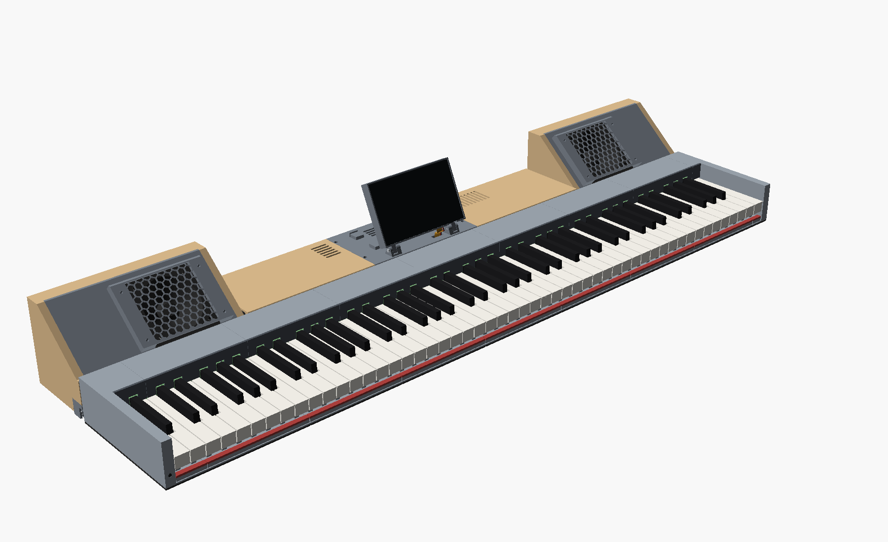<figcaption>앞 3/4 (쓰는 상태). 건반 모듈 7개 + 끝 부속, 양 끝 스피커(앞판 40°), 가운데 터치스크린 25°. CAD 렌더 R01</figcaption></figure>
  <div class="side">
    <div class="money">
      <div class="lab">실제 구매 금액 (가진 부품·예비 뺌, 배송비 포함)</div>
      <div class="big">731,485<small>원</small></div>
      <div class="brk">부품 683,385원 (86품목) + 배송비 48,100원</div>
      <div class="note">최종 재료 목록 기준입니다. 품목별로 켜고 끄려면 <a href="https://claude.ai/artifact/9CJ3HwhbhoodCAui94g28n" target="_blank" rel="noopener">최종 재료 페이지</a>에서 고칩니다. 판매처별 목록은 05 구매 목록 탭에 있습니다. 가진 부품·공구·예비까지 모두 넣은 전체 목록은 1,134,177원(저장소 엑셀)입니다.</div>
    </div>
    <div class="specs"><div class="kv"><span class="k">건반</span><b class="v">88건반</b><span class="d">옥타브 모듈 7개 + 끝 부속 2개</span></div><div class="kv"><span class="k">본체 크기</span><b class="v">1254 × 342.5 mm</b><span class="d">건반 뒤 뒷바 깊이 130.5 mm</span></div><div class="kv"><span class="k">높이</span><b class="v">z72.85 · z144.65</b><span class="d">건반·가운데 윗면 · 스피커 윗면 (mm)</span></div><div class="kv"><span class="k">누르는 힘</span><b class="v">51.9 / 51.0 g</b><span class="d">백건 / 흑건, 연타 16.3 / 18.8 Hz</span></div><div class="kv"><span class="k">화면</span><b class="v">7인치 1024×600</b><span class="d">25° 세움, 접으면 z78~95</span></div><div class="kv"><span class="k">전력</span><b class="v">평균 16~20 W</b><span class="d">순간 54.4 W · 보조배터리 3.2~4.0시간</span></div></div>
  </div>
</div>

<h3 class="sec">설계 구성</h3>
<div class="parts"><article class="part" id="sum-action"><figure>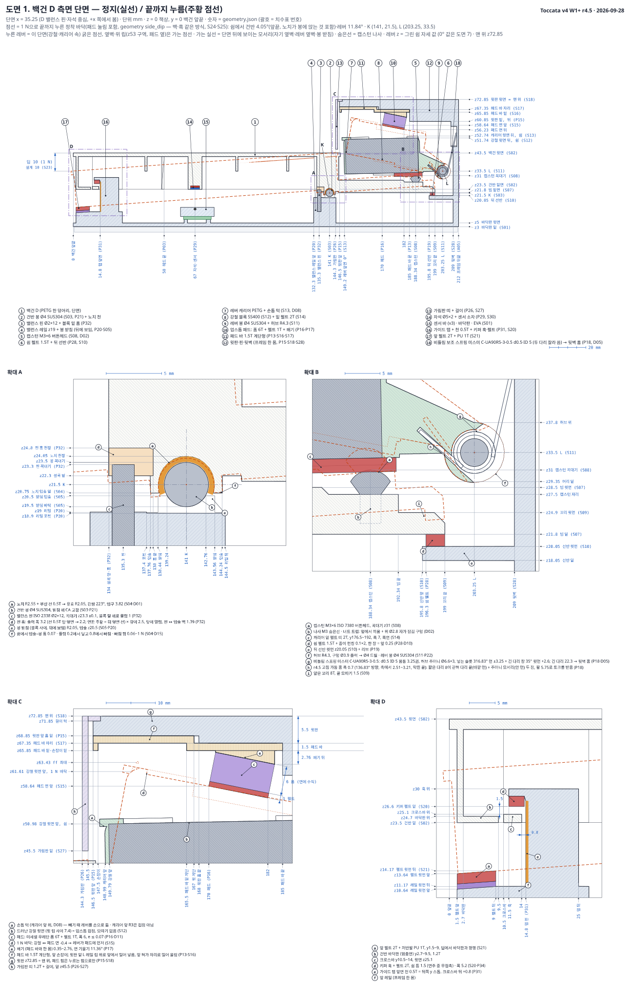</figure><div class="pt"><h3>건반 액션 · W1+ r4.5</h3><ul><li>짧은 시소 건반이 Ø4 강철 봉 위에서 돌고, 꼬리가 무게 레버(SS400 9×19×40, MS 폴리머 접착)를 들어 올립니다.</li><li>되돌림은 레버 무게 + 미스미 비틀림 스프링 C-UA90R5-3-0.5(다리 22.3 / 8.0, 짧은 다리 가둠 홈).</li><li>누르는 힘 백 51.9 g · 흑 51.0 g, 올라오는 힘 42.8 / 40.8 g, 연타 16.3 / 18.8 Hz. 검증 45개 통과.</li></ul><p class="links"><a class="go" href="#design">01 건반 액션 구조 →</a> <a class="go" href="#drawings">02 건반 도면 →</a> <a class="go" href="#check">03 남은 위험 →</a></p></div></article><article class="part" id="sum-body"><figure>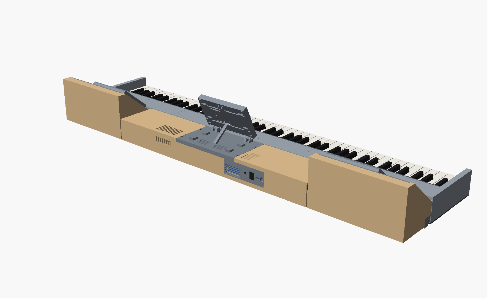</figure><div class="pt"><h3>본체 · L2 한 몸 뒷바</h3><ul><li>뒷바가 건반 모듈 바로 뒤(틈 2 mm)에 붙어 전체 깊이가 447 → 342.5 mm로 줄었습니다.</li><li>가운데 유닛 윗면이 건반과 같은 z72.85로 평평하고, 선은 모두 닫힌 통로(y212~241)와 앞 공간 안으로 지납니다.</li><li>합판은 오꾸메 400×1200 한 장, 뒤 래치 없음. 예비 건반은 따로 출력한 상자에 보관합니다(R29, 10/2).</li></ul><p class="links"><a class="go" href="#rear">08 뒷부분 도면 →</a> <a class="go" href="#cad">07 CAD 모델 →</a></p></div></article><article class="part" id="sum-speaker"><figure>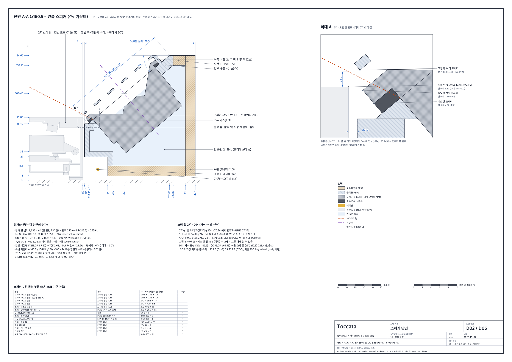</figure><div class="pt"><h3>스피커 · 앞판 40°</h3><ul><li>4인치 CW-100B25 2개, 밀폐 상자 안 부피 2.16 L, 앞판을 수평에서 40° 눕혀 연주자 귀 쪽(17° 차이)을 봅니다.</li><li>Qtc 1.13(흡음솜 넣으면 1.08), 콘 아래 끝 27° 소리 길이 건반 모서리 위 3.50 mm로 지나갑니다.</li><li>자석에서 가장 가까운 홀센서까지 228.5 mm(기준 100 mm). TPA3110 앰프, 저음 차단 약 93 Hz.</li></ul><p class="links"><a class="go" href="#rear">08 뒷부분 도면 D02 →</a></p></div></article><article class="part" id="sum-touch"><figure>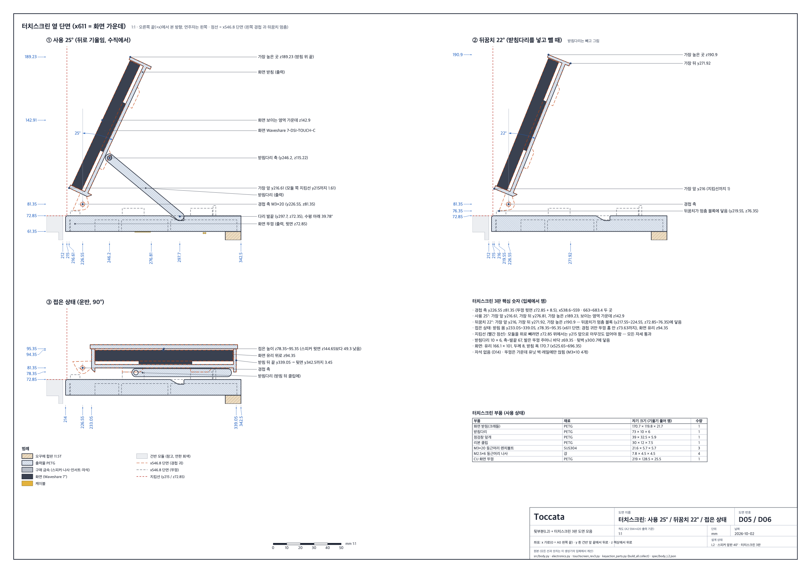</figure><div class="pt"><h3>터치스크린 · 3판</h3><ul><li>Waveshare 7-DSI-TOUCH-C(7인치 가로 1024×600, DSI). 가운데 뚜껑에 25° 기울여 세우고 받침다리 1개로 받칩니다.</li><li>경첩 축 y226.55 · z81.35라 어느 각도에서도 건반 모듈 위로 넘어가지 않습니다(가장 앞 y216.0). 접으면 z78~95.</li><li>리본 22핀 300 mm(쓰는 길이 254 mm), 전원은 Pi 헤더 2·6번에서 약 2.15 W.</li></ul><p class="links"><a class="go" href="#rear">08 뒷부분 도면 D05 →</a></p></div></article><article class="part" id="sum-elec"><figure>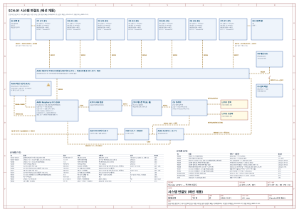</figure><div class="pt"><h3>전자부 · 회로 개정 C</h3><ul><li>건반마다 홀센서 DRV5055(모두 89개) → 모듈마다 RP2040-Zero + 16채널 먹스 → USB 허브 → Raspberry Pi 5(FluidSynth).</li><li>USB-C PD 20 V → 퓨즈 → 스위치 → 5.1 V 강압. 벽 충전기 또는 보조배터리(65 W PD)로 씁니다.</li><li>회로도 9장, 연결 검사 오류 0. 개정 C(10/1)에서 화면 연결 △16을 더했습니다.</li></ul><p class="links"><a class="go" href="#circuit">06 회로도 →</a></p></div></article></div>

<h3 class="sec">비용 — 무엇에 쓰나 (실제 구매 목록)</h3>
<div class="cost">
  <div class="bars"><div class="cap">묶음별 부품값 (배송비 뺌). 많이 드는 곳: 건반 액션 24%, 센서·MCU·기판 23%, 제어·전원 20%</div><div class="bar" title="건반 액션: 162,479원 · 부품의 23.8% · 16품목"><span class="bl">건반 액션</span><span class="bt"><span class="bf" style="width:100.00%"></span></span><span class="bv num">162,479<small>원</small></span></div><div class="bar" title="센서·MCU·기판: 154,960원 · 부품의 22.7% · 15품목"><span class="bl">센서·MCU·기판</span><span class="bt"><span class="bf" style="width:95.37%"></span></span><span class="bv num">154,960<small>원</small></span></div><div class="bar" title="제어·전원: 133,960원 · 부품의 19.6% · 8품목"><span class="bl">제어·전원</span><span class="bt"><span class="bf" style="width:82.45%"></span></span><span class="bv num">133,960<small>원</small></span></div><div class="bar" title="터치스크린: 87,095원 · 부품의 12.7% · 9품목"><span class="bl">터치스크린</span><span class="bt"><span class="bf" style="width:53.60%"></span></span><span class="bv num">87,095<small>원</small></span></div><div class="bar" title="본체·결합: 71,755원 · 부품의 10.5% · 24품목"><span class="bl">본체·결합</span><span class="bt"><span class="bf" style="width:44.16%"></span></span><span class="bv num">71,755<small>원</small></span></div><div class="bar" title="오디오: 62,686원 · 부품의 9.2% · 9품목"><span class="bl">오디오</span><span class="bt"><span class="bf" style="width:38.58%"></span></span><span class="bv num">62,686<small>원</small></span></div><div class="bar" title="소모품: 6,600원 · 부품의 1.0% · 1품목"><span class="bl">소모품</span><span class="bt"><span class="bf" style="width:4.06%"></span></span><span class="bv num">6,600<small>원</small></span></div><div class="bar" title="페달: 2,860원 · 부품의 0.4% · 1품목"><span class="bl">페달</span><span class="bt"><span class="bf" style="width:1.76%"></span></span><span class="bv num">2,860<small>원</small></span></div><div class="bar" title="공구: 990원 · 부품의 0.1% · 1품목"><span class="bl">공구</span><span class="bt"><span class="bf" style="width:0.61%"></span></span><span class="bv num">990<small>원</small></span></div></div>
  <div class="shipbox"><div class="cap" style="font-size:12.5px;color:var(--ink-3);margin-bottom:6px">배송비가 붙는 판매처</div>
    <div class="tw"><table><thead><tr><th>판매처</th><th class="num">주문액</th><th class="num">배송비</th></tr></thead>
    <tbody><tr><td>세운상가새한음향</td><td class="num">19,200</td><td class="num">4,000</td></tr><tr><td>굿나잇몰</td><td class="num">6,730</td><td class="num">3,500</td></tr><tr><td>onezaze</td><td class="num">6,000</td><td class="num">3,500</td></tr><tr><td>알씨뱅크</td><td class="num">10,500</td><td class="num">3,500</td></tr><tr><td>올스틸샵</td><td class="num">34,440</td><td class="num">3,500</td></tr><tr><td>나비엠알오</td><td class="num">37,521</td><td class="num">3,300</td></tr><tr><td>나사코리아 nasakorea.com</td><td class="num">23,300</td><td class="num">3,300</td></tr><tr><td>두유레디</td><td class="num">2,700</td><td class="num">3,000</td></tr><tr><td>상우아트</td><td class="num">7,800</td><td class="num">3,000</td></tr><tr><td>비젼몰</td><td class="num">2,750</td><td class="num">3,000</td></tr><tr><td>주영종합상사</td><td class="num">16,000</td><td class="num">3,000</td></tr><tr><td>메카솔루션</td><td class="num">4,160</td><td class="num">3,000</td></tr><tr><td>파츠파츠</td><td class="num">29,900</td><td class="num">3,000</td></tr><tr><td>스튜디오분트</td><td class="num">20,700</td><td class="num">3,000</td></tr><tr><td>대건상사</td><td class="num">9,040</td><td class="num">2,500</td></tr></tbody><tfoot><tr><td>합계</td><td></td><td class="num">48,100</td></tr></tfoot></table></div>
    <p class="free">무료 배송: 아이씨뱅큐 · G마켓 · 엘레파츠 · 한국미스미 · 동진나무공장 · Apple Store 온라인 · 11번가. 엘레파츠는 예비 부품 1,386원을 더해 무료 배송 기준(66,000원)을 넘겼습니다.</p>
  </div>
</div>

<h3 class="sec">다음 할 일</h3>
<ol class="next"><li><span class="when">지금</span><b>주문</b><span class="what">최종 재료 목록대로 주문합니다. 해외에서 오는 화면(10/15~22 도착 예상)과 10/26에 출하되는 스피커 결합 인서트(반품 불가)를 먼저 넣습니다.</span></li><li><span class="when">10월</span><b>단계 0 시험</b><span class="what">시편 34개와 공구 4개를 먼저 출력합니다. 시험 순서는 1(패드 반발) → 3a(윗판 굽힘) → 20(접착)·21(첫 모듈 정하중)·8(스프링 토크)입니다.</span></li><li><span class="when">10~11월</span><b>출력·조립</b><span class="what">건반 액션 7 모듈과 뒷바·스피커·화면 출력물을 뽑고 모듈부터 조립합니다. 출력용 STL은 hardware/mechanical/cad/stl/print에 있습니다.</span></li><li><span class="when">11/16~12/14</span><b>통합·시연</b><span class="what">본체·전자부·소리·터치 메뉴를 합치고 리듬게임 MVP를 Pi 5로 옮깁니다. 시연은 12/14 주입니다.</span></li></ol>

<h3 class="sec">부품을 받으면 먼저 확인할 것</h3>
<ul class="checks"><li>화면 뒤 DSI 커넥터 방향(반대면 받침을 좌우로 뒤집고 A형 리본을 씀)과 M2.5 구멍 깊이</li><li>보조배터리 USB-C 포트 중심이 바닥에서 15.5 mm 이상인지(NC888 꺾인 머리)</li><li>허브 DC 플러그가 잭 면에서 32 mm 안인지(넘으면 ㄱ자 플러그를 따로 삼)</li><li>업스톱 패드 PORON 두께: 목록대로 5T면 stl/print 그대로(패드 바가 5T용), 6T를 사면 stl/print_extra의 6T용 패드 바로 바꿔 뽑음</li><li>스피커 결합 인서트 구멍은 자투리 판에 Ø5.8부터 시험(헐거우면 Ø5.5)</li></ul>

<p class="src">원본: 설계서 docs/01-hardware-design.md (v4 확정본) · 설계 기준 hardware/mechanical/sound-requirements.md (R1~R32, D1~D24) · 건반 액션 hardware/mechanical/key-action-v4 (r4.5) · 본체·스피커 hardware/mechanical/cad/spec/body_L2.json · 터치스크린 hardware/mechanical/touchscreen/rev3 · 회로 hardware/pcb (개정 C) · 재료 hardware/bom (최종 재료 페이지 = 실제 구매). 좌표는 mm, x 가로(0 = A0 왼쪽 끝), y 흰건반 앞 끝에서 뒤로, z 책상에서 위로.</p>
</section><section class="page" id="p-design" hidden>
<h2>W1+ 짧은 시소 건반 + 무게 레버 (4.5차)</h2>
<h3>원리 (r4)</h3><ul class="flow"><li>건반은 Ø4 SUS304 봉 위의 짧은 시소다(봉 중심 K = (141.0, 21.5)). 스냅 노치(S04)가 봉을 223° 감싸고, 앞으로 옮긴 밸런스 핀(y135.3)이 건반 뒤쪽 x를 잡는다.</li><li>숨은 빔의 M3 버튼헤드 캡스턴(백 y188.34 · 흑 y180.31)이 레버 밑 펠트 띠를 들어 올린다. 레버 = 출력 캐리어(폭 10.6, 허브 칼라 일체 — 칼라 길이만 위치마다 다름) + SS400 평철 9×19×40(53.7 g, 모따기 없음), SUS304 Ø4 봉에 매달린다(L = (203.25, 33.5)). 허브 가운데 비틀림 스프링(r4.5: 미스미 C-UA90R5-3-0.5, 두 다리를 잘라 k_t 8.44 N·mm/rad, b = 0에서 28.4° 감김)이 강철을 아래로 민다.</li><li>쉬는 동안 레버 무게와 스프링이 캡스턴을 1.50 N(흑 0.98 N)으로 눌러 쉼 펠트가 뒤 선반(z20.054)에 앉는다. 플라스틱 상시 응력은 최대 0.50 MPa. 예하중이 걸린 이음이 하나도 없다.</li><li>누르면 레버의 드러난 강철 윗면(윗 립 사이 7.4)이 패드(폼 6T + 펠트 1T, 폭 6, y170~182)에 먼저 닿고(백 -0.40, 흑 -0.45 mm) 곧 건반이 앞 펠트에 닿는다. 패드 면은 1 N 정착 바닥의 강철 윗면과 평행(11.4° / 9.6°)이라 폼이 고르게 눌린다. 패드는 패드 바의 출력 쐐기에 붙어 있고, 패드 바는 윗판 밑 L 레일(웹 + 립)에 끼워져 가장자리의 출력 잎 혀가 립을 딛고 바를 윗판 자리에 밀어 올린다. 패드 힘은 윗판에 <b>누르는 힘</b>으로만 전한다.</li><li>윗판(프레임과 한 몸, z72.85)은 r3 브리지를 y146.5까지 늘린 것이다. 핀 5장과 뒷벽이 받친다. 기판 위 F|F# 핀은 r4.1부터 만능기판 앞쪽 홈을 지나 y148.6~170.7에서 내려가고(r4.4 고침 2b: 기판 밑 바닥이 뚫려 있어 바닥 대신 킬로 밸런스 레일 뒷면에 붙음 — 기판은 밑에서 넣음; r4.5 고침: 이 핀만 앞끝 y148.6, 킬 y144.5~148.6 z3~19.3), r4.3부터 그 뒤는 뒷벽까지 매달려 있다(뒤 선반은 USB 플러그 위가 뚫려 있음). 먼지 커버는 윗판 앞 턱에 걸친 가림판 띠 하나다.</li><li>손을 떼면 레버 무게 + 스프링이 캡스턴을 눌러 건반을 되돌린다(연타 16.3 / 18.8 Hz). 건반과 레버 사이에 홈이 없어 유격이 없다.</li><li>v3 앞 훅은 크로스바 위 1.5 mm의 ‘닿지 않는 키퍼’다. 센서는 자석 Ø5×2(y67), 2.5 m/s 과다 누름에서도 간격 4.76 mm(≥ 3.0).</li></ul>
<figure class="sheet" id="dwg1"><div class="cap"><span><b>도면 1 · 백건 측면 단면 (D)</b></span><a class="mono" href="dwg/d01_white_D_side.svg" target="_blank" rel="noopener">크게 보기 ↗</a></div><div class="dwimg"></div><figcaption class="small muted">백건 D를 x35.25(밸런스 핀·자석 중심)에서 자른 측면. 실선 = 정지(레버 정착 쉼 각), 주황 점선 = 1 N으로 끝까지 누른 정착 바닥(패드 눌림 포함; 쉼에서 건반 4.05°, 레버 11.84°; 딥 치수도 이 자세의 앞끝까지, S23 설계 10), 누른 레버는 단면(강철·캐리어 속)만 굵게, 옆벽·위 립은 가는 점선. r4: 업스톱은 윗판 밑 패드 바의 쐐기에 붙인 폼 6T + 펠트 1T 패드가 드러난 강철 윗면을 받음(레일·손나사·커버 없음, 맨 위 z72.85); 허브의 비틀림 스프링(r4.5: 미스미 C-UA90R5-3-0.5, 두 다리를 잘라 씀 — r4.5 고침: 짧은 다리 8은 허브의 가둠 홈 폭 0.7 (136.83° 방향, 축에서 2.51~3.21, 막힌 끝)에 갇히고, 긴 다리는 뒷벽 2.4 홈(레버 x +0.8 가운데))이 뒷벽 홈을 민다. 오른쪽 z·아래 y 좌표는 모두 geometry.json 값이고 괄호는 치수표 번호. 확대 A 봉·스냅 노치·핀, B 캡스턴·쉼·허브 주머니 Ø6.6·가둠 홈·스프링, C 업스톱(패드·쐐기·패드 바 계단 y165.5/167·윗판·가림판), D 앞 멈춤·키퍼.</figcaption></figure><figure class="sheet" id="dwg2"><div class="cap"><span><b>도면 2 · 흑건 측면 단면 (C#)</b></span><a class="mono" href="dwg/d02_black_Csharp_side.svg" target="_blank" rel="noopener">크게 보기 ↗</a></div><div class="dwimg">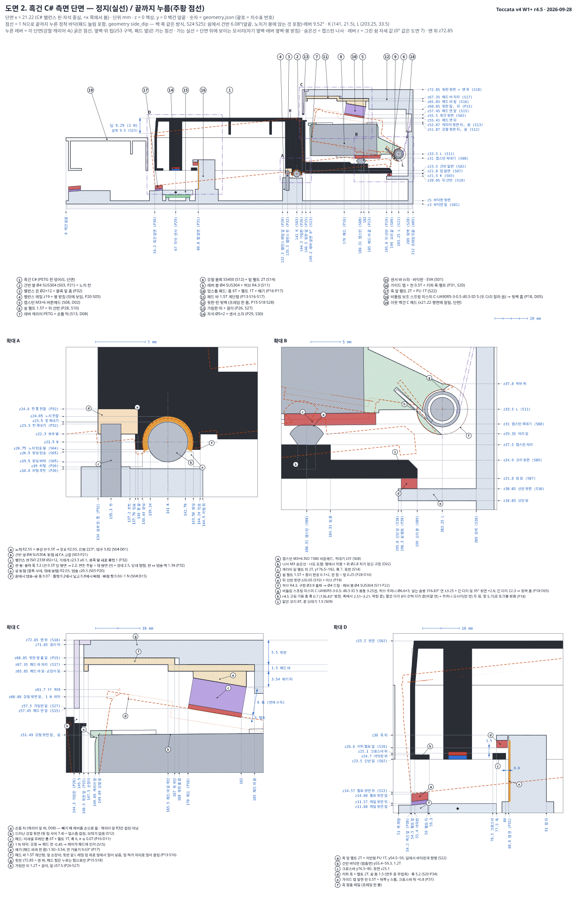</div><figcaption class="small muted">흑건 C#를 x21.22(밸런스 핀·자석 중심)에서 자른 측면. 실선 = 정지(레버 정착 쉼 각), 주황 점선 = 1 N으로 끝까지 누른 정착 바닥(패드 눌림 포함; 쉼에서 건반 6.08°, 레버 9.52°; 딥 치수도 이 자세의 앞끝까지, S23 설계 9.5), 누른 레버는 단면(강철·캐리어 속)만 굵게, 옆벽·위 립은 가는 점선. r4: 업스톱은 윗판 밑 패드 바의 쐐기에 붙인 폼 6T + 펠트 1T 패드가 드러난 강철 윗면을 받음(레일·손나사·커버 없음, 맨 위 z72.85); 허브의 비틀림 스프링(r4.5: 미스미 C-UA90R5-3-0.5, 두 다리를 잘라 씀 — r4.5 고침: 짧은 다리 8은 허브의 가둠 홈 폭 0.7 (136.83° 방향, 축에서 2.51~3.21, 막힌 끝)에 갇히고, 긴 다리는 뒷벽 2.4 홈(레버 x +0.8 가운데))이 뒷벽 홈을 민다. 오른쪽 z·아래 y 좌표는 모두 geometry.json 값이고 괄호는 치수표 번호. 확대 A 봉·스냅 노치·핀, B 캡스턴·쉼·허브 주머니 Ø6.6·가둠 홈·스프링, C 업스톱(패드·쐐기·패드 바 계단 y165.5/167·윗판·가림판), D 앞 멈춤·키퍼. 19 = 단면에 잘린 이웃 백건 C 헤드.</figcaption></figure>
<h3>하중 기준, 목표, 결과</h3><h4 class="sub4">0.1 하중 기준과 근거</h4>
<ul class="flow"><li><b>근거 1 — Askenfelt &amp; Jansson (1991)</b>, *From touch to string vibrations II: The motion of the key and hammer*, J. Acoust. Soc. Am. 90(5):2383–2393. KTH 강의 요약(https://www.speech.kth.se/music/5_lectures/askenflt/motions.html)에서 확인: 메조포르테에서 건반 최대 속도 약 0.3~0.5 m/s, 포르테에서도 1 m/s를 거의 넘지 않음, 해머 속도는 건반 속도의 약 5배(포르테 해머 약 5 m/s).</li><li><b>근거 2 — Goebl, Bresin &amp; Galembo (2005)</b>, *Touch and temporal behavior of grand piano actions*, J. Acoust. Soc. Am. 118(2):1154–1165 (https://iwk.mdw.ac.at/goebl/papers/Goebl-Bresin-Galembo_JASA2005_PianoAction.pdf 본문에서 확인): 2300여 음을 측정했고, 치는 터치(struck)의 최대 해머 속도는 거의 8 m/s(가장 센 타건: Steinway G6 7.5, Yamaha G6 7.8, Bösendorfer C4 7.6 m/s), 누르는 터치(pressed)는 5 m/s를 거의 넘지 않았다. 실제 연주에서 흔한 세기는 해머 0.7~1.25 m/s. 근거 1의 5배 비율로 나누면 가장 센 타건의 건반 속도는 7.8 / 5 ≈ 1.56 m/s이다.</li><li><b>PLAY 한계</b>: 건반 <b>앞끝</b> 속도 1.5 m/s(앞 펠트에 닿는 순간 = 행정 중 최대 속도). 한 건반, 굴린 화음과 동시 화음 6건반까지, 손가락을 떼거나 0.45~2 N으로 누른 채. 모든 기능 목표(DW·UW·연타·복귀·노치 들림·키퍼·유령·이음·센서·틈)를 지켜야 한다. 모델은 이 앞끝 속도가 되도록 타건 시작 속도를 풀었다(손가락 점에서 백 0.93, 흑 0.77 m/s). 여유 확인으로 손가락 점 1.5 m/s에서 시작하는 경우(앞끝 약 2.0 m/s)도 계산했다(‘여유 확인’ 행).</li><li><b>ABUSE 한계</b>: 한 건반 2.5 m/s, 6건반 동시 2.0 m/s(앞끝). 손상만 없으면 된다: 항복 없음, 10^4회 피로 한계 아래, 제자리 영구 이탈 없음(건반이 들렸다 다시 앉는 것은 됨), 조정 풀림 없음. 노치 들림은 빠짐 들림 0.80 mm의 절반(0.40)까지, 유령은 펌웨어가 걸러내면 된다.</li><li><b>PETG 응력 한계(r3 기준 유지)</b>: 층간(핀·벽처럼 세워 출력한 부분의 세로 인장) 매 음 5 MPa, 드문 하중(6건반 화음·ABUSE, 10^4회 이하) 15 MPa; 층 안(윗판 굽힘, 건반 빔·꼬리) 매 음 12 MPa, 드문 하중 25 MPa; 상시(쉼) 2 MPa.</li><li><b>펌웨어 유령 거름(U6, r4.1 고침; r4.5 회로 2차: 글을 모델 gfilter·SCH-03 주 9와 같게)</b>: 같은 건반에서 앞끝 0.3 m/s 이상인 <b>어떤 음</b>이든, 그 note-on(모델: 앞 펠트에 닿는 순간)부터 250 ms 안에 건반이 재무장선(자석 복귀 50 %)을 넘으면 의심 상태가 된다. 그 뒤 <b>note-on부터 500 ms 안에</b> 닿는 첫 다시 눌림의 내려오는 속도(손가락 점)가 앞 음 속도의 25 % 미만(최대 0.45 m/s)이면 버린다; 500 ms가 지나면 의심을 풀고 다음 눌림은 보통 음이다. 모델에서 재무장하는 28건은 note-on 뒤 1.5 s까지 돌려도 스스로 다시 닿는 것이 0건이다(7.4) — 500 ms는 흔들림이 멈추는 가장 늦은 222 ms의 약 2배이고, 단계 0 시험 11에서 펌웨어 기록의 유령 다시 눌림 시각으로 확인한다. r4.0의 문턱 1.2 m/s는 0.8~1.1 m/s 화음의 유령(내려옴 0.03~0.17 m/s)을 통과시켰다(검증자). 대가: 진짜 연타라도 건반이 250 ms 안에 재무장한 뒤 note-on부터 500 ms 안에 앞 음의 1/4보다 느리게 다시 치면 모든 세기에서 버려진다(예: 1.0 m/s 뒤 0.25 m/s 미만).</li></ul>
<h4 class="sub4">0.2 목표 대비 결과</h4>
<div class="tbl"><table><thead><tr><th>구간</th><th>목표 (모델 안의 판정식)</th><th>결과 (백 / 흑)</th><th>판정</th></tr></thead><tbody><tr><td>PLAY</td><td>DW 47~55 g (y13, 흑 앞+10), 기본 마찰 (백 / 흑)</td><td>51.9 / 51.0 (마찰 2배 56.5 / 56.1, 참고)</td><td>통과</td></tr><tr><td>PLAY</td><td>UW 20 g 이상 (쉼·바닥, 마찰 2배 바닥 포함)</td><td>42.8 / 40.8 (바닥 마찰 2배 최소 21.3)</td><td>통과</td></tr><tr><td>PLAY</td><td>DW 립 y0 47 g 이상 (백)</td><td>47.1</td><td>통과</td></tr><tr><td>PLAY</td><td>연타 13.3 Hz 이상 (1/(2·t50), 50 % 재무장, 1.2 s 정착 뒤 뗌)</td><td>16.3 / 18.8</td><td>통과</td></tr><tr><td>PLAY</td><td>연타, 마찰 2배 (비틀림 보조 스프링 기본; 끝 건반 A0·C8 포함)</td><td>15.2 / 17.7 (끝 건반 최소 15.0)</td><td>통과</td></tr><tr><td>PLAY</td><td>끝까지 복귀 60 ms 미만 (마찰 2배, 끝 건반 포함)</td><td>45.4 / 39.9 (마찰 2배 48.5, 끝 건반 최대 49.3)</td><td>통과</td></tr><tr><td>PLAY</td><td>노치 들림 0.20 이하 (들림으로만 판정; 0.5~1.5 m/s, 뗌·0.45~2 N, 한 건반·6건반 화음 자리 1.0~1.5 m/s 0.05 간격, 끝 건반, 합격선 재료; 접촉 하한 0.02)</td><td>0.162 (재료 조합 0.159, 화음 자리 0.135 / 합격선 0.149, 끝 건반 0.140); 모델 하한 v_floor 0.1 모서리: 한 건반 0.198, 화음 0.219 (18장); 합격선 밖 최악 0.204 / 화음 0.204</td><td>통과</td></tr><tr><td>PLAY</td><td>키퍼 무접촉 (합격선 재료, 화음 자리 포함)</td><td>최소 틈 0.52 (조합 0.41, 화음 0.51; v_floor 0.1 화음 0.26; 합격선 밖 최악 0.34 / 화음 0.34)</td><td>통과</td></tr><tr><td>PLAY</td><td>유령: 재무장선 50 %를 넘는 경우는 모두 펌웨어 거름이 버림 (한 건반·6건반 화음 자리 0.5~1.5 m/s 0.1 간격, 0.45~2 N, 끝 건반, 거름 문턱 0.3 m/s; r4.5 회로 2차: 창 = note-on부터 재무장 250 ms, 첫 다시 눌림은 note-on부터 500 ms 안, 재무장한 경우는 note-on 뒤 1500 ms까지 돌림)</td><td>한 건반 1.5 m/s 최대 17 %; 350건 중 재무장 28건 모두 거름 (못 거른 것 0); 재무장 28건 중 1500 ms 안에 다시 닿는 것 0건, 모두 222 ms까지 멈춤(뜬 자리 22~96 %, 기어내림 ≤ 0.0005 m/s)</td><td>통과</td></tr><tr><td>PLAY</td><td>업스톱 이음 닫힘</td><td>이음 없음: 패드 → 패드 바 → 윗판 압축 (나사·예하중 없음)</td><td>통과</td></tr><tr><td>PLAY</td><td>센서 최소 간격 3.0 이상 (2.5 m/s 과다 누름)</td><td>4.76</td><td>통과</td></tr><tr><td>PLAY</td><td>모든 틈 ±0.3 공차 뒤 1.0 이상 (모듈, 끝 부속, 이음매)</td><td>1.01 (끝 부속 1.01 / 1.01, 이음매 너머 고정 부품 1.02 / 1.02; 이음 면 0.40 / 0.40 = 모듈 이음과 같은 0.4)</td><td>통과</td></tr><tr><td>PLAY</td><td>쉼 상시 응력 2 MPa 미만</td><td>0.50 MPa</td><td>통과</td></tr><tr><td>PLAY</td><td>매 음 층간 응력 5 MPa 미만 (핀-윗판 이음, 한 건반 1.5 m/s)</td><td>1.3 MPa</td><td>통과</td></tr><tr><td>PLAY</td><td>6건반 화음 층간 응력 15 MPa 미만 (드문 하중, r3 기준)</td><td>4.2 MPa (윗판 층 안 5.5)</td><td>통과</td></tr><tr><td>PLAY</td><td>숨은 빔·얇은 꼬리 매 음 12 MPa 미만 (층 안: 건반은 윗면이 베드)</td><td>빔 11.5, 꼬리 9.7 MPa</td><td>통과</td></tr><tr><td>PLAY</td><td>레버 봉 SUS304 Ø4: 6건반 화음 응력 &lt; 항복/1.5</td><td>65 MPa (항복 205, 풀림재 최소값)</td><td>통과</td></tr><tr><td>ABUSE</td><td>노치 들림 0.40 이하 (빠짐 0.80 / 안전율 2), 모든 재료 조합, 2.0 m/s 6건반 화음 자리 포함</td><td>0.177 (조합 최대 0.349, 화음 자리 0.203)</td><td>통과</td></tr><tr><td>ABUSE</td><td>항복 없음: 레버 봉 (2.0 m/s 6건반, 2.5 m/s 한 건반)</td><td>88 MPa &lt; 205</td><td>통과</td></tr><tr><td>ABUSE</td><td>피로 10^4회: 층간 15 MPa, 층 안 25 MPa 미만 (2.0 m/s 6건반)</td><td>핀 이음 5.7, 윗판 7.5 MPa</td><td>통과</td></tr><tr><td>ABUSE</td><td>숨은 빔·얇은 꼬리 25 MPa 미만 (층 안, 2.5 m/s)</td><td>빔 10.0, 꼬리 9.7 MPa</td><td>통과</td></tr><tr><td>ABUSE</td><td>제자리 이탈·조정 풀림 없음</td><td>패드 바는 압축, 조정은 인쇄 쐐기·PET 심·캡스턴(벤치)</td><td>통과</td></tr><tr><td>BUILD</td><td>레버를 건반보다 먼저: 모든 레버가 윗판 밑 제자리(레버 봉 선)에 들어감 (2D C-공간, 끝 부속 포함)</td><td>11 / 11 도달 (건반을 먼저 넣으면 흑 레버 막힘)</td><td>통과</td></tr><tr><td>BUILD</td><td>고정 부품끼리 겹침 없음 (따로 출력하는 부품, 모듈·끝 부속; r4.1: 패드 바 ↔ 윗판 2.5 mm²)</td><td>모듈 0, 끝 부속 0 / 0; 패드 바를 넣고 빼는 내내 윗판·레일과 최소 -0.01 (접촉 −0.01)</td><td>통과</td></tr><tr><td>BUILD</td><td>패드 쐐기·패드 ↔ 윗판 계단·레일 1.3 이상 (패드 바 뒤끝만 계단에 닿음)</td><td>쐐기 1.43, 패드 1.43 (끝 부속 1.43)</td><td>통과</td></tr><tr><td>BUILD</td><td>비틀림 스프링 조립: 코일이 허브 홈으로 들어가고, 긴 다리가 레버 전 범위에서 홈 안(면까지 0.2 이상), 뒷벽 홈에 아래로 들어감</td><td>레버 -31.3°~18.0°에서 여유 0.57; 다리는 보스 면에 z41.45(보스 밑 z47.0 아래)에서 닿고 홈(z47부터)으로 들어감</td><td>통과</td></tr><tr><td>BUILD</td><td>r4.5 고침 2 짧은 다리 가둠 홈에 넣기: 스프링을 짧은 다리 끝부터 홈을 따라 밀어 넣음 (홈이 0.15 좁게 나와도 틈 ≥ 0; 더 좁으면 0.5 날로 다듬음)</td><td>짧은 다리 ↔ 홈 면 0.100 (0.10 / 0.15 좁게: 0.050 / 0.025), 코일 ↔ 조각 A 0.22 · B 0.14, 긴 다리 ↔ A 4.34 · B 3.14</td><td>통과</td></tr><tr><td>PLAY</td><td>r4.5 고침 2 코일 뜸(검증 major): 짧은 다리를 가둬 코일이 봉에 닿지 않음 — 쉼 토크 설계값, 봉 마찰 이력 0, 홈이 +0.3 넓게 나와도 봉과 틈 &gt; 0</td><td>쉼 4.19 N·mm (r4.5 한 면 받침이면 코일이 봉으로 0.47 밀려 2.18), 봉과 틈 쉼 0.43 · 바닥 0.38 · 손 25° 0.33, 홈 +0.3이면 쉼 3.75 N·mm·틈 0.17; 짝 힘 0.73 N</td><td>통과</td></tr><tr><td>BUILD</td><td>r4.5 고침 2 건반 뺀 레버의 긴 다리: 뒷벽 홈·보스를 다리 x(+0.8)에 맞춤 — 코일 축 놀음 + 레버 놀음을 더해도 홈 입구(모따기 포함)가 다리를 받음</td><td>다리 x 어긋남 최대 0.84 (코일 0.44 + 레버 0.41) ≤ 받는 폭 1.45: 여유 0.61 (레버 중심 홈이면 -0.19)</td><td>통과</td></tr><tr><td>BUILD</td><td>r4.5 스프링 카탈로그 한계: 손 들기(레버 25°) 감김각 ≤ 최대 사용각 55°</td><td>감김 53.4°, 토크 7.83 N·mm = 카탈로그 55° 토크 7.52의 104 % (18장 위험), 응력 685 MPa (Su 32 %)</td><td>통과</td></tr><tr><td>ABUSE</td><td>r4.5 고침 2 허브·웹 (가둠 홈 자리): 층 안 &lt; 25 MPa (홈 모서리 Kt 2 포함), 매 음 PLAY &lt; 12 MPa</td><td>ABUSE 7.96 MPa (홈 없던 단면 3.44), PLAY 4.93 MPa; 다리 두 닿는 점 1.36 N (손 25°), 봉 지압 1.45 MPa</td><td>통과</td></tr><tr><td>BUILD</td><td>패드 바 빼기 (앞부분이 나온 21.5 mm부터 윗판에 밀어 올림): 공칭 1.3 이상, PET 심 3장 1.0 이상</td><td>공칭 1.30, 심 3장 1.11 (곧게만 당기면 끝 0.5 mm에서 -0.39)</td><td>통과</td></tr><tr><td>PLAY</td><td>r4.3 쉼 펠트가 USB 홈 옆에 55 %만 앉을 때 (F#, 두 색에 적용): 연타 13.3 Hz 이상(마찰 2배 포함), 복귀 60 ms 미만, 들림 0.20 이하, 키퍼 무접촉</td><td>연타 16.3 / 18.8 Hz (마찰 2배 최소 15.2), 복귀 45.4 / 39.9 ms (마찰 2배 최대 48.5), 들림 0.114 / 0.061, 키퍼 0.41 / 1.11</td><td>통과</td></tr><tr><td>BUILD</td><td>r4.3 USB-C 플러그(RP2040-Zero 핀 헤더 위, z10.7~18.3) ↔ 뒤 선반·리브·핀·뒷벽 1.3 이상</td><td>최소 1.30 (rear shelf); 선반 홈 x76.45~91.55, 리브 2.15, 핀 3.20, 뒷벽 개구 2.70</td><td>통과</td></tr><tr><td>BUILD</td><td>r4.3 제어 기판 부품(BRD-01)·부품 한계 ↔ 출력 프레임 1.3 이상, 리본(16심) 차선 양옆 1.3 이상</td><td>최소 1.30 (board components (&lt;= z20) ↔ fin); 핀 발 ↔ 제로 앞 모서리 1.30; 리본 1.32 / 1.36</td><td>통과</td></tr><tr><td>PLAY</td><td>r4.4 윗 스냅 립 ↔ 패드·패드 바·레일 1.3 이상 (립을 geometry·스윕에 넣음; r4.3 립 y150~168은 0.64)</td><td>최소 1.81 (패드 2.16, 패드 바·레일 1.81); r4.3 립은 1 N 바닥에서 패드 옆 0.64 (공차 뒤 0.34)</td><td>통과</td></tr><tr><td>PLAY</td><td>r4.4 강철 블록 유지 (고침 2b: MS 폴리머 탄성 접착, 접착층 한쪽 0.10): 캐리어 → 강철 힘·모멘트의 전단 + 열팽창 차이 전단(매 음 ΔT 15 K, 드문 30 K, 가장 얇은 접착층 0.02) — 매 음 0.375, 드문 0.750 MPa 이하 (설계 1.5 MPa / 4·2); 스냅 립만으로는 안 됨(18장)</td><td>전단(하중 + 열) 매 음 0.067 + 0.189, 화음 0.057 + 0.379, ABUSE 0.100 + 0.379 MPa (면적 1411 mm²; 5분 에폭시면 열만 2.24 MPa), 충격 2009 g까지; 접착 없이 스냅만: 아래 립 뿌리 층간 6.8 MPa(한계 5), 옆벽 립 뿌리 층 안 23.5 MPa(한계 12), 립 선이 1.11 벌어짐(물림 1.0)</td><td>통과</td></tr><tr><td>PLAY</td><td>r4.4 F·F# 쉼 펠트 착지(r4.4 펠트) 6건반 화음 자리: 들림 0.20 이하, 키퍼 무접촉, 유령 모두 거름, 연타 13.3 Hz 이상·복귀 60 ms 미만(마찰 2배)</td><td>F 59 %: 들림 0.130 키퍼 0.37 연타 15.3 Hz 복귀 48.3 ms; F# 55 %: 들림 0.074 키퍼 1.11 연타 17.7 Hz 복귀 42.3 ms</td><td>통과</td></tr><tr><td>ABUSE</td><td>r4.4 F·F# 착지 ABUSE (2.5 m/s 한 건반·화음 자리, 2.0 m/s 화음): 들림 0.40 이하, ABUSE 복귀 넘침 자세에서 닿지 않음</td><td>들림 최대 0.353; ABUSE 복귀 넘침 최소 틈 1.27 (공차 뒤 0.97)</td><td>통과</td></tr><tr><td>BUILD</td><td>r4.4 레버 봉·핀 보스 구멍·봉 마개를 geometry·스윕에 넣음 (마개는 끝 핀 면과 같은 면, 축 놀음 &gt; 0)</td><td>마개 x0.2~1.4, 막힌 끝 x163.1; 축 놀음 0.10~0.50; 가장 가까운 움직이는 부품 1.77</td><td>통과</td></tr><tr><td>BUILD</td><td>r4.4 고침 2b 제어 기판 넣기: 한 덩어리 프레임에 기판이 들어갈 길 — 바닥 구멍으로 밑에서 곧게 올림(기판 홈이 F\</td><td>F# 핀 발·킬을 따라감), 길 위 고정 부품과 평면 틈 &gt; 0, 걸리는 것은 매단 보스(자리)뿐</td><td>길 위 최소 0.60 (기판 ↔ fin); 바닥 구멍 x46.25~118.25 y144.5~196.5(리셉터클 뒤 x78.53~89.47는 y197.8까지); 멈춤 = 기판 위 매단 보스 4개(z10.6에 닿음), 위치 핀 반경 놀음 0.10; r4.4 고침 2까지는 길이 없었음(핀 발이 바닥~윗판, 기판 뒤 여유 1.3)</td><td>통과</td></tr><tr><td>PLAY</td><td>r4.4 고침 2b F\</td><td>F# 핀 발 킬(밸런스 레일 뒷면까지, 바닥 대신): 화음 자리 강성 460 N/mm 이상(단계 0 합격선), 킬 굽힘 층 안 매 음 12 / 드문 25 MPa, 전단 층간 기준 매 음 5 / 드문 15 MPa</td><td>화음 자리 492 N/mm (r4.5 고침 2: 레일 + 바닥 띠를 핀 선 사이 보로; 킬 z19.3 + F\</td><td>F# 핀 앞끝 y148.6; 레일 고정이면 495, r4.4 킬 z18·앞끝 y152면 447, 첫 시도 킬 z21은 건반 F에 0.21); 킬 한 건반 PLAY 3.35 MPa (전단 1.60), 6건반 화음 PLAY 13.02 (6.25), ABUSE 화음 2.0 m/s 17.68 (8.48) MPa</td><td>통과</td></tr><tr><td>BUILD</td><td>r4.5 고침 2 첫 모듈 정하중 확인(단계 0): 6패드 × 60 N에서 E·F 패드 자리 처짐 ≤ 60 / 460 = 0.13 mm (모델)</td><td>모델 E·F 최대 0.121 mm (D-D#-E-F-F#-G 화음), 가장 무른 자리 496 N/mm</td><td>통과</td></tr><tr><td>BUILD</td><td>r4.4 회로 대조: 스탠드오프 M3 머리(L35 Ø5.7)·핀 ↔ 레일·리브 1.3, 핀은 기판 안·나사 구멍 둘레 기판 1.0 이상; 리본(차선·기판 밑·SB 리브 틈) 양옆 1.3; 플러그 y196.8~221.8 ↔ 선반 홈·뒷벽 개구 1.3; 끝 부속 리드 패드·선 ↔ 리브 틈 1.3, 리드 길(모음 포함) ↔ 바닥 부품 1.3, 기판이 센서 바 안</td><td>머리 ↔ 레일 1.65, ↔ 리브 1.54 (축 위 1.45), 구멍 둘레 기판 1.15 (머리는 모서리 밖 0.10); 리본 1.32 / 1.36 (SB 리브 틈 1.32 / 1.36, 기판 밑 ↔ 핀 발 1.88); 플러그 홈 1.30, 뒷벽 개구 2.70; 리드 틈 최소 1.35, 리드 길 ↔ 바닥 부품 1.30 (A#0 탭 받침 1.75); 기판 부품 ↔ 프레임 1.30</td><td>통과</td></tr><tr><td>PLAY</td><td>r4.4 고침 2: 스윕에 레버 축 놀음(칼라·보스 사슬, 한쪽)·패드 바 옆 놀음 ±0.3·건반 노치가 봉에 앉음/파고듦(쉼·1 N 바닥 평면 상태, ff·복귀 넘침 동역학 최저) — 모든 쌍 1.3 이상</td><td>레버 ↔ 레버 1.32, 레버 ↔ 핀 1.32, 레버 ↔ 패드 바·패드·쐐기 1.44, 옆벽 ↔ 자기 패드 1.44 (고침 1 옆벽이면 0.73), 흑 블록 ↔ 밸런스 레일 1.31 (포켓 백 z18.90 y137.4~; 흑 z18.80 y137.2~)</td><td>통과</td></tr><tr><td>참고</td><td>유효 질량 m_eff</td><td>55.2 / 46.5 g (r3 68.9 / 64.7)</td><td>가벼운 레버 + 스프링</td></tr><tr><td>참고</td><td>앞/뒤 힘 비 DW(y90)/DW(y13)</td><td>2.52 (y90 131.0 g)</td><td>단계 0 느낌 판정</td></tr><tr><td>참고</td><td>마찰 2배 DW</td><td>56.5 / 56.1 g</td><td>55 g을 넘음 (r3도 55.9 / 55.8) — 18장</td></tr><tr><td>참고</td><td>1 N으로 누른 바닥 (레버가 패드에 먼저)</td><td>건반 앞이 펠트 위 +0.04 / +0.27 mm</td><td>2 N이면 펠트에 닿음</td></tr><tr><td>참고</td><td>모듈 맨 위 높이 (v3 z59, r3 커버 z78.0·머리 z80.7)</td><td>z72.85, 그 위에 아무것도 없음</td><td>≤ z74 목표 통과</td></tr><tr><td>참고</td><td>모듈 무게 (r3 2.03 kg)</td><td>1.37 kg</td><td>≤ 1.6 kg 목표 통과</td></tr><tr><td>참고</td><td>부품 수 / 모듈 (출력 + 구매)</td><td>32 + 88 = 120 (r3 76 + 173 = 249)</td><td></td></tr><tr><td>참고</td><td>필라멘트·출력 시간 (88건반, 서포트 포함)</td><td>6.55 kg · 436 h (r3 6.54 kg · 436 h)</td><td>윗판 서포트 때문에 약간 늘어남</td></tr><tr><td>참고</td><td>금속 (88건반)</td><td>5.10 kg (r3 9.52 kg)</td><td></td></tr><tr><td>참고</td><td>기본 구성 비용 변화 (한도 100만 원)</td><td>+69,400원 → 기본 652,619원 (r3 +130,400원)</td><td>한도 안</td></tr></tbody></table></div>
<h3>힘·관성·복귀</h3><div class="tbl"><table><thead><tr><th>항목</th><th>백 (D)</th><th>흑 (C#)</th></tr></thead><tbody><tr><td>캡스턴 y</td><td>188.34</td><td>180.31</td></tr><tr><td>건반 / 레버 질량</td><td>23.41 / 56.95 g (강철 53.69)</td><td>18.04 / 56.95 g</td></tr><tr><td>BW / DW / UW</td><td>47.3 / 51.9 / 42.8 g</td><td>45.9 / 51.0 / 40.8 g</td></tr><tr><td>마찰 (건반 봉 + 레버 봉 + 캡스턴 + 가이드)</td><td>4.57 = 0.88 + 1.20 + 0.57 + 1.93 g</td><td>5.11 = 1.08 + 0.48 + 2.06 + 1.48 g</td></tr><tr><td>스프링 몫 (DW에서)</td><td>11.2 g (스프링 없으면 DW 40.7)</td><td>10.4 g (40.6)</td></tr><tr><td>스프링 토크 쉼 / 바닥</td><td>4.19 / 6.03 N·mm</td><td>4.19 / 5.69 N·mm</td></tr><tr><td>행정 따라 DW (0 / 25 / 50 / 75 / 100 %)</td><td>51.9 / 53.5 / 54.4 / 54.5 / 54.0</td><td>51.0 / 51.2 / 50.9 / 50.0 / 48.7</td></tr><tr><td>행정 따라 UW</td><td>42.8 / 41.7 / 39.9 / 37.6 / 34.7</td><td>40.8 / 38.7 / 36.3 / 33.5 / 30.5</td></tr><tr><td>마찰 2배 DW / 바닥 UW</td><td>56.5 / 25.0 g</td><td>56.1 / 21.3 g</td></tr><tr><td>m_eff (건반 + 레버)</td><td>55.2 (8.8 + 46.5) g</td><td>46.5 (7.9 + 38.6) g</td></tr><tr><td>t50 / 끝까지 (1.2 s 정착 1 N에서 뗌)</td><td>30.8 / 45.4 ms → 16.3 Hz</td><td>26.5 / 39.9 ms → 18.8 Hz</td></tr><tr><td>마찰 2배</td><td>32.9 / 48.5 ms → 15.2 Hz</td><td>28.3 / 42.4 ms → 17.7 Hz</td></tr></tbody></table></div>
<p>백 립(y0) DW 47.1 g, y90 DW 131.0 g → 앞/뒤 비 2.52. 비틀림 스프링(r4.5 미스미 C-UA90R5-3-0.5, r4.5 고침: 짧은 다리 8.0를 가둠 홈에): 코일 몸통 강성 10.16 N·mm/rad(자른 다리 포함 8.437), C 11.0, 바닥에서 안지름 4.83 — 코일은 가둔 다리에 매달려 봉과 쉼 0.43 · 바닥 0.38 떨어짐(봉 마찰 없음).</p>
</section><section class="page" id="p-drawings" hidden><h2>건반 액션 도면</h2><p class="lede">모든 치수는 좌표 모델(geometry.json, r4.5)에서 옮겼습니다. 실선은 쉬는 자세, 주황 점선은 끝까지 누른 자세입니다. 본체 전체 배치(L2 뒷바·스피커·화면)는 08 뒷부분 도면의 D01~D06에 있습니다.</p><ol class="dtoc"><li><a href="#dwg1">1. 백건 측면 단면 (D)</a></li><li><a href="#dwg2">2. 흑건 측면 단면 (C#)</a></li><li><a href="#dwg3">3. 옥타브 모듈 평면도</a></li><li><a href="#dwg4">4. 모듈 가로 단면 (레버 구역)</a></li><li><a href="#dwg5">5. 백건 부품도</a></li><li><a href="#dwg6">6. 흑건 부품도</a></li><li><a href="#dwg7">7. 레버 캐리어 + 강철 블록 부품도</a></li><li><a href="#dwg8">8. 프레임 부품도</a></li><li><a href="#dwg9">9. 패드 바 + 업스톱 패드 + 가림판 띠 + 비틀림 스프링</a></li><li><a href="#dwg10">10. 끝 부속 (왼쪽 A0·A#0·B0, 오른쪽 C8) 평면</a></li><li><a href="#dwg12">12. 건반 하나 빼기 순서</a></li><li><a href="#dwg13">13. 레버 봉 끝 마개 (출력 공구는 도면 14)</a></li><li><a href="#dwg14">14. 출력 공구 (벤치 지그 · 높이 블록 · 캡스턴 게이지 · 핀 높이 게이지)</a></li><li><a href="#dwg15">15. 단계 0 시편·지그</a></li></ol><figure class="sheet" id="dwg1"><div class="cap"><span><b>도면 1 · 백건 측면 단면 (D)</b></span><a class="mono" href="dwg/d01_white_D_side.svg" target="_blank" rel="noopener">크게 보기 ↗</a></div><div class="dwimg"></div><figcaption class="small muted">백건 D를 x35.25(밸런스 핀·자석 중심)에서 자른 측면. 실선 = 정지(레버 정착 쉼 각), 주황 점선 = 1 N으로 끝까지 누른 정착 바닥(패드 눌림 포함; 쉼에서 건반 4.05°, 레버 11.84°; 딥 치수도 이 자세의 앞끝까지, S23 설계 10), 누른 레버는 단면(강철·캐리어 속)만 굵게, 옆벽·위 립은 가는 점선. r4: 업스톱은 윗판 밑 패드 바의 쐐기에 붙인 폼 6T + 펠트 1T 패드가 드러난 강철 윗면을 받음(레일·손나사·커버 없음, 맨 위 z72.85); 허브의 비틀림 스프링(r4.5: 미스미 C-UA90R5-3-0.5, 두 다리를 잘라 씀 — r4.5 고침: 짧은 다리 8은 허브의 가둠 홈 폭 0.7 (136.83° 방향, 축에서 2.51~3.21, 막힌 끝)에 갇히고, 긴 다리는 뒷벽 2.4 홈(레버 x +0.8 가운데))이 뒷벽 홈을 민다. 오른쪽 z·아래 y 좌표는 모두 geometry.json 값이고 괄호는 치수표 번호. 확대 A 봉·스냅 노치·핀, B 캡스턴·쉼·허브 주머니 Ø6.6·가둠 홈·스프링, C 업스톱(패드·쐐기·패드 바 계단 y165.5/167·윗판·가림판), D 앞 멈춤·키퍼.</figcaption></figure><figure class="sheet" id="dwg2"><div class="cap"><span><b>도면 2 · 흑건 측면 단면 (C#)</b></span><a class="mono" href="dwg/d02_black_Csharp_side.svg" target="_blank" rel="noopener">크게 보기 ↗</a></div><div class="dwimg"></div><figcaption class="small muted">흑건 C#를 x21.22(밸런스 핀·자석 중심)에서 자른 측면. 실선 = 정지(레버 정착 쉼 각), 주황 점선 = 1 N으로 끝까지 누른 정착 바닥(패드 눌림 포함; 쉼에서 건반 6.08°, 레버 9.52°; 딥 치수도 이 자세의 앞끝까지, S23 설계 9.5), 누른 레버는 단면(강철·캐리어 속)만 굵게, 옆벽·위 립은 가는 점선. r4: 업스톱은 윗판 밑 패드 바의 쐐기에 붙인 폼 6T + 펠트 1T 패드가 드러난 강철 윗면을 받음(레일·손나사·커버 없음, 맨 위 z72.85); 허브의 비틀림 스프링(r4.5: 미스미 C-UA90R5-3-0.5, 두 다리를 잘라 씀 — r4.5 고침: 짧은 다리 8은 허브의 가둠 홈 폭 0.7 (136.83° 방향, 축에서 2.51~3.21, 막힌 끝)에 갇히고, 긴 다리는 뒷벽 2.4 홈(레버 x +0.8 가운데))이 뒷벽 홈을 민다. 오른쪽 z·아래 y 좌표는 모두 geometry.json 값이고 괄호는 치수표 번호. 확대 A 봉·스냅 노치·핀, B 캡스턴·쉼·허브 주머니 Ø6.6·가둠 홈·스프링, C 업스톱(패드·쐐기·패드 바 계단 y165.5/167·윗판·가림판), D 앞 멈춤·키퍼. 19 = 단면에 잘린 이웃 백건 C 헤드.</figcaption></figure><figure class="sheet" id="dwg3"><div class="cap"><span><b>도면 3 · 옥타브 모듈 평면도</b></span><a class="mono" href="dwg/d03_octave_plan.svg" target="_blank" rel="noopener">크게 보기 ↗</a></div><div class="dwimg">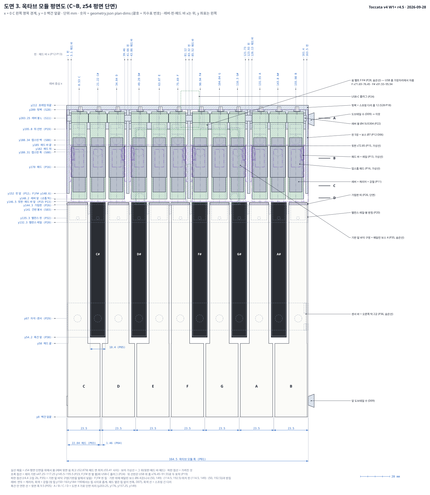</div><figcaption class="small muted">C~B 모듈을 z54(레버 윗면과 업스톱 패드 면 사이)에서 잘라 위에서 본 평면. 건반·레버(캐리어 + 윗 립 사이 강철)·핀·보스·뒷벽(스프링 다리 홈)·가림판 띠는 실선, 윗판·패드 바 4개·업스톱 패드 12개는 보라 가상선(r4: 레일·손나사·위치 핀 없음), 밸런스 레일·봉 받침·센서 바·캡스턴·자석·핀·리브는 파란 숨은선, 제어 기판(F|F# 핀 발 홈)·USB 플러그는 초록 점선. 앞은 피치·헤드 폭·틈, 위는 레버 중심·핀·패드 바 x, 왼쪽은 y 좌표. A·B·C·D는 도면 4의 가로 단면 자리. r4.2~4.3: 강철은 윗 립 두 구간에서만 좁게 보임, 뒷벽 스프링 홈 보스 12, 뒤 선반은 USB 위 홈 x76.45~91.55로 두 토막. r4.4: 윗 립 y150~163·184~190, 쉼 펠트(숨은선) F x71.69~76.45·F# x91.55~95.94는 USB 홈에서 자름(P28), USB 플러그 y196.8~221.8(P24). r4.4 고침 2b: 기판 밑 바닥 구멍 x46.25~118.25 y144.5~196.5 (x78.53~89.47은 y197.8까지, USB 리셉터클 뒤; 기판은 밑에서 넣음), F|F# 핀 킬 y144.5~148.6, 기판 위에 매달린 보스 Ø6 4곳과 받침(P35, 숨은선). r4.5: 뒷벽 스프링 홈 2.4 폭(보스 4.4), 긴 다리는 코일 +x 끝에서 곧게 홈으로(회색 선); r4.5 고침: 홈·보스 = 레버 x +0.8 가운데(긴 다리 x). r4.5 회로 2차: 센서 바 오른쪽 끝을 잡는 턱 2곳 (숨은선, v3 P112, P36) — 립 x161.5~163 + 기둥 x163~164.3, y59~63.4·70.6~77.5.</figcaption></figure><figure class="sheet" id="dwg4"><div class="cap"><span><b>도면 4 · 모듈 가로 단면 (레버 구역)</b></span><a class="mono" href="dwg/d04_module_cross_sections.svg" target="_blank" rel="noopener">크게 보기 ↗</a></div><div class="dwimg">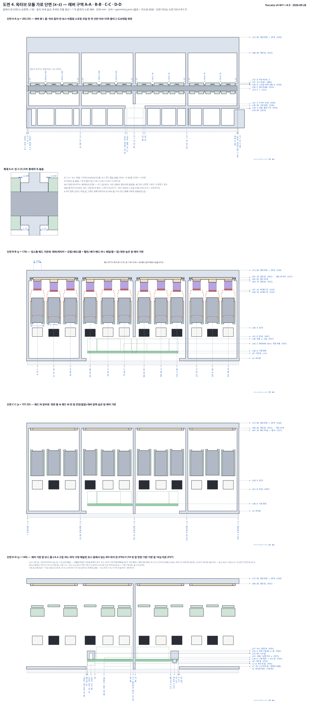</div><figcaption class="small muted">레버 구역 x–z 단면 넷. A-A(y203.25 레버 봉): 허브·허브 칼라(P14)·핀 보스(프레임, 황동 없음)·스프링 주머니와 코일·핀·뒤 선반·리브·USB 플러그·윗판, 확대로 핀 둘레 축 놀음; r4.3 선반 USB 홈 x76.45~91.55, 플러그 z10.7~18.3, F|F# 핀은 그 위에 매달림. B-B(y176 패드 가운데): 레버 캐리어·강철·패드(폼 + 펠트)·쐐기·패드 바·L 레일(웹 + 립)·윗판과 누른 레버(점선), 기판 위 RP2040-Zero·4067(초록 점선, P27). C-C(y157.25): 윗판 앞 홈 속의 패드 바 앞부분, 핀 앞 연장, 기판 홈을 지나 바닥 구멍의 z3까지 내려간 F|F# 핀 발(r4.4 고침 2b: 킬로 밸런스 레일 뒷면에 붙음). r4.4: A-A의 레버 봉·핀 보스 구멍 Ø4.0·끝 마개는 geometry 부품(D18: 봉 x1.5~162.9, 마개 x0.2~1.4, 오른쪽 막힌 구멍 x163.1까지), B-B의 기판 부품은 BRD-01 2.54 격자 자리(P27), D-D(y149, r4.4 고침 2b): 기판 밑 바닥 구멍, 기판 위에 매달린 보스 Ø6 두 곳(밸런스 레일 뒷면 받침; 밑에서 넣는 M3×6·막힌 구멍, 아래로 내려온 위치 핀, P35), 기판 홈 속 F|F# 핀 앞 연장(r4.5: 앞끝 y148.6, 바닥부터 윗판까지; 킬은 단면 앞, P12), 기판 밑 16심 리본 z5~9(P27). r4.5: A-A의 스프링 주머니 Ø6.6와 미스미 C-UA90R5-3-0.5 코일(몸통 3.25권, 길이 2.13).</figcaption></figure><figure class="sheet" id="dwg5"><div class="cap"><span><b>도면 5 · 백건 부품도</b></span><a class="mono" href="dwg/d05_white_key_part.svg" target="_blank" rel="noopener">크게 보기 ↗</a></div><div class="dwimg">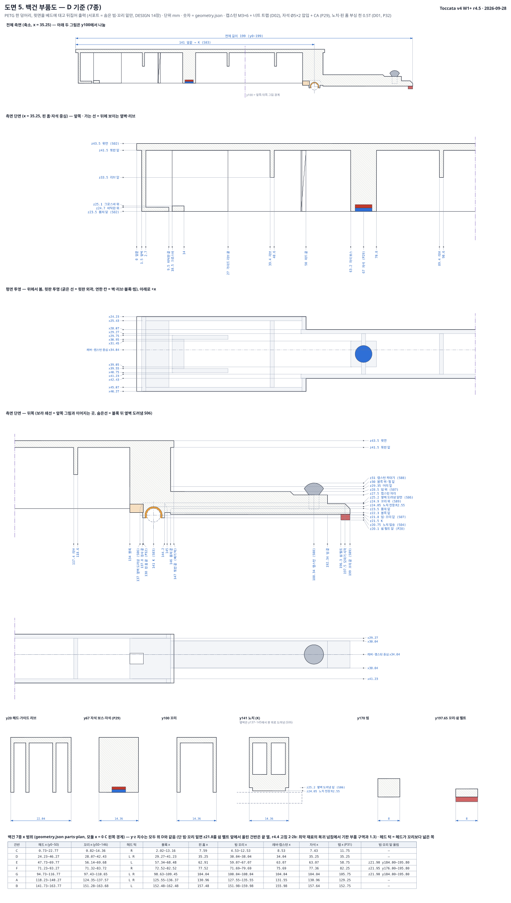</div><figcaption class="small muted">백건 D를 기준으로 한 부품도: 맨 위 전체 측면(축소, 전체 길이 199), 측면 단면(앞·뒤 두 토막, 모든 z·y 좌표; 블록 뒤 옆벽 도려냄 S06은 숨은선), 윗판을 투명하게 본 평면 투영(벽·리브·블록·빔 x), y 위치별 가로 단면 6개, 아래 표에 백건 7종의 x 범위. y·z 치수는 모든 백건에서 같다 (r4.4 고침 2·2b: 빔·얇은 꼬리 밑면을 쉼 펠트 앞에서 올린 건반은 표 끝 열 — E z21.90 y184.00~195.80, F z21.95 y176.00~195.80, G z21.90 y184.00~195.80; 최악 재료 복귀 넘침에서 기판 부품 구역과 1.3).</figcaption></figure><figure class="sheet" id="dwg6"><div class="cap"><span><b>도면 6 · 흑건 부품도</b></span><a class="mono" href="dwg/d06_black_key_part.svg" target="_blank" rel="noopener">크게 보기 ↗</a></div><div class="dwimg"></div><figcaption class="small muted">흑건 C#를 기준으로 한 부품도: 맨 위 전체 측면(축소, 전체 길이 144.8), 측면 단면(앞·뒤 두 토막, 모든 z·y 좌표; 블록 뒤 옆벽 도려냄 S06은 숨은선), 윗판을 투명하게 본 평면 투영(벽·리브·블록·빔 x), y 위치별 가로 단면 6개, 아래 표에 흑건 5종의 x 범위. y·z 치수는 모든 흑건에서 같다 (r4.4 고침 2·2b: 빔·얇은 꼬리 밑면을 쉼 펠트 앞에서 올린 건반은 표 끝 열 — F# z21.90 y184.00~195.80; 최악 재료 복귀 넘침에서 기판 부품 구역과 1.3). r4: 추 칸·납·출력 뚜껑을 없앴다(노치 들림은 패드·펠트로 지킴, DESIGN 2.2), 가이드 탭 폭 6.9 (P31).</figcaption></figure><figure class="sheet" id="dwg7"><div class="cap"><span><b>도면 7 · 레버 캐리어 + 강철 블록 부품도</b></span><a class="mono" href="dwg/d07_lever_carrier_steel.svg" target="_blank" rel="noopener">크게 보기 ↗</a></div><div class="dwimg"></div><figcaption class="small muted">레버(백·흑 공통 1종)를 0°로 놓은 부품도. 위: 캐리어 중심 측면 단면(모든 z·y 좌표; 손톱 턱, 앞 R3 모서리, 드러난 강철 윗면 = 업스톱 접점, 립·펠트·허브 R4.3·구멍 Ø3.9 출력 → Ø4 드릴·스프링 주머니). 가운데: 위·밑에서 본 평면(윗 립 사이 강철 폭, 허브 칼라, 아래 립·펠트 띠)과 강철 블록 부품 9×19×40(모따기 없음). 아래: y 위치별 가로 단면 7개와 확대 E·F(E: 위 립 0.9×1를 앞 립이 있는 y160에서, F: 아래 립 1×1를 y170에서; y170 단면은 아래 립만). 위 립은 y150~163·184~190 두 구간(r4.4: 앞 립을 y163에서 끊어 패드 옆 y163~184는 립 없이 강철 전폭·옆벽 윗단 z49.4(고침 2: 강철 윗면보다 2.6 낮음), 뒤 립은 강철 뒤끝 y190까지); 강철은 두 19×40 옆면에 MS 폴리머를 바르고 밑에서 스냅으로 끼워 접착 (접착층 한쪽 0.10, 접착 면 1411 mm²)(립은 굳는 동안만); 립 ↔ 패드 2.16·레일 1.81, 뒤 립 뿌리 3.83 MPa. r4.4 고침 2b: 옆벽 0.7(주머니 9.2, 접착층 0.1), 위 립 0.9×1, MS 폴리머 접착. r4.5: 허브 스프링 주머니 Ø6.6 — r4.5 고침: 짧은 다리 8를 가두는 가둠 홈 폭 0.7 (136.83° 방향, 축에서 2.51~3.21, 막힌 끝)(닿는 점 다리 끝(바깥 면) + 주머니 모서리(안 면) 두 점, 팔 5.75, 웹 밑면에서 3.79 올라감), 넣는 슬롯 316.83° 면 ±3.25(짧은 다리 끝부터 넣음) + 긴 다리 창 35° 윗면 +2.6 — 주머니 구간은 두 조각 A·B (확대 G, P18), 뒷벽 홈 2.4×3.2·보스 4.4는 레버 x +0.8 가운데(긴 다리 x), 입구 0.5×45° 모따기 (확대 H), 미스미 C-UA90R5-3-0.5 스프링.</figcaption></figure><figure class="sheet" id="dwg8"><div class="cap"><span><b>도면 8 · 프레임 부품도</b></span><a class="mono" href="dwg/d08_frame.svg" target="_blank" rel="noopener">크게 보기 ↗</a></div><div class="dwimg">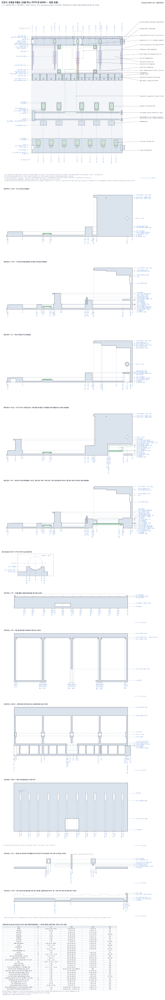</div><figcaption class="small muted">모듈 프레임 한 덩어리(r4: 옛 브리지를 앞으로 늘린 윗판 z72.85과 한 몸). 평면(윗판 밑을 위에서 봄: 앞 레일·탭·키퍼 훅·흑 멈춤 레일·밸런스 레일과 봉 받침·핀·보스·선반·리브·뒷벽 스프링 다리 홈·도브테일, 윗판·패드 바 레일은 가상선; 기판 부품·금지 칸·리본 차선·선반 USB 홈), 측면 단면 다섯(핀 2, C# 중심, 패드 바 레일, F|F# 핀과 기판·USB, x50 기판 보스·바닥 구멍·센서 기판 받침), 봉 받침 확대, 가로 단면 여섯(봉 줄 y141, 패드 줄 y176, 레버 봉 줄 y203.25 — 왼쪽 끝 핀 보스에 출력 마개, 오른쪽 끝 핀은 막힌 구멍 (D18), 스프링 홈 줄 y209.4, 기판 앞 보스 줄 y149, 센서 기판 뒤 리브 줄)과 형상 표. r4.4: v3 센서 기판 받침 기둥·리브 (뒤 리브 틈 = 리본 차선, P36), 밸런스 레일 블록 밑 포켓 (P20), 패드 바 레일 웹 앞 아래 1×45° 모따기 (P13), 레버 봉·핀 보스 구멍·끝 마개를 geometry 부품으로 그림 (D18). r4.4 고침 2b: 기판 밑 바닥 구멍(기판을 밑에서 넣음), 기판 위에 매달린 보스 Ø6 × 4 (앞 2 = 밸런스 레일 뒷면 받침, 뒤 2 = 선반 리브·선반 밑 받침; M3 막힌 구멍 · 아래로 내려온 위치 핀, P35), F|F# 핀 킬 (P12). r4.5: 뒷벽 스프링 홈 2.4×3.2 + 보스 4.4 (P18). r4.5 고침: 스프링 홈·보스를 레버 x +0.8(긴 다리 x) 가운데로 옮기고 홈 + 입구 0.5×45° 모따기를 암 부품으로 그림 (P18); F|F# 핀 킬 y144.5~148.6 z3~19.3, F|F# 핀 앞끝 y148.6 (P12·S29) — 가로 단면 y149은 킬 뒤의 F|F# 핀 앞 연장을 자르고 윗부분은 끊어 그림; 뒷벽 홈 줄 단면은 홈 12개의 두 면 x와 폭 2.4 (r4.5 고침 3). r4.5 회로 2차 (P36): 센서 바 오른쪽 턱 2곳 (v3 P112, y59~63.4·70.6~77.5) — 립 x161.5~163 z13.6~15.1 (밑면 = 바 윗면, 바 끝 x162.9 위를 1.4 덮음) + 기둥 x163~164.3 z5~15.1 (바·기판 끝과 0.1, 이음 면에서 0.2 안)를 평면·센서 기판 뒤 리브 줄 단면(센서 바 가상선)·형상 표에 그림; 바·기판의 왼쪽 끝은 M3×10 2개로 받침 기둥에, 오른쪽 끝은 턱이 잡음 (넣기: 모듈을 빼 놓고 1.5 왼쪽에 놓고 오른쪽으로 밀어 넣은 뒤 왼쪽 나사). 황동 부싱·탭 띠·손나사 구멍은 없다.</figcaption></figure><figure class="sheet" id="dwg9"><div class="cap"><span><b>도면 9 · 패드 바 + 업스톱 패드 + 가림판 띠 + 비틀림 스프링</b></span><a class="mono" href="dwg/d09_pad_bar_curtain_spring.svg" target="_blank" rel="noopener">크게 보기 ↗</a></div><div class="dwimg">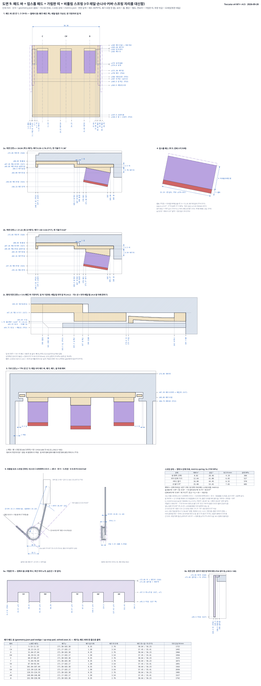</div><figcaption class="small muted">r4에서 새로 생긴 작은 부품: 1 패드 바(핀 칸마다 1개, 계단형 1.5T, 앞 손잡이, 쐐기 3개, 양 가장자리 잎 혀)를 밑에서 본 평면, 2a·2b 백·흑 쐐기 자리의 측면 단면(윗판·패드와 함께), 2c 레일 립 위의 잎 혀 확대, 3 레일 사이 가로 단면, 4 패드(펠트 1T + 폼 6T)와 PET 심 자리, 5a·5b 가림판 띠(흑건 노치, 윗판 앞 턱에 거는 걸이), 6 레버 허브의 비틀림 스프링(r4.5: 미스미 C-UA90R5-3-0.5를 사서 두 다리를 자름 — d0.5 · ID 5 · 3.25권 · k 8.44 N·mm/rad; 짧은 다리 8·긴 다리 22.3, 자유각 -28.45°, r4.5 고침: 허브 가둠 홈 폭 0.7·넣는 슬롯·긴 다리 창, 뒷벽 2.4 홈은 레버 x +0.8 가운데)과 상태 표, 7 쐐기·패드·자리 강성 표. 업스톱 힘은 패드 → 쐐기 → 패드 바 → 윗판으로 누르는 힘으로만 전해진다. r4.2: 패드 바 계단 y165.5/167(윗판 홈 끝 y168보다 앞), 뒤끝 = 윗판 계단 y185, L 레일 립 + 잎 혀(2c). r4.4: 레일 웹 앞 아래 모서리를 1×45° 모따기(P13, 2c에 뒤의 웹으로 보임; 칸 가장자리 캐리어 옆벽이 ff에서 지나감 → 레버 ↔ 레일 1.54).</figcaption></figure><figure class="sheet" id="dwg10"><div class="cap"><span><b>도면 10 · 끝 부속 (왼쪽 A0·A#0·B0, 오른쪽 C8) 평면</b></span><a class="mono" href="dwg/d10_end_parts.svg" target="_blank" rel="noopener">크게 보기 ↗</a></div><div class="dwimg"></div><figcaption class="small muted">끝 부속 두 개의 평면(모듈과 같은 높이에서 잘라 위에서 봄): 건반·레버(모듈과 같은 캐리어+강철+스프링)·핀·보스·밸런스 레일·가림판 띠·볼(x-16~-0.68 / 24.18~39.5), 윗판·패드 바·레일·패드는 가상선. 위는 레버·핀·패드 바·레일 x, 아래는 폭. 이음 쪽에 도브테일(D09: 왼쪽 수, 오른쪽 암 홈)과 이웃 모듈 끝 핀·보스(가상선). 가운데 줄은 패드 줄 가로 단면(볼·윗판·레일·패드 바·패드), 그 아래 끝 패드 바 두 개를 밑에서 본 그림(전체 폭 42.8 / 19.1, 잎 창·잎 혀·쐐기·레일 립), 아래 표는 건반별 레버 x·캡스턴 y·DW/UW·자기 쐐기. r4: 볼 위 손나사·탭 강철 판·레일 없음. r4.2: 건반마다 자기 쐐기 면, 뒷벽 스프링 다리 홈(왼쪽 3·오른쪽 1)·센서 바(숨은선)를 그림. r4.4 (A02·A03): 센서 기판 EL x1~46.5 / ER x1~23과 받침 기둥·리브(뒤 리브 틈 왼쪽 x15~38, 오른쪽 x6~16), 리드 패드·아랫면 선·바닥 리드 길(굵은 회색), 레일 밑 차선 z5~10과 뒷벽 홈 z5~12(숨은선) — 평면 아래 가로 단면(패드 줄)과 리드 가운데 측면 단면에 치수. 레버 봉·구멍·마개는 geometry 부품(D18). r4.4 고침 2b: 캐리어 옆벽 0.7·위 립 0.9·MS 폴리머 접착, 밸런스 레일 블록 밑 포켓 (모듈과 같음). r4.5: 스프링 홈 2.4×3.2·보스 4.4, 긴 다리는 레버 x +0.81에서 곧게 (미스미 C-UA90R5-3-0.5); r4.5 고침: 홈·보스 = 레버 x +0.8 가운데(긴 다리 x), 입구 0.5×45° 모따기, 허브 가둠 홈 (짧은 다리 8). r4.5 회로 2차: 왼쪽 부속 바닥판 한 조각 x0.2~46.8 × y0~212 (모듈 기판 구멍이 새어 생긴 틈 x46.25~46.8 × y144.5~196.5 없앰, A02); 끝 부속 센서 바는 턱 없이 왼쪽 M3×10 2개 + 리브 (P36), 오른쪽 부속 이음 쪽에 이웃 모듈의 센서 바 오른쪽 턱 (가상선, 받침 기둥과 0.7).</figcaption></figure><figure class="sheet" id="dwg12"><div class="cap"><span><b>도면 12 · 건반 하나 빼기 순서</b></span><a class="mono" href="dwg/d12_key_removal.svg" target="_blank" rel="noopener">크게 보기 ↗</a></div><div class="dwimg"></div><figcaption class="small muted">백건 D 하나를 도구 없이 빼는 다섯 단계: ⓪ 가림판 띠를 들어내고 그 칸 패드 바를 앞으로 뽑은 뒤 손톱 턱으로 레버를 15°로 듦, ① 건반 뒤 윗판 턱을 손톱으로 당겨 노치를 봉 위로, ② 앞으로 3 밀어 크로스바·노치를 뺌, ③ 건반 앞을 2° 들어 탭에서 뺌, ④ 52.8 뽑고 레버를 내려놓음(바닥판 위 0.4 N, L 서비스 블록 없음). ⑤ 기판 위 레버 D#, E, F, F#, G, G#는 건반이 빠지면 내려가 얹힘 — D#·G# → 기판 위에 매달린 보스 16.75°, E·F → 4067 모듈 13.25°, F#·G → 기판 윗면 24 / 23.5° (쉼에서 내려간 각, 각 레버 중심 단면, circuit_r45.drop; r4.5 회로 2차 10번: D#·G#는 기판 윗면이 아니라 매달린 보스). 각 단계의 최소 틈과 흑건·넣기 순서는 아래 글.</figcaption></figure><figure class="sheet" id="dwg13"><div class="cap"><span><b>도면 13 · 레버 봉 끝 마개 (출력 공구는 도면 14)</b></span><a class="mono" href="dwg/d13_rod_plug_tools.svg" target="_blank" rel="noopener">크게 보기 ↗</a></div><div class="dwimg"></div><figcaption class="small muted">레버 봉 Ø4 x1.5~162.9(길이 161.4 ± 0.2)가 핀 5장의 보스 구멍 Ø4을 지나는 전체 단면과 두 끝 확대: 왼쪽 끝 핀은 출력 마개 x0.2~1.4(길이 1.2, 끝 핀 면과 같게 눌러 끼움, 봉과 0.1), 오른쪽 끝 핀은 x163.1까지 막힌 구멍(벽 1.2, 봉과 0.2) — 모두 geometry의 D18 부품. 마개 부품 9개. r4.4: 개략이던 출력 공구 그림을 지우고 도면 14(실제 치수)를 가리키는 표만 남김 — 공구마다 기준 면과 맞추는 높이(K z21.5·쉼 선반 z20.054, 캡스턴 z30.9, 핀 꼭대기 z23.3).</figcaption></figure><figure class="sheet" id="dwg14"><div class="cap"><span><b>도면 14 · 출력 공구 (벤치 지그 · 높이 블록 · 캡스턴 게이지 · 핀 높이 게이지)</b></span><a class="mono" href="dwg/d14_printed_tools.svg" target="_blank" rel="noopener">크게 보기 ↗</a></div><div class="dwimg"></div><figcaption class="small muted">출력 공구 4개(T1 벤치 지그 + 높이 블록, T2 캡스턴 벤치 게이지 = 가짜 레버, T3 밸런스 핀 높이 게이지)의 실제 모양과 치수. 지그는 옆·위·단면 넷(A-A K 봉, B-B 영점 받침·교정봉, C-C L 봉, D-D 읽기 턱 기둥 = 사다리꼴, r4.5 고침): 밑면 z3 = 프레임 밑면이 기준이고, K 봉 중심 (141, 21.5), 쉼 선반 z20.054, L 봉 (203.25, 33.5), 읽기 턱 z65.5을 세운다. 높이 블록 땅 W 43.35~43.65 · B 55.35~55.65. 가짜 레버는 밑면 z30.9으로 캡스턴을 실제 레버 모멘트로 누르고 바늘로 5.52배 확대해 읽는다 (r4.4 고침 2b: 밑면·교정봉 윗면 = 정착 쉼 캡스턴 꼭대기 백 z30.892 · 흑 z30.912의 가운데, 건반 좌표 z31가 아님). 핀 게이지는 레일 윗면 z19에 서서 핀 꼭대기를 z23.3(GO 23.4 / NO-GO 23.2)로 맞춘다. 합계 68.2 g · 483분. 숫자는 모두 tools_geometry.json(T01~T29).</figcaption></figure><figure class="sheet" id="dwg15"><div class="cap"><span><b>도면 15 · 단계 0 시편·지그</b></span><a class="mono" href="dwg/d15_stage0_coupons.svg" target="_blank" rel="noopener">크게 보기 ↗</a></div><div class="dwimg"></div><figcaption class="small muted">단계 0 시험 키트의 출력 부품 34개(시험 18가지)를 무엇을 시험하는지에 따라 다섯 묶음(업스톱 경로 · 건반 · 레버·스프링·강철 접착 · 회로 맞춤 · 첫 모듈 정하중)으로 나눠 그린 부품도 (r4.5 고침: C06a 뒷벽 홈 2.4·보스 4.4를 긴 다리 x(코일 가운데 +0.8)에, C06b = 모델 주머니 단면(가둠 홈 폭 0.7·넣는 슬롯 6.5·긴 다리 창) + 허브 받침 2.0, 봉 18, 시험 13 = 가둠 홈에 스프링 넣기; 다 묶음 아래에 C06b 주머니 단면(위에서)과 C06a 홈 입구(앞에서)를 크게 그려 치수. r4.5 고침 3: 마 묶음 = 시험 21 받침 빗 C17a — 3각법 칸 옆에 평면을 크게 그려 이 4개(폭 3 × 길이 209)의 x 가장자리·핀 선 x1 / 41.66 / 123.93 / 163.5, 뒤 막대 y209~212(뒷벽 밑), 레일 밑 빔 x43.16~122.43의 폭을 치수하고, 모듈 발자국(밸런스 레일, 기판 구멍, F|F# 핀 앞끝 y148.6·킬 — geometry.json plan)을 보라 1점 쇄선으로 겹쳐 레일·기판 구멍 밑을 왜 비우는지(위에서 누른 정하중 = 쓰임과 같은 레일 휨) 적음). 부품마다 출력 자세(z0 = 베드)의 앞·위·오른쪽 3각법 투영(STL에서 보이는 모서리는 실선, 숨은 모서리는 점선)과 외곽 치수 x × y × z, 그 아래 key_dims(구멍·날·간격 등 부품 치수)와 출력 방향 글, 오른쪽 위에 시험 번호·수량·질량·설정 기호. 맨 아래는 시험별 합격 기준과 출력 설정 7종. 숫자는 모두 stage0_geometry.json (C17a 평면에 겹친 모듈 발자국만 geometry.json plan).</figcaption></figure></section><section class="page" id="p-check" hidden>
<h2>검증 결과와 남은 위험</h2><p class="lede">최종 설계(W1+ r4.5)는 검증 45개를 모두 통과했습니다. 아래는 아직 남은 문제와, 그것을 확인할 단계 0 시험, 남은 위험입니다.</p><h3>남은 문제</h3><div class="tbl"><table><thead><tr><th>분야</th><th>문제</th><th>처리 계획</th></tr></thead><tbody><tr><td>시험</td><td>강철 블록 접착(MS 폴리머, 세메다인 슈퍼X)의 PETG 강도는 가정값이다. 데이터시트에는 PET 2.8 MPa만 있다. 공기 중 습기로 굳는 접착제라, 0.1 mm로 닫힌 틈의 가운데(가장자리에서 약 9.5 mm)는 굳는 데 며칠이 걸릴 수 있다. 블록을 밀어 넣을 때 접착제가 긁혀 나갈 수도 있다.</td><td>단계 0 시험 20에서 같은 닫힌 틈으로 시편을 만들고, 5 ↔ 45 °C를 3번 거친 뒤 뽑힘 힘을 잰다. 굳는 시간과 바르는 방법(양면에 바르고 곧게 넣기)도 이때 정한다.</td></tr><tr><td>시험</td><td>6건반 화음 자리 강성은 491.6 N/mm다(합격선 460, 여유 6.9 %). 레일을 이웃 핀 선 사이 단순 지지로만 보면 337.6으로 불합격이다. 레일이 실제로 어떻게 받쳐지는지는 계산으로 정할 수 없다.</td><td>첫 모듈 정하중 시험 21로 확인한다(E·F 자리 처짐 ≤ 0.13 mm). 시험은 실제 하중 방향으로 한다.</td></tr><tr><td>시험</td><td>손으로 레버를 25° 들 때 스프링 토크가 카탈로그 55° 토크의 104 %다. 가둠 홈이 짧은 다리를 잡으려면 두 접점 마찰이 μ 0.10 이상이어야 한다. 홈이 출력 공차로 0.3 넓게 나오면 쉼 토크가 3.75 N·mm로 줄어든다.</td><td>단계 0 시험 8(쉼 4.19 / 바닥 6.03 N·mm ±15 %)과 시험 13(가둠 홈 넣기)으로 확인한다.</td></tr><tr><td>여유</td><td>백건 앞끝(y0)에서 누르는 힘이 47.1 g이다. 목표 47 g과 0.1 g 차이다.</td><td>단계 0에서 실제 무게를 잰다. 모자라면 강철 앞 윗면 퍼티로 더한다(1 g → +1.22 g).</td></tr><tr><td>구매</td><td>강철 블록 두께는 8.9~9.1 mm여야 한다(주머니 9.2). 열간 압연 9T 평강은 공차가 더 클 수 있다. 업스톱 패드는 설계가 6T인데, 구매 목록의 PORON은 5T다.</td><td>강철은 캘리퍼로 골라 쓰거나 냉간 인발재를 산다. 패드 두께는 주문 전에 맞춘다.</td></tr><tr><td>형상</td><td>끝 부속 패드 바 쐐기의 얇은 끝이 A0 0.29 / C8 0.26 mm로, 출력 최소 0.3보다 얇다.</td><td>출력 시험에서 확인하고, 안 되면 그 쐐기만 0.3으로 두고 펠트 쪽에서 맞춘다.</td></tr><tr><td>형상</td><td>센서 바 오른쪽 턱(r4.5 회로 2차에서 되살림)의 립 밑면이 z13.6으로, 바 윗면과 틈이 0이다. 1.5 mm 떠 있는 립이라 출력하면 밑면이 처질 수 있다. 바를 1.5 mm 왼쪽에 놓고 밀어 넣는 순서가 빡빡할 수 있다.</td><td>첫 모듈을 출력해 바를 밀어 넣어 보고, 걸리면 립 밑면을 사포로 0.1~0.2 다듬는다. 다음 판에서는 립 밑면을 0.1~0.2 띄우는 안을 검토한다.</td></tr></tbody></table></div>
<h3>단계 0 시험 계획 (합격 / 불합격 숫자)</h3><p>시편: 프레임 조각 S1(모듈 x0~85, 건반 C~F, 핀 3개, 윗판·패드 바 포함) + 봉 2 + 레버(강철·스프링) + 패드. r4.3 글의 ‘D·D#·E 3건반 조각’은 C# 자리가 없고 패드 바 두 칸에 걸쳐 S1으로 바꿨다(FE로 S1의 C# 자리 강성은 모듈과 0.7 % 차이, 17.1장). 출력 시편·지그는 17.1장의 단계 0 키트다.</p>
<div class="tbl"><table><thead><tr><th>#</th><th>시험</th><th>방법</th><th>합격</th><th>불합격이면</th></tr></thead><tbody><tr><td>1</td><td>패드 반발 (가장 먼저)</td><td>레버(강철 + 캐리어)를 패드 바에 붙인 패드로 PLAY 속도에 휘둘러 되튐 각속도를 240 fps로 잼(계 전체 e). 후보: ① 미세셀 우레탄(PORON 계열) 6T + 펠트 1T, ② Sorbothane 계열 점탄성 PU 시트(카탈로그 Lupke 반발 10~15 %, 곧 판 하나의 자유 낙하 e ≈ 0.32~0.39), ③ ① 위에 부틸 고무 1T</td><td>실효 e ≤ 0.07 (설계 0.06)</td><td>① e 0.10~0.15: 쐐기를 다시 뽑아 틈 −0.60 / −0.65 + 폼 E 1.4 (계산: e 0.15에서 백 들림 0.116, 흑 ABUSE 0.197, 연타 17.6 / 20.8 Hz, 0.45 N 유령 99 % / 77 %는 모두 거름). ② e &gt; 0.15: 다른 후보로(e 0.25면 백 들림 0.208, 흑 ABUSE 0.400로 한계 끝, 백 ABUSE 키퍼 -0.16)</td></tr><tr><td>2</td><td>패드 강성</td><td>패드를 강철 조각으로 눌러 힘-눌림</td><td>25 % 압축 0.36 MPa ± 30 % (E 0.7~1.4 MPa)</td><td>두께·등급 교체. E 0.7이면 흑 ABUSE 들림 0.310</td></tr><tr><td>3</td><td>패드 자리 처짐</td><td>윗판 C# 자리에 100 N, 그리고 C~F 6자리에 60 N씩, 다이얼 게이지</td><td>한 자리 ≤ 0.12 mm (830 N/mm, 설계 1490), 6자리 각 ≤ 0.13 mm (460 N/mm, 설계 492)</td><td>띠 E가 낮으면 윗판 채움 100 % 다시, 그래도면 <code>plate_t</code> +0.6~1.2(17.1장 시험 3 표); 킬·레일 이음은 시험 21로 본다(F\</td><td>F# 핀은 바닥에 서지 않고 킬로 레일에 붙음 — r4.4 고침 2b부터 기판 밑 바닥은 구멍)</td></tr><tr><td>4</td><td>앞 펠트</td><td>강철 공 낙하 + 누름</td><td>실효 e ≤ 0.22</td><td>PU를 두껍게</td></tr><tr><td>5</td><td>스냅 노치 반지름 쿠폰</td><td>R2.50 / 2.525 / 2.55 / 2.575 / 2.60에 천 0.5T, 빠짐 힘(용수철 저울)과 끼운 채 DW 변화</td><td>빠짐 1~2 N, DW 변화 ≤ 0.5 g</td><td>다음 반지름</td></tr><tr><td>6</td><td>탭 천 쿠폰</td><td>흑 탭 6.9 + 천 0.4 / 0.5 / 0.6T를 벽 사이 8.0에</td><td>걸림 없이 옆 놀음 ≤ 0.1</td><td>천 두께 바꿈</td></tr><tr><td>7</td><td>DW/UW</td><td>y13(흑 앞 + 10)에 저울·추</td><td>DW 47~55 g(립 y0 ≥ 47), UW ≥ 20 g</td><td>퍼티; 스프링 다리 홈 위치</td></tr><tr><td>8</td><td>비틀림 스프링 (r4.5 미스미, r4.5 고침 가둠 홈)</td><td>C06 시험대로(C06b = 모델 주머니 단면, 진짜 Ø4 봉 — 코일 뜸도 잼) 쉼·바닥 토크, k_t, 자유각; 손 들기 25°로 1시간 둔 뒤 자유각 다시; 가둠 홈 폭(0.5 날)</td><td>쉼 4.19, 바닥 6.03 N·mm ± 15 %, 자유각 -28.4 ± 5°, 1시간 뒤 자유각 변화 ≤ 2°</td><td>덜 감김: 뒷벽 홈 바닥 깊게 ≤ 0.6 mm(+1.6°), 더 모자라면 <code>spring_notch_rot</code>(가둠 홈을 돌려 캐리어 다시 출력); 더 감김: 홈 바닥 얕게; 1시간 뒤 자유각이 줄면 손 들기를 카탈로그 토크 한계 각 아래로(18장)</td></tr><tr><td>9</td><td>복귀 시간</td><td>240 fps, 1 N 1 s 누른 뒤 뗌; 건반 뺀 레버를 다시 들어 스프링 다리가 홈에 다시 걸리는지</td><td>t50 ≤ 37.6 ms, 끝까지 ≤ 60 ms; 다리 10번 모두 다시 걸림</td><td>스프링 감는 각 +10°; 홈 입구 경사 키움</td></tr><tr><td>10</td><td>노치 들림 + 입술 천 마모</td><td>노치 옆 흰 점 240 fps, 1.5 / 2.5 m/s급 뗌·누름 10회, 6건반 화음 1.0~1.5 m/s; 흑건 하나를 PLAY 1.5 m/s로 10^5회(흑은 들림 0.06에서도 입술 모서리가 2.5 N 안팎으로 닿음)</td><td>PLAY ≤ 0.20, ABUSE ≤ 0.40, 빠지지 않음; 입술 천 닳아 뚫림 없음, 빠짐 힘 변화 ≤ 30 %</td><td>패드·앞 펠트를 합격선 쪽으로; 천을 두꺼운 것으로</td></tr><tr><td>11</td><td>유령</td><td>1.5 / 1.0 / 0.8 m/s 뒤 0.45·0.6·1 N 누름, 6건반 화음 0.8~1.5 m/s, 거름 켜고 끔; 펌웨어가 의심 상태의 다시 눌림 시각(note-on부터)을 기록</td><td>거름(문턱 0.3 m/s, 재무장 250 ms, 다시 눌림 500 ms)을 켜면 재타건 없음; 기록된 유령 다시 눌림 ≤ 500 ms</td><td>거름 비율 25 → 30 %; 유령 다시 눌림이 500 ms를 넘으면 창 = 가장 늦은 것 + 100 ms</td></tr><tr><td>12</td><td>패드 바 놀음·빼기</td><td>패드 바를 뒤 멈춤까지 넣고 위아래로 흔듦 — 넣은 직후와 40 °C 1주 뒤(잎 상시 굽힘 8.2 MPa의 크리프); 빼기를 흑 칸에서 10번(21.5 mm부터 밀어 올림)</td><td>상하 놀음 없음(잎이 바를 자리에 밀어 올림), 패드 펠트가 흑건에 닿은 자국 없음</td><td>잎 눌림 0.3 → 0.5 또는 잎 두께 0.8; 그래도 늘어지면 바 윗면을 사포로 맞춰 레일에 빡빡하게(손 맞춤)</td></tr><tr><td>13</td><td>스프링 넣기 (r4.5 고침 가둠 홈)</td><td>C16a 캐리어 3개에 짧은 다리 끝부터 가둠 홈을 따라 스프링을 밀어 넣음(긴 다리 +x 끝), 봉을 꿰고 긴 다리를 뒷벽 홈에 밑에서 넣음; 레버를 −31°~+18°로 돌림</td><td>짧은 다리 끝부터 가둠 홈(폭 0.70)을 따라 밀어 넣으면 코일이 주머니에 앉고 짧은 다리가 홈 끝까지 들어감 (3/3); 긴 다리가 코일 +x 끝; 레버 −31°~+18°에서 긴 다리가 창 면에 끌리지 않음</td><td>짧은 다리가 홈에 안 들어감 (홈이 좁게 나옴) → 0.5 날로 홈을 다듬음; 3개 다 그러면 <code>spring_notch</code> 놀음 +0.1 후 run_all; 짧은 다리가 홈에 맞지 않음(각이 틀림) → 스프링을 뒤집어 넣음 — 긴 다리가 +x 끝이어야 함; 긴 다리가 창 면에 끌림 → spring_window 면 +2.6 → +2.8</td></tr><tr><td>14</td><td>종이 띠 시점</td><td>12장 기준(0.05 띠)</td><td>백·흑 모두 합격 띠 안</td><td>PET 심</td></tr><tr><td>15</td><td>피로</td><td>Z 방향 핀-윗판 이음 시편 반복 인장</td><td>PLAY 한 건반 1.3 MPa 10^6회, 화음 4.2 MPa 10^4회 균열 없음</td><td>이음 모서리 살 3 mm</td></tr><tr><td>16</td><td>윗판 출력</td><td>모듈 프레임 조각을 서포트 없이 브리지</td><td>핀 사이 39 mm 브리지가 처짐 ≤ 0.3</td><td>트리 서포트 (88 g)</td></tr><tr><td>17</td><td>느낌</td><td>직접 쳐 봄: y90 131 g, 1 N에서 흑 바닥 0.27 mm 부드러움</td><td>받아들일 만함</td><td>흑 틈 −0.45 → −0.3</td></tr><tr><td>18</td><td>90° 세움</td><td>모듈 조각을 뒤로 세웠다 눕힘</td><td>모든 건반 제자리(앞 높이 ±0.2)</td><td>쿠폰 반지름을 한 단계 작게</td></tr><tr><td>19</td><td>USB 케이블 맞춤 (r4.3)</td><td>뒤 선반 홈·뒷벽 개구가 있는 프레임 뒤 조각 + 핀 헤더에 세운 RP2040-Zero에 실제 USB-C 케이블을 10번 꽂고 뺌</td><td>몰드 ≤ 12.5 × 7.6(z10.7~18.3), 홈 가장자리·리브·핀과 1 mm 이상 떨어짐, 케이블이 뒤 통로로 꺾여도 리셉터클을 비틀지 않음</td><td>1d-3장의 확인된 선(CVILUX DH-20M50052, 11.97 × 6.42 × 20.93)으로 바꿈</td></tr><tr><td>20</td><td>강철 유지 (r4.4 고침 2·2b: 탄성 접착)</td><td>C16a(생산 캐리어 C, 3개) + C16b 받침: 스냅만(1개) 강철을 누름 코로 눌러 빠지는 힘을 잼(모델 30 ~ 47 N); MS 폴리머로 접착한 2개를 24 h 굳히고 5 ↔ 45 °C 3번 뒤 117 N(ABUSE의 1.5배)으로 10 s × 3, 1 m 낙하 3번; 10^5회(매 음 52 N)는 캠 장치 또는 완성 모듈 1주 연주 뒤 다시</td><td>접착: 온도 순환 뒤에도 강철이 캐리어에 대해 0.05 mm 넘게 움직이지 않음, 흰 줄·균열·들뜸 없음, 낙하 뒤 그대로</td><td>접착면 사포질·탈지 다시, PETG 프라이머 + 같은 MS 폴리머 또는 다른 MS 폴리머 제품(단단한 에폭시는 안 됨 — 열팽창); 그래도 안 되면 옆벽 0.7 → 1.0(레버 폭 11.2, 배치 다시)</td></tr><tr><td>21</td><td>첫 모듈 정하중 (r4.5 고침; 하중 방향은 r4.5 고침 3)</td><td>조립한 첫 모듈을 C17a 받침 빗에 얹음: 핀 선 x1.0 / 41.7 / 123.9 / 163.5 밑과 뒷벽 밑만 받침, 레일 밑 x43.2~122.4와 기판 구멍 밑은 빔, 모듈 밑 EVA는 뗌. D-D#-E-F-F#-G 여섯 패드 자리 위 윗판에 6 × 60 N(36.7 kg) 판재·물통, 다이얼로 E·F 자리 처짐. 쓰임에서는 패드가 윗판을 밑에서 밀어 킬이 레일을 들어 올린다. 모델이 선형이라 이 받침에서 위로부터 누르면 같은 레일 휨이다</td><td>E·F ≤ 0.13 mm (모델 0.121; 레일 받침의 두 끝: 단단 0.094, 이웃 핀 선 사이 단순 지지 0.159 — 불합격)</td><td>run_all의 화음 자리 강성 <code>k_ch</code>를 잰 값(60 N ÷ 처짐)으로 바꿔 화음 자리 동역학(들림 0.20, 키퍼, 유령)을 다시 봄; 그래도 불합격이면 회로 세션과 리본 차선 위 레일 높이를 다시 정함(킬 z19.3과 핀 앞끝 y148.6은 이미 건반 F와 1.3 한계)</td></tr></tbody></table></div>
<h4 class="sub4">17.1 단계 0 시험 키트 (r4.4, 남은 문제 7)</h4>
<p>여기서는 아무도 물리 시험을 할 수 없다. 그래서 집에 있는 도구로 위 시험을 할 수 있게 출력 시편, 재는 법, 합격 숫자, 결과마다 바꿀 모델 값을 모았다. <code>stage0/make_stage0.py</code>가 지금 모델(<code>final</code>, r4.5, metrics.json)에서 만들었고, 모델에 없는 값은 ‘제안’이라고 적었다. 위 21개 시험에 모델 밖 시험 3개를 더했다: P 밸런스 핀 압입, C 캡스턴 너트 트랩, T 펠트·천 두께. 출력 시편은 34종 36개다(C01a~C17a; C16a는 3개). 모두 PETG, 서포트 없음, 닫힌 몸 STL이다. 256 × 256 베드에 들어가고, 가장 큰 것(C17a)이 212 × 164.5라 220 베드에도 들어간다. 속을 꽉 채우면 PETG 665 g(532 cm³)다. 채움 40 % 부품을 공구와 같은 계수 0.62로 줄이면 약 430 g, 15 g/h로 약 29시간이다(추정). 시험 20(강철 유지, r4.4 고침 2)은 C16a(생산 캐리어를 모델에서 그대로)·C16b로 한다.</p>
<ul class="flow"><li>절차: <code>stage0/stage0_procedure.md</code> (준비물, 출력 설정, 시험마다 재는 법·계산·합격·결과 표). 결과 기록표: <code>stage0/stage0_results_template.csv</code>(판정 O/X). 시편 치수·합격선·결과 대응: <code>stage0/stage0_geometry.json</code>. 시편 파일: <code>stage0/stl/&lt;ID&gt;.stl</code>, 두 방향 그림 <code>stage0/png/</code>, OpenSCAD 원본 <code>stage0/scad/</code>.</li><li>결과를 모델에 넣는 법: 기록표를 채우고, 바뀐 값만 <code>model_v4.py</code>의 <code>P</code>에 넣고, <code>run_all.py</code>를 다시 돌려 0.2장의 목표가 모두 통과인지 본다. 통과하지 않으면 아래 표의 다음 대안으로 간다. 모델에 아직 없는 값(시험 P의 핀 구멍 Ø, 시험 C의 너트 홈 폭·잠김 구멍 Ø)은 새 매개변수로 넣고 geometry에 내보낸다.</li></ul>
<p><b>키트를 만들며 찾은 것.</b> (1) 6건반 화음 자리의 여유가 6.4 %뿐이다(설계 492, 합격선 460 N/mm). 출력한 윗판의 실효 E가 1825 MPa(모델 1950의 93.6 %)보다 낮으면 불합격이다. 그래서 굽힘 띠 C03a를 시험 3의 핵심으로 넣었다. (2) 시험 3 시편은 S1(C~F)이다(위). (3) 패드 반발을 재는 방법이 D11(60 g 추를 2.5 m/s로 떨어뜨림)과 17장(레버를 휘두름)에서 다르다. 모델 정의(<code>PadTable.calibrate</code>: 레버 혼자, 단단한 자리, PLAY 각속도)에 맞춰 C01 진자대를 기준으로 삼았다. θ0 150°에서 PLAY 각속도의 96 %가 나오고, 마찰 보정 식에서 레버 질량과 무게중심이 지워진다. (4) 노치 R2.525 이하는 입술이 닿는 들림(0.095)이 PLAY 최대 들림(0.161)보다 작아, 그 R을 고르면 들림 판정을 다시 세워야 한다. R2.55 흑 추정 빠짐 힘은 1.33 N이다.</p>
<div class="tbl"><table><thead><tr><th>시험</th><th>시편 (<code>stage0/stl/</code>)</th><th>합격</th><th>결과 → 모델에서 바꿀 값</th></tr></thead><tbody><tr><td>1 패드 반발 (계 실효 e)</td><td>C01a 패드 반발 진자대 · C01b 시험 레버 · C01c 패드 받침판 · C01d 봉 끝 칼라</td><td>e ≤ 0.07 (설계 0.06)</td><td>e ≤ 0.07 → pad_e = 측정값; 0.07 &lt; e ≤ 0.10 → pad_e = 측정값, 다른 합격선(E·앞 펠트)은 공칭이어야; 0.10 &lt; e ≤ 0.15 → 대안 ①: gap_us_w −0.40 → −0.60, gap_us_b −0.45 → −0.65 (PET 심 2장 더), pad_E 1.4; e &gt; 0.15 → 다른 패드 후보 (② 점탄성 PU, ③ 부틸 1T 덧댐)</td></tr><tr><td>2 패드 강성</td><td>C02a 패드 압축 지그 · C02b 패드 압축 누름 막대</td><td>25 % 압축(1.75 mm)에서 18.3~36.7 N (E 0.7~1.4 MPa, 설계 26.2 N)</td><td>E &lt; 0.7 → 두꺼운/단단한 등급; 0.7 ≤ E ≤ 1.4 → pad_E = 측정값; E &gt; 1.4 → pad_E = 측정값, 윗판 하중 다시</td></tr><tr><td>3 윗판 패드 자리 처짐 (굽힘 띠 E + 프레임 조각)</td><td>C03a 윗판 굽힘 띠 · C03b 3점 굽힘 받침 · C03c 누름 코 · C03d 다이얼 게이지 스탠드, 낮은 · C03e 다이얼 게이지 스탠드, 높은</td><td>띠 E_eff ≥ 1825 MPa (화음 자리 460 N/mm), 프레임 C# 자리 다이얼 점 처짐 ≤ 0.103 mm @ 98 N</td><td>r = E_eff/1950 ≥ 0.936 → (선택) E_PETG = 1950 r; 0.862 ≤ r &lt; 0.936 → 윗판 채움 100 % 다시; 그래도면 plate_t +0.6 (z_top 73.45); 0.810 ≤ r &lt; 0.862 → plate_t +1.2 (z_top 74.05 — 높이 목표 z74를 0.05 넘음, +1.15까지); r &lt; 0.810 → 재료·설정 바꿈 (다른 PETG, 온도)</td></tr><tr><td>4 앞 펠트 반발</td><td>C15a 앞 펠트 반발 낙하관</td><td>e ≤ 0.22 (1.5 m/s 낙하 114.7 mm에서 되튐 ≤ 5.55 mm)</td><td>e ≤ 0.22 → front_e = 측정값; 0.22 &lt; e ≤ 0.28 → front_e = 측정값 후 run_all; e &gt; 0.28 → 펠트 밑 PU 1T → 2T (앞 레일을 1.0 낮게: w_felt_line)</td></tr><tr><td>5 스냅 노치 반지름</td><td>C04a 스냅 노치 반지름 쿠폰 · C04b 스냅 노치 반지름 쿠폰 · C04c 봉 받침</td><td>빠짐 힘 1~2 N (백·흑 모두), 끼운 채 DW 변화 ≤ 0.5 g</td><td>R2.5 → notch_R = 2.5; lift_play = 0.000, lift_popout = 0.750, lift_abuse = 0.375; R2.525 → notch_R = 2.525; lift_play = 0.095, lift_popout = 0.775, lift_abuse = 0.387; R2.55 → notch_R = 2.55; lift_play = 0.200, lift_popout = 0.800, lift_abuse = 0.400; R2.575 → notch_R = 2.575; lift_play = 0.318, lift_popout = 0.825, lift_abuse = 0.413; R2.6 → notch_R = 2.6; lift_play = 0.459, lift_popout = 0.850, lift_abuse = 0.425</td></tr><tr><td>6 가이드 탭 천</td><td>C05a 가이드 탭 날 · C05b 건반 홈 쿠폰</td><td>10원 동전 올린 홈 쿠폰이 저절로 내려감(끌림 ≤ 0.02 N), 옆 놀음 &lt; 0.1 (PET 심 0.1이 안 들어감)</td><td>헐거움 (심 들어감) → 천 한 단계 두껍게 또는 날 +0.1 (tab_w_b / tab_w); 걸림 → 천 한 단계 얇게 또는 날 −0.1; 둘 다 통과 → tab_w_b·tab_w·tab_cloth = 고른 값</td></tr><tr><td>7 DW / UW (조립 건반)</td><td>C14a 추 컵</td><td>DW 47~55 g (y13 / 흑 앞+10), 립 y0 ≥ 47 g, UW ≥ 20 g</td><td>DW 높음/낮음 → 퍼티 강철 앞 1 g = +1.23 / +1.14 g, 캡스턴 1/8회전 = +0.20 / +0.11 g</td></tr><tr><td>8 비틀림 보조 스프링</td><td>C06a 비틀림 스프링 시험대 · C06b 스프링 북 · C14a 추 컵</td><td>k_t 8.4 ± 15 %, 자유각 -28 ± 5°, 쉼 4.19 / 바닥 6.03 N·mm ± 15 %</td><td>자유각 벗어남 Δ° → spring_free_deg = 측정값; 덜 감김(자유각이 +쪽으로) &gt; 5° → 뒷벽 홈 바닥을 더 깊게는 0.6 mm까지만(뒷벽 살 0.4 남김) = +1.6°; 더 모자라면 <code>spring_notch_rot</code>(가둠 홈을 CW로 Δ° 돌림, 캐리어 다시 출력) 또는 스프링 다시 주문; 더 감김(자유각이 −쪽으로) &gt; 5° → 뒷벽 홈 바닥을 얕게(앞으로) 0.367 mm/° 옮김 (보스 3.2 안에서 자유); 쉼 토크가 모델보다 10 % 넘게 낮고 짧은 다리가 홈 바깥 면에서 떨어져 보임 → 가둠 홈 폭 재기(0.5 날·틈새 게이지): 넓으면 <code>spring_notch</code> 놀음 = 잰 폭 − 0.5 후 run_all; k_t 벗어남 → spring_kt = 측정값 후 run_all (연타·복귀)</td></tr><tr><td>9 복귀 시간 (조립 건반)</td><td>조립 모듈</td><td>t50 ≤ 37.6 ms, 끝까지 ≤ 60 ms, 스프링 다리 10/10 다시 걸림</td><td>느림 → spring_free_deg −10° (감는 각 +10°)</td></tr><tr><td>10 노치 들림·입술 천 마모 (조립)</td><td>조립 모듈</td><td>PLAY ≤ 0.20, ABUSE ≤ 0.40, 빠지지 않음</td><td>17장 표의 ‘불합격이면’</td></tr><tr><td>11 유령 (조립, 펌웨어 거름)</td><td>조립 모듈</td><td>거름(0.3 m/s, 25 %, 재무장 250 ms · 다시 눌림 500 ms, 모두 note-on부터) 켜면 재타건 없음; 기록된 유령 다시 눌림 ≤ 500 ms</td><td>유령 다시 눌림 &gt; 500 ms → ghost_rep_max = 가장 늦은 것 + 100 ms (펌웨어 상수, SCH-03 주 9)</td></tr><tr><td>12 패드 바 놀음·잎 크리프</td><td>C10a 패드 바 잎 혀 쿠폰 · C10b 잎 크리프 받침 · C10c 잎 힘 측정 받침</td><td>40 °C 1주 뒤 잎 힘 ≥ 처음의 50 % (0.3 눌림), 바 상하 놀음 없음</td><td>남은 힘 ≥ 50 % → 그대로; 17~50 % → bar_leaf 두께 0.6 → 0.8 권장; &lt; 17 % → bar_leaf (0.8, 1.6, 8, 0.5) 또는 손 맞춤</td></tr><tr><td>13 스프링 넣기 (조립, r4.5 고침 2 가둠 홈)</td><td>C16a 레버 캐리어 · C06b 스프링 북</td><td>짧은 다리 끝부터 가둠 홈(폭 0.70)을 따라 밀어 넣으면 코일이 주머니에 앉고 짧은 다리가 홈 끝까지 들어감 (3/3); 긴 다리가 코일 +x 끝; 레버 −31°~+18°에서 긴 다리가 창 면에 끌리지 않음</td><td>짧은 다리가 홈에 안 들어감 (홈이 좁게 나옴) → 0.5 날로 홈을 다듬음; 3개 다 그러면 <code>spring_notch</code> 놀음 +0.1 후 run_all; 짧은 다리가 홈에 맞지 않음(각이 틀림) → 스프링을 뒤집어 넣음 — 긴 다리가 +x 끝이어야 함; 긴 다리가 창 면에 끌림 → spring_window 면 +2.6 → +2.8</td></tr><tr><td>14 종이 띠 시점 (조립)</td><td>조립 모듈</td><td>백 0.75 N 미끄러짐·1.04 N 물림, 흑 0.96 N·1.43 N</td><td>먼저 물림 / 늦게 물림 → PET 심 빼기 / 넣기</td></tr><tr><td>15 층간 강도 (핀-윗판 이음)</td><td>C12a 층간 인장 쿠폰</td><td>층간 인장 강도 ≥ 30 MPa (= s_rare × 2) → 끊김 ≥ 108 N</td><td>≥ 30 MPa → 그대로; 11.5~30 MPa → s_rare = 강도/2, s_cyc = 강도/6 로 모델 한계 바꿈; 이음 모서리 살 3; &lt; 11.5 MPa → 출력 온도↑·팬↓, 이음 모서리 살 3 mm</td></tr><tr><td>16 윗판 브리지 출력</td><td>C11a 윗판 브리지 출력 쿠폰</td><td>서포트 없이 핀 사이 39.86 브리지 처짐 ≤ 0.3, 레일 립이 섬, 1.5T 띠가 레일에 들어감</td><td>처짐 &gt; 0.3 또는 립 늘어짐 → 트리 서포트 유지 (§15, 모듈 88 g)</td></tr><tr><td>17 느낌</td><td>조립 모듈</td><td>받아들일 만함 (y90 131 g, 흑 1 N 바닥 0.27 mm)</td><td>흑 바닥이 무름 → gap_us_b −0.45 → −0.30</td></tr><tr><td>18 90° 세움</td><td>조립 모듈</td><td>모든 건반 제자리 (앞 높이 ±0.2)</td><td>빠짐 → 노치 R 한 단계 작게</td></tr><tr><td>19 USB-C 케이블 맞춤</td><td>C13a USB-C 몰드 게이지</td><td>몰드 ≤ 12.5 × 7.6 × 25 (게이지 통과), 실제 프레임에서 홈 가장자리와 1 mm 이상</td><td>게이지 안 들어감 → 1d-3장의 확인된 선 CVILUX DH-20M50052(11.97 × 6.42 × 20.93)로 바꿈(회로 인터페이스는 고정; <code>stage0_geometry.json</code> 시험 19의 ‘몰드 폭 ≤ 11 케이블로’는 이것으로 바뀜)</td></tr><tr><td>20 강철 블록 유지 (캐리어 스냅 + 접착)</td><td>C16a 레버 캐리어 · C16b 강철 누름 받침 · C03c 누름 코</td><td>MS 폴리머로 접착한 캐리어: 5 ↔ 45 °C 3번 뒤 117 N(ABUSE 78.1 N의 1.5배)을 10초씩 3번 눌러 강철이 캐리어에 대해 0.05 mm 넘게 움직이지 않음, 흰 줄·들뜸 없음; 1 m 낙하 3번 뒤 그대로</td><td>스냅만(접착 없이) 빠지는 힘 ≥ 117 N → carrier_wall_plate 받침 조건(clamped) — 접착은 그대로 두는 것을 권함(립 뿌리 응력은 여전히 한계 위); 접착 캐리어가 움직임 / 흰 줄 / 온도 순환 뒤 들뜸 → 접착면 사포질·탈지 다시, PETG용 프라이머 + 같은 MS 폴리머, 다른 MS 폴리머 제품; 단단한 2액형 에폭시는 쓰지 않음(열팽창 차이, DESIGN 1e 고침 2b); 그래도 안 되면 옆벽 0.7 → 1.0(레버 폭 11.2, 배치 다시)</td></tr><tr><td>21 첫 모듈 정하중 (조립 모듈, 쓰임과 같은 레일 휨)</td><td>C17a 정하중 받침 빗</td><td>C17a 위에서 D-D#-E-F-F#-G 여섯 자리 × 60 N: E·F 자리 처짐 ≤ 0.13 mm (= 60 N ÷ 460 N/mm)</td><td>E·F &gt; 0.13 → run_all 화음 자리 강성 k_ch = 60 N ÷ 잰 처짐으로 화음 자리 동역학(들림 0.20, 키퍼, 유령) 다시; 그래도 불합격 → 회로 세션과 리본 차선 위 레일 높이를 다시 정함</td></tr><tr><td>P 밸런스 핀 압입 (모델 밖 제안)</td><td>C07a 밸런스 핀 압입 레일 쿠폰 · C07b 핀 돌출 게이지</td><td>돌출 4.30 ± 0.1 (핀 꼭대기 z23.30), 누름 힘 15~80 N (제안), 흔들림 없음</td><td>고른 구멍 Ø → 새 값 P[&#x27;pin_hole_print&#x27;] (모델에 없음 → 추가), 레일 구멍으로 geometry에 내보냄</td></tr><tr><td>C 캡스턴 너트 트랩 (모델 밖 제안)</td><td>C08a 캡스턴 너트 트랩 빔 쿠폰 · C14a 추 컵</td><td>너트가 뒤집어도 안 빠짐, 돌림 토크 3~40 N·mm (제안), 8×1/8회전 = 0.50 ± 0.05 mm, 20번 조정 뒤 토크 ≥ 3 N·mm</td><td>고른 변형 (홈 폭 / 구멍 Ø) → 건반 빔 너트 홈 폭·자가 잠김 구멍 Ø를 모델 key_body &#x27;nut trap&#x27;에 넣음 (지금 5.6 / Ø2.8)</td></tr><tr><td>T 펠트·천 두께 (모델 밖 기준, 조정 환산)</td><td>C09a 두께 측정 받침 · C09b 누름판</td><td>공칭 ±10 % (제안); 벗어나면 절차 파일의 환산표로 조정량</td><td>17장 표의 ‘불합격이면’</td></tr></tbody></table></div>
<figure class="sheet" id="dwg15"><div class="cap"><span><b>도면 15 · 단계 0 시편·지그</b></span><a class="mono" href="dwg/d15_stage0_coupons.svg" target="_blank" rel="noopener">크게 보기 ↗</a></div><div class="dwimg"></div><figcaption class="small muted">단계 0 시험 키트의 출력 부품 34개(시험 18가지)를 무엇을 시험하는지에 따라 다섯 묶음(업스톱 경로 · 건반 · 레버·스프링·강철 접착 · 회로 맞춤 · 첫 모듈 정하중)으로 나눠 그린 부품도 (r4.5 고침: C06a 뒷벽 홈 2.4·보스 4.4를 긴 다리 x(코일 가운데 +0.8)에, C06b = 모델 주머니 단면(가둠 홈 폭 0.7·넣는 슬롯 6.5·긴 다리 창) + 허브 받침 2.0, 봉 18, 시험 13 = 가둠 홈에 스프링 넣기; 다 묶음 아래에 C06b 주머니 단면(위에서)과 C06a 홈 입구(앞에서)를 크게 그려 치수. r4.5 고침 3: 마 묶음 = 시험 21 받침 빗 C17a — 3각법 칸 옆에 평면을 크게 그려 이 4개(폭 3 × 길이 209)의 x 가장자리·핀 선 x1 / 41.66 / 123.93 / 163.5, 뒤 막대 y209~212(뒷벽 밑), 레일 밑 빔 x43.16~122.43의 폭을 치수하고, 모듈 발자국(밸런스 레일, 기판 구멍, F|F# 핀 앞끝 y148.6·킬 — geometry.json plan)을 보라 1점 쇄선으로 겹쳐 레일·기판 구멍 밑을 왜 비우는지(위에서 누른 정하중 = 쓰임과 같은 레일 휨) 적음). 부품마다 출력 자세(z0 = 베드)의 앞·위·오른쪽 3각법 투영(STL에서 보이는 모서리는 실선, 숨은 모서리는 점선)과 외곽 치수 x × y × z, 그 아래 key_dims(구멍·날·간격 등 부품 치수)와 출력 방향 글, 오른쪽 위에 시험 번호·수량·질량·설정 기호. 맨 아래는 시험별 합격 기준과 출력 설정 7종. 숫자는 모두 stage0_geometry.json (C17a 평면에 겹친 모듈 발자국만 geometry.json plan).</figcaption></figure>
<h3>남은 위험</h3><ul class="flow"><li><b>6건반 동시 화음의 유령은 펌웨어에 기댄다.</b> r4.1에서 화음 자리가 492 N/mm로 굳었어도 0.45~0.6 N 가벼운 누름은 기계적으로 재무장한다(7.4). 거름 규칙(문턱 0.3 m/s, 25 %, note-on부터 재무장 250 ms · 다시 눌림 500 ms)이 모두 버리지만(한계와의 여유 최소 0.22 m/s), 규칙을 끄면 유령이 난다. 모델에서는 재무장한 건반이 1.5 s 안에 스스로 다시 닿지 않아(뜬 채 붙잡힘) 창 500 ms는 손가락의 다시 눌림을 기준으로 잡은 값이다 — 단계 0 시험 11 기록으로 확인. 대가: 재무장 뒤 note-on부터 500 ms 안에 앞 음의 1/4보다 느린 진짜 재타건은 모든 세기에서 버려진다.</li><li><b>모델 하한 v_floor 0.1 모서리.</b> 접촉 감쇠의 시작 속도 하한을 0.1로 두면 6건반 화음 1.45~1.5 m/s에서 들림 0.219(0.20 초과 0.019, 입술이 잠깐 닿음), 한 건반은 0.198. 공칭 하한 0.02와 모든 합격선 재료에서는 0.20 아래다. 단계 0 시험 10(화음 포함)으로 확인한다.</li><li><b>패드 재료값(가장 큰 위험).</b> 모든 결과는 계 실효 e 0.06(합격선 0.07), 폼 E 1.0 MPa 가정이다. 카탈로그 재료 하나의 자유 반발은 이보다 크다(Sorbothane Lupke 반발 10~15 % → e ≈ 0.32~0.39). e 0.15면 백 0.45 N 유령 98 %(거름), 흑 ABUSE 들림 0.398; e 0.25면 백 PLAY 들림 0.208(0.20 초과), 백 ABUSE 키퍼 -0.16(닿음), 흑 ABUSE 0.400(한계). 대안 ①(틈 −0.60 / −0.65 + E 1.4)은 e 0.15에서 들림 0.116 / ABUSE 0.197로 되돌린다. 단계 0 시험 1을 가장 먼저 한다.</li><li><b>만능기판 홈.</b> F|F# 핀이 바닥에 닿으려면 기판 앞쪽에 폭 2.8, 깊이 26.5의 홈을 내고 x81.22~85.42(y145.5~173.2, r4.3: 핀 면에서 1.2)에 부품·배선·리본 헤더를 두지 않아야 한다(BRD-01은 지킴). 기판 배치를 이미 만들었다면 이 띠를 옮겨야 한다. 홈을 못 내면 화음 자리가 196 N/mm로 돌아가 r4.0의 화음 들림(1.3~1.4 m/s 0.23)이 되살아난다.</li><li><b>제어 기판 인터페이스(r4.3, 회로 쪽 확인 필요).</b> (1) USB-C 케이블 몰드는 12.5 × 7.6 × 25(z10.7~18.3) 이하여야 한다. 지금 구매 목록의 Coms NA993은 몰드 치수가 공개되지 않아 확인이 안 된다. 몰드가 실측으로 확인되고 한계 안에 드는 CVILUX DH-20M50052로 바꾸기를 권한다(1d-3장, +27,784원). 받은 선은 캘리퍼·C13a 게이지·시험 19로 확인한다. (2) RP2040-Zero 윗면 부품과 헤더 핀 끝은 z16.3 이하, 기판 뒤끝 y194.5~195.5 띠의 모든 것은 z16.7 이하여야 한다(선반 밑면 z18.05와 1.3). (3) EXT 선(O1·O7)은 아랫면 납땜 → 기판 밑 → USB 터널 플러그 밑으로만 나갈 수 있다(J302 뒤 선반 밑 칸은 뒷벽이 막힘). (4) 금지 구역 x81.22~85.42, y145.5~173.2(만능기판 위 핀·패드·배선; r4.4: 제로 PCB만 y172.0~173.2에 걸침 — P23). (5) F·F# 쉼 펠트가 F 59 % / F# 55 %만 앉아 두 건반이 약 0.1 높게 쉬므로 펀칭으로 맞춘다. (6) F|F# 핀 밑면(z21.5)이 발 뒤 y170.7에서 뒷벽 y209까지 38.3 mm 다리(bridge)가 된다(r4.2는 얇은 선반까지 25.8 mm) — 윗판 밑 트리 서포트와 함께 받쳐 출력한다. (7) r4.4: 끝 부속 리드 W401·W411은 뒤 리브 틈 → 바닥 → 레일 밑 차선 → 뒷벽 홈으로만 나간다(EL은 A#0 흑 탭 받침 왼쪽); 리드를 차선 밖으로 두면 레일·뒷벽에 막힌다.</li><li><b>마찰 2배 DW 56.5 / 56.1 g은 55 g을 넘는다.</b> r3와 같은 수준이다. 단계 0 마찰이 계산의 2배에 가까우면 캡스턴 펠트에 PTFE 필름, 가이드 천을 얇게.</li><li><b>흑건 바닥이 부드럽다.</b> 1 N에서 흑건 앞이 펠트 위 0.27 mm에 멈추고 2 N에서 닿는다(레버가 패드에 먼저). 느낌 판정에서 거슬리면 흑 틈을 −0.3으로(ABUSE 들림 연구값 0.30).</li><li><b>비틀림 스프링은 미스미 기성품(C-UA90R5-3-0.5), 두 다리를 잘라 쓴다(r4.5).</b> 자른 다리 길이가 곧 강성이다(긴 다리 1 mm → k_t 약 0.5 %). 자유각 공차가 ±5°를 넘으면 건반 뺀 레버(−31.3°)에서 다리가 홈 입구 앞 0.01까지 나온다(입구 경사가 다시 받음; 단계 0 시험 9). r4.5 고침: 짧은 다리를 가둠 홈(폭 0.70)에 넣어 예하중은 홈이 정한다 — 홈이 0.30 넓게 나오면 쉼 토크 4.19 → 3.75 N·mm(DW 약 1.2 g), 봉과 틈 0.17; 0.15 좁으면 4.41 N·mm, 더 좁으면 선이 들어가지 않아 0.5 날로 다듬는다(시험 8·13). 두 닿는 점(다리 끝·주머니 가장자리, 손 25°에서 1.36 N)의 PETG 모서리가 오래 눌려 크리프하면 쉼 토크가 조금 준다 — 시험 8의 1시간 뒤 다시 재기로 본다.</li><li><b>킬 뿌리와 밸런스 레일(r4.5 고침).</b> 화음 자리 491.6 N/mm는 레일 + 바닥 띠를 모듈 핀 선에서 받친 연속 보(앞 바닥판 없음)로 본 값이고 합격선 460의 1.07배다. 레일이 단단하면 494.7, 해치 가장자리 고정이면 492.9, 이웃 핀 선 사이 단순 지지만이면 337.6(불합격). 쓰임에서는 패드가 윗판을 밑에서 밀어 킬이 레일을 들어 올린다. 그래서 레일 밑 바닥 EVA는 레일을 돕지 못한다. 킬(z19.3)과 핀 앞끝(y148.6)은 이미 건반 F와의 1.3 한계라 더 키울 수 없다. 첫 모듈 정하중(단계 0 시험 21)은 모듈을 C17a 받침 빗(핀 선과 뒷벽만 받침)에 얹고 위에서 눌러 쓰임과 같은 레일 휨을 잰다(r4.5 고침 3). D-D#-E-F-F#-G 여섯 자리 × 60 N에서 E·F 처짐은 모델 0.121, 레일이 단단하면 0.094, 단순 지지만이면 0.159 mm이고 합격은 ≤ 0.13 mm다. 넘으면 run_all의 화음 자리 강성 <code>k_ch</code>를 잰 값(60 N ÷ 처짐)으로 바꿔 화음 자리 동역학(들림 0.20, 키퍼, 유령)을 다시 보고, 불합격이면 리본 차선 위 레일(9 높이)이 원인이므로 회로 세션과 차선 높이를 다시 정한다.</li><li><b>스프링 손 들기 토크가 카탈로그 55° 토크를 넘는다(r4.5).</b> 건반을 뺄 때 레버를 손으로 25°까지 들면 감긴 각 53.4°는 카탈로그 최대 사용각 55° 안이지만, 다리를 짧게 잘라 강성이 커서 토크 7.83 N·mm가 카탈로그 55° 토크 7.52의 104 %(응력 685 MPa, 카탈로그 한계 658 MPa, Su의 32 %)다. 11장 빼기 절차가 드는 각은 15.0°(감긴 각 43.4°, 토크 6.40 N·mm)라 카탈로그 55° 토크 이하이고, 55° 토크가 되는 레버 각은 22.6°다 — 25°는 손으로 더 든 경우다. 영구 변형이 생기면 자유각이 줄어 쉼 토크가 준다. 단계 0 시험 8에서 25°로 1시간 둔 뒤 자유각 변화 ≤ 2°를 본다. 넘으면 들어올림을 22.6° 아래로 지키라고 11장에 적는다.</li><li><b>패드 바를 곧게만 당기면</b> 끝에서 흑 패드 펠트 모서리가 흑건 윗면 턱과 -0.39(PET 심 3장이면 -0.69) — r4.2는 잎 돌기가 립을 떠나면 바가 0.3 내려앉기 때문. 절차(21.5 mm부터 밀어 올림)를 지키면 1.30.</li><li><b>패드 바 잎 혀의 크리프(r4.2).</b> 잎(0.6×1.6×8)이 0.3 눌린 채 8.2 MPa(공차 +0.3이면 16.5)로 늘 굽어 있어 2 MPa 크리프 선을 넘는다. PETG가 풀리면 예하중이 줄어든다: 두 잎의 힘은 처음에 패드 붙은 바 무게의 6.0배라 반으로 풀려도 3.0배, 83 % 넘게 풀려야 바가 0.3까지 처져 딸깍할 수 있다(동역학·틈에는 영향 없음, 소리만). 2 MPa 아래로 낮추면 휨이 0.01 mm대라 FDM 공차를 못 받는다. 단계 0 시험(40 °C 1주)으로 보고, 늘어지면 잎 두께 0.8 또는 손 맞춤.</li><li><b>끝 부속 쐐기 얇은 끝(r4.2).</b> A0 0.29, C8 0.26로 설계 최소 0.3 아래다(한 층 0.2 이상이라 출력은 됨). 출력이 안 되면 끝 부속 패드 바의 그 건반 자리만 바 밑면을 0.1 올려(바 1.4T) 쐐기를 0.1 두껍게 한다 — 패드 면은 그대로.</li><li><b>윗판 밑 서포트 88 g/모듈.</b> 핀 사이 브리지 출력이 되면 없앨 수 있다.</li><li><b>강철 블록은 접착으로 잡는다(r4.4 고침 2).</b> 스냅 립만으로는 옆벽(r4.4 고침 2b부터 0.7)이 버티지 못한다: 매 음 51.9 N에 립 선이 한쪽 1.11~1.70 벌어지고(물림 1.0, 판 모델의 앞·뒷벽 받침 고정 ~ 핀) 옆벽 립 뿌리가 층 안 23.5 MPa(한계 12), 아래 립 뿌리 층간 6.8 MPa(한계 5). 그래서 두 옆면을 MS 폴리머(탄성)로 붙인다(r4.4 고침 2b; 5분 에폭시는 열팽창 차이로 떨어짐): 전단 매 음 하중 0.067 + 열 0.189 MPa(허용 0.38). PETG 부착 강도(설계 1.5 MPa)와 G 약 1 MPa는 가정이다 — 단계 0 시험 20(온도 순환 포함). 접착이 떨어지면 강철이 아래로 빠져 건반 빔 위에 걸린다(날아가지 않음). 강철을 바꾸려면 캐리어를 새로 뽑는다(20분).</li><li><b>축 놀음이 줄었다(r4.4 고침 2).</b> 칼라 한 개 0.76 이상·핀 보스 +0.02로 칸 놀음이 0.46 / 0.46 / 0.43 / 0.30. 가장 좁은 A 칸(0.30)에서 레버가 제 무게로 돌지 않으면 칼라 면을 사포질한다.</li><li><b>F·F# 쉼 펠트 착지(r4.4).</b> F는 여전히 59 %만 앉는다(흰 꼬리 폭 = 빔, 쉼 발은 뽑기 때 E와 부딪혀 기각). F#는 55 %로 늘었지만 쉼 반력이 레버 선에서 +2.80로 멀어져 굴림 되돌림/넘김 비 1.42(r4.3 1.77), 착지 짝힘 상한 2.06 N(r4.3 1.73)이 탭 천으로 간다. ABUSE 복귀 넘침(2.0 m/s 화음, 요청한 화음 자리 2.5 m/s)에서는 F·F# 틈이 1.27(공차 뒤 0.97)까지 줄지만 닿지 않는다. 단계 0 시험 10의 화음 타건을 F~A# 칸에서도 본다.</li><li><b>화음 자리 여유 6.4 %(r4.4 단계 0 키트에서 드러남).</b> 6건반 화음 자리 492 N/mm는 합격선 460의 1.07배다. 출력한 윗판의 실효 E가 1825 MPa(모델 1950의 93.6 %)보다 낮으면 합격선 아래로 간다. 시험 1 다음에 시험 3a(C03a 굽힘 띠)를 한다. 낮으면 윗판 채움 100 %, 그래도 낮으면 윗판을 +0.6 / +1.2 두껍게 한다(FE 화음 자리 534 / 568 N/mm, z_top 73.45 / 74.05). +1.2는 높이 목표 z74를 0.05 넘으므로 +1.15까지만 쓴다. 키트 파일(<code>stage0_procedure.md</code>·<code>stage0_geometry.json</code>)의 ‘z_top 73.4 / 74.0’은 고침 2 전 z_top 72.80 기준이라 17.1장 표에서 고쳐 적었다.</li><li><b>벤치 지그는 프레임 한 대의 자리만 재현한다(r4.4 출력 공구).</b> 지그와 7개 모듈 프레임을 같은 프린터·같은 층 설정으로 뽑아야 쉼 선반과 봉 높이가 같은 층에서 반올림된다. 공구와 단계 0 키트는 r4.4 고침 2 모델(<code>MODEL_DIR=final</code>)로 다시 만들었다(공구의 캡스턴 y와 모델 차이 +0.00 / +0.00).</li><li><b>출력 공구와 단계 0 키트는 아직 뽑아 본 적이 없다(r4.4).</b> 치수는 모델에서 나오지만 층 반올림과 수축은 첫 출력에서 캘리퍼로 본다(10.1장 쓰는 법 5, <code>stage0/stage0_procedure.md</code> 출력 설정). 키트 무게 약 430 g과 시간 약 29시간은 채움 계수로 낸 추정이다(속을 꽉 채우면 665 g).</li></ul>
</section><section class="page" id="p-build" hidden>
<h2>출력과 조립</h2>
<h3>출력 계획</h3><div class="tbl"><table><thead><tr><th>부품 (88건반 전체 개수, 예비 포함)</th><th>방향·서포트</th><th>개당 g</th></tr></thead><tbody><tr><td>백건 (7종 + 끝 A0·B0·C8), 62개</td><td>윗면을 매끈한 PEI에 대고 뒤집어(v3 방향). 트리 서포트는 숨은 빔·꼬리(y146~199) 밑에만. 노치 R2.55는 출력 맨 위의 열린 홈, 밸런스 핀 홈(폭 2.2+천)은 블록 밑면에서 열림</td><td>모듈 21.68(평균, 21.32~22.14) + 서포트 1.6; 끝 A0 24.1 · B0 21.4 · C8 24.7</td></tr><tr><td>흑건 (4종: C#·D#은 같음, + 끝 A#0), 42개</td><td>같은 방향(윗면이 베드). 서포트는 빔·꼬리 밑. 납·추 칸 없음</td><td>16.78 + 서포트 2.9; 끝 A#0 16.8</td></tr><tr><td>레버 캐리어 (위치 16곳, 칼라 14종 — G#·B·B0는 칼라가 같음, 옆벽에 음 이름 새김), 88개</td><td>옆으로 눕혀(옆벽이 베드, 허브 구멍이 세로). 강철 칸 안에 지지대 1개(z 틈 0.2): 먼 쪽 옆벽·립이 칸 위를 40 mm 건넘. 허브 구멍 Ø3.9로 뽑아 Ø4.0 드릴, 허브 칼라·스프링 주머니 함께 출력 r4.5: 주머니 구간의 짧은 다리 홈(허브 벽을 뚫는 3.0 폭, x 방향 = 쌓는 방향)은 서포트 없이 나오고, 주머니 Ø6.6는 한 층 위에서 다리(bridge)로 덮인다</td><td>2.84</td></tr><tr><td>프레임 (모듈), 7개</td><td>바로 세워(v3). 윗판 밑(y146.5~209)은 바닥·선반에서 올라오는 트리 서포트. 패드 바 L 레일(웹 + 립, P13)은 윗판과 한 몸. 핀 보스 구멍 Ø3.9 눈물방울, Ø4.0 드릴</td><td>284.0 + 서포트 88</td></tr><tr><td>끝 부속 프레임 (왼쪽 A0~B0, 오른쪽 C8), 2개</td><td>모듈 프레임과 같은 방향(바로 세워, 윗판 밑 트리 서포트). 볼(cheek)·도브테일·이음 핀 보스를 함께 출력</td><td>93.3(부품표 값, 왼쪽 폭 47 기준) + 서포트</td></tr><tr><td>패드 바 (6종: 모듈 칸 1~4 + 끝 부속 왼·오), 30개</td><td>윗면을 베드에(쐐기가 위). 앞 손잡이 3 mm, 양쪽 가장자리에 예하중 잎 혀 0.6×1.6×8(0.3 눌림, 레일 립 위)</td><td>2.90(모듈 4개 평균)</td></tr><tr><td>레버 봉 끝 마개, 9개</td><td>끝면을 베드에(원판 Ø4.0 × 1.2). 이음 쪽 핀 보스 구멍에 핀 면과 같게 눌러 끼움</td><td>0.05</td></tr><tr><td>가림판 띠, 9개</td><td>넓은 면을 베드에, 걸이 립은 위로</td><td>6.3</td></tr><tr><td>센서 바, 9개</td><td>v3 (포켓이 위)</td><td>17</td></tr><tr><td>출력 공구 (악기당 1벌), 4개</td><td>10.1장 표(모두 서포트 없음)</td><td>38.4 / 10.3 / 13.3 / 6.3</td></tr></tbody></table></div>
<p>88건반 전체(모듈 7 + 끝 부속 + v3 기타 출력 + 예비 세트): 필라멘트 6.55 kg, 436 h(15 g/h). 윗판 밑 서포트가 모듈마다 88 g이다(핀 사이 39 mm를 서포트 없이 브리지로 뽑으면 88건반에서 약 0.6 kg 줄어듦 — 단계 0 시험 16). 이 합계에 출력 공구(68 g, 약 8시간)와 단계 0 키트(추정 약 430 g, 15 g/h로 약 29시간; 속을 꽉 채우면 665 g, 17.1장)는 들어 있지 않다. 악기 부품은 모두 220 × 220 베드에 들어간다. 출력 공구와 단계 0 키트는 256 × 256 베드 기준이다(220 베드에서는 벤치 지그만 대각선으로).</p>
<h3>조립 순서</h3><p>r4.1(검증자 기하 M1): 윗판이 프레임과 한 몸이라 <b>레버를 건반보다 먼저</b> 넣는다. 건반을 먼저 넣으면 흑 레버가 자기 흑건 위를 지나갈 창이 13.3 mm뿐이라(레버 단면 ≥ 20) 못 들어간다. run_all의 레버 넣기 C-공간 검사(0.25 mm, 피치 −40~60°): 건반이 없으면 C 도달, C# 도달, D 도달, E 도달, F 도달, F# 도달, G# 도달, B 도달, A0 도달, A#0 도달, C8 도달; 건반이 다 있으면 C# 막힘, D 막힘, E 막힘, G# 막힘.</p>
<ol class="flow"><li><b>제어 기판 먼저 (r4.4 고침 2b)</b>: 리본(J301)·EXT 선을 납땜한 기판을 넣는다. 모듈을 뒤집어 놓고, 기판을 부품 쪽이 프레임 안을 보게 들어 홈을 F|F# 핀 발·킬에 맞춘 뒤 바닥 구멍(x46.25~118.25 y144.5~196.5)으로 곧게 밀어 넣는다(길 위 최소 0.60). 기판이 매단 보스 4개에 닿고 위치 핀 2개가 구멍(반경 놀음 0.10)에 들어가면 M3×6 2개를 밑에서 (50.0, 149.0)·(114.5, 192.5)에 조인다(머리는 기판 밑, 육각 렌치 2.0). 리본은 밸런스 레일 밑 차선으로 센서 기판 쪽에 둔다. 다시 뒤집는다. <b>센서 바·기판(r4.5 회로 2차)</b>: 리본(J201)을 납땜한 센서 기판을 센서 바에 붙인 덩어리를 모듈 하나만 둔 채(왼쪽 이웃 없이) 1.5 mm 왼쪽에 내려놓아 기판을 기둥·리브에 얹고, 오른쪽으로 밀어 바 끝을 오른쪽 턱(P36, 립 밑면 z13.6) 밑에 넣은 뒤 왼쪽 M3×10 자가 탭 2개를 조인다(v3 절차). 턱이 오른쪽 끝을 잡으므로 모듈을 뒤집어도 바가 나사에만 매달리지 않는다.</li><li>벤치에서: 프레임에 밸런스 핀을 핀 높이 게이지(T3)로 압입하고(꼭대기 z23.30) GO/NO-GO로 z23.20~23.40인지 본다(10.1장). 봉 받침에 건반 봉을 놓고 멈춤 기둥 사이에 둔다. 앞 펠트(y1.5~9.0)·흑 멈춤 펠트·키퍼 펠트를 붙인다. 가이드 탭에 천 0.5T(쿠폰으로 두께 확인).</li><li>벤치 지그(T1)와 가짜 레버(T2)로 건반마다 맞춘다(10.1장): 가짜 레버를 캡스턴에 얹어 실제 쉼 하중(캡스턴 힘 백 1.53 / 흑 0.99 N)을 준 채, 먼저 높이 블록으로 앞 높이를 창 ±0.15 안에 쉼 펀칭으로 맞추고(한 장 = 앞 0.25), 그다음 캡스턴을 바늘 ↔ 읽기 턱으로 맞춘다(1/8회전 = 바늘 0.34 / 0.22 mm, 육각 렌치 2.0). 쉼 선반은 z20.054. 건반은 아직 프레임에 넣지 않는다.</li><li>레버마다(위치 이름이 새겨진 캐리어): <b>강철 접착(r4.4 고침 2b)</b> — 강철 9×19×40(두께 8.9~9.1인지 캘리퍼스로)의 두 19×40 옆면과 캐리어 옆벽 안쪽을 #120 사포 → 알코올, 강철 두 옆면에 MS 폴리머를 얇게(블록당 약 0.2 mL) 펴 바르고 밑에서 끼운다(스냅: 아래 립이 걸림, 접착층 한쪽 0.10). 윗 립·아래 립·펠트 자리로 나온 것은 바로 닦고 24시간 굳힌다. 그다음 펠트 띠 2T(흑연)를 붙인다. <b>스프링(r4.5)</b>: 미스미 C-UA90R5-3-0.5의 두 암을 경선 니퍼로 잘라(긴 다리 코일 중심에서 끝까지 22.3 = 코일을 떠나는 점에서 22.13, 짧은 다리 8.0, 굽히지 않음; 끝 거스러미는 줄로) <b>긴 다리가 코일의 +x(오른쪽) 끝</b>에 오게 들고(r4.5 고침) 짧은 다리 끝을 가둠 홈(폭 0.70, 레버 기준 137° 방향) 입구에 대어 홈을 따라 끝까지 밀어 넣는다 — 코일은 넣는 슬롯(317°)으로 주머니에 들어가 앉는다(뒤집으면 짧은 다리가 홈에 맞지 않음). 0.5 선이 안 들어가면 홈을 0.5 날로 다듬는다. 넣는 슬롯이 뒤·아래로 열려 있어 코일이 제 무게로 다시 미끄러져 나올 수 있으므로, 봉을 꿸 때까지 이쑤시개(Ø2)를 허브 구멍과 코일에 꽂아 두고 봉이 그 레버에 오기 직전에 뽑는다. 긴 다리는 창 밖으로 자유 상태.</li><li><b>건반이 없는 프레임</b>에 레버를 앞에서 하나씩 밀어 넣어 허브를 레버 봉 선(L)에 맞춘다. 레버 앞은 바닥판(C·C#·D·A·A#·B, -30.25°)이나 기판 쪽(E·F 4067 모듈 -13.25°, D#·G# 기판 위 매단 보스 -16.75°, F#·G 기판 윗면 -24.00 / -23.50°)에 놓인다. 긴 다리가 뒷벽을 먼저 치면 손가락으로 감아 누른 채 넣는다.</li><li>Ø4 레버 봉을 왼쪽 끝 핀부터 핀 보스·허브(칼라끼리 맞닿음)·스프링 코일에 손으로 허브를 맞추며 꿴다. 왼쪽 마개(출력)를 넣는다. 레버마다 제 무게로 자유롭게 도는지 본다(아니면 칼라 면 사포질; 칸마다 축 놀음 0.46 / 0.46 / 0.43 / 0.30).</li><li>긴 다리를 뒷벽 보스의 홈(긴 다리 x +0.8에 맞춤, 입구 0.5×45°, r4.2: 보스 밑면에서 열려 다리가 밑에서 들어감)에 건다: 바닥판 위 레버(-31.3°)는 다리가 홈 입구 안 1.88에 거의 풀린 채 놓이고, 기판 위 레버(D#~G#, -14.3~-24.6°)는 손가락으로 약 14° 감아 입구에 대고 놓는다. 레버 위는 비어 있어 손이 들어간다.</li><li><b>흑건 5개를 먼저</b>, 그다음 백건 7개를 넣는다: 건반마다 그 레버를 손톱 턱으로 15.0°까지 들고, 11장 빼기 경로(검사함)의 반대로 — 비스듬히 밀어 넣고, 3 mm 뒤로 밀고, 블록을 핀 위에 내려 스냅(블록 위를 누름). 레버를 놓으면 캡스턴에 앉는다.</li><li>패드(폼 6T + 펠트 1T, 6×12.2)를 패드 바 쐐기에 붙이고(바 6종, 손잡이 이름 확인), 패드 바를 L 레일에 <b>뒤 멈춤(y185.0)까지</b> 밀어 넣는다: 가장자리 잎 혀의 돌기가 y163.5부터 립에 올라탄다. 바가 위아래로 놀지 않는지(잎 예하중) 확인.</li><li>12장 종이 띠 기준으로 건반마다 바닥을 확인하고 필요하면 패드 밑 PET 심(0.1)으로 업스톱 시점을 맞춘다.</li><li>가림판 띠를 윗판 앞 턱에 건다. 끝 부속(A0·A#0·B0, C8)도 같은 순서(A#0 레버 넣기 도달 확인됨).</li></ol>
<h4 class="sub4">10.1 출력 공구 — 벤치 지그 · 높이 블록 · 캡스턴 벤치 게이지(가짜 레버) · 밸런스 핀 높이 게이지 (r4.4)</h4>
<p><code>tools/make_tools.py</code>가 모델 값에서 만든다. 치수 T01~T29는 <code>tools/tools_geometry.json</code>, 설명과 옆모습 틈 표는 <code>tools/tools.md</code>, 출력 파일은 <code>tools/stl/</code>. 출력물 4개, 합계 약 68 g, 약 8시간. 새로 살 것은 없다: 건반 봉과 같은 4 m 봉에서 자른 봉 토막 3개(K 31.6, L 20.6, 교정봉 31.6), 100개 묶음에서 남는 밸런스 핀 1개, 설치 전에 빌려 쓰는 레버 강철 블록 1개.</p>
<p><b>왜 가짜 레버인가(가장 중요한 발견).</b> 건반은 앞이 무겁다(무게중심 y89.8, 봉 y141.0). 그래서 벤치에서는 무언가가 꼬리를 눌러야 쉼 선반에 앉는데, 그 힘에 따라 건반 높이가 달라진다. 손가락으로 0.3~5 N을 누르면 백건 앞 높이가 -0.21~+0.33 mm 달라진다. 펀칭 1장(0.25)보다 크다. 그래서 r4.3 글의 ‘빔 윗면 위 2.5 단 게이지’ 대신 캡스턴 게이지를 <b>가짜 레버</b>로 만들었다. 지그의 L 봉 토막에 끼워 실제 레버와 같은 모멘트(22.82 N·mm, 실제 22.35)로 캡스턴을 누른다. 캡스턴 힘은 백 1.53 N(실제 1.50), 흑 0.99 N(실제 0.98)이고, 남는 앞 높이 차이는 0.004 / 0.001 mm다.</p>
<p><b>기준은 책상이 아니라 프레임 자리다.</b> 지그 밑면 = 프레임 밑면 z3.0(출력 높이 = z − 3.0). K 봉 토막 구멍 중심 (141.0, 21.5), 쉼 선반 윗면 z20.054, L 봉 토막 (203.25, 33.5). 핀 게이지는 레일 윗면 z19.0과 레일 앞면 y132.3에 댄다. 교정용 영점 받침(교정봉 윗면 z30.9 = 캡스턴 꼭대기)이 지그와 가짜 레버를 한 번에 교정한다.</p>
<div class="tbl"><table><thead><tr><th>공구</th><th>하는 일</th><th>주요 치수 (번호 = tools_geometry.json <code>dims</code>)</th><th>출력 (PETG, 서포트 없음)</th><th>g</th><th>분</th></tr></thead><tbody><tr><td>T1a 벤치 지그 (받침)</td><td>건반 1개를 모듈 프레임과 같은 자리에 올린다: K 봉 토막, 쉼 선반, 예비 밸런스 핀(x 위치), 가짜 레버용 L 봉 토막, 영점 받침, 읽기 턱 기둥, 주차 기둥. 모듈 건반 12개와 끝 A0·A#0·B0·C8에 모두 쓴다</td><td>T02 받침판 X -36.0~36.0 × y -8.0~214.0, z3.0~5.0; T05 K 봉 토막 구멍 (건반 봉) 중심 (y141.0, z21.5), Ø3.9 출력 → Ø4.0 드릴, 눈물방울 윗부분; T06 쉼 선반 X ±13.0, y195.8~200.0, 윗면 z20.054; T07 L 봉 토막 구멍 (레버 봉) 중심 (y203.25, z33.5), Ø3.9 출력 → Ø4.0 드릴; T08 영점 받침 (교정) 백 y188.34 · 흑 y180.31, X ±13.0~17.0, 홈 바닥 z26.9 (폭 4.6, 턱 z27.9); T09 읽기 턱 기둥 X 12.9~20.9 (윗면), y118.4~123.6, 윗면 z65.5</td><td>밑면(z3 기준면)을 베드에 — 서포트 없음 (가로 구멍은 눈물방울); 층 프레임과 같은 층 높이 (권장 0.2 첫 층 + 0.1); 채움 40 %, 벽 3; 크기 72 × 222 × 62.5</td><td>38.4</td><td>215</td></tr><tr><td>T1b 높이 블록</td><td>받침판(z5.0)에 세워 건반 머리 옆면에 붙이고 손톱으로 땅 높이와 비교한다. 높으면 펀칭 1장 더, 낮으면 1장 뺀다</td><td>T11 땅 W+ (백건 높음 한계) 43.65; T12 땅 W- (백건 낮음 한계) 43.35; T13 땅 B+ (흑건 높음 한계) 55.65; T14 땅 B- (흑건 낮음 한계) 55.35; T15 창 (앞 높이) ±0.15</td><td>밑면을 베드에, 땅이 위; 층 0.1, 높이 37.9~50.8 구간만 0.05 (슬라이서 높이 범위 수정자); 채움 25 %, 벽 3; 크기 10 × 34 × 50.7</td><td>10.3</td><td>109</td></tr><tr><td>T2 캡스턴 벤치 게이지 (가짜 레버)</td><td>L 봉 토막에 끼워 실제 레버와 같은 모멘트로 캡스턴을 누른다. 캡스턴 꼭대기 z30.90(정착 쉼; 건반 좌표 z31.0)를 부리 끝 바늘로 확대해 읽는다. 캡스턴을 돌릴 때는 주차 기둥으로 젖혀 둔다</td><td>T17 밑면 (펠트 면) 30.9; T18 강철 주머니 y149.8~190.2, z32.8~52.2, 깊이 9.4 (+X 면이 열림); T22 확대비 (바늘 / 캡스턴) 백 5.52 · 흑 3.59; T23 모멘트 (L 기준) 22.82 (실제 레버 22.35)</td><td>−X 옆면(주머니 뒤 벽)을 베드에 — 옆모습이 베드 면에 그려짐, 서포트 없음; 층 0.1; 채움 100 %, 벽 3; 크기 88.9 × 36.6 × 18.1</td><td>13.3</td><td>105</td></tr><tr><td>T3 밸런스 핀 높이 게이지</td><td>발은 레일 윗면, 울타리는 레일 앞면에 대고 핀을 멈춤 면까지 눌러 넣는다. 막대 끝으로 GO는 지나가고 NO-GO에서 멈추면 합격</td><td>T24 발 (레일 윗면에 얹힘) z19.0, 앞 발 y132.3~133.85, 뒤 발 y136.75~137.10, 길이 u −26~26; T26 누름 구멍 Ø2.5, 멈춤 면 z23.30 (발에서 4.30); T28 GO 구간 u ±20~26, 천장 z23.40 (발에서 4.40); T29 NO-GO 구간 u ±16~20, 천장 z23.20 (발에서 4.20)</td><td>뒤집어(쓸 때 윗면을 베드에) — 발·멈춤 면·GO/NO-GO 천장이 모두 윗면으로 뽑힘, 서포트 없음; 층 0.1 (첫 층 0.2) — 높이가 모두 0.1 격자; 채움 100 %, 벽 4; 크기 52 × 7.5 × 18</td><td>6.3</td><td>53</td></tr></tbody></table></div>
<p>모두 256 × 256 베드에 들어간다(가장 큰 지그 72 × 222). 220 × 220 베드에서는 지그를 대각선으로 놓는다(45°에서 208 × 208).</p>
<p><b>쓰는 법</b></p>
<ol class="flow"><li>준비(한 번): 네 개를 출력한다(지그는 프레임과 같은 층 설정). Ø4.0 드릴로 지그 K·L 구멍과 가짜 레버 허브를 뚫는다. 봉 토막 3개를 자르고 끝을 다듬는다. 강철 블록 1개를 가짜 레버 주머니에 눌러 끼운다(스냅 립). 예비 밸런스 핀 1개를 T3으로 지그 핀 구멍에 눌러 넣는다 — 이것이 T3의 첫 검증이다.</li><li>교정(한 번): 건반이 없는 지그의 영점 받침(백 y188.34, 흑 y180.31) 홈에 교정봉을 놓고 가짜 레버를 내린다. 바늘 윗면과 읽기 턱이 손톱으로 같은 높이면 끝이다. 다르면 높은 쪽을 한 번 사포질한다. 백·흑 두 자리의 차이가 흑 1/8회전(바늘 0.22)보다 크면 가짜 레버 밑면을 평평하게 다듬는다.</li><li>밸런스 핀(T3, 프레임마다, 모듈을 잇기 전, 조립 1단계): 왼쪽 핀부터. 핀을 구멍에 세우고 누름 구멍을 핀 위에, 울타리를 레일 앞면에 댄다. 발이 레일 윗면에 닿을 때까지 엄지나 바이스로 누른다(망치 금지: 멈춤 면이 파여 모든 핀이 낮아짐). <b>누른 핀은 바로, 오른쪽 이웃 핀을 꽂기 전에</b> 게이지를 +X로 옮겨 그 핀이 왼쪽 끝 |&lt;GO로 들어오게 민다: GO는 지나가고 NO-GO에서 멈춰야 한다(꼭대기 z23.20~23.40). GO에서 막히면 다시 누르고, NO-GO를 지나가면 조금 뽑아 다시 누른다. 핀을 다 누른 뒤에는 다른 핀이 게이지에 걸려 확인할 수 없다(r4.4 고침 2).</li><li>건반마다(T1 + T2, 조립 2단계): 가짜 레버를 주차 기둥에 젖혀 두고 건반 노치를 K 봉 토막에 끼운다. 가짜 레버를 캡스턴에 내린다 — 손으로 건반을 누르지 않는다. <b>높이 먼저</b>: 높이 블록을 머리 옆면에 붙이고 손톱으로 +/− 땅을 본다(백 43.65 / 43.35, 흑 55.65 / 55.35). 높으면 펀칭 1장 더, 낮으면 1장 뺀다(한 장 = 앞 0.25). <b>캡스턴 나중</b>: 바늘이 낮으면 캡스턴을 풀고, 높으면 조인다. 돌릴 때는 가짜 레버를 젖히고 육각 렌치를 위에서 넣는다. 1/8회전 = 바늘 0.34(백) / 0.22(흑) mm(확대 5.52 / 3.59배).</li><li>출력 검증: 지그는 캘리퍼로 밑면 → K 봉 토막 윗면 20.50, 쉼 선반 윗면 17.05, 영점 홈 바닥 24.00, 읽기 턱 62.50(각 ±0.05). 높이 블록 38.65 / 38.35 / 50.65 / 50.35(각 ±0.03). 핀 게이지는 발 면 → 누름 구멍 바닥 4.30, GO 천장 4.40, NO-GO 천장 4.20(각 ±0.05).</li></ol>
<p><b>틈과 주의.</b> 모듈 건반 12개와 끝 부속 4개의 쉼 자세에서 지그·가짜 레버와 최소 1.62(설계 접촉 제외). 핀 게이지를 프레임에 놓으면 이웃 핀과 1.2, 봉 받침 능선과 0.44(손 공구라 움직이는 부품 규칙 밖). 지그 선반은 온전하므로 F·F#는 프레임에서 약 0.1 높게 쉰다 — 창 ±0.15 안이다. 지그는 프레임 한 대의 자리만 재현하므로 모든 프레임과 지그를 같은 프린터·같은 층 설정으로 뽑는다. 공구는 지금 모델(<code>final</code>, r4.5 circuit 2nd, <code>tools_geometry.json</code> meta)로 만들었다. 영점 받침 자리 = 모델 캡스턴 y(백 188.34, 흑 180.31, 차이 +0.00 / +0.00).</p>
<figure class="sheet" id="dwg14"><div class="cap"><span><b>도면 14 · 출력 공구 (벤치 지그 · 높이 블록 · 캡스턴 게이지 · 핀 높이 게이지)</b></span><a class="mono" href="dwg/d14_printed_tools.svg" target="_blank" rel="noopener">크게 보기 ↗</a></div><div class="dwimg"></div><figcaption class="small muted">출력 공구 4개(T1 벤치 지그 + 높이 블록, T2 캡스턴 벤치 게이지 = 가짜 레버, T3 밸런스 핀 높이 게이지)의 실제 모양과 치수. 지그는 옆·위·단면 넷(A-A K 봉, B-B 영점 받침·교정봉, C-C L 봉, D-D 읽기 턱 기둥 = 사다리꼴, r4.5 고침): 밑면 z3 = 프레임 밑면이 기준이고, K 봉 중심 (141, 21.5), 쉼 선반 z20.054, L 봉 (203.25, 33.5), 읽기 턱 z65.5을 세운다. 높이 블록 땅 W 43.35~43.65 · B 55.35~55.65. 가짜 레버는 밑면 z30.9으로 캡스턴을 실제 레버 모멘트로 누르고 바늘로 5.52배 확대해 읽는다 (r4.4 고침 2b: 밑면·교정봉 윗면 = 정착 쉼 캡스턴 꼭대기 백 z30.892 · 흑 z30.912의 가운데, 건반 좌표 z31가 아님). 핀 게이지는 레일 윗면 z19에 서서 핀 꼭대기를 z23.3(GO 23.4 / NO-GO 23.2)로 맞춘다. 합계 68.2 g · 483분. 숫자는 모두 tools_geometry.json(T01~T29).</figcaption></figure>
<h3>건반 하나 빼기 (도구 없음, 모든 단계를 충돌 검사함)</h3><ol class="flow"><li>가림판 띠를 들어낸다.</li><li>그 건반이 있는 핀 칸의 패드 바를 앞 손잡이로 잡아 수평으로 당긴다. 잎 돌기가 립 앞끝(y163.5)을 지나면(12.3 mm) 바가 0.3 내려앉아 아래 부분이 립에 얹히고, 립이 21.5 mm까지 받친다. 바 앞부분이 윗판에서 나온 뒤(21.5 mm)부터는 바를 윗판 쪽으로 밀어 올린 채(홈 천장, +1.5) 끝까지 뺀다: 패드와 건반·레버·핀 사이 최소 1.30(PET 심 3장 1.11). 곧게만 당기면 끝에서 흑 패드 모서리가 흑건 윗면 턱 모서리와 -0.39(흑건 뒤끝은 가림판 밑 y144.3~147에서 z54.1로 낮춤)라 밀어 올림을 꼭 한다. 그 칸 레버 3개가 자유로워진다.</li><li>한 손 손톱으로 그 건반 레버의 손톱 턱(캐리어 앞 위)을 들어 윗판에 닿을 때까지 올린다(15.5°, 힘 0.47 N). 빼기에 필요한 각은 백 13.1°, 흑 9.2°.</li><li>다른 손 손톱을 건반 뒤 윗판 턱(y146~147) 밑에 걸어 위로 당긴다: 백 2.7 N / 흑 2.5 N(스냅 2 N 기준; R2.50 쿠폰이면 5.2 N). 건반이 쉼 패드를 축으로 들렸다가 키퍼에 걸려, 뒤 노치 입술이 봉 위로 0.1 올라온다. 블록은 핀 위로 3.32.</li><li>3 mm 앞으로 밀고, 앞을 2°(흑 5°) 들고, 앞으로 뽑는다. 흑건은 양옆 백건을 먼저 뺀다.</li><li>레버를 내려놓는다. 건반이 빠진 레버는 0.40 N으로 놓인다: 기판 밖(C·C#·D·A·A#·B)은 바닥판(30.25~30.75° 떨어짐), 기판 위는 실제 BRD-01 배치로 E·F가 4067 모듈 윗면(z20, 13.25 / 13.25°), D#·G#가 기판 위에 매단 보스(Ø6, 레일 뒷면 브래킷 — D#는 나사 보스, G#는 위치 핀 보스; 16.75 / 16.75°), F#·G가 기판 윗면(z10.6, 24.00 / 23.50°) — O1·O7에서는 G가 R301 위(20.75°). (부품 한계 z20을 기판 전체에 두고 재면 13.0~14.3°.) 이때 스프링은 자유각을 지나 풀리지만 다리 끝은 보스 홈 입구 안 1.88에 남는다(자유각 공차 −25°이면 입구 앞 0.01 → 레버를 들면 입구 경사가 다시 받음). 다시 넣을 때는 3번처럼 레버를 들고 반대 순서로, 패드 바는 뒤 멈춤까지 민다.</li></ol>
<div class="tbl"><table><thead><tr><th>건반</th><th>당겨 올림</th><th>3 mm 밀기</th><th>기울임</th><th>뽑기</th><th>가장 가까운 짝</th></tr></thead><tbody><tr><td>D</td><td>0.43</td><td>0.10</td><td>0.11</td><td>0.86</td><td>캡스턴 머리 ↔ 펠트 띠(자기 레버)</td></tr><tr><td>E</td><td>0.43</td><td>0.10</td><td>0.11</td><td>0.86</td><td>캡스턴 머리 ↔ 펠트 띠(자기 레버)</td></tr><tr><td>B</td><td>0.43</td><td>0.10</td><td>0.11</td><td>0.86</td><td>캡스턴 머리 ↔ 펠트 띠(자기 레버)</td></tr><tr><td>C</td><td>0.43</td><td>0.10</td><td>0.11</td><td>0.86</td><td>캡스턴 머리 ↔ 펠트 띠(자기 레버)</td></tr><tr><td>F</td><td>0.43</td><td>0.10</td><td>0.11</td><td>0.86</td><td>캡스턴 머리 ↔ 펠트 띠(자기 레버)</td></tr><tr><td>C# (양옆 C+D 먼저)</td><td>0.42</td><td>0.11</td><td>0.11</td><td>1.39</td><td>캡스턴 머리 ↔ 펠트 띠(자기 레버)</td></tr><tr><td>F# (양옆 F+G 먼저)</td><td>0.42</td><td>0.11</td><td>0.11</td><td>1.39</td><td>캡스턴 머리 ↔ 펠트 띠(자기 레버)</td></tr><tr><td>A# (양옆 A+B 먼저)</td><td>0.42</td><td>0.11</td><td>0.11</td><td>1.39</td><td>캡스턴 머리 ↔ 펠트 띠(자기 레버)</td></tr></tbody></table></div>
<p>레버를 윗판 멈춤 15.5°보다 0.5° 낮은 15.0°로 잡고 검사했다.</p>
<figure class="sheet" id="dwg12"><div class="cap"><span><b>도면 12 · 건반 하나 빼기 순서</b></span><a class="mono" href="dwg/d12_key_removal.svg" target="_blank" rel="noopener">크게 보기 ↗</a></div><div class="dwimg"></div><figcaption class="small muted">백건 D 하나를 도구 없이 빼는 다섯 단계: ⓪ 가림판 띠를 들어내고 그 칸 패드 바를 앞으로 뽑은 뒤 손톱 턱으로 레버를 15°로 듦, ① 건반 뒤 윗판 턱을 손톱으로 당겨 노치를 봉 위로, ② 앞으로 3 밀어 크로스바·노치를 뺌, ③ 건반 앞을 2° 들어 탭에서 뺌, ④ 52.8 뽑고 레버를 내려놓음(바닥판 위 0.4 N, L 서비스 블록 없음). ⑤ 기판 위 레버 D#, E, F, F#, G, G#는 건반이 빠지면 내려가 얹힘 — D#·G# → 기판 위에 매달린 보스 16.75°, E·F → 4067 모듈 13.25°, F#·G → 기판 윗면 24 / 23.5° (쉼에서 내려간 각, 각 레버 중심 단면, circuit_r45.drop; r4.5 회로 2차 10번: D#·G#는 기판 윗면이 아니라 매달린 보스). 각 단계의 최소 틈과 흑건·넣기 순서는 아래 글.</figcaption></figure>
<h3>조정 절차 (모두 손으로)</h3><div class="tbl"><table><thead><tr><th>조정</th><th>어디서</th><th>한 단위의 효과 (백 / 흑)</th></tr></thead><tbody><tr><td>업스톱 시점</td><td>가림판 → 패드 바를 빼서, 패드와 쐐기 사이에 PET 심 0.1 넣고 빼기</td><td>레버가 0.23° / 0.24° 일찍 = 건반 앞 0.18 / 0.22 mm</td></tr><tr><td>DW</td><td>가림판을 들고 강철 앞 윗면(패드 앞)에 텅스텐 퍼티</td><td>1 g = +1.23 / +1.14 g (건반 앞에 붙이면 -1.06 / -1.09 g)</td></tr><tr><td>캡스턴</td><td>건반을 넣기 전 벤치 지그 + 가짜 레버 T2(10.1장): 바늘 ↔ 읽기 턱 (1/8회전 = 캡스턴 0.0625 = 바늘 0.34 / 0.22 mm)</td><td>DW +0.20 / +0.11 g, 바닥 캡 높이 +0.19 / +0.12 mm</td></tr><tr><td>건반 높이</td><td>벤치 지그의 쉼 펀칭, 높이 블록 T1b로 확인 (창 ±0.15)</td><td>0.1 mm 한 장 = 건반 앞 0.25 mm</td></tr></tbody></table></div>
<p><b>업스톱 시점 합격 기준 (r4.1, 종이 띠)</b>: 패드 바를 뒤 멈춤까지 민 뒤, 두께 0.05 종이 띠(영수증 종이 등)를 건반 앞 펠트 위(백 y3~9, 흑 앞 모서리 밑)에 놓고 건반 앞(백 y13, 흑 앞 + 10)을 추로 누른다. 모델에서 띠가 물리기 시작하는 힘: 백 틈 −0.30 / −0.40(설계) / −0.50 → 0.75 / 0.92 / 1.05 N, 흑 −0.35 / −0.45 / −0.55 → 0.96 / 1.19 / 1.43 N. <b>합격: 백은 0.75 N에서 띠가 미끄러지고 1.05 N에서 물림, 흑은 0.96 N에서 미끄러지고 1.43 N에서 물림</b>(= 설계 틈 ±0.1). 먼저(작은 힘에) 물리면(틈이 덜 음수) 패드 밑에 심을 넣고, 늦게 물리면(틈이 더 음수) 심을 뺀다(한 장 = 패드 면 0.1 아래 = 레버가 0.23° 먼저 닿음; r4.4 고침 2b: r4.4 고침 2까지 방향이 반대였음). 뺄 심이 없으면 그 칸 패드 바를 쐐기 0.1 얇게 다시 출력한다 — 단 쐐기 얇은 끝이 0.40 미만인 자리(백 쐐기 0.347~, 끝 부속 A0·B0·C8)는 0.1 얇게 하면 출력 최소 0.3 아래라, 쐐기를 그대로 두고 그 패드 자리의 바 밑면을 0.1 올려(바 1.5 → 1.4) 다시 출력하거나 패드 펠트를 0.1 얇은 것으로 바꾼다(r4.5 고침).</p>
<h3>끝 부속</h3><ul class="flow"><li>왼쪽 (A0·A#0·B0): 레버 x A0 10.29, A#0 26.30, B0 38.48; 핀 x-1.8~-0.2, x45.2~46.8; 핀 보스(왼/오) 0.00/5.13, 1.37/0.00; 허브 칼라 A0 0.00/2.62, A#0 2.62/0.76, B0 0.76/0.00; 패드 자리 A0 1675, A#0 1200, B0 1564 N/mm; 모든 건반 2.5 m/s 동시에 윗판 9.3 MPa, 핀 이음 4.4 MPa.</li><li>A0: 캡스턴 y188.43, DW 52.0, UW 42.8, m_eff 56.2; 모듈 패드 면을 그대로 쓰면 자기 정착 바닥에서 강철 ↔ 패드 면 -0.45 (설계 -0.40) → r4.2: 자기 면(기울기 11.44°)으로 쐐기 0.291~2.720 출력 (모듈 0.347~2.757, -0.056 / -0.037)</li><li>A#0: 캡스턴 y180.31, DW 51.0, UW 40.8, m_eff 46.5; 모듈 패드 면을 그대로 쓰면 자기 정착 바닥에서 강철 ↔ 패드 면 -0.45 (설계 -0.45) → r4.2: 자기 면(기울기 9.63°)으로 쐐기 1.501~3.536 출력 (모듈 1.501~3.536, +0.000 / +0.000)</li><li>B0: 캡스턴 y188.32, DW 52.0, UW 42.8, m_eff 55.0; 모듈 패드 면을 그대로 쓰면 자기 정착 바닥에서 강철 ↔ 패드 면 -0.39 (설계 -0.40) → r4.2: 자기 면(기울기 11.34°)으로 쐐기 0.359~2.765 출력 (모듈 0.347~2.757, +0.012 / +0.008)</li><li>센서 바 x0.5~46.5 (A#0 낮은 구간), 스프링 홈 보스 3, 겹침 0, 스윕 최소 1.31</li><li>오른쪽 (C8): 레버 x C8 11.75; 핀 x0.2~1.8, x23.5~25.1; 핀 보스(왼/오) 0.00/4.52, 6.32/0.00; 허브 칼라 C8 0.00/0.00; 패드 자리 C8 2446 N/mm; 모든 건반 2.5 m/s 동시에 윗판 3.2 MPa, 핀 이음 1.5 MPa.</li><li>C8: 캡스턴 y188.48, DW 52.0, UW 42.8, m_eff 56.7; 모듈 패드 면을 그대로 쓰면 자기 정착 바닥에서 강철 ↔ 패드 면 -0.48 (설계 -0.40) → r4.2: 자기 면(기울기 11.49°)으로 쐐기 0.259~2.699 출력 (모듈 0.347~2.757, -0.088 / -0.059)</li><li>센서 바 x0.5~23.0, 스프링 홈 보스 1, 겹침 0, 스윕 최소 1.31</li><li>r4.3: 끝 부속에는 제어 기판·RP2040-Zero·USB가 없다(센서는 O1·O7이 EXT로 읽음). 뒤 선반과 뒷벽은 모듈 것을 x74~94 밖에서 잘라 쓰므로 바뀐 것이 없고, 끝 부속 스윕·겹침 검사도 새 모델로 다시 돌렸다.</li><li>r4.4 EL: 센서 기판 x1.0~46.5(센서 바 안), 받침 기둥 x0.5~6.0 + 앞·뒤 리브 x6.0~45.0(z7.0까지), 뒤 리브 틈 x15~38; 리드 5심은 패드(아랫면) → 틈 → 바닥(y77.39까지 모음) → 레일 밑 차선 x13.53~22.48(z5~10) → 뒷벽 홈(z5~12) → 뒤 통로 X401.</li><li>r4.4 ER: 센서 기판 x1.0~23.0(센서 바 안), 받침 기둥 x0.5~6.0 + 앞·뒤 리브 x6.0~21.5(z7.0까지), 뒤 리브 틈 x6~16; 리드 3심은 패드(아랫면) → 틈 → 바닥(y77.39까지 모음) → 레일 밑 차선 x7.59~14.00(z5~10) → 뒷벽 홈(z5~12) → 뒤 통로 X411.</li></ul>
</section><section class="page" id="p-buy" hidden>
<h2>구매 목록</h2>
<p class="lede">실제로 살 부품만 판매처별로 모았습니다. 이미 가진 부품과 예비는 뺐고, 배송비는 판매처마다 남은 주문액으로 계산했습니다. 품목을 켜고 끄거나 수량을 바꾸려면 <a href="https://claude.ai/artifact/9CJ3HwhbhoodCAui94g28n" target="_blank" rel="noopener">최종 재료 페이지</a>에서 고칩니다(사진·규격·쓰는 위치 도면도 그곳에 있습니다).</p>
<div class="tot"><b>731,485원</b><span>부품 683,385원 (86품목) + 배송비 48,100원 · 판매처 23곳</span></div>
<div class="stores"><section class="store"><header><h3>아이씨뱅큐</h3><span class="meta">12품목 · 부품 233,897원 · 배송비 무료 (55,000원 이상 무료)</span></header><div class="tw"><table><thead><tr><th>품목</th><th class="num">수량</th><th class="num">단가</th><th class="num">금액</th><th>판매 페이지</th></tr></thead><tbody><tr><td><span class="nm">Raspberry Pi 5 (2GB)</span><span class="g">제어·전원</span></td><td class="num">1</td><td class="num">119,900</td><td class="num">119,900</td><td><a href="https://www.icbanq.com/P016286897" target="_blank" rel="noopener">열기</a></td></tr><tr><td><span class="nm">홀센서 TI DRV5055A2QLPG</span><span class="g">센서·MCU·기판</span></td><td class="num">100</td><td class="num">891</td><td class="num">89,100</td><td><a href="https://www.icbanq.com/P018076669" target="_blank" rel="noopener">열기</a></td></tr><tr><td><span class="nm">10 µF 1206 칩 콘덴서 (50개)</span><span class="g">센서·MCU·기판</span></td><td class="num">1</td><td class="num">7,150</td><td class="num">7,150</td><td><a href="https://www.icbanq.com/P001248090" target="_blank" rel="noopener">열기</a></td></tr><tr><td><span class="nm">PD 트리거 모듈 HUSB238 (20 V)</span><span class="g">제어·전원</span></td><td class="num">1</td><td class="num">4,950</td><td class="num">4,950</td><td><a href="https://www.icbanq.com/P017179277" target="_blank" rel="noopener">열기</a></td></tr><tr><td><span class="nm">100 nF 1206 칩 콘덴서 (삼성)</span><span class="g">센서·MCU·기판</span></td><td class="num">97</td><td class="num">44</td><td class="num">4,268</td><td><a href="https://www.icbanq.com/P014968846" target="_blank" rel="noopener">열기</a></td></tr><tr><td><span class="nm">3.5 mm 스테레오 AUX 선 3 m (페달)</span><span class="g">페달</span></td><td class="num">1</td><td class="num">2,860</td><td class="num">2,860</td><td><a href="https://www.icbanq.com/P004711396" target="_blank" rel="noopener">열기</a></td></tr><tr><td><span class="nm">핀헤더 1×40 (2.54 mm, 수)</span><span class="g">센서·MCU·기판</span></td><td class="num">9</td><td class="num">165</td><td class="num">1,485</td><td><a href="https://www.icbanq.com/P005666127" target="_blank" rel="noopener">열기</a></td></tr><tr><td><span class="nm">V-tech 순간접착제 5 g (VT-041)</span><span class="g">본체·결합</span></td><td class="num">1</td><td class="num">1,100</td><td class="num">1,100</td><td><a href="https://www.icbanq.com/P015309984" target="_blank" rel="noopener">열기</a></td></tr><tr><td><span class="nm">캡스턴 나사 M3×6 버튼헤드 SUS304</span><span class="g">건반 액션</span></td><td class="num">100</td><td class="num">11</td><td class="num">1,100</td><td><a href="https://www.icbanq.com/P015973844" target="_blank" rel="noopener">열기</a></td></tr><tr><td><span class="nm">M3 육각너트 강철 (LCSC C133377)</span><span class="g">건반 액션</span></td><td class="num">92</td><td class="num">11</td><td class="num">1,012</td><td><a href="https://www.icbanq.com/P015976209" target="_blank" rel="noopener">열기</a></td></tr><tr><td><span class="nm">1 µF 적층 세라믹 콘덴서 50 V</span><span class="g">오디오</span></td><td class="num">4</td><td class="num">133</td><td class="num">532</td><td><a href="https://www.icbanq.com/P014159115" target="_blank" rel="noopener">열기</a></td></tr><tr><td><span class="nm">1 kΩ 1206 칩 저항 (Yageo)</span><span class="g">센서·MCU·기판</span></td><td class="num">10</td><td class="num">44</td><td class="num">440</td><td><a href="https://www.icbanq.com/P011433924" target="_blank" rel="noopener">열기</a></td></tr></tbody></table></div></section><section class="store"><header><h3>G마켓</h3><span class="meta">1품목 · 부품 79,900원 · 배송비 무료</span></header><div class="tw"><table><thead><tr><th>품목</th><th class="num">수량</th><th class="num">단가</th><th class="num">금액</th><th>판매 페이지</th></tr></thead><tbody><tr><td><span class="nm">Waveshare 7-DSI-TOUCH-C 7인치 터치스크린</span><span class="g">터치스크린</span></td><td class="num">1</td><td class="num">79,900</td><td class="num">79,900</td><td><a href="https://item.gmarket.co.kr/Item?goodscode=4783965807" target="_blank" rel="noopener">열기</a></td></tr></tbody></table></div></section><section class="store"><header><h3>엘레파츠</h3><span class="meta">27품목 · 부품 66,517원 · 배송비 무료 (66,000원 이상 무료)</span></header><div class="tw"><table><thead><tr><th>품목</th><th class="num">수량</th><th class="num">단가</th><th class="num">금액</th><th>판매 페이지</th></tr></thead><tbody><tr><td><span class="nm">스피커선 16 AWG 7 m (프리즘)</span><span class="g">오디오</span></td><td class="num">1</td><td class="num">14,300</td><td class="num">14,300</td><td><a href="https://www.eleparts.co.kr/goods/view?no=18388615" target="_blank" rel="noopener">열기</a></td></tr><tr><td><span class="nm">화성고무 피스고무발 28×5 (RUB-E2)</span><span class="g">본체·결합</span></td><td class="num">20</td><td class="num">583</td><td class="num">11,660</td><td><a href="https://www.eleparts.co.kr/goods/view?no=16628292" target="_blank" rel="noopener">열기</a></td></tr><tr><td><span class="nm">열수축튜브 530개 세트 (케이스)</span><span class="g">소모품</span></td><td class="num">1</td><td class="num">6,600</td><td class="num">6,600</td><td><a href="https://www.eleparts.co.kr/goods/view?no=8170311" target="_blank" rel="noopener">열기</a></td></tr><tr><td><span class="nm">XT30U-M 수 커넥터 (선 10 cm)</span><span class="g">오디오</span></td><td class="num">2</td><td class="num">1,760</td><td class="num">3,520</td><td><a href="https://www.eleparts.co.kr/goods/view?no=12779720" target="_blank" rel="noopener">열기</a></td></tr><tr><td><span class="nm">XT30U-F 암 커넥터 (선 10 cm)</span><span class="g">오디오</span></td><td class="num">2</td><td class="num">1,760</td><td class="num">3,520</td><td><a href="https://www.eleparts.co.kr/goods/view?no=12779721" target="_blank" rel="noopener">열기</a></td></tr><tr><td><span class="nm">3.5 mm 스테레오 AUX 선 1.5 m</span><span class="g">오디오</span></td><td class="num">2</td><td class="num">1,710</td><td class="num">3,420</td><td><a href="https://www.eleparts.co.kr/goods/view?no=2925673" target="_blank" rel="noopener">열기</a></td></tr><tr><td><span class="nm">16심 리본 케이블 2651-16P (센서 선)</span><span class="g">센서·MCU·기판</span></td><td class="num">2</td><td class="num">1,529</td><td class="num">3,058</td><td><a href="https://www.eleparts.co.kr/goods/view?no=425" target="_blank" rel="noopener">열기</a></td></tr><tr><td><span class="nm">Coms NC888 USB-C↔C 90° 꺾임 1 m</span><span class="g">제어·전원</span></td><td class="num">1</td><td class="num">2,600</td><td class="num">2,600</td><td><a href="https://www.eleparts.co.kr/goods/view?no=18842596" target="_blank" rel="noopener">열기</a></td></tr><tr><td><span class="nm">Coms BT663 USB-A→C 측면 꺾임 20 cm (Pi 전원선)</span><span class="g">제어·전원</span></td><td class="num">1</td><td class="num">2,550</td><td class="num">2,550</td><td><a href="https://www.eleparts.co.kr/goods/view?no=8105815" target="_blank" rel="noopener">열기</a></td></tr><tr><td><span class="nm">22핀 FFC 리본 300 mm A형 (보험)</span><span class="g">터치스크린</span></td><td class="num">5</td><td class="num">395</td><td class="num">1,975</td><td><a href="https://www.eleparts.co.kr/goods/view?no=18581287" target="_blank" rel="noopener">열기</a></td></tr><tr><td><span class="nm">22핀 FFC 리본 300 mm B형 (화면 ↔ Pi)</span><span class="g">터치스크린</span></td><td class="num">5</td><td class="num">391</td><td class="num">1,955</td><td><a href="https://www.eleparts.co.kr/goods/view?no=18622271" target="_blank" rel="noopener">열기</a></td></tr><tr><td><span class="nm">Coms NA977 USB-A(위 꺾임)→B 25 cm (허브 업스트림)</span><span class="g">제어·전원</span></td><td class="num">1</td><td class="num">1,530</td><td class="num">1,530</td><td><a href="https://www.eleparts.co.kr/goods/view?no=4314354" target="_blank" rel="noopener">열기</a></td></tr><tr><td><span class="nm">16심 리본 케이블 추가 1 m (배선용)</span><span class="g">센서·MCU·기판</span></td><td class="num">1</td><td class="num">1,529</td><td class="num">1,529</td><td><a href="https://www.eleparts.co.kr/goods/view?no=425" target="_blank" rel="noopener">열기</a></td></tr><tr><td><span class="nm">Coms BU914 퓨즈 홀더 (5×20)</span><span class="g">제어·전원</span></td><td class="num">1</td><td class="num">1,110</td><td class="num">1,110</td><td><a href="https://www.eleparts.co.kr/goods/view?no=3237821" target="_blank" rel="noopener">열기</a></td></tr><tr><td><span class="nm">실리콘 점퍼선 20 cm F/F 빨강 (화면 5 V)</span><span class="g">터치스크린</span></td><td class="num">2</td><td class="num">451</td><td class="num">902</td><td><a href="https://www.eleparts.co.kr/goods/view?no=9461190" target="_blank" rel="noopener">열기</a></td></tr><tr><td><span class="nm">황동 열압입 인서트 M4 (스피커 앞판)</span><span class="g">본체·결합</span></td><td class="num">10</td><td class="num">88</td><td class="num">880</td><td><a href="https://www.eleparts.co.kr/goods/view?no=11045753" target="_blank" rel="noopener">열기</a></td></tr><tr><td><span class="nm">벨크로 링벨트 20 mm × 30 cm (보조배터리 고정)</span><span class="g">본체·결합</span></td><td class="num">1</td><td class="num">863</td><td class="num">863</td><td><a href="https://www.eleparts.co.kr/goods/view?no=12816289" target="_blank" rel="noopener">열기</a></td></tr><tr><td><span class="nm">KCD1-101A 로커 스위치 (검정)</span><span class="g">제어·전원</span></td><td class="num">2</td><td class="num">385</td><td class="num">770</td><td><a href="https://www.eleparts.co.kr/goods/view?no=32569" target="_blank" rel="noopener">열기</a></td></tr><tr><td><span class="nm">PJ-313 3.5 mm 스테레오 잭</span><span class="g">오디오</span></td><td class="num">3</td><td class="num">198</td><td class="num">594</td><td><a href="https://www.eleparts.co.kr/goods/view?no=67811" target="_blank" rel="noopener">열기</a></td></tr><tr><td><span class="nm">Littelfuse 5 A 지연형 퓨즈 5×20</span><span class="g">제어·전원</span></td><td class="num">5</td><td class="num">110</td><td class="num">550</td><td><a href="https://www.eleparts.co.kr/goods/view?no=12766820" target="_blank" rel="noopener">열기</a></td></tr><tr><td><span class="nm">황동 열압입 인서트 M3 (화면 뚜껑 레일)</span><span class="g">본체·결합</span></td><td class="num">6</td><td class="num">88</td><td class="num">528</td><td><a href="https://www.eleparts.co.kr/goods/view?no=11045752" target="_blank" rel="noopener">열기</a></td></tr><tr><td><span class="nm">실리콘 점퍼선 20 cm F/F 검정 (화면 GND)</span><span class="g">터치스크린</span></td><td class="num">1</td><td class="num">451</td><td class="num">451</td><td><a href="https://www.eleparts.co.kr/goods/view?no=9461199" target="_blank" rel="noopener">열기</a></td></tr><tr><td><span class="nm">실리콘 점퍼선 20 cm M/M 빨강 (화면 5 V 2단)</span><span class="g">터치스크린</span></td><td class="num">1</td><td class="num">451</td><td class="num">451</td><td><a href="https://www.eleparts.co.kr/goods/view?no=9756990" target="_blank" rel="noopener">열기</a></td></tr><tr><td><span class="nm">실리콘 점퍼선 20 cm M/M 검정 (화면 GND 2단)</span><span class="g">터치스크린</span></td><td class="num">1</td><td class="num">451</td><td class="num">451</td><td><a href="https://www.eleparts.co.kr/goods/view?no=9756998" target="_blank" rel="noopener">열기</a></td></tr><tr><td><span class="nm">탄소피막 저항 1 kΩ (10개)</span><span class="g">센서·MCU·기판</span></td><td class="num">10</td><td class="num">25</td><td class="num">250</td><td><a href="https://www.eleparts.co.kr/goods/view?no=10911" target="_blank" rel="noopener">열기</a></td></tr><tr><td><span class="nm">탄소피막 저항 100 kΩ (10개)</span><span class="g">센서·MCU·기판</span></td><td class="num">10</td><td class="num">25</td><td class="num">250</td><td><a href="https://www.eleparts.co.kr/goods/view?no=10993" target="_blank" rel="noopener">열기</a></td></tr><tr><td><span class="nm">탄소피막 저항 100 Ω (10개)</span><span class="g">센서·MCU·기판</span></td><td class="num">10</td><td class="num">25</td><td class="num">250</td><td><a href="https://www.eleparts.co.kr/goods/view?no=10873" target="_blank" rel="noopener">열기</a></td></tr></tbody></table></div></section><section class="store"><header><h3>나비엠알오</h3><span class="meta">7품목 · 부품 37,521원 · 배송비 3,300원 (55,000원 이상 무료)</span></header><div class="tw"><table><thead><tr><th>품목</th><th class="num">수량</th><th class="num">단가</th><th class="num">금액</th><th>판매 페이지</th></tr></thead><tbody><tr><td><span class="nm">WAKI 하네나이트 1T 170×245 (HNT002)</span><span class="g">건반 액션</span></td><td class="num">1</td><td class="num">16,489</td><td class="num">16,489</td><td><a href="https://www.navimro.com/g/1029233/" target="_blank" rel="noopener">열기</a></td></tr><tr><td><span class="nm">나사산 인서트 M4 Norelem 07653-04 (스피커 옆판)</span><span class="g">본체·결합</span></td><td class="num">4</td><td class="num">1,749</td><td class="num">6,996</td><td><a href="https://www.navimro.com/g/3544290/" target="_blank" rel="noopener">열기</a></td></tr><tr><td><span class="nm">오공 205 목공본드 800 g</span><span class="g">본체·결합</span></td><td class="num">1</td><td class="num">3,949</td><td class="num">3,949</td><td><a href="https://www.navimro.com/g/395062/" target="_blank" rel="noopener">열기</a></td></tr><tr><td><span class="nm">WAKI PORON 5T 점착 100×100 (PON-02)</span><span class="g">건반 액션</span></td><td class="num">1</td><td class="num">3,399</td><td class="num">3,399</td><td><a href="https://www.navimro.com/g/1028764/" target="_blank" rel="noopener">열기</a></td></tr><tr><td><span class="nm">실리콘 튜브 ID4 × OD8 1 m (고무 슬리브)</span><span class="g">본체·결합</span></td><td class="num">1</td><td class="num">2,959</td><td class="num">2,959</td><td><a href="https://www.navimro.com/g/312592/?k=K15538680" target="_blank" rel="noopener">열기</a></td></tr><tr><td><span class="nm">OHP 필름 A4 0.1 mm 20매 (PET 심용)</span><span class="g">건반 액션</span></td><td class="num">1</td><td class="num">2,739</td><td class="num">2,739</td><td><a href="https://www.navimro.com/g/37021/" target="_blank" rel="noopener">열기</a></td></tr><tr><td><span class="nm">Ø4.0 HSS 드릴 날 SD 4.0</span><span class="g">공구</span></td><td class="num">1</td><td class="num">990</td><td class="num">990</td><td><a href="https://www.navimro.com/g/171100/" target="_blank" rel="noopener">열기</a></td></tr></tbody></table></div></section><section class="store"><header><h3>올스틸샵</h3><span class="meta">1품목 · 부품 34,440원 · 배송비 3,500원</span></header><div class="tw"><table><thead><tr><th>품목</th><th class="num">수량</th><th class="num">단가</th><th class="num">금액</th><th>판매 페이지</th></tr></thead><tbody><tr><td><span class="nm">강철 띠 9T×19×1 m (강철 블록용)</span><span class="g">건반 액션</span></td><td class="num">4</td><td class="num">8,610</td><td class="num">34,440</td><td><a href="https://www.allsteelshop.com/product/squareplate/9t" target="_blank" rel="noopener">열기</a></td></tr></tbody></table></div></section><section class="store"><header><h3>한국미스미</h3><span class="meta">1품목 · 부품 31,000원 · 배송비 무료</span></header><div class="tw"><table><thead><tr><th>품목</th><th class="num">수량</th><th class="num">단가</th><th class="num">금액</th><th>판매 페이지</th></tr></thead><tbody><tr><td><span class="nm">미스미 토션스프링 C-UA90R5-3-0.5</span><span class="g">건반 액션</span></td><td class="num">100</td><td class="num">310</td><td class="num">31,000</td><td><a href="https://kr.misumi-ec.com/vona2/detail/110310556289/?HissuCode=C-UA90R5-3-0.5" target="_blank" rel="noopener">열기</a></td></tr></tbody></table></div></section><section class="store"><header><h3>파츠파츠</h3><span class="meta">2품목 · 부품 29,900원 · 배송비 3,000원 (100,000원 이상 무료)</span></header><div class="tw"><table><thead><tr><th>품목</th><th class="num">수량</th><th class="num">단가</th><th class="num">금액</th><th>판매 페이지</th></tr></thead><tbody><tr><td><span class="nm">RP2040-Zero 보드 (PP-A799-2)</span><span class="g">센서·MCU·기판</span></td><td class="num">8</td><td class="num">3,300</td><td class="num">26,400</td><td><a href="https://parts-parts.co.kr/product/detail.html?product_no=2383" target="_blank" rel="noopener">열기</a></td></tr><tr><td><span class="nm">16채널 먹스 모듈 CD74HC4067</span><span class="g">센서·MCU·기판</span></td><td class="num">7</td><td class="num">500</td><td class="num">3,500</td><td><a href="https://parts-parts.co.kr/product/detail.html?product_no=303" target="_blank" rel="noopener">열기</a></td></tr></tbody></table></div></section><section class="store"><header><h3>나사코리아 nasakorea.com</h3><span class="meta">2품목 · 부품 23,300원 · 배송비 3,300원 (100,000원 이상 무료)</span></header><div class="tw"><table><thead><tr><th>품목</th><th class="num">수량</th><th class="num">단가</th><th class="num">금액</th><th>판매 페이지</th></tr></thead><tbody><tr><td><span class="nm">밸런스 핀 Ø2×12 SUS304 (100개)</span><span class="g">건반 액션</span></td><td class="num">1</td><td class="num">16,600</td><td class="num">16,600</td><td><a href="https://www.nasakorea.com/goods/goods_view.php?goodsNo=6009" target="_blank" rel="noopener">열기</a></td></tr><tr><td><span class="nm">손잡이볼트 M4 × 20 5개 (스피커 ↔ 가운데 결합)</span><span class="g">본체·결합</span></td><td class="num">1</td><td class="num">6,700</td><td class="num">6,700</td><td><a href="https://nasakorea.com/goods/goods_view.php?goodsNo=6090" target="_blank" rel="noopener">열기</a></td></tr></tbody></table></div></section><section class="store"><header><h3>스튜디오분트</h3><span class="meta">2품목 · 부품 20,700원 · 배송비 3,000원 (50,000원 이상 무료)</span></header><div class="tw"><table><thead><tr><th>품목</th><th class="num">수량</th><th class="num">단가</th><th class="num">금액</th><th>판매 페이지</th></tr></thead><tbody><tr><td><span class="nm">메리노 울 펠트 2T 20×30 cm (35 블랙)</span><span class="g">건반 액션</span></td><td class="num">1</td><td class="num">13,800</td><td class="num">13,800</td><td><a href="https://studiobunt.com/product/detail.html?product_no=4117" target="_blank" rel="noopener">열기</a></td></tr><tr><td><span class="nm">메리노 울 펠트 1T 20×30 cm (80 블랙)</span><span class="g">건반 액션</span></td><td class="num">1</td><td class="num">6,900</td><td class="num">6,900</td><td><a href="https://studiobunt.com/product/detail.html?product_no=1157" target="_blank" rel="noopener">열기</a></td></tr></tbody></table></div></section><section class="store"><header><h3>세운상가새한음향</h3><span class="meta">1품목 · 부품 19,200원 · 배송비 4,000원 (100,000원 이상 무료)</span></header><div class="tw"><table><thead><tr><th>품목</th><th class="num">수량</th><th class="num">단가</th><th class="num">금액</th><th>판매 페이지</th></tr></thead><tbody><tr><td><span class="nm">삼미 CW-100B25 4인치 스피커 8 Ω</span><span class="g">오디오</span></td><td class="num">2</td><td class="num">9,600</td><td class="num">19,200</td><td><a href="https://www.11st.co.kr/products/1565354988" target="_blank" rel="noopener">열기</a></td></tr></tbody></table></div></section><section class="store"><header><h3>동진나무공장</h3><span class="meta">1품목 · 부품 17,680원 · 배송비 무료</span></header><div class="tw"><table><thead><tr><th>품목</th><th class="num">수량</th><th class="num">단가</th><th class="num">금액</th><th>판매 페이지</th></tr></thead><tbody><tr><td><span class="nm">오꾸메 합판 400×1200×11.5 (뒷바 전체)</span><span class="g">본체·결합</span></td><td class="num">1</td><td class="num">17,680</td><td class="num">17,680</td><td><a href="https://namugongjang.com/product/detail.html?product_no=1378" target="_blank" rel="noopener">열기</a></td></tr></tbody></table></div></section><section class="store"><header><h3>주영종합상사</h3><span class="meta">1품목 · 부품 16,000원 · 배송비 3,000원</span></header><div class="tw"><table><thead><tr><th>품목</th><th class="num">수량</th><th class="num">단가</th><th class="num">금액</th><th>판매 페이지</th></tr></thead><tbody><tr><td><span class="nm">세메다인 슈퍼X 백색 20 mL (MS 폴리머)</span><span class="g">건반 액션</span></td><td class="num">2</td><td class="num">8,000</td><td class="num">16,000</td><td><a href="https://www.11st.co.kr/products/7459325704" target="_blank" rel="noopener">열기</a></td></tr></tbody></table></div></section><section class="store"><header><h3>Apple Store 온라인</h3><span class="meta">1품목 · 부품 14,900원 · 배송비 무료</span></header><div class="tw"><table><thead><tr><th>품목</th><th class="num">수량</th><th class="num">단가</th><th class="num">금액</th><th>판매 페이지</th></tr></thead><tbody><tr><td><span class="nm">Apple USB-C 헤드폰 어댑터</span><span class="g">오디오</span></td><td class="num">1</td><td class="num">14,900</td><td class="num">14,900</td><td><a href="https://www.apple.com/kr/shop/product/mw2q3kh/a" target="_blank" rel="noopener">열기</a></td></tr></tbody></table></div></section><section class="store"><header><h3>알씨뱅크</h3><span class="meta">2품목 · 부품 10,500원 · 배송비 3,500원 (50,000원 이상 무료)</span></header><div class="tw"><table><thead><tr><th>품목</th><th class="num">수량</th><th class="num">단가</th><th class="num">금액</th><th>판매 페이지</th></tr></thead><tbody><tr><td><span class="nm">JST-XH 6핀 연장선 200 mm (5S)</span><span class="g">센서·MCU·기판</span></td><td class="num">2</td><td class="num">3,000</td><td class="num">6,000</td><td><a href="https://www.rcbank.co.kr/shop/goods/goods_view.php?goodsno=29812" target="_blank" rel="noopener">열기</a></td></tr><tr><td><span class="nm">M3 방진 댐퍼(그로밋) 20개</span><span class="g">본체·결합</span></td><td class="num">1</td><td class="num">4,500</td><td class="num">4,500</td><td><a href="https://www.rcbank.co.kr/shop/goods/goods_view.php?goodsno=67110" target="_blank" rel="noopener">열기</a></td></tr></tbody></table></div></section><section class="store"><header><h3>대건상사</h3><span class="meta">2품목 · 부품 9,040원 · 배송비 2,500원 (50,000원 이상 무료)</span></header><div class="tw"><table><thead><tr><th>품목</th><th class="num">수량</th><th class="num">단가</th><th class="num">금액</th><th>판매 페이지</th></tr></thead><tbody><tr><td><span class="nm">네오디뮴 자석 Ø5×2 N35</span><span class="g">센서·MCU·기판</span></td><td class="num">89</td><td class="num">80</td><td class="num">7,120</td><td><a href="https://dgmagnet.com/product/%EC%B4%88%EA%B0%95%EB%A0%A5-%EB%84%A4%EC%98%A4%EB%94%94%EC%9B%80-%EC%9B%90%ED%98%95%EC%9E%90%EC%84%9D-5mm/13/" target="_blank" rel="noopener">열기</a></td></tr><tr><td><span class="nm">네오디뮴 자석 Ø8×3 N35 (뚜껑)</span><span class="g">본체·결합</span></td><td class="num">12</td><td class="num">160</td><td class="num">1,920</td><td><a href="https://dgmagnet.com/product/detail.html?product_no=17" target="_blank" rel="noopener">열기</a></td></tr></tbody></table></div></section><section class="store"><header><h3>11번가</h3><span class="meta">1품목 · 부품 8,750원 · 배송비 무료</span></header><div class="tw"><table><thead><tr><th>품목</th><th class="num">수량</th><th class="num">단가</th><th class="num">금액</th><th>판매 페이지</th></tr></thead><tbody><tr><td><span class="nm">텅스텐 퍼티 22 g (낚시 싱커)</span><span class="g">건반 액션</span></td><td class="num">1</td><td class="num">8,750</td><td class="num">8,750</td><td><a href="https://www.11st.co.kr/products/9579455646" target="_blank" rel="noopener">열기</a></td></tr></tbody></table></div></section><section class="store"><header><h3>상우아트</h3><span class="meta">2품목 · 부품 7,800원 · 배송비 3,000원 (70,000원 이상 무료)</span></header><div class="tw"><table><thead><tr><th>품목</th><th class="num">수량</th><th class="num">단가</th><th class="num">금액</th><th>판매 페이지</th></tr></thead><tbody><tr><td><span class="nm">EVA 고밀도 폼 3T 330×490 검정</span><span class="g">본체·결합</span></td><td class="num">3</td><td class="num">2,100</td><td class="num">6,300</td><td><a href="https://www.11st.co.kr/products/7591566666" target="_blank" rel="noopener">열기</a></td></tr><tr><td><span class="nm">대원 0.5T 접착 펠트지 30×45 (H-20 검정)</span><span class="g">건반 액션</span></td><td class="num">1</td><td class="num">1,500</td><td class="num">1,500</td><td><a href="https://www.11st.co.kr/products/8517880969" target="_blank" rel="noopener">열기</a></td></tr></tbody></table></div></section><section class="store"><header><h3>굿나잇몰</h3><span class="meta">13품목 · 부품 6,730원 · 배송비 3,500원</span></header><div class="tw"><table><thead><tr><th>품목</th><th class="num">수량</th><th class="num">단가</th><th class="num">금액</th><th>판매 페이지</th></tr></thead><tbody><tr><td><span class="nm">스텐 렌치볼트 M3 × 10 (센서 바·화면 뚜껑)</span><span class="g">본체·결합</span></td><td class="num">22</td><td class="num">60</td><td class="num">1,320</td><td><a href="https://www.11st.co.kr/products/4236198413" target="_blank" rel="noopener">열기</a></td></tr><tr><td><span class="nm">스텐 렌치볼트 M2.5 × 6 (Pi 고정)</span><span class="g">본체·결합</span></td><td class="num">4</td><td class="num">200</td><td class="num">800</td><td><a href="https://www.11st.co.kr/products/4236198413" target="_blank" rel="noopener">열기</a></td></tr><tr><td><span class="nm">스텐 렌치볼트 M3 × 6 (제어 기판·앰프)</span><span class="g">본체·결합</span></td><td class="num">20</td><td class="num">40</td><td class="num">800</td><td><a href="https://www.11st.co.kr/products/4236198413" target="_blank" rel="noopener">열기</a></td></tr><tr><td><span class="nm">스텐 렌치볼트 M2.5 × 6 (화면 고정)</span><span class="g">터치스크린</span></td><td class="num">4</td><td class="num">200</td><td class="num">800</td><td><a href="https://www.11st.co.kr/products/4236198413" target="_blank" rel="noopener">열기</a></td></tr><tr><td><span class="nm">스텐 렌치볼트 M4 × 12 (스피커 유닛)</span><span class="g">본체·결합</span></td><td class="num">8</td><td class="num">80</td><td class="num">640</td><td><a href="https://www.11st.co.kr/products/4236198413" target="_blank" rel="noopener">열기</a></td></tr><tr><td><span class="nm">스텐 직결피스 8호 13 mm (고무발)</span><span class="g">본체·결합</span></td><td class="num">14</td><td class="num">40</td><td class="num">560</td><td><a href="https://www.11st.co.kr/products/4353471537" target="_blank" rel="noopener">열기</a></td></tr><tr><td><span class="nm">스텐 직결피스 8호 19 mm (그릴)</span><span class="g">본체·결합</span></td><td class="num">8</td><td class="num">50</td><td class="num">400</td><td><a href="https://www.11st.co.kr/products/4353471537" target="_blank" rel="noopener">열기</a></td></tr><tr><td><span class="nm">스텐 렌치볼트 M3 × 16 (방진 브래킷)</span><span class="g">본체·결합</span></td><td class="num">4</td><td class="num">90</td><td class="num">360</td><td><a href="https://www.11st.co.kr/products/4236198413" target="_blank" rel="noopener">열기</a></td></tr><tr><td><span class="nm">스텐 렌치볼트 M3 × 5 (가운데 유닛 보드)</span><span class="g">본체·결합</span></td><td class="num">8</td><td class="num">40</td><td class="num">320</td><td><a href="https://www.11st.co.kr/products/4236198413" target="_blank" rel="noopener">열기</a></td></tr><tr><td><span class="nm">스텐 접시머리 직결피스 8호 13 mm (뒤판·배터리 받침)</span><span class="g">본체·결합</span></td><td class="num">6</td><td class="num">40</td><td class="num">240</td><td><a href="https://www.11st.co.kr/products/4350230243" target="_blank" rel="noopener">열기</a></td></tr><tr><td><span class="nm">스텐 렌치볼트 M3 × 20 (화면 경첩·받침다리)</span><span class="g">터치스크린</span></td><td class="num">3</td><td class="num">70</td><td class="num">210</td><td><a href="https://www.11st.co.kr/products/4236198413" target="_blank" rel="noopener">열기</a></td></tr><tr><td><span class="nm">스텐 평와셔 M4 (외경 9 × 0.5T)</span><span class="g">본체·결합</span></td><td class="num">18</td><td class="num">10</td><td class="num">180</td><td><a href="https://www.11st.co.kr/products/4236198413" target="_blank" rel="noopener">열기</a></td></tr><tr><td><span class="nm">스텐 트러스 태핑 피스 M3 × 12 (허브 선반 받침)</span><span class="g">본체·결합</span></td><td class="num">2</td><td class="num">50</td><td class="num">100</td><td><a href="https://www.11st.co.kr/products/4236198586" target="_blank" rel="noopener">열기</a></td></tr></tbody></table></div></section><section class="store"><header><h3>onezaze</h3><span class="meta">2품목 · 부품 6,000원 · 배송비 3,500원</span></header><div class="tw"><table><thead><tr><th>품목</th><th class="num">수량</th><th class="num">단가</th><th class="num">금액</th><th>판매 페이지</th></tr></thead><tbody><tr><td><span class="nm">SUS304 환봉 Ø4×1 m — 건반 봉</span><span class="g">건반 액션</span></td><td class="num">2</td><td class="num">1,500</td><td class="num">3,000</td><td><a href="https://www.11st.co.kr/products/1304631510" target="_blank" rel="noopener">열기</a></td></tr><tr><td><span class="nm">SUS304 환봉 Ø4×1 m — 레버 봉</span><span class="g">건반 액션</span></td><td class="num">2</td><td class="num">1,500</td><td class="num">3,000</td><td><a href="https://www.11st.co.kr/products/1304631510" target="_blank" rel="noopener">열기</a></td></tr></tbody></table></div></section><section class="store"><header><h3>메카솔루션</h3><span class="meta">1품목 · 부품 4,160원 · 배송비 3,000원</span></header><div class="tw"><table><thead><tr><th>품목</th><th class="num">수량</th><th class="num">단가</th><th class="num">금액</th><th>판매 페이지</th></tr></thead><tbody><tr><td><span class="nm">만능기판 5×7 cm (제어 기판용)</span><span class="g">센서·MCU·기판</span></td><td class="num">8</td><td class="num">520</td><td class="num">4,160</td><td><a href="https://www.mechasolution.com/goods/goods_view.php?goodsNo=329798" target="_blank" rel="noopener">열기</a></td></tr></tbody></table></div></section><section class="store"><header><h3>비젼몰</h3><span class="meta">1품목 · 부품 2,750원 · 배송비 3,000원 (80,000원 이상 무료)</span></header><div class="tw"><table><thead><tr><th>품목</th><th class="num">수량</th><th class="num">단가</th><th class="num">금액</th><th>판매 페이지</th></tr></thead><tbody><tr><td><span class="nm">크레타칼라 흑연 가루 30 ml</span><span class="g">건반 액션</span></td><td class="num">1</td><td class="num">2,750</td><td class="num">2,750</td><td><a href="https://www.11st.co.kr/products/1333385437" target="_blank" rel="noopener">열기</a></td></tr></tbody></table></div></section><section class="store"><header><h3>두유레디</h3><span class="meta">1품목 · 부품 2,700원 · 배송비 3,000원</span></header><div class="tw"><table><thead><tr><th>품목</th><th class="num">수량</th><th class="num">단가</th><th class="num">금액</th><th>판매 페이지</th></tr></thead><tbody><tr><td><span class="nm">흡음솜 300 g (할로우화이버)</span><span class="g">오디오</span></td><td class="num">1</td><td class="num">2,700</td><td class="num">2,700</td><td><a href="https://www.11st.co.kr/products/2325598213" target="_blank" rel="noopener">열기</a></td></tr></tbody></table></div></section><section class="store"><header><h3>무료 (다운로드)</h3><span class="meta">2품목 · 부품 0원 · 배송비 무료</span></header><div class="tw"><table><thead><tr><th>품목</th><th class="num">수량</th><th class="num">단가</th><th class="num">금액</th><th>판매 페이지</th></tr></thead><tbody><tr><td><span class="nm">FluidSynth 2.6.1 (무료)</span><span class="g">소프트웨어</span></td><td class="num">1</td><td class="num">0</td><td class="num">0</td><td><a href="https://www.fluidsynth.org/" target="_blank" rel="noopener">열기</a></td></tr><tr><td><span class="nm">Salamander 그랜드 피아노 음원 (무료)</span><span class="g">소프트웨어</span></td><td class="num">1</td><td class="num">0</td><td class="num">0</td><td><a href="https://freepats.zenvoid.org/Piano/acoustic-grand-piano.html" target="_blank" rel="noopener">열기</a></td></tr></tbody></table></div></section></div>
<details><summary>가진 것으로 쓰는 부품·공구 (35가지, 사지 않음)</summary><ul><li>XL4016 강압 모듈 XH-M401</li><li>TPA3110 앰프 보드 XH-A232</li><li>USB-C↔C PD 60W 케이블 2 m</li><li>USB-A → C 케이블 1 m (Coms NA993)</li><li>캡톤 테이프 10 mm × 33 m (KzPton)</li><li>케이블 타이 100 mm 100개 (T-C2510B)</li><li>유연납 0.8 mm 50 g (YUN FANG Sn63)</li><li>USB-C(암)→USB-A(수) ㄱ자 젠더</li><li>NAVI 종이 양면테이프 48 mm × 6 m</li><li>Coms 디지털 멀티미터 DT-832 (NT117)</li><li>Prokit 정밀 스트리퍼 CP-301G</li><li>JAKEMY 5인치 니퍼 JM-CT2-2</li><li>블루텍 버니어 캘리퍼스 NA530-200</li><li>코텍스 쇠톱(대) K-9301, 300 mm</li><li>LENOX 12인치 쇠톱날 T2355</li><li>Coms 철공용 평줄 BD079</li><li>Prokit 탁상 바이스 PD-374</li><li>육각 렌치 2.5 mm — 볼트 상품의 추가 옵션</li><li>육각 렌치 2.0 mm — 볼트 상품의 추가 옵션</li><li>Pi 5 방열판 (알루미늄 4조각)</li><li>만능기판 12×18 cm (센서 기판용)</li><li>Bambu PETG Basic 흰색 1 kg (스풀)</li><li>Bambu PETG Basic 흰색 1 kg 리필</li><li>Bambu PETG Basic 검정 1 kg (스풀)</li><li>Bambu PETG Basic 1 kg 추가분</li><li>SanDisk Ultra microSD 32GB</li><li>NEXTU 710U3 10포트 전원형 USB 허브</li><li>파워마스터 65W PD 충전기</li><li>듀로 서스테인 페달 (스위치형)</li><li>Pinecil V2 납땜 인두</li><li>Pinecil 미니 인두 거치대</li><li>Pinecil용 실리콘 USB-C 케이블 1 m</li><li>후지야 피아노선 니퍼 FKN-150G</li><li>Pi 공식 micro-HDMI→HDMI 케이블 1 m</li><li>탭 핸들 (드릴 날 손잡이)</li></ul></details>
</section><section class="page" id="p-circuit" hidden>
<h2>전자부 회로도</h2>
<p class="lede">W1(v4 W1+ r4.5) 건반 액션의 전자부 회로도입니다. W1은 센서 바·센서 기판·제어 기판·리본·USB를 이전 설계에서 그대로 가져와 글과 블록도로만 적어 두었는데, 이것을 W1 좌표·자석 위치·기판 외곽에 맞춰 CAD에 그대로 옮길 수 있는 회로도로 만들었습니다. 부품 번호·핀 번호·넷 이름·값·연결을 모두 적었고, 보드 두 장은 실제 구멍 좌표로 부품 자리를 잡았습니다. 기준은 W1 r4.5 좌표 모델(geometry.json 2026-09-29, circuit_r43·circuit_r44 블록)과 DESIGN.md입니다. 모듈 핀 배치는 판매 페이지·데이터시트·위키로 확인했고, 전기 설계 검토에서 나온 필수 수정 3건을 반영했습니다(△ 표시).</p>
<h3><span class="no">00</span>W1에서 전자부로 들어오는 값</h3>
<div class="tbl"><table><thead><tr><th>항목</th><th>W1 값 (r4.3~r4.5)</th><th>회로에 반영한 곳</th></tr></thead><tbody><tr><td>자석</td><td>Ø5×2 N35, 건반 밑 y67 (센서 소자 열 바로 위), S극 아래</td><td>SCH-02 표, BRD-02</td></tr><tr><td>자석 x (센서 x)</td><td>C 7.431 · C# 21.215 · D 35.25 · D# 49.285 · E 63.07 · F 77.359 · F# 90.573 · G 104.037 · G# 117.5 · A 130.964 · A# 144.427 · B 157.641; 끝 부속 A0 10.287 · A#0 26.927 · B0 40.141 · C8 11.75(오른쪽 로컬)</td><td>SCH-02·04, BRD-02</td></tr><tr><td>자석–소자 간격 쉼/강체 바닥/과다</td><td>백 10.82 / 5.60 / 5.24 mm, 흑 13.35 / 5.32 / 4.76 mm; 1 N 정착 바닥 백 5.52 · 흑 5.47(흑은 강체 바닥보다 0.15 위)</td><td>SCH-02 표</td></tr><tr><td>센서 출력 (DRV5055A2, 3.3 V)</td><td>백 약 4 → 22 mT (ADC 약 2207 → 2862), 흑 약 2 → 25 mT (2138 → 2962); 최대 31 mT &lt; 선형 ±44 mT. 재무장(자석 복귀 50 %) 백 ADC ≈2373 · 흑 ≈2282, 1 N 바닥 백 ≈2890 · 흑 ≈2907</td><td>SCH-02 표 · A2 형 유지</td></tr><tr><td>펌웨어 규칙</td><td>재무장 = 자석 복귀 50 %. 유령 거름(U6, W1 r4.5 DESIGN 0.1 = gfilter): 같은 건반, 앞끝 0.3 m/s 이상 음의 note-on부터 250 ms 안에 재무장하면 의심 → note-on부터 500 ms 안의 첫 다시 눌림이 min(0.45 m/s, 앞 음 × 25 %)보다 느리면 버림, 500 ms 뒤는 보통 음. 자석 단위: 앞끝 = 자석 × 1.91(백)/1.18(흑), 비율 27.5 / 28.2 %</td><td>SCH-03 주 9</td></tr><tr><td>제어 기판 외곽</td><td>x47.25~117.25 × y145.5~195.5, 홈 x81.92~84.72 × y≤172 (F|F# 핀 발 y148.6~170.7 + 킬 y144.5~148.6, r4.5), 금지 x81.22~85.42 × y≤173.2 (제로 PCB만 y172~173.2에 걸침)</td><td>BRD-01</td></tr><tr><td>기판 고정 (r4.4~r4.5)</td><td>바닥 구멍 x46.25~118.25 × y144.5~196.5로 기판을 밑에서 넣음. 매단 Ø6 보스 4개(받침 6 × 7.5 / 6 × 7.3, 밑면 z10.6, 둘레 1.3 부품 없음), M3×6 ×2 밑에서(L35 ISO 7380 Ø5.7 × 1.65), 위치 핀 ×2. J301·J302는 넣기 전에 납땜</td><td>BRD-01 주 8 (△14)</td></tr><tr><td>USB 플러그 · 선반 홈</td><td>홈 x76.45~91.55, 플러그 폭 12.5 → 양옆 1.30. Waveshare 치수도(USB-C가 오른쪽에서 4.67)로 제로를 x75.14에 → 리셉터클 x79.53~88.47 가운데 x84.00</td><td>BRD-01 주 1·3 (△15)</td></tr><tr><td>끝 부속 센서 바 (r4.2) · 리드 길 (r4.4)</td><td>왼쪽 x0.5~46.5 (A#0 낮은 구간 x19.93~33.93), 오른쪽 로컬 x0.5~23.0. 레일 밑 차선 EL x13.53~22.48 · ER x7.59~14.00, 뒷벽 홈 z5~12</td><td>SCH-04 주 6, BRD-02 EL·ER (△13)</td></tr><tr><td>프레임 레일·리브</td><td>밸런스 레일 뒷면 y144.5, 선반 리브 앞면 y196.8(x49.4~50.6, x115.4~116.6), 기판 부품 ↔ 프레임 1.3</td><td>BRD-01 고정 자리 (△14)</td></tr><tr><td>높이</td><td>부품 ≤ z20 (y145.8~194.5), 뒤 띠 ≤ z16.7, 제로 PCB z11.9~12.9·부품 ≤ z16.3; 기판 밑은 바닥 구멍(r4.5)</td><td>BRD-01 주 3</td></tr><tr><td>리본·EXT 경로</td><td>리본 차선 x59~82 (높이 5.0), 리본 중심 x70.48(J201 = 차선 여유 1.32 / 1.36). J301도 아랫면 납땜, 기판 밑으로. EXT 선: 기판 밑 → USB 플러그 밑 → 뒷벽 개구</td><td>SCH-02·03, BRD-01 주 6·7</td></tr></tbody></table></div>
<div class="kfs"><div class="kf"><b>9장</b><span>회로도 7 + 배치도 2 (A3)</span></div><div class="kf"><b>6종 보드</b><span>SB ×7 · MB ×7 · EL · ER · PB · PS + CU 배선</span></div><div class="kf"><b>115줄</b><span>부품표 (KiCad 심볼·풋프린트 포함)</span></div><div class="kf"><b>117개</b><span>넷 (도면마다 다시 계산)</span></div><div class="kf"><b>0 / 0</b><span>연결 검사 오류 / 글자끼리 겹침 (자동)</span></div><div class="kf"><b>3줄</b><span>구매 목록에 반영됨: L67 10 µF 50개 7,150원 · L68 1206 1 kΩ 10개 440원 · 핀헤더 1×40 5 → 9줄</span></div></div>
<div class="note">저장 위치: 저장소 <span class="mono">hardware/pcb/</span> — <span class="mono">schematic/</span>(SCH-01~07 SVG), <span class="mono">board/</span>(BRD-01·02), <span class="mono">netlist/</span>(CSV), <span class="mono">src/</span>(생성기), <span class="mono">README.md</span>(규칙·KiCad 옮기는 순서). 도면은 한 소스에서 만들고, 그린 선·라벨로 연결을 다시 계산해 의도한 넷리스트와 대조했습니다.</div>
<h3><span class="no">01</span>도면</h3><ol class="dtoc">
<li><a href="#sch1">SCH-01 · 시스템 연결도</a></li>
<li><a href="#sch2">SCH-02 · 옥타브 센서 기판 (SB ×7)</a></li>
<li><a href="#sch3">SCH-03 · 옥타브 제어 기판 (MB ×7)</a></li>
<li><a href="#sch4">SCH-04 · 끝 부속 센서 기판 (EL · ER) + EXT 연결</a></li>
<li><a href="#sch5">SCH-05 · 페달 보드 (PB) + 댐퍼 페달 센서 (PS)</a></li>
<li><a href="#sch6">SCH-06 · 전원 (CU)</a></li>
<li><a href="#sch7">SCH-07 · 오디오 (CU)</a></li>
<li><a href="#sch8">BRD-01 · 제어 기판 배치 (위에서 봄, 모듈 좌표)</a></li>
<li><a href="#sch9">BRD-02 · 센서 기판 배치 (SB · EL · ER, 위에서 봄)</a></li>
</ol>
<p class="small muted">"&gt;&gt;" 표시는 맞물린 커넥터(플러그–잭)입니다. KiCad에서는 연결이 아니므로 양쪽 핀에 같은 넷 이름을 붙여 두었습니다. 도면을 누르면 크게 볼 수 있고, "2배·3배"로 페이지 안에서 확대해 옆으로 넘겨 볼 수 있습니다. 색: 초록 선 = 배선, 갈색 테두리 = 부품, 파란 상자 = 산 모듈, 점선 갈색 = 케이블, 노란 △ = 이전 글 사양 대비 변경.</p>
<figure class="sheet csheet" id="sch1"><div class="cap"><span><b>SCH-01 · 시스템 연결도</b></span><span class="zbar" role="group" aria-label="확대"><button type="button" data-z="1" aria-pressed="true">맞춤</button><button type="button" data-z="2">2배</button><button type="button" data-z="3">3배</button><a class="mono" href="sch/SCH-01_system.svg" target="_blank" rel="noopener">크게 보기 ↗</a></span></div><div class="dwimg"></div><figcaption class="small muted">모든 파트·보드와 그 사이 선(W 번호), 선 목록. 파트 사이는 모두 꽂았다 빼는 커넥터(R26). 개정 C: 화면 A605와 W605~W608(△16).</figcaption></figure>
<figure class="sheet csheet" id="sch2"><div class="cap"><span><b>SCH-02 · 옥타브 센서 기판 (SB ×7)</b></span><span class="zbar" role="group" aria-label="확대"><button type="button" data-z="1" aria-pressed="true">맞춤</button><button type="button" data-z="2">2배</button><button type="button" data-z="3">3배</button><a class="mono" href="sch/SCH-02_sensor_board.svg" target="_blank" rel="noopener">크게 보기 ↗</a></span></div><div class="dwimg">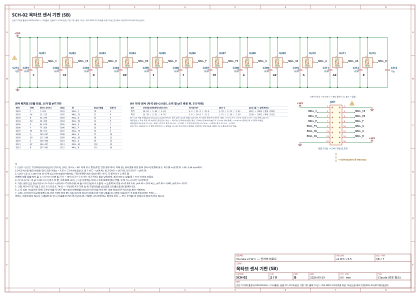</div><figcaption class="small muted">DRV5055A2 ×12(U201~U212, 핀 1 VCC · 2 GND · 3 OUT), 센서마다 100 nF, 버스 양 끝 10 µF, 리본 16심 2×8 블록 J201. 표: 센서 x(= W1 자석 x)·먹스 채널·리본 선 번호, W1 자석–소자 간격과 자기장·출력·ADC 범위.</figcaption></figure>
<figure class="sheet csheet" id="sch3"><div class="cap"><span><b>SCH-03 · 옥타브 제어 기판 (MB ×7)</b></span><span class="zbar" role="group" aria-label="확대"><button type="button" data-z="1" aria-pressed="true">맞춤</button><button type="button" data-z="2">2배</button><button type="button" data-z="3">3배</button><a class="mono" href="sch/SCH-03_control_board.svg" target="_blank" rel="noopener">크게 보기 ↗</a></span></div><div class="dwimg">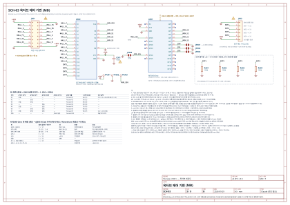</div><figcaption class="small muted">RP2040-Zero(A301)가 4067 모듈(A302)의 SIG를 GP26(ADC0)로 읽고 GP2~GP5로 채널을 고른다. GP6~GP8 ID 점퍼, GP14 PED 점퍼, EXT 보호 R301~R308, 테스트 포인트. 표: ID 점퍼·핀 배정.</figcaption></figure>
<figure class="sheet csheet" id="sch4"><div class="cap"><span><b>SCH-04 · 끝 부속 센서 기판 (EL · ER) + EXT 연결</b></span><span class="zbar" role="group" aria-label="확대"><button type="button" data-z="1" aria-pressed="true">맞춤</button><button type="button" data-z="2">2배</button><button type="button" data-z="3">3배</button><a class="mono" href="sch/SCH-04_end_parts.svg" target="_blank" rel="noopener">크게 보기 ↗</a></span></div><div class="dwimg">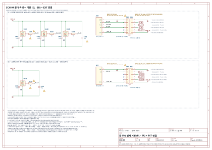</div><figcaption class="small muted">A0·A#0·B0는 O1, C8은 O7의 EXT로. 기판은 W1 끝 부속 센서 바 안(EL x1.0~46.5, ER x1.0~23.0), 1 kΩ은 아랫면 1206(△13). JST-XH 6P 위치 1 = GND(검정 끝선) … 6 = 3V3(빨강 끝선).</figcaption></figure>
<figure class="sheet csheet" id="sch5"><div class="cap"><span><b>SCH-05 · 페달 보드 (PB) + 댐퍼 페달 센서 (PS)</b></span><span class="zbar" role="group" aria-label="확대"><button type="button" data-z="1" aria-pressed="true">맞춤</button><button type="button" data-z="2">2배</button><button type="button" data-z="3">3배</button><a class="mono" href="sch/SCH-05_pedal.svg" target="_blank" rel="noopener">크게 보기 ↗</a></span></div><div class="dwimg">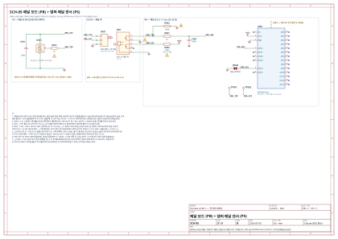</div><figcaption class="small muted">페달 안 DRV5055 → 1 kΩ → 3 m TRS → PJ-313(TN = GND) → 1 kΩ + 100 nF → GP26. 링 급전 20 Ω, 팁 100 kΩ 풀다운, GP14 = GND → &#x27;Toccata PED&#x27;.</figcaption></figure>
<figure class="sheet csheet" id="sch6"><div class="cap"><span><b>SCH-06 · 전원 (CU)</b></span><span class="zbar" role="group" aria-label="확대"><button type="button" data-z="1" aria-pressed="true">맞춤</button><button type="button" data-z="2">2배</button><button type="button" data-z="3">3배</button><a class="mono" href="sch/SCH-06_power.svg" target="_blank" rel="noopener">크게 보기 ↗</a></span></div><div class="dwimg">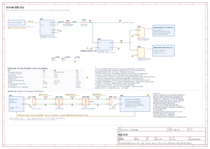</div><figcaption class="small muted">HUSB238 20 V → 5 A 지연 퓨즈 → 로커 스위치 → +20V(앰프) · XL4016 → +5V1(Pi 5 USB-C 리드, 허브 DC). 별 접지점 = 강압 IN−. 표: 전원 예산. 개정 C(△16): 화면 A605 = Pi 40핀 헤더 2·6번 → 점퍼 F/F·M/M → 동봉선 2.54 3핀 → MX1.25 2핀(넷 +5V_PI), DSI 리본 W605, 예산에 화면 포함.</figcaption></figure>
<figure class="sheet csheet" id="sch7"><div class="cap"><span><b>SCH-07 · 오디오 (CU)</b></span><span class="zbar" role="group" aria-label="확대"><button type="button" data-z="1" aria-pressed="true">맞춤</button><button type="button" data-z="2">2배</button><button type="button" data-z="3">3배</button><a class="mono" href="sch/SCH-07_audio.svg" target="_blank" rel="noopener">크게 보기 ↗</a></span></div><div class="dwimg">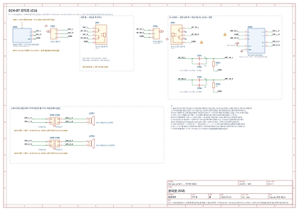</div><figcaption class="small muted">동글 → 볼 헤드폰 잭 J701(노멀 TN·RN) → J702 → 1 µF×2 병렬 + 1 kΩ(AGND) → XH-A232 → XT30 → CW-100B25 ×2(BTL).</figcaption></figure>
<figure class="sheet csheet" id="sch8"><div class="cap"><span><b>BRD-01 · 제어 기판 배치 (위에서 봄, 모듈 좌표)</b></span><span class="zbar" role="group" aria-label="확대"><button type="button" data-z="1" aria-pressed="true">맞춤</button><button type="button" data-z="2">2배</button><button type="button" data-z="3">3배</button><a class="mono" href="sch/BRD-01_control_board_placement.svg" target="_blank" rel="noopener">크게 보기 ↗</a></span></div><div class="dwimg">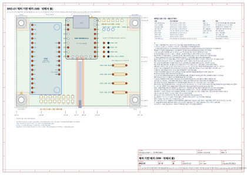</div><figcaption class="small muted">5×7 cm 기판 위 RP2040-Zero·4067 모듈·리본 2×8·EXT·보호 저항·점퍼·테스트 포인트의 구멍 좌표. W1 r4.3 홈(x81.92~84.72 × y145.5~172, F|F# 핀 발)과 금지 구역(주황, x81.22~85.42 × y≤173.2). 제로 x75.14(USB-C 가운데 = 선반 홈 가운데 x84.00, △15). 기판은 W1 r4.5 바닥 구멍(점선)으로 밑에서 넣고 매단 보스 4곳에 고정(△14).</figcaption></figure>
<figure class="sheet csheet" id="sch9"><div class="cap"><span><b>BRD-02 · 센서 기판 배치 (SB · EL · ER, 위에서 봄)</b></span><span class="zbar" role="group" aria-label="확대"><button type="button" data-z="1" aria-pressed="true">맞춤</button><button type="button" data-z="2">2배</button><button type="button" data-z="3">3배</button><a class="mono" href="sch/BRD-02_sensor_board_placement.svg" target="_blank" rel="noopener">크게 보기 ↗</a></span></div><div class="dwimg">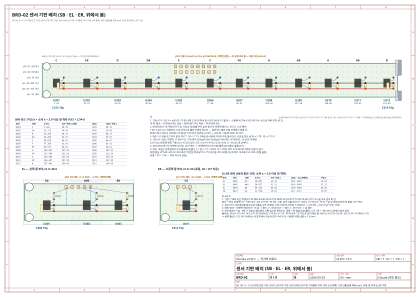</div><figcaption class="small muted">161.6 × 15.24 SB(오른쪽 턱 기둥과 0.4): 센서 12개 리드 구멍 열, 3V3·GND·OUT 행, 100 nF·10 µF 자리, 리본 2×8 블록, 고정 구멍. 아래: 끝 부속 EL(45.5)·ER(22.0) 기판 — 센서·아랫면 1206 부품·리드 패드·필요한 리브 틈.</figcaption></figure>
<h3><span class="no">02</span>이전 글 사양 대비 바꾼 점 (도면의 △)</h3>
<div class="tbl"><table><thead><tr><th>△</th><th>도면</th><th>변경</th><th>이유</th><th>부품</th></tr></thead><tbody><tr><td class="num">1</td><td>SCH-02</td><td>버스 양 끝 C213·C214 10 µF</td><td>글 사양에는 있으나 구매 목록에 없었음</td><td>구매: 1206 10 µF 16 V 50개(아이씨뱅큐 P001248090, 7,150원)</td></tr><tr><td class="num">2</td><td>SCH-03</td><td>먹스 VCC–GND C301 100 nF</td><td>모듈 C1이 사진으로만 보여 미확인</td><td>100 nF 여분</td></tr><tr><td class="num">3</td><td>SCH-04</td><td>EL·ER 기판 10 µF</td><td>3V3가 150 + 350 mm 선 끝</td><td>△1과 같은 묶음</td></tr><tr><td class="num">4</td><td>SCH-05</td><td>링 급전 R503 20 Ω (100 Ω ×5 병렬)</td><td>TS 플러그·꽂는 순간 3V3–GND 단락 → PED 보드 리셋 (검토 R1, 필수)</td><td>100 Ω 여분</td></tr><tr><td class="num">5</td><td>SCH-06</td><td>별 접지점 = 강압 IN− 단자</td><td>동글–Pi–강압–앰프 GND 루프 험 (R7)</td><td>—</td></tr><tr><td class="num">6</td><td>SCH-03·04</td><td>EXT·XH 순서 1 GND · 2~5 EXT1~4 · 6 3V3</td><td>밸런스선 빨강 1 + 검정 5 → 빨강 = 3V3</td><td>—</td></tr><tr><td class="num">7</td><td>SCH-05</td><td>페달 센서 OUT 뒤 R551 1 kΩ</td><td>3 m 케이블 용량이 OUT에 직결 (TI: OUT에 C 직결 금지)</td><td>1 kΩ 여분</td></tr><tr><td class="num">8</td><td>SCH-03·04</td><td>EXT: 센서 옆 1 kΩ 직렬(EL R401~R403, ER R411) + MB 100 kΩ 풀다운(R301~R304, O1 1~3·O7 1만)</td><td>끝 부속을 빼면 입력이 떠서 유령 음 (R4, 필수). 1 kΩ은 약 0.6 m 선 용량을 센서 OUT에서 뗌</td><td>1 kΩ·100 kΩ 여분</td></tr><tr><td class="num">9</td><td>SCH-05</td><td>페달 잭 TN → GND</td><td>플러그 없으면 팁 = 0 V</td><td>—</td></tr><tr><td class="num">10</td><td>SCH-07</td><td>AGND: 잭 슬리브·1 kΩ는 앰프 IN G로만</td><td>험 방지 배선 규칙</td><td>—</td></tr><tr><td class="num">11</td><td>SCH-05</td><td>R502 100 kΩ 팁→GND 고정, GP27 안 씀</td><td>이전 글 사양의 &#x27;GP27로 뗀 쪽 전압 구동&#x27;은 GPIO가 0/3.3 V만 내서 불가 (R3)</td><td>—</td></tr><tr><td class="num">12</td><td>SCH-02·03</td><td>리본 16심 모두 (15 GND, 16 3V3), 2×8 블록</td><td>끊긴 선 유령 음·전원 여유 (R27), IDC 헤더와 번호 같음</td><td>—</td></tr><tr><td class="num">—</td><td>BRD-01</td><td>RP2040-Zero를 안쪽 구멍 핀 헤더(몰드 뺌)로, 약 +1.3 mm</td><td>밑면에 칩·수정·LDO가 있어 평평하게 안 붙음. W1 r4.3이 뒤 선반에 플러그 홈을 내 플러그와 1.3 mm</td><td>구매: 핀헤더 1×40 ×4 (144핀)</td></tr><tr><td class="num">—</td><td>BRD-01</td><td>모든 구멍을 제로 핀 격자(x76.52+2.54i, y173.59+2.54j)로, 4067 모듈 x54.93~72.71 세로</td><td>만능기판 한 장의 구멍에 모두 맞게 · W1 r4.3 홈·금지 구역</td><td>—</td></tr><tr><td class="num">13</td><td>SCH-04·BRD-02</td><td>EL·ER R401~R403·R411 1 kΩ을 1206 칩(아랫면)으로, 기판을 W1 끝 부속 센서 바 안(EL 45.5, ER 22.0)으로</td><td>센서 바가 기판 윗면을 모두 덮어 리드형 저항 자리가 없음. W1 r4.2 끝 부속 센서 바 x0.5~46.5 / x0.5~23.0</td><td>구매: 1206 1 kΩ 10개(아이씨뱅큐 P011433924, 440원)</td></tr><tr><td class="num">14</td><td>BRD-01</td><td>기판 고정 자리 (50.0,149.0)(114.5,149.0)(50.0,192.5)(114.5,192.5) — W1 r4.5 매단 보스, M3×6 밑에서 2 · 위치 핀 2</td><td>v3 P114 자리는 M3 머리가 밸런스 레일과 0.75, 선반 리브와 1.05 (W1 1.3 규칙 위반)</td><td>M3×6 = 구매 목록 L35</td></tr><tr><td class="num">15</td><td>BRD-01</td><td>제로를 x75.14로(+0.14), J301 아랫면 납땜</td><td>Waveshare 치수도: USB-C가 오른쪽에서 4.67(가운데보다 0.14 왼쪽) → 플러그를 W1 선반 홈 가운데 x84.00에(양옆 1.30). 리본은 차선 안 중심 x70.48 그대로</td><td>—</td></tr><tr><td class="num">—</td><td>전체</td><td>테스트 포인트 8곳</td><td>검토 R30</td><td>—</td></tr><tr><td class="num">16</td><td>SCH-01·06</td><td>화면 A605 = Waveshare 7-DSI-TOUCH-C(B1): Pi 헤더 핀 2(5 V)·6(GND) → P603 → W606 F/F 20 cm → X601⇄X602 → W607 M/M 20 cm → X603⇄X604(동봉선 2.54 3핀: 1 빨강 · 2 빈 칸 · 3 검정) → W608 → P604 MX1.25 ⇄ A605. 넷 +5V_PI(Pi 안 5 V 레일, P601 MT666 ← +5V1)·GND. DSI = W605 FFC 22핀 300 mm B형. 예산: 화면 2.15 W, 평균 약 16~20 W, 순간 약 54.4 W, 60 W 여유 약 5.6 W, 45 W면 −2 dB</td><td>R31(10/1 B1 선택). D16: 화면은 Pi에서 나가는 방향으로만. D19 여유. D14: 화면·경첩·다리에 자석 없음</td><td>구매 목록 v4touch No.135 · No.49·50 · No.51~54 (반영됨)</td></tr></tbody></table></div>
<div class="note"><b>W1 기구와 맞춘 것.</b> RP2040-Zero는 밑면에 칩·수정·LDO가 있어 핀 헤더로 세웠고(약 +1.3 mm), W1 r4.3이 뒤 선반에 USB 플러그 위 홈을 내어 플러그와 선반 사이 1.3 mm를 되찾았습니다. 제어 기판 배치(BRD-01)도 r4.3 형상 검사에 들어가 기판 부품 ↔ 프레임 최소 1.3 mm입니다.</div>
<h3><span class="no">02b</span>W1 기구 쪽에 요청한 것과 반영 결과 (W1 r4.4~r4.5)</h3>
<div class="tbl"><table><thead><tr><th>#</th><th>회로가 요청한 것</th><th>W1 결과</th></tr></thead><tbody><tr><td class="num">1</td><td>제어 기판 부품 자리를 격자 좌표로: 제로 x75.14~93.14 × y172.0~195.5, 4067 x54.93~72.71 × y152.0~192.64, J301 x61.28~79.06 × y148.19/150.73(아랫면 납땜, 리본 기판 밑 z5~9), J302 x94.30~107.00 × y193.91</td><td>반영. 리셉터클 x79.53~88.47 그대로</td></tr><tr><td class="num">2</td><td>USB 플러그 면 y약 196.8(리셉터클이 제로 밖으로 1.0~1.5), 몰드 y196.8~221.8</td><td>반영. 선반 홈 x76.45~91.55 틈 1.30, 뒷벽 개구 z5~21 틈 2.70</td></tr><tr><td class="num">3</td><td>제어 기판 고정 4곳 (50.0,149.0)(114.5,149.0)(114.5,192.5)(50.0,192.5)</td><td>바뀜: 한 덩어리 프레임에 기판을 넣을 길이 없어 기판 밑 바닥을 뚫고(x46.25~118.25 × y144.5~196.5, 리셉터클 뒤 y197.8) 밑에서 넣음. 받침 = 위에 매단 Ø6 보스(밑면 z10.6), M3×6 ×2 밑에서(ISO 7380 머리 Ø5.7 × 1.65: 레일 1.65, 리브 1.45, 기판 모서리 밖 0.10), 위치 핀 ×2(놀음 0.10), 넣는 길 틈 0.60</td></tr><tr><td class="num">4</td><td>끝 부속 센서 기판 받침·뒤 리브 틈(EL x15~38, ER x6~16)·리드 길</td><td>반영: 레일 밑 차선 EL x13.53~22.48 · ER x7.59~14.00 (z5~10), 뒷벽 홈 z5~12, 리드는 y77.39 안에서 EL x14.83~21.18 · ER x8.89~12.70으로 모음</td></tr><tr><td class="num">5</td><td>SB 뒤 받침 리브 틈 x60~82 → x59~82</td><td>반영 (리본 양옆 1.32 / 1.36)</td></tr><tr><td class="num">6</td><td>금지 구역과 제로 PCB 겹침 정리</td><td>금지 구역 y173.2 그대로, 제로 PCB가 y172.0~173.2에 걸친다고 P23에 기록</td></tr><tr><td class="num">7</td><td>C301 = 1206 칩, 레버가 떨어지는 곳</td><td>반영: D#·G# 매단 보스, E·F 4067 위(13.25°), F#·G 기판 윗면, O1·O7의 G R301 위(0.40 N)</td></tr><tr><td class="num">+</td><td>F|F# 핀 발</td><td>r4.5: 바닥 대신 킬(y144.5~148.6, z3~19.3)로 밸런스 레일 뒷면에 붙음, 핀 앞끝 y152 → y148.6 — 둘 다 기판 홈 안이라 회로 변화 없음</td></tr><tr><td class="num">8</td><td>(2차) 센서 바 오른쪽 턱(v3 P112)을 모델에 넣거나, 턱 없이 바 오른쪽 끝을 무엇이 잡는지 P36에 적기</td><td>반영(r4.5 회로 2차): 두 조각 ㄱ자 턱, 립 x161.5~163.0 z13.6~15.1, 기둥 x163.0~164.3. 회로: SB를 x162.6까지(기둥과 0.4). EL·ER은 턱 없이 왼쪽 M3 ×2 + 리브</td></tr><tr><td class="num">9</td><td>(2차) 유령 거름 글을 gfilter와 같게(창 = note-on부터 재무장까지 250 ms), 유령이 다시 닿는 시각을 구해 &#x27;다시 눌림 시각 상한&#x27; 정하기</td><td>반영: note-on부터 250 ms 안 재무장 → 의심, note-on부터 500 ms 안의 첫 다시 눌림만 판정. 재무장 28건을 1.5 s까지 돌려 스스로 다시 닿는 것 0건(흔들림 ≤ 222 ms) — 500 ms는 약 2배, 시험 11에서 확인</td></tr><tr><td class="num">10</td><td>(2차) DESIGN §11 6단계: D#·G# 레버는 매단 보스 위(16.75°)</td><td>반영: D#·G# 매단 보스 16.75°, F#·G 기판 윗면 24.00 / 23.50°, E·F 4067 13.25°</td></tr><tr><td class="num">11</td><td>(2차) EL 바닥에 새어 든 기판 구멍 자르기 틈 x46.25~46.8 × y144.5~196.5 없애기</td><td>반영: EL 바닥 한 조각(x0.2~46.8)</td></tr><tr><td class="num">12</td><td>(2차) 구매 목록 글: L35 용도(매단 보스·밑에서), SE4에 MB C301 ×7(97개 사용), L20·L21 = 건반 88 + 페달 1, 엑셀 제목 r4.5</td><td>반영: L35 매단 보스·밑에서, SE4 97개 사용·예비 3, L20·L21 89개·예비 11, 제목 r4.5 (합계 1,060,470원 그대로)</td></tr><tr><td class="num">13</td><td>(2차) 단계 0 시험 21 뒤 리본 차선이 바뀌면 알리기</td><td>바뀐 것 없음 — 시험 21 결과가 나오면 W1이 알림</td></tr></tbody></table></div>
<h3><span class="no">02c</span>구매 목록에 넣거나 고칠 줄</h3><p class="small muted">2026-09-29 구매 목록(엑셀·07 탭 선택기)에 모두 반영됐습니다(새 줄 L67·L68). 기록으로 남깁니다.</p>
<div class="tbl"><table><thead><tr><th>줄</th><th>바꿀 내용</th><th>근거</th></tr></thead><tbody><tr><td>L67 (반영)</td><td>1206 10 µF 16 V 50개 (아이씨뱅큐 P001248090, 7,150원) ×1 — SB C213·C214 ×7 + EL C404 + ER C412 = 16개</td><td>△1·△3</td></tr><tr><td>L68 (반영)</td><td>Yageo RC1206JR-071KL 1206 1 kΩ 10개 (아이씨뱅큐 P011433924, 44원 × 10 = 440원, VAT 포함) — EL R401~R403 + ER R411 = 4개</td><td>△13</td></tr><tr><td>SE7 핀헤더 1×40</td><td>5 → 9줄 (먹스 7 × (16+8) = 168핀 + 제로 8 × 18 = 144핀)</td><td>제로를 핀 헤더로</td></tr><tr><td>SE7 핀헤더 소켓 1×40</td><td>빼기 (EXT는 L66 JST-XH를 패드에 직접 납땜, 암 헤더 안 씀)</td><td>J302·J401·J411 = 패드만</td></tr><tr><td>SEV2 RP2040-Zero 용도</td><td>&#x27;캐스털레이션 직접 납땜&#x27; → &#x27;안쪽 구멍 핀 헤더 1×9 ×2(몰드 뺌), 캡톤 위 약 +1.3 mm&#x27;</td><td>BRD-01 주 3</td></tr><tr><td>L29 1 kΩ·100 kΩ·100 Ω 용도</td><td>1 kΩ: R701·R702·R501·R551 / 100 kΩ: R301(O1·O7)·R302·R303·R502 / 100 Ω: R503 20 Ω = 100 Ω ×5 병렬(필수)</td><td>bom.csv</td></tr><tr><td>C05 리본 용도</td><td>리본 16심 전부(OUT 12 + 3V3 ×2 + GND ×2) ×7 + EL·ER 리드 가닥</td><td>△12</td></tr><tr><td>L66 용도</td><td>200 mm 연장선을 모듈 쪽 150 · 끝 부속 쪽 50으로 자름 (가운데 자르면 100이라 모자람)</td><td>W403·W413 150 mm</td></tr><tr><td>C04 USB 케이블 (반영)</td><td>몰드 ≤ 12.5 × 7.6 × 25 — 폭이 넘으면 안 들어감(선반 홈과 한쪽 1.30). 지금 NA993은 두께 미공개 → 단계 0 시험 19로 확인, 대안 CVILUX DH-20M50052(11.97 × 6.42 × 20.93)</td><td>W1 r4.5 1d-3</td></tr><tr><td>L56 1 µF 용도</td><td>&#x27;약 80 Hz&#x27; → &#x27;약 93 Hz&#x27; (1 kΩ + 앰프 입력 9 kΩ)</td><td>SCH-07</td></tr><tr><td>(선택) L29 10 kΩ</td><td>회로에서 쓰지 않음(예비로 둘지 선택)</td><td>bom.csv</td></tr><tr><td>L01 Raspberry Pi 5 용도 (10/1 새로 고칠 글)</td><td>&#x27;(R25: HAT 없음, GPIO 배선 없음)&#x27; → &#x27;HAT 없음. GPIO는 헤더 2·6번에서 화면 5 V만 나감(R31)&#x27;</td><td>△16</td></tr></tbody></table></div>
<h3><span class="no">03</span>부품이 오면 먼저 확인할 것</h3>
<div class="tbl"><table><thead><tr><th>항목</th><th>확인</th></tr></thead><tbody><tr><td>PD 트리거</td><td>무부하로 전원마다 20 V. 20 V 3 A(60 W) 보조배터리는 HUSB238이 3.25 A를 요구해 15·12·5 V로 떨어질 수 있다.</td></tr><tr><td>XL4016</td><td>무부하 5.10~5.15 V에 맞추고 가변저항 고정 뒤 연결. MT666 빨강 = +, 허브 선 중심 = + 확인.</td></tr><tr><td>PJ-313 ×3</td><td>플러그 없음: T–TN, R–RN 닫힘이어야 한다. 노멀 없는 제품이면 헤드폰 차단(R15)이 안 된다.</td></tr><tr><td>RP2040-Zero</td><td>복제품: LDO 표시(5핀 RT9013·ME6217) 확인, O1 3V3 전류 60~130 mA, 부팅 불안하면 XOSC 지연 64.</td></tr><tr><td>센서</td><td>자석 없이 1.59~1.71 V, S극을 표시면에 가까이 하면 오름. 건반을 얹은 쉼 백 ≈1.78 · 흑 ≈1.72 V, 바닥 백 ≈2.31 · 흑 ≈2.39 V(±10 %). EXT를 빼면 0.15 V 아래.</td></tr><tr><td>페달</td><td>꽂은 상태 링–슬리브 3.05 V 이상, 뺀 상태 팁 약 0 V.</td></tr><tr><td>앰프·스피커</td><td>36 dB 이득 확인 → 소프트웨어 음량 상한. 스피커 Re 6~7 Ω(4 Ω 판매분 주의).</td></tr><tr><td>허브</td><td>Pi 선을 뺐을 때 Pi 5V 핀 0 V(역급전 없음).</td></tr><tr><td>화면 (△16)</td><td>동봉선 2.54 3핀 하우징 = 1 빨강 5 V · 2 빈 칸 · 3 검정 GND인지 통전 검사 뒤 점퍼 연결. 화면 쪽 5 V를 부하 때 잼(점퍼 왕복 강하 계산 약 0.05 V). 최대 부하에서 vcgencmd get_throttled = 0x0(Pi 입력 약 2.0 A). 화면 켬·끔, 밝기 0·100 %에서 센서 유휴 흔들림 다시 잼(D14). config.txt: dtoverlay=vc4-kms-dsi-waveshare-panel-v2,7_0_inch_c.</td></tr></tbody></table></div>
<h3><span class="no">04</span>KiCad로 옮기는 순서</h3><ol class="flow"><li><b>프로젝트를 보드별로</b>: octave-sensor(SB), octave-control(MB, PB 겸용 가능), end-parts, pedal-sensor, 문서용 cu-wiring. 한 PCB에 7장을 넣지 않는다.</li><li><b>라이브러리</b>: 아래 부품표의 KiCad 심볼·풋프린트 열. 직접 만들 것 = 4067 모듈 심볼·풋프린트, PJ-313 풋프린트(패드 이름 T/TN/R/RN/S), 모듈 심볼(HUSB238·XL4016·XH-A232·동글·RaspberryPi5 헤더 유닛·Waveshare 7-DSI-TOUCH-C), 전원 심볼 +20V·+5V1·+5V_PI.</li><li><b>RP2040-Zero</b>는 dj505/RP2040-Zero-KiCAD 라이브러리(패드 번호 = 이 도면), 3V3 핀을 power_out으로. DRV5055는 Sensor_Magnetic:DRV5055A2xLPGxQ1, Value를 DRV5055A2QLPG로.</li><li><b>번호 매기기</b>: Annotate → First free after sheet number × 100, X 위치순 — 이 도면과 같은 번호가 나온다.</li><li><b>ERC</b>: 선으로 들어오는 전원(SB의 +3V3, +3V3_EL·+3V3_ER, +20V, +5V1, +5V_PI, PS의 PED_VCC, 각 GND)에 PWR_FLAG. GND·+3V3는 로컬 라벨이 아니라 전원 심볼로. +3V3_EL·+3V3_ER도 프로젝트 전원 심볼로 추가.</li><li><b>외곽·자리</b>: BRD-01·02 좌표. 제어 기판은 x81.22~85.42 × y145.5~173.2(W1 r4.3) 비움, 홈 x81.92~84.72 × y145.5~172.0 따냄. EL·ER 기판은 BRD-02 아래 그림.</li></ol>
<h3><span class="no">05</span>부품표 (KiCad 심볼·풋프린트, 구매 목록 코드)</h3>
<p class="small muted">"전체 수량" = 보드 수 × 보드당, MB의 보호 저항은 실장하는 보드만 셈. 구매 목록 코드는 v4 재료 목록(xlsx)의 부품 코드입니다. 부품 사진·가격은 <a href="#buy">구매 목록</a> 탭과 최종 재료 페이지에 있습니다.</p>
<details class="spec cbom"><summary>SCH-02 · 센서 기판 SB — 27줄</summary>
<div class="tbl"><table><thead><tr><th>보드</th><th>부품</th><th>값</th><th>설명</th><th>보드 수</th><th>보드당</th><th>전체</th><th>실장</th><th>KiCad 심볼</th><th>KiCad 풋프린트</th><th>코드</th></tr></thead><tbody><tr><td>SB</td><td class="num">U201</td><td>DRV5055A2QLPG</td><td>TI DRV5055A2QLPG, TO-92-3 (LPG)</td><td class="num">7</td><td class="num">1</td><td class="num">7</td><td></td><td>Sensor_Magnetic:DRV5055A2xLPGxQ1 (Value = DRV5055A2QLPG)</td><td>Package_TO_SOT_THT:TO-92_Inline_W4.0mm_Horizontal_FlatSideUp → 2.54 간격으로 복사 수정</td><td>L20</td></tr><tr><td>SB</td><td class="num">C201</td><td>100n</td><td>Samsung CL31B104KCFNNNE 1206 100 nF 100 V X7R</td><td class="num">7</td><td class="num">1</td><td class="num">7</td><td></td><td>Device:C</td><td>Capacitor_SMD:C_1206_3216Metric_Pad1.33x1.80mm_HandSolder</td><td>SE4</td></tr><tr><td>SB</td><td class="num">U202</td><td>DRV5055A2QLPG</td><td>TI DRV5055A2QLPG, TO-92-3 (LPG)</td><td class="num">7</td><td class="num">1</td><td class="num">7</td><td></td><td>Sensor_Magnetic:DRV5055A2xLPGxQ1 (Value = DRV5055A2QLPG)</td><td>Package_TO_SOT_THT:TO-92_Inline_W4.0mm_Horizontal_FlatSideUp → 2.54 간격으로 복사 수정</td><td>L20</td></tr><tr><td>SB</td><td class="num">C202</td><td>100n</td><td>Samsung CL31B104KCFNNNE 1206 100 nF 100 V X7R</td><td class="num">7</td><td class="num">1</td><td class="num">7</td><td></td><td>Device:C</td><td>Capacitor_SMD:C_1206_3216Metric_Pad1.33x1.80mm_HandSolder</td><td>SE4</td></tr><tr><td>SB</td><td class="num">U203</td><td>DRV5055A2QLPG</td><td>TI DRV5055A2QLPG, TO-92-3 (LPG)</td><td class="num">7</td><td class="num">1</td><td class="num">7</td><td></td><td>Sensor_Magnetic:DRV5055A2xLPGxQ1 (Value = DRV5055A2QLPG)</td><td>Package_TO_SOT_THT:TO-92_Inline_W4.0mm_Horizontal_FlatSideUp → 2.54 간격으로 복사 수정</td><td>L20</td></tr><tr><td>SB</td><td class="num">C203</td><td>100n</td><td>Samsung CL31B104KCFNNNE 1206 100 nF 100 V X7R</td><td class="num">7</td><td class="num">1</td><td class="num">7</td><td></td><td>Device:C</td><td>Capacitor_SMD:C_1206_3216Metric_Pad1.33x1.80mm_HandSolder</td><td>SE4</td></tr><tr><td>SB</td><td class="num">U204</td><td>DRV5055A2QLPG</td><td>TI DRV5055A2QLPG, TO-92-3 (LPG)</td><td class="num">7</td><td class="num">1</td><td class="num">7</td><td></td><td>Sensor_Magnetic:DRV5055A2xLPGxQ1 (Value = DRV5055A2QLPG)</td><td>Package_TO_SOT_THT:TO-92_Inline_W4.0mm_Horizontal_FlatSideUp → 2.54 간격으로 복사 수정</td><td>L20</td></tr><tr><td>SB</td><td class="num">C204</td><td>100n</td><td>Samsung CL31B104KCFNNNE 1206 100 nF 100 V X7R</td><td class="num">7</td><td class="num">1</td><td class="num">7</td><td></td><td>Device:C</td><td>Capacitor_SMD:C_1206_3216Metric_Pad1.33x1.80mm_HandSolder</td><td>SE4</td></tr><tr><td>SB</td><td class="num">U205</td><td>DRV5055A2QLPG</td><td>TI DRV5055A2QLPG, TO-92-3 (LPG)</td><td class="num">7</td><td class="num">1</td><td class="num">7</td><td></td><td>Sensor_Magnetic:DRV5055A2xLPGxQ1 (Value = DRV5055A2QLPG)</td><td>Package_TO_SOT_THT:TO-92_Inline_W4.0mm_Horizontal_FlatSideUp → 2.54 간격으로 복사 수정</td><td>L20</td></tr><tr><td>SB</td><td class="num">C205</td><td>100n</td><td>Samsung CL31B104KCFNNNE 1206 100 nF 100 V X7R</td><td class="num">7</td><td class="num">1</td><td class="num">7</td><td></td><td>Device:C</td><td>Capacitor_SMD:C_1206_3216Metric_Pad1.33x1.80mm_HandSolder</td><td>SE4</td></tr><tr><td>SB</td><td class="num">U206</td><td>DRV5055A2QLPG</td><td>TI DRV5055A2QLPG, TO-92-3 (LPG)</td><td class="num">7</td><td class="num">1</td><td class="num">7</td><td></td><td>Sensor_Magnetic:DRV5055A2xLPGxQ1 (Value = DRV5055A2QLPG)</td><td>Package_TO_SOT_THT:TO-92_Inline_W4.0mm_Horizontal_FlatSideUp → 2.54 간격으로 복사 수정</td><td>L20</td></tr><tr><td>SB</td><td class="num">C206</td><td>100n</td><td>Samsung CL31B104KCFNNNE 1206 100 nF 100 V X7R</td><td class="num">7</td><td class="num">1</td><td class="num">7</td><td></td><td>Device:C</td><td>Capacitor_SMD:C_1206_3216Metric_Pad1.33x1.80mm_HandSolder</td><td>SE4</td></tr><tr><td>SB</td><td class="num">U207</td><td>DRV5055A2QLPG</td><td>TI DRV5055A2QLPG, TO-92-3 (LPG)</td><td class="num">7</td><td class="num">1</td><td class="num">7</td><td></td><td>Sensor_Magnetic:DRV5055A2xLPGxQ1 (Value = DRV5055A2QLPG)</td><td>Package_TO_SOT_THT:TO-92_Inline_W4.0mm_Horizontal_FlatSideUp → 2.54 간격으로 복사 수정</td><td>L20</td></tr><tr><td>SB</td><td class="num">C207</td><td>100n</td><td>Samsung CL31B104KCFNNNE 1206 100 nF 100 V X7R</td><td class="num">7</td><td class="num">1</td><td class="num">7</td><td></td><td>Device:C</td><td>Capacitor_SMD:C_1206_3216Metric_Pad1.33x1.80mm_HandSolder</td><td>SE4</td></tr><tr><td>SB</td><td class="num">U208</td><td>DRV5055A2QLPG</td><td>TI DRV5055A2QLPG, TO-92-3 (LPG)</td><td class="num">7</td><td class="num">1</td><td class="num">7</td><td></td><td>Sensor_Magnetic:DRV5055A2xLPGxQ1 (Value = DRV5055A2QLPG)</td><td>Package_TO_SOT_THT:TO-92_Inline_W4.0mm_Horizontal_FlatSideUp → 2.54 간격으로 복사 수정</td><td>L20</td></tr><tr><td>SB</td><td class="num">C208</td><td>100n</td><td>Samsung CL31B104KCFNNNE 1206 100 nF 100 V X7R</td><td class="num">7</td><td class="num">1</td><td class="num">7</td><td></td><td>Device:C</td><td>Capacitor_SMD:C_1206_3216Metric_Pad1.33x1.80mm_HandSolder</td><td>SE4</td></tr><tr><td>SB</td><td class="num">U209</td><td>DRV5055A2QLPG</td><td>TI DRV5055A2QLPG, TO-92-3 (LPG)</td><td class="num">7</td><td class="num">1</td><td class="num">7</td><td></td><td>Sensor_Magnetic:DRV5055A2xLPGxQ1 (Value = DRV5055A2QLPG)</td><td>Package_TO_SOT_THT:TO-92_Inline_W4.0mm_Horizontal_FlatSideUp → 2.54 간격으로 복사 수정</td><td>L20</td></tr><tr><td>SB</td><td class="num">C209</td><td>100n</td><td>Samsung CL31B104KCFNNNE 1206 100 nF 100 V X7R</td><td class="num">7</td><td class="num">1</td><td class="num">7</td><td></td><td>Device:C</td><td>Capacitor_SMD:C_1206_3216Metric_Pad1.33x1.80mm_HandSolder</td><td>SE4</td></tr><tr><td>SB</td><td class="num">U210</td><td>DRV5055A2QLPG</td><td>TI DRV5055A2QLPG, TO-92-3 (LPG)</td><td class="num">7</td><td class="num">1</td><td class="num">7</td><td></td><td>Sensor_Magnetic:DRV5055A2xLPGxQ1 (Value = DRV5055A2QLPG)</td><td>Package_TO_SOT_THT:TO-92_Inline_W4.0mm_Horizontal_FlatSideUp → 2.54 간격으로 복사 수정</td><td>L20</td></tr><tr><td>SB</td><td class="num">C210</td><td>100n</td><td>Samsung CL31B104KCFNNNE 1206 100 nF 100 V X7R</td><td class="num">7</td><td class="num">1</td><td class="num">7</td><td></td><td>Device:C</td><td>Capacitor_SMD:C_1206_3216Metric_Pad1.33x1.80mm_HandSolder</td><td>SE4</td></tr><tr><td>SB</td><td class="num">U211</td><td>DRV5055A2QLPG</td><td>TI DRV5055A2QLPG, TO-92-3 (LPG)</td><td class="num">7</td><td class="num">1</td><td class="num">7</td><td></td><td>Sensor_Magnetic:DRV5055A2xLPGxQ1 (Value = DRV5055A2QLPG)</td><td>Package_TO_SOT_THT:TO-92_Inline_W4.0mm_Horizontal_FlatSideUp → 2.54 간격으로 복사 수정</td><td>L20</td></tr><tr><td>SB</td><td class="num">C211</td><td>100n</td><td>Samsung CL31B104KCFNNNE 1206 100 nF 100 V X7R</td><td class="num">7</td><td class="num">1</td><td class="num">7</td><td></td><td>Device:C</td><td>Capacitor_SMD:C_1206_3216Metric_Pad1.33x1.80mm_HandSolder</td><td>SE4</td></tr><tr><td>SB</td><td class="num">U212</td><td>DRV5055A2QLPG</td><td>TI DRV5055A2QLPG, TO-92-3 (LPG)</td><td class="num">7</td><td class="num">1</td><td class="num">7</td><td></td><td>Sensor_Magnetic:DRV5055A2xLPGxQ1 (Value = DRV5055A2QLPG)</td><td>Package_TO_SOT_THT:TO-92_Inline_W4.0mm_Horizontal_FlatSideUp → 2.54 간격으로 복사 수정</td><td>L20</td></tr><tr><td>SB</td><td class="num">C212</td><td>100n</td><td>Samsung CL31B104KCFNNNE 1206 100 nF 100 V X7R</td><td class="num">7</td><td class="num">1</td><td class="num">7</td><td></td><td>Device:C</td><td>Capacitor_SMD:C_1206_3216Metric_Pad1.33x1.80mm_HandSolder</td><td>SE4</td></tr><tr><td>SB</td><td class="num">C213</td><td>10µ</td><td>C3216-10UF(K 16V) 1206 10 µF 16 V (50개 단위)</td><td class="num">7</td><td class="num">1</td><td class="num">7</td><td></td><td>Device:C</td><td>Capacitor_SMD:C_1206_3216Metric_Pad1.33x1.80mm_HandSolder</td><td>L67</td></tr><tr><td>SB</td><td class="num">C214</td><td>10µ</td><td>C3216-10UF(K 16V) 1206 10 µF 16 V (50개 단위)</td><td class="num">7</td><td class="num">1</td><td class="num">7</td><td></td><td>Device:C</td><td>Capacitor_SMD:C_1206_3216Metric_Pad1.33x1.80mm_HandSolder</td><td>L67</td></tr><tr><td>SB</td><td class="num">J201</td><td>리본 16심 → 2×8 구멍 (2.54)</td><td>EUNSUNG 2651-16P 플랫 케이블 (16심 전부 사용)</td><td class="num">7</td><td class="num">1</td><td class="num">7</td><td></td><td>Connector_Generic:Conn_02x08_Odd_Even</td><td>Connector_PinHeader_2.54mm:PinHeader_2x08_P2.54mm_Vertical (패드만, 리본 직접 납땜)</td><td>C05</td></tr></tbody></table></div>
</details>
<details class="spec cbom"><summary>SCH-03 · 제어 기판 MB — 18줄</summary>
<div class="tbl"><table><thead><tr><th>보드</th><th>부품</th><th>값</th><th>설명</th><th>보드 수</th><th>보드당</th><th>전체</th><th>실장</th><th>KiCad 심볼</th><th>KiCad 풋프린트</th><th>코드</th></tr></thead><tbody><tr><td>MB</td><td class="num">J301</td><td>리본 16심 입력 2×8</td><td>EUNSUNG 2651-16P 플랫 케이블 (16심 전부 사용)</td><td class="num">7</td><td class="num">1</td><td class="num">7</td><td></td><td>Connector_Generic:Conn_02x08_Odd_Even</td><td>Connector_PinHeader_2.54mm:PinHeader_2x08_P2.54mm_Vertical (패드만, 리본 직접 납땜)</td><td>C05</td></tr><tr><td>MB</td><td class="num">A302</td><td>CD74HC4067 16채널 먹스 모듈</td><td>CD74HC4067 16채널 먹스 모듈 (파츠파츠 PP-A324)</td><td class="num">7</td><td class="num">1</td><td class="num">7</td><td></td><td>Toccata:CD74HC4067_Breakout (직접 만듦, 핀 1~16 C0~C15, 17~24 J2)</td><td>Toccata:CD74HC4067_Breakout_40.6x17.8 (행 간격 15.24) 또는 PinHeader_1x16 + PinHeader_1x08</td><td>SEV2</td></tr><tr><td>MB</td><td class="num">A302-HDR</td><td>1×16 + 1×8</td><td>핀헤더 1×40 2.54 mm (자름) — 먹스 모듈 1×16 + 1×8</td><td class="num">7</td><td class="num">24</td><td class="num">168</td><td>모듈에 수 헤더가 들어 있으면 안 삼</td><td>—</td><td>Connector_PinHeader_2.54mm (풋프린트는 A 줄 참조)</td><td>SE7</td></tr><tr><td>MB</td><td class="num">C301</td><td>100n</td><td>Samsung CL31B104KCFNNNE 1206 100 nF 100 V X7R</td><td class="num">7</td><td class="num">1</td><td class="num">7</td><td></td><td>Device:C</td><td>Capacitor_SMD:C_1206_3216Metric_Pad1.33x1.80mm_HandSolder</td><td>SE4</td></tr><tr><td>MB</td><td class="num">A301</td><td>RP2040-Zero</td><td>Waveshare RP2040-Zero (파츠파츠 PP-A799-2)</td><td class="num">7</td><td class="num">1</td><td class="num">7</td><td></td><td>dj505/RP2040-Zero-KiCAD : RP2040-Zero (3V3 핀을 power_out으로)</td><td>bobu01/RP2040-Zero-Kicad-Footprint-1mm 또는 dj505 풋프린트를 1.0 mm 드릴로 복사 (핀 헤더용, 번호는 dj505 그대로)</td><td>SEV2</td></tr><tr><td>MB</td><td class="num">A301-HDR</td><td>1×9 ×2</td><td>핀헤더 1×40 2.54 mm — RP2040-Zero용 1×9 ×2 (먹스 168 + 제로 144 = 312핀 → 1×40 9줄)</td><td class="num">7</td><td class="num">18</td><td class="num">126</td><td>좌·우 열만 (아래 줄 없음), 몰드 뺌</td><td>—</td><td>Connector_PinHeader_2.54mm (풋프린트는 A 줄 참조)</td><td>SE7</td></tr><tr><td>MB</td><td class="num">JP304</td><td>열림</td><td>SolderJumper_2_Open</td><td class="num">7</td><td class="num">1</td><td class="num">7</td><td>모두 열림 (PB는 JP504)</td><td>Jumper:SolderJumper_2_Open</td><td>Jumper:SolderJumper-2_P1.3mm_Open_Pad1.0x1.5mm (만능기판: 두 구멍 브리지)</td><td></td></tr><tr><td>MB</td><td class="num">JP301</td><td></td><td>SolderJumper_2_Open</td><td class="num">7</td><td class="num">1</td><td class="num">7</td><td>O1·O3·O5·O7 닫음</td><td>Jumper:SolderJumper_2_Open</td><td>Jumper:SolderJumper-2_P1.3mm_Open_Pad1.0x1.5mm (만능기판: 두 구멍 브리지)</td><td></td></tr><tr><td>MB</td><td class="num">JP302</td><td></td><td>SolderJumper_2_Open</td><td class="num">7</td><td class="num">1</td><td class="num">7</td><td>O2·O3·O6·O7 닫음</td><td>Jumper:SolderJumper_2_Open</td><td>Jumper:SolderJumper-2_P1.3mm_Open_Pad1.0x1.5mm (만능기판: 두 구멍 브리지)</td><td></td></tr><tr><td>MB</td><td class="num">JP303</td><td></td><td>SolderJumper_2_Open</td><td class="num">7</td><td class="num">1</td><td class="num">7</td><td>O4~O7 닫음</td><td>Jumper:SolderJumper_2_Open</td><td>Jumper:SolderJumper-2_P1.3mm_Open_Pad1.0x1.5mm (만능기판: 두 구멍 브리지)</td><td></td></tr><tr><td>MB</td><td class="num">J302</td><td>EXT 패드 1×6 (2.54)</td><td>패드만 — L66 모듈 쪽 리드를 아랫면에서 직접 납땜 (헤더 없음)</td><td class="num">7</td><td class="num">1</td><td class="num">7</td><td>O1·O7만 L66 모듈 쪽 리드(W403·W413)를 아랫면에서 납땜, O2~O6 비움</td><td>Connector_Generic:Conn_01x06</td><td>Connector_PinHeader_2.54mm:PinHeader_1x06_P2.54mm_Vertical (패드만)</td><td></td></tr><tr><td>MB</td><td class="num">R301</td><td>100k</td><td>탄소피막 1/4 W 5 % 100 kΩ</td><td class="num">7</td><td class="num">1</td><td class="num">2</td><td>O1·O7</td><td>Device:R</td><td>Resistor_THT:R_Axial_DIN0207_L6.3mm_D2.5mm_P7.62mm_Horizontal</td><td>L29</td></tr><tr><td>MB</td><td class="num">R302</td><td>100k</td><td>탄소피막 1/4 W 5 % 100 kΩ</td><td class="num">7</td><td class="num">1</td><td class="num">1</td><td>O1</td><td>Device:R</td><td>Resistor_THT:R_Axial_DIN0207_L6.3mm_D2.5mm_P7.62mm_Horizontal</td><td>L29</td></tr><tr><td>MB</td><td class="num">R303</td><td>100k</td><td>탄소피막 1/4 W 5 % 100 kΩ</td><td class="num">7</td><td class="num">1</td><td class="num">1</td><td>O1</td><td>Device:R</td><td>Resistor_THT:R_Axial_DIN0207_L6.3mm_D2.5mm_P7.62mm_Horizontal</td><td>L29</td></tr><tr><td>MB</td><td class="num">R304</td><td>100k</td><td>탄소피막 1/4 W 5 % 100 kΩ</td><td class="num">7</td><td class="num">1</td><td class="num">0</td><td>없음 (비움)</td><td>Device:R</td><td>Resistor_THT:R_Axial_DIN0207_L6.3mm_D2.5mm_P7.62mm_Horizontal</td><td>L29</td></tr><tr><td>MB</td><td class="num">TP301</td><td></td><td>TestPoint</td><td class="num">7</td><td class="num">1</td><td class="num">7</td><td></td><td>Connector:TestPoint</td><td>TestPoint:TestPoint_THTPad_D1.5mm_Drill0.7mm</td><td></td></tr><tr><td>MB</td><td class="num">TP302</td><td></td><td>TestPoint</td><td class="num">7</td><td class="num">1</td><td class="num">7</td><td></td><td>Connector:TestPoint</td><td>TestPoint:TestPoint_THTPad_D1.5mm_Drill0.7mm</td><td></td></tr><tr><td>MB</td><td class="num">TP303</td><td></td><td>TestPoint</td><td class="num">7</td><td class="num">1</td><td class="num">7</td><td></td><td>Connector:TestPoint</td><td>TestPoint:TestPoint_THTPad_D1.5mm_Drill0.7mm</td><td></td></tr></tbody></table></div>
</details>
<details class="spec cbom"><summary>SCH-04 · 끝 부속 EL·ER — 20줄</summary>
<div class="tbl"><table><thead><tr><th>보드</th><th>부품</th><th>값</th><th>설명</th><th>보드 수</th><th>보드당</th><th>전체</th><th>실장</th><th>KiCad 심볼</th><th>KiCad 풋프린트</th><th>코드</th></tr></thead><tbody><tr><td>EL</td><td class="num">U401</td><td>DRV5055A2QLPG</td><td>TI DRV5055A2QLPG, TO-92-3 (LPG)</td><td class="num">1</td><td class="num">1</td><td class="num">1</td><td></td><td>Sensor_Magnetic:DRV5055A2xLPGxQ1 (Value = DRV5055A2QLPG)</td><td>Package_TO_SOT_THT:TO-92_Inline_W4.0mm_Horizontal_FlatSideUp → 2.54 간격으로 복사 수정</td><td>L20</td></tr><tr><td>EL</td><td class="num">R401</td><td>1k</td><td>Yageo RC1206JR-071KL 1206 1 kΩ 5 % 1/4 W (10개 단위)</td><td class="num">1</td><td class="num">1</td><td class="num">1</td><td></td><td>Device:R</td><td>Resistor_SMD:R_1206_3216Metric_Pad1.30x1.75mm_HandSolder (아랫면)</td><td>L68</td></tr><tr><td>EL</td><td class="num">C401</td><td>100n</td><td>Samsung CL31B104KCFNNNE 1206 100 nF 100 V X7R</td><td class="num">1</td><td class="num">1</td><td class="num">1</td><td></td><td>Device:C</td><td>Capacitor_SMD:C_1206_3216Metric_Pad1.33x1.80mm_HandSolder</td><td>SE4</td></tr><tr><td>EL</td><td class="num">U402</td><td>DRV5055A2QLPG</td><td>TI DRV5055A2QLPG, TO-92-3 (LPG)</td><td class="num">1</td><td class="num">1</td><td class="num">1</td><td></td><td>Sensor_Magnetic:DRV5055A2xLPGxQ1 (Value = DRV5055A2QLPG)</td><td>Package_TO_SOT_THT:TO-92_Inline_W4.0mm_Horizontal_FlatSideUp → 2.54 간격으로 복사 수정</td><td>L20</td></tr><tr><td>EL</td><td class="num">R402</td><td>1k</td><td>Yageo RC1206JR-071KL 1206 1 kΩ 5 % 1/4 W (10개 단위)</td><td class="num">1</td><td class="num">1</td><td class="num">1</td><td></td><td>Device:R</td><td>Resistor_SMD:R_1206_3216Metric_Pad1.30x1.75mm_HandSolder (아랫면)</td><td>L68</td></tr><tr><td>EL</td><td class="num">C402</td><td>100n</td><td>Samsung CL31B104KCFNNNE 1206 100 nF 100 V X7R</td><td class="num">1</td><td class="num">1</td><td class="num">1</td><td></td><td>Device:C</td><td>Capacitor_SMD:C_1206_3216Metric_Pad1.33x1.80mm_HandSolder</td><td>SE4</td></tr><tr><td>EL</td><td class="num">U403</td><td>DRV5055A2QLPG</td><td>TI DRV5055A2QLPG, TO-92-3 (LPG)</td><td class="num">1</td><td class="num">1</td><td class="num">1</td><td></td><td>Sensor_Magnetic:DRV5055A2xLPGxQ1 (Value = DRV5055A2QLPG)</td><td>Package_TO_SOT_THT:TO-92_Inline_W4.0mm_Horizontal_FlatSideUp → 2.54 간격으로 복사 수정</td><td>L20</td></tr><tr><td>EL</td><td class="num">R403</td><td>1k</td><td>Yageo RC1206JR-071KL 1206 1 kΩ 5 % 1/4 W (10개 단위)</td><td class="num">1</td><td class="num">1</td><td class="num">1</td><td></td><td>Device:R</td><td>Resistor_SMD:R_1206_3216Metric_Pad1.30x1.75mm_HandSolder (아랫면)</td><td>L68</td></tr><tr><td>EL</td><td class="num">C403</td><td>100n</td><td>Samsung CL31B104KCFNNNE 1206 100 nF 100 V X7R</td><td class="num">1</td><td class="num">1</td><td class="num">1</td><td></td><td>Device:C</td><td>Capacitor_SMD:C_1206_3216Metric_Pad1.33x1.80mm_HandSolder</td><td>SE4</td></tr><tr><td>EL</td><td class="num">C404</td><td>10µ</td><td>C3216-10UF(K 16V) 1206 10 µF 16 V (50개 단위)</td><td class="num">1</td><td class="num">1</td><td class="num">1</td><td></td><td>Device:C</td><td>Capacitor_SMD:C_1206_3216Metric_Pad1.33x1.80mm_HandSolder</td><td>L67</td></tr><tr><td>EL</td><td class="num">J401</td><td>리드선 패드 ×5</td><td>Conn_pads</td><td class="num">1</td><td class="num">1</td><td class="num">1</td><td></td><td>Connector_Generic:Conn_01x0N (J401 = 01x05, J411 = 01x03)</td><td>Connector_PinHeader_2.54mm:PinHeader_1x05 / 1x03_P2.54mm_Vertical (패드만)</td><td></td></tr><tr><td>EL</td><td class="num">X401</td><td>JST-XH 6P (끝 부속 쪽)</td><td>JST-XH 6핀 밸런스 연장선 5S 200 mm (모듈 쪽 150 · 끝 부속 쪽 50으로 잘라 씀)</td><td class="num">1</td><td class="num">1</td><td class="num">1</td><td></td><td>Connector_Generic:Conn_01x06</td><td>보드 밖 (Exclude from board) — 선 대 선 커넥터</td><td>L66</td></tr><tr><td>EL</td><td class="num">X402</td><td>JST-XH 6P (모듈 쪽)</td><td>JST-XH 6핀 밸런스 연장선 5S 200 mm (모듈 쪽 150 · 끝 부속 쪽 50으로 잘라 씀)</td><td class="num">1</td><td class="num">1</td><td class="num">1</td><td></td><td>Connector_Generic:Conn_01x06</td><td>보드 밖 (Exclude from board) — 선 대 선 커넥터</td><td>L66</td></tr><tr><td>ER</td><td class="num">U411</td><td>DRV5055A2QLPG</td><td>TI DRV5055A2QLPG, TO-92-3 (LPG)</td><td class="num">1</td><td class="num">1</td><td class="num">1</td><td></td><td>Sensor_Magnetic:DRV5055A2xLPGxQ1 (Value = DRV5055A2QLPG)</td><td>Package_TO_SOT_THT:TO-92_Inline_W4.0mm_Horizontal_FlatSideUp → 2.54 간격으로 복사 수정</td><td>L20</td></tr><tr><td>ER</td><td class="num">R411</td><td>1k</td><td>Yageo RC1206JR-071KL 1206 1 kΩ 5 % 1/4 W (10개 단위)</td><td class="num">1</td><td class="num">1</td><td class="num">1</td><td></td><td>Device:R</td><td>Resistor_SMD:R_1206_3216Metric_Pad1.30x1.75mm_HandSolder (아랫면)</td><td>L68</td></tr><tr><td>ER</td><td class="num">C411</td><td>100n</td><td>Samsung CL31B104KCFNNNE 1206 100 nF 100 V X7R</td><td class="num">1</td><td class="num">1</td><td class="num">1</td><td></td><td>Device:C</td><td>Capacitor_SMD:C_1206_3216Metric_Pad1.33x1.80mm_HandSolder</td><td>SE4</td></tr><tr><td>ER</td><td class="num">C412</td><td>10µ</td><td>C3216-10UF(K 16V) 1206 10 µF 16 V (50개 단위)</td><td class="num">1</td><td class="num">1</td><td class="num">1</td><td></td><td>Device:C</td><td>Capacitor_SMD:C_1206_3216Metric_Pad1.33x1.80mm_HandSolder</td><td>L67</td></tr><tr><td>ER</td><td class="num">J411</td><td>리드선 패드 ×3</td><td>Conn_pads</td><td class="num">1</td><td class="num">1</td><td class="num">1</td><td></td><td>Connector_Generic:Conn_01x0N (J401 = 01x05, J411 = 01x03)</td><td>Connector_PinHeader_2.54mm:PinHeader_1x05 / 1x03_P2.54mm_Vertical (패드만)</td><td></td></tr><tr><td>ER</td><td class="num">X411</td><td>JST-XH 6P (끝 부속 쪽)</td><td>JST-XH 6핀 밸런스 연장선 5S 200 mm (모듈 쪽 150 · 끝 부속 쪽 50으로 잘라 씀)</td><td class="num">1</td><td class="num">1</td><td class="num">1</td><td></td><td>Connector_Generic:Conn_01x06</td><td>보드 밖 (Exclude from board) — 선 대 선 커넥터</td><td>L66</td></tr><tr><td>ER</td><td class="num">X412</td><td>JST-XH 6P (모듈 쪽)</td><td>JST-XH 6핀 밸런스 연장선 5S 200 mm (모듈 쪽 150 · 끝 부속 쪽 50으로 잘라 씀)</td><td class="num">1</td><td class="num">1</td><td class="num">1</td><td></td><td>Connector_Generic:Conn_01x06</td><td>보드 밖 (Exclude from board) — 선 대 선 커넥터</td><td>L66</td></tr></tbody></table></div>
</details>
<details class="spec cbom"><summary>SCH-05 · 페달 PB·PS — 14줄</summary>
<div class="tbl"><table><thead><tr><th>보드</th><th>부품</th><th>값</th><th>설명</th><th>보드 수</th><th>보드당</th><th>전체</th><th>실장</th><th>KiCad 심볼</th><th>KiCad 풋프린트</th><th>코드</th></tr></thead><tbody><tr><td>PS</td><td class="num">U551</td><td>DRV5055A2QLPG</td><td>TI DRV5055A2QLPG, TO-92-3 (LPG)</td><td class="num">1</td><td class="num">1</td><td class="num">1</td><td></td><td>Sensor_Magnetic:DRV5055A2xLPGxQ1 (Value = DRV5055A2QLPG)</td><td>Package_TO_SOT_THT:TO-92_Inline_W4.0mm_Horizontal_FlatSideUp → 2.54 간격으로 복사 수정</td><td>L20</td></tr><tr><td>PS</td><td class="num">C551</td><td>100n</td><td>Samsung CL31B104KCFNNNE 1206 100 nF 100 V X7R</td><td class="num">1</td><td class="num">1</td><td class="num">1</td><td></td><td>Device:C</td><td>Capacitor_SMD:C_1206_3216Metric_Pad1.33x1.80mm_HandSolder</td><td>SE4</td></tr><tr><td>PS</td><td class="num">R551</td><td>1k</td><td>탄소피막 1/4 W 5 % 1 kΩ</td><td class="num">1</td><td class="num">1</td><td class="num">1</td><td></td><td>Device:R</td><td>Resistor_THT:R_Axial_DIN0207_L6.3mm_D2.5mm_P7.62mm_Horizontal</td><td>L29</td></tr><tr><td>PS</td><td class="num">P501</td><td>TRS 플러그 (PS 쪽)</td><td>Plug_TRS</td><td class="num">1</td><td class="num">1</td><td class="num">1</td><td></td><td>Connector_Audio:AudioPlug3</td><td>보드 밖 (Exclude from board)</td><td></td></tr><tr><td>PB</td><td class="num">J501</td><td>PJ-313 페달 잭</td><td>BSUN PJ-313 3.5 mm 스테레오 잭 (노멀 접점)</td><td class="num">1</td><td class="num">1</td><td class="num">1</td><td></td><td>Connector_Audio:AudioJack3_SwitchTR (핀 번호 = T, TN, R, RN, S)</td><td>직접 만듦 Toccata:Jack_3.5mm_PJ-313 — 패드 이름을 T/TN/R/RN/S로 (통전 검사로 확인)</td><td>L15</td></tr><tr><td>PB</td><td class="num">R501</td><td>1k</td><td>탄소피막 1/4 W 5 % 1 kΩ</td><td class="num">1</td><td class="num">1</td><td class="num">1</td><td></td><td>Device:R</td><td>Resistor_THT:R_Axial_DIN0207_L6.3mm_D2.5mm_P7.62mm_Horizontal</td><td>L29</td></tr><tr><td>PB</td><td class="num">R502</td><td>100k</td><td>탄소피막 1/4 W 5 % 100 kΩ</td><td class="num">1</td><td class="num">1</td><td class="num">1</td><td></td><td>Device:R</td><td>Resistor_THT:R_Axial_DIN0207_L6.3mm_D2.5mm_P7.62mm_Horizontal</td><td>L29</td></tr><tr><td>PB</td><td class="num">R503</td><td>20Ω</td><td>탄소피막 1/4 W 5 % 100 Ω</td><td class="num">1</td><td class="num">5</td><td class="num">5</td><td></td><td>Device:R (Value 20R = 100 Ω ×5 병렬)</td><td>Resistor_THT:R_Axial_DIN0207_L6.3mm_D2.5mm_P7.62mm_Horizontal ×5</td><td>L29</td></tr><tr><td>PB</td><td class="num">C501</td><td>100n</td><td>Samsung CL31B104KCFNNNE 1206 100 nF 100 V X7R</td><td class="num">1</td><td class="num">1</td><td class="num">1</td><td></td><td>Device:C</td><td>Capacitor_SMD:C_1206_3216Metric_Pad1.33x1.80mm_HandSolder</td><td>SE4</td></tr><tr><td>PB</td><td class="num">A501</td><td>RP2040-Zero</td><td>Waveshare RP2040-Zero (파츠파츠 PP-A799-2)</td><td class="num">1</td><td class="num">1</td><td class="num">1</td><td></td><td>dj505/RP2040-Zero-KiCAD : RP2040-Zero (3V3 핀을 power_out으로)</td><td>bobu01/RP2040-Zero-Kicad-Footprint-1mm 또는 dj505 풋프린트를 1.0 mm 드릴로 복사 (핀 헤더용, 번호는 dj505 그대로)</td><td>SEV2</td></tr><tr><td>PB</td><td class="num">A501-HDR</td><td>1×9 ×2</td><td>핀헤더 1×40 2.54 mm — RP2040-Zero용 1×9 ×2 (먹스 168 + 제로 144 = 312핀 → 1×40 9줄)</td><td class="num">1</td><td class="num">18</td><td class="num">18</td><td>좌·우 열만 (아래 줄 없음), 몰드 뺌</td><td>—</td><td>Connector_PinHeader_2.54mm (풋프린트는 A 줄 참조)</td><td>SE7</td></tr><tr><td>PB</td><td class="num">JP504</td><td>닫음 (브리지)</td><td>SolderJumper_2_Bridged</td><td class="num">1</td><td class="num">1</td><td class="num">1</td><td></td><td>Jumper:SolderJumper_2_Bridged</td><td>Jumper:SolderJumper-2_P1.3mm_Bridged_Pad1.0x1.5mm (만능기판: 두 구멍 납땜)</td><td></td></tr><tr><td>PB</td><td class="num">TP501</td><td></td><td>TestPoint</td><td class="num">1</td><td class="num">1</td><td class="num">1</td><td></td><td>Connector:TestPoint</td><td>TestPoint:TestPoint_THTPad_D1.5mm_Drill0.7mm</td><td></td></tr><tr><td>PB</td><td class="num">TP502</td><td></td><td>TestPoint</td><td class="num">1</td><td class="num">1</td><td class="num">1</td><td></td><td>Connector:TestPoint</td><td>TestPoint:TestPoint_THTPad_D1.5mm_Drill0.7mm</td><td></td></tr></tbody></table></div>
</details>
<details class="spec cbom"><summary>SCH-06 · 전원 CU — 18줄</summary>
<div class="tbl"><table><thead><tr><th>보드</th><th>부품</th><th>값</th><th>설명</th><th>보드 수</th><th>보드당</th><th>전체</th><th>실장</th><th>KiCad 심볼</th><th>KiCad 풋프린트</th><th>코드</th></tr></thead><tbody><tr><td>CU</td><td class="num">A601</td><td>HUSB238 PD 트리거 → 20 V</td><td>HUSB238 PD 트리거 모듈 5~20 V (HAM6113)</td><td class="num">1</td><td class="num">1</td><td class="num">1</td><td></td><td>Toccata:HUSB238_Trigger (1·2 VOUT+, 3·4 GND)</td><td>보드 밖 (Exclude from board)</td><td>L57</td></tr><tr><td>CU</td><td class="num">F601</td><td>5 A T (0218005.MXP)</td><td>Littelfuse 0218005.MXP 5 A 지연형 5×20 mm</td><td class="num">1</td><td class="num">1</td><td class="num">1</td><td></td><td>Device:Fuse</td><td>보드 밖 (Exclude from board) — 인라인 홀더 BU914</td><td>L60</td></tr><tr><td>CU</td><td class="num">F601-HLD</td><td>5×20 mm</td><td>Coms BU914 인라인 퓨즈 홀더 5×20 mm</td><td class="num">1</td><td class="num">1</td><td class="num">1</td><td></td><td>—</td><td>보드 밖 (Exclude from board) — 선 사이</td><td>L60</td></tr><tr><td>CU</td><td class="num">SW601</td><td>KCD1-101A</td><td>KCD1-101A 로커 스위치 (SPST, 2핀)</td><td class="num">1</td><td class="num">1</td><td class="num">1</td><td></td><td>Switch:SW_SPST</td><td>보드 밖 (Exclude from board) — I/O 판</td><td>L59</td></tr><tr><td>CU</td><td class="num">A602</td><td>XL4016 강압 → 5.1 V</td><td>XL4016 강압 모듈 XH-M401 (HAM6415) → 5.1 V</td><td class="num">1</td><td class="num">1</td><td class="num">1</td><td></td><td>Toccata:XL4016_Buck (1 IN+, 2 IN−, 3 OUT+, 4 OUT−)</td><td>보드 밖 (Exclude from board)</td><td>L58</td></tr><tr><td>CU</td><td class="num">P601</td><td>USB-C 수 2선 (MT666)</td><td>MAXTEK MT666 USB-C 수 2선 DIY 전원선</td><td class="num">1</td><td class="num">1</td><td class="num">1</td><td></td><td>Connector:USB_C_Plug_USB2.0 (A4 VBUS, A1 GND만 사용 — A5·B5·A6·A7·S1에 NC 표시)</td><td>보드 밖 (Exclude from board)</td><td>C24</td></tr><tr><td>CU</td><td class="num">P602</td><td>DC 플러그 (허브 어댑터 선)</td><td>NEXTU 710U3 유전원 USB 허브 (10포트)</td><td class="num">1</td><td class="num">1</td><td class="num">1</td><td></td><td>Connector_Generic:Conn_01x02 (1 = 중심 +, 2 = 슬리브)</td><td>보드 밖 (Exclude from board) — 허브 어댑터 선</td><td>L17</td></tr><tr><td>CU</td><td class="num">TP601</td><td></td><td>TestPoint</td><td class="num">1</td><td class="num">1</td><td class="num">1</td><td></td><td>Connector:TestPoint</td><td>TestPoint:TestPoint_THTPad_D1.5mm_Drill0.7mm</td><td></td></tr><tr><td>CU</td><td class="num">TP602</td><td></td><td>TestPoint</td><td class="num">1</td><td class="num">1</td><td class="num">1</td><td></td><td>Connector:TestPoint</td><td>TestPoint:TestPoint_THTPad_D1.5mm_Drill0.7mm</td><td></td></tr><tr><td>CU</td><td class="num">TP603</td><td></td><td>TestPoint</td><td class="num">1</td><td class="num">1</td><td class="num">1</td><td></td><td>Connector:TestPoint</td><td>TestPoint:TestPoint_THTPad_D1.5mm_Drill0.7mm</td><td></td></tr><tr><td>CU</td><td class="num">A603</td><td>Raspberry Pi 5 2GB — 40핀 헤더 유닛</td><td>Raspberry Pi 5 2GB</td><td class="num">1</td><td class="num">1</td><td class="num">1</td><td></td><td>Toccata:RaspberryPi5 유닛 B = 40핀 헤더 (2 = 5V, 6 = GND만 그림; 4 = 5V 안 씀)</td><td>보드 밖 (Exclude from board) — Pi 5 보드</td><td>L01</td></tr><tr><td>CU</td><td class="num">P603</td><td>F/F 끝 → 핀 2·6</td><td>실리콘 점퍼 26 AWG 20 cm F/F 빨강 1 + 검정 1 (W606, Pi 헤더 쪽 끝)</td><td class="num">1</td><td class="num">1</td><td class="num">1</td><td></td><td>Connector_Generic:Conn_01x02 (1 = 빨강 5 V, 2 = 검정 GND)</td><td>보드 밖 (Exclude from board) — 점퍼 선 끝 (1핀 하우징 ×2)</td><td>v4touch No.51 · No.52</td></tr><tr><td>CU</td><td class="num">X601</td><td>F/F 끝</td><td>W606 다른 끝 — P603과 같은 점퍼 (따로 사지 않음)</td><td class="num">1</td><td class="num">1</td><td class="num">1</td><td></td><td>Connector_Generic:Conn_01x02 (1 = 빨강 5 V, 2 = 검정 GND)</td><td>보드 밖 (Exclude from board) — 점퍼 선 끝 (1핀 하우징 ×2)</td><td></td></tr><tr><td>CU</td><td class="num">X602</td><td>M/M 끝</td><td>실리콘 점퍼 26 AWG 20 cm M/M 빨강 1 + 검정 1 (W607, X601에 꽂는 끝)</td><td class="num">1</td><td class="num">1</td><td class="num">1</td><td></td><td>Connector_Generic:Conn_01x02 (1 = 빨강 5 V, 2 = 검정 GND)</td><td>보드 밖 (Exclude from board) — 점퍼 선 끝 (1핀 ×2)</td><td>v4touch No.53 · No.54</td></tr><tr><td>CU</td><td class="num">X603</td><td>M/M 끝</td><td>W607 다른 끝 — X602와 같은 점퍼 (따로 사지 않음)</td><td class="num">1</td><td class="num">1</td><td class="num">1</td><td></td><td>Connector_Generic:Conn_01x02 (1 = 빨강 5 V, 2 = 검정 GND)</td><td>보드 밖 (Exclude from board) — 점퍼 선 끝 (1핀 ×2)</td><td></td></tr><tr><td>CU</td><td class="num">X604</td><td>2.54 3핀 (동봉선)</td><td>화면 동봉 전원선 W608의 2.54 3핀 하우징 (A605에 들어 있음)</td><td class="num">1</td><td class="num">1</td><td class="num">1</td><td></td><td>Connector_Generic:Conn_01x03 (1 = 빨강 5 V, 2 = 빈 칸 NC, 3 = 검정 GND)</td><td>보드 밖 (Exclude from board) — 동봉 전원선 끝</td><td>v4touch No.135 동봉</td></tr><tr><td>CU</td><td class="num">P604</td><td>MX1.25 2핀</td><td>W608 다른 끝 — MX1.25 2핀 플러그 (X604와 같은 선, 따로 사지 않음)</td><td class="num">1</td><td class="num">1</td><td class="num">1</td><td></td><td>Connector_Generic:Conn_01x02 (1 = 5 V, 2 = GND — 우리 번호, 빨강 = 1)</td><td>보드 밖 (Exclude from board) — 동봉 전원선 끝</td><td></td></tr><tr><td>CU</td><td class="num">A605</td><td>Waveshare 7-DSI-TOUCH-C</td><td>Waveshare 7-DSI-TOUCH-C 7인치 DSI 정전식 터치 1024×600 IPS (약 2.15 W, 동봉: 전원선 MX1.25 2핀 → 2.54 3핀, 22핀 200 mm 리본 2)</td><td class="num">1</td><td class="num">1</td><td class="num">1</td><td></td><td>Toccata:Waveshare_7-DSI-TOUCH-C (1 = 5V, 2 = GND: MX1.25 2핀. DSI 22핀은 선 목록 W605)</td><td>보드 밖 (Exclude from board) — 화면 모듈</td><td>v4touch No.135</td></tr></tbody></table></div>
</details>
<details class="spec cbom"><summary>SCH-07 · 오디오 CU — 18줄</summary>
<div class="tbl"><table><thead><tr><th>보드</th><th>부품</th><th>값</th><th>설명</th><th>보드 수</th><th>보드당</th><th>전체</th><th>실장</th><th>KiCad 심볼</th><th>KiCad 풋프린트</th><th>코드</th></tr></thead><tbody><tr><td>CU</td><td class="num">A701</td><td>Apple USB-C → 3.5 mm (MW2Q3)</td><td>Apple USB-C → 3.5 mm 어댑터 MW2Q3</td><td class="num">1</td><td class="num">1</td><td class="num">1</td><td></td><td>Toccata:USB_Audio_Dongle (T, R, S)</td><td>보드 밖 (Exclude from board)</td><td>L51</td></tr><tr><td>CU</td><td class="num">P701</td><td>W701 플러그</td><td>Plug_TRS</td><td class="num">1</td><td class="num">1</td><td class="num">1</td><td></td><td>Connector_Audio:AudioPlug3</td><td>보드 밖 (Exclude from board)</td><td></td></tr><tr><td>CU</td><td class="num">J701</td><td>PJ-313 헤드폰 잭</td><td>BSUN PJ-313 3.5 mm 스테레오 잭 (노멀 접점)</td><td class="num">1</td><td class="num">1</td><td class="num">1</td><td></td><td>Connector_Audio:AudioJack3_SwitchTR (핀 번호 = T, TN, R, RN, S)</td><td>직접 만듦 Toccata:Jack_3.5mm_PJ-313 — 패드 이름을 T/TN/R/RN/S로 (통전 검사로 확인)</td><td>L15</td></tr><tr><td>CU</td><td class="num">P702</td><td>W702 플러그</td><td>Plug_TRS</td><td class="num">1</td><td class="num">1</td><td class="num">1</td><td></td><td>Connector_Audio:AudioPlug3</td><td>보드 밖 (Exclude from board)</td><td></td></tr><tr><td>CU</td><td class="num">J702</td><td>PJ-313 앰프 입력 잭</td><td>BSUN PJ-313 3.5 mm 스테레오 잭 (노멀 접점)</td><td class="num">1</td><td class="num">1</td><td class="num">1</td><td></td><td>Connector_Audio:AudioJack3_SwitchTR (핀 번호 = T, TN, R, RN, S)</td><td>직접 만듦 Toccata:Jack_3.5mm_PJ-313 — 패드 이름을 T/TN/R/RN/S로 (통전 검사로 확인)</td><td>L15</td></tr><tr><td>CU</td><td class="num">C701</td><td>1µ</td><td>리드형 적층 세라믹 1 µF 50 V X7R</td><td class="num">1</td><td class="num">1</td><td class="num">1</td><td></td><td>Device:C</td><td>Capacitor_THT:C_Disc_D5.0mm_W2.5mm_P5.00mm (리드 간격 실측)</td><td>L56</td></tr><tr><td>CU</td><td class="num">C702</td><td>1µ</td><td>리드형 적층 세라믹 1 µF 50 V X7R</td><td class="num">1</td><td class="num">1</td><td class="num">1</td><td></td><td>Device:C</td><td>Capacitor_THT:C_Disc_D5.0mm_W2.5mm_P5.00mm (리드 간격 실측)</td><td>L56</td></tr><tr><td>CU</td><td class="num">R701</td><td>1k</td><td>탄소피막 1/4 W 5 % 1 kΩ</td><td class="num">1</td><td class="num">1</td><td class="num">1</td><td></td><td>Device:R</td><td>Resistor_THT:R_Axial_DIN0207_L6.3mm_D2.5mm_P7.62mm_Horizontal</td><td>L29</td></tr><tr><td>CU</td><td class="num">C703</td><td>1µ</td><td>리드형 적층 세라믹 1 µF 50 V X7R</td><td class="num">1</td><td class="num">1</td><td class="num">1</td><td></td><td>Device:C</td><td>Capacitor_THT:C_Disc_D5.0mm_W2.5mm_P5.00mm (리드 간격 실측)</td><td>L56</td></tr><tr><td>CU</td><td class="num">C704</td><td>1µ</td><td>리드형 적층 세라믹 1 µF 50 V X7R</td><td class="num">1</td><td class="num">1</td><td class="num">1</td><td></td><td>Device:C</td><td>Capacitor_THT:C_Disc_D5.0mm_W2.5mm_P5.00mm (리드 간격 실측)</td><td>L56</td></tr><tr><td>CU</td><td class="num">R702</td><td>1k</td><td>탄소피막 1/4 W 5 % 1 kΩ</td><td class="num">1</td><td class="num">1</td><td class="num">1</td><td></td><td>Device:R</td><td>Resistor_THT:R_Axial_DIN0207_L6.3mm_D2.5mm_P7.62mm_Horizontal</td><td>L29</td></tr><tr><td>CU</td><td class="num">A702</td><td>XH-A232 (HW-404)</td><td>XH-A232 (HW-404) TPA3110 2×15 W 앰프 보드</td><td class="num">1</td><td class="num">1</td><td class="num">1</td><td></td><td>Toccata:XH-A232 (1 L, 2 G, 3 R, 4 VCC, 5 GND, 6 L+, 7 L−, 8 R+, 9 R−)</td><td>보드 밖 (Exclude from board)</td><td>L53</td></tr><tr><td>CU</td><td class="num">X703</td><td>XT30U-M</td><td>AMASS XT30U-M 18 AWG 10 cm</td><td class="num">1</td><td class="num">1</td><td class="num">1</td><td></td><td>Connector:Conn_01x02_Pin</td><td>Connector_AMASS:AMASS_XT30U-M_1x02_P5.0mm_Vertical (패드 1 = −) · 보드 밖 (Exclude from board)</td><td>L61</td></tr><tr><td>CU</td><td class="num">X704</td><td>XT30U-F</td><td>AMASS XT30U-F 18 AWG 10 cm</td><td class="num">1</td><td class="num">1</td><td class="num">1</td><td></td><td>Connector:Conn_01x02_Socket</td><td>Connector_AMASS:AMASS_XT30U-F_1x02_P5.0mm_Vertical (패드 1 = −) · 보드 밖 (Exclude from board)</td><td>L61</td></tr><tr><td>CU</td><td class="num">LS701</td><td>CW-100B25 8 Ω (왼쪽)</td><td>삼미 CW-100B25 4인치 8 Ω 25 W</td><td class="num">1</td><td class="num">1</td><td class="num">1</td><td></td><td>Device:Speaker (핀 1 = +)</td><td>보드 밖 (Exclude from board)</td><td>L07</td></tr><tr><td>CU</td><td class="num">X705</td><td>XT30U-M</td><td>AMASS XT30U-M 18 AWG 10 cm</td><td class="num">1</td><td class="num">1</td><td class="num">1</td><td></td><td>Connector:Conn_01x02_Pin</td><td>Connector_AMASS:AMASS_XT30U-M_1x02_P5.0mm_Vertical (패드 1 = −) · 보드 밖 (Exclude from board)</td><td>L61</td></tr><tr><td>CU</td><td class="num">X706</td><td>XT30U-F</td><td>AMASS XT30U-F 18 AWG 10 cm</td><td class="num">1</td><td class="num">1</td><td class="num">1</td><td></td><td>Connector:Conn_01x02_Socket</td><td>Connector_AMASS:AMASS_XT30U-F_1x02_P5.0mm_Vertical (패드 1 = −) · 보드 밖 (Exclude from board)</td><td>L61</td></tr><tr><td>CU</td><td class="num">LS702</td><td>CW-100B25 8 Ω (오른쪽)</td><td>삼미 CW-100B25 4인치 8 Ω 25 W</td><td class="num">1</td><td class="num">1</td><td class="num">1</td><td></td><td>Device:Speaker (핀 1 = +)</td><td>보드 밖 (Exclude from board)</td><td>L07</td></tr></tbody></table></div>
</details>
<h3><span class="no">06</span>선 목록</h3>
<div class="tbl"><table><thead><tr><th>W</th><th>종류</th><th>길이</th><th>한쪽</th><th>다른 쪽</th><th>심선</th><th>코드</th></tr></thead><tbody><tr><td class="num">W101~W107</td><td>플랫 리본 2651-16P, 16심 전부 사용</td><td>약 180 mm ×7</td><td>SB J201 (2×8)</td><td>MB J301 (2×8)</td><td>16 (3V3 ×2, GND ×2, 신호 12)</td><td>C05</td></tr><tr><td class="num">W201~W207</td><td>USB-A → C 1 m (C 쪽 몰드 ≤ 12.5×7.6×25)</td><td>1 m ×7</td><td>허브 다운스트림</td><td>O1~O7 RP2040-Zero USB-C</td><td>USB 2.0</td><td>C04</td></tr><tr><td class="num">W208</td><td>USB-A → C 1 m (CU 안, 짧게 묶음)</td><td>1 m</td><td>허브 다운스트림</td><td>PB RP2040-Zero USB-C</td><td>USB 2.0</td><td>C04</td></tr><tr><td class="num">W209</td><td>허브 기본 업스트림 선</td><td>허브 부속</td><td>허브 업스트림</td><td>Pi 5 USB-A</td><td>USB 3.0</td><td>L17</td></tr><tr><td class="num">W401</td><td>EL 리드 (리본 가닥 5심)</td><td>350 mm</td><td>EL J401 (아랫면)</td><td>X401 XH 6P (끝 부속 쪽 50 mm, 뒤 통로)</td><td>5 (XH 1·2·3·4·6)</td><td>C05 · L66</td></tr><tr><td class="num">W403</td><td>O1 EXT 연장 6심 (L66 모듈 쪽 150 mm)</td><td>150 mm</td><td>O1 MB J302 (아랫면)</td><td>X402 JST-XH 6P (모듈 쪽)</td><td>6</td><td>L66</td></tr><tr><td class="num">W411</td><td>ER 리드 (리본 가닥 3심)</td><td>300 mm</td><td>ER J411 (아랫면)</td><td>X411 XH 6P (끝 부속 쪽 50 mm, 뒤 통로)</td><td>3 (XH 1·2·6)</td><td>C05 · L66</td></tr><tr><td class="num">W413</td><td>O7 EXT 연장 6심 (L66 모듈 쪽 150 mm)</td><td>150 mm</td><td>O7 MB J302 (아랫면)</td><td>X412 JST-XH 6P (모듈 쪽)</td><td>6</td><td>L66</td></tr><tr><td class="num">W501</td><td>3.5 mm 스테레오 3 m (한쪽 잘라 페달에 납땜)</td><td>3 m</td><td>PS U551 (페달 안)</td><td>P501 → J501 (I/O 판)</td><td>3 (T OUT, R VCC, S GND)</td><td>L50</td></tr><tr><td class="num">W502</td><td>잭 → PB 단선</td><td>약 10 cm</td><td>J501 T·TN·R·S</td><td>PB</td><td>4</td><td>SE12</td></tr><tr><td class="num">W601</td><td>USB-C ↔ C PD 60 W</td><td>2 m / 0.6 m</td><td>충전기 / 보조배터리</td><td>A601 USB-C</td><td>PD</td><td>C23 / C22</td></tr><tr><td class="num">W602</td><td>20 V 배선 16 AWG</td><td>약 1 m</td><td>A601 → F601 → SW601</td><td>A602 IN · A702 VCC</td><td>2</td><td>C13</td></tr><tr><td class="num">W603</td><td>USB-C 수 2선 (MT666)</td><td>약 25 cm</td><td>A602 OUT</td><td>Pi 5 USB-C</td><td>2 (빨강 +, 검정 −)</td><td>C24</td></tr><tr><td class="num">W604</td><td>허브 어댑터 선 (잘라 씀)</td><td>약 30 cm</td><td>A602 OUT</td><td>허브 DC 입력</td><td>2 (중심 +)</td><td>L17 부속</td></tr><tr><td class="num">W605</td><td>DSI FFC 22핀 0.5 mm 300 mm B형(반대면), A형 보험</td><td>300 mm</td><td>Pi 5 CAM/DISP 1</td><td>A605 DSI 22핀</td><td>22 (1 ↔ 1)</td><td>v4touch 49·50</td></tr><tr><td class="num">W606</td><td>실리콘 점퍼 26 AWG F/F 빨강·검정</td><td>20 cm ×2</td><td>Pi 헤더 핀 2·6 (P603)</td><td>X601 ⇄ X602</td><td>2 (빨강 5 V, 검정 GND)</td><td>v4touch 51·52</td></tr><tr><td class="num">W607</td><td>실리콘 점퍼 26 AWG M/M 빨강·검정</td><td>20 cm ×2</td><td>X602 (X601에 꽂음)</td><td>X603 ⇄ X604 (3핀 1·3)</td><td>2</td><td>v4touch 53·54</td></tr><tr><td class="num">W608</td><td>화면 동봉 전원선 MX1.25 2핀 → 2.54 3핀</td><td>동봉</td><td>X604 2.54 3핀 하우징</td><td>P604 ⇄ A605 MX1.25 2핀</td><td>2 (가운데 빈 칸)</td><td>v4touch 135</td></tr><tr><td class="num">W701</td><td>3.5 mm 스테레오 1.5 m (볼 쪽 잘라 납땜)</td><td>1.5 m</td><td>동글 A701 (플러그 P701)</td><td>J701 T·R·S (볼)</td><td>3</td><td>C14</td></tr><tr><td class="num">W702</td><td>3.5 mm 스테레오 1.5 m (볼 쪽 잘라 납땜)</td><td>1.5 m</td><td>J701 TN·RN·S</td><td>P702 → J702 (CU)</td><td>3</td><td>C14</td></tr><tr><td class="num">W703·W705</td><td>스피커선 16 AWG, 쌍마다 꼼</td><td>약 0.6 m ×2</td><td>A702 L± / R±</td><td>X703 / X705 XT30U-M</td><td>2 ×2</td><td>C13</td></tr><tr><td class="num">W704·W706</td><td>스피커선 16 AWG</td><td>약 0.3 m ×2</td><td>X704 / X706 XT30U-F</td><td>LS701 / LS702</td><td>2 ×2</td><td>C13</td></tr><tr><td class="num">X701</td><td>USB-C(F) → USB-A(M) 젠더</td><td>—</td><td>동글</td><td>Pi 5 USB-A</td><td>—</td><td>L52</td></tr></tbody></table></div>
<h3><span class="no">07</span>모듈 핀 번호</h3>
<div class="cols"><div>
<p class="small muted">RP2040-Zero: 패드 = dj505 KiCad 라이브러리 번호, WS P1 = Waveshare 회로도 번호. 구멍 좌표는 모듈 왼쪽 위(USB 가장자리) 기준 mm.</p>
<div class="tbl"><table><thead><tr><th>패드 (dj505)</th><th>Waveshare P1</th><th>이름</th><th>가장자리</th><th>구멍 x (mm)</th><th>구멍 y (mm, USB 가장자리 기준)</th><th>Toccata 용도</th></tr></thead><tbody><tr><td class="num">1</td><td class="num">23</td><td>5V</td><td>왼쪽</td><td class="num">1.38</td><td class="num">1.59</td><td>연결 금지 (USB VBUS)</td></tr><tr><td class="num">2</td><td class="num">22</td><td>GND</td><td>왼쪽</td><td class="num">1.38</td><td class="num">4.13</td><td>GND</td></tr><tr><td class="num">3</td><td class="num">21</td><td>3V3</td><td>왼쪽</td><td class="num">1.38</td><td class="num">6.67</td><td>+3V3</td></tr><tr><td class="num">4</td><td class="num">20</td><td>GP29</td><td>왼쪽</td><td class="num">1.38</td><td class="num">9.21</td><td>NC</td></tr><tr><td class="num">5</td><td class="num">19</td><td>GP28</td><td>왼쪽</td><td class="num">1.38</td><td class="num">11.75</td><td>NC</td></tr><tr><td class="num">6</td><td class="num">18</td><td>GP27</td><td>왼쪽</td><td class="num">1.38</td><td class="num">14.29</td><td>NC</td></tr><tr><td class="num">7</td><td class="num">17</td><td>GP26</td><td>왼쪽</td><td class="num">1.38</td><td class="num">16.83</td><td>MUX_SIG / PED_ADC</td></tr><tr><td class="num">8</td><td class="num">16</td><td>GP15</td><td>왼쪽</td><td class="num">1.38</td><td class="num">19.37</td><td>NC</td></tr><tr><td class="num">9</td><td class="num">15</td><td>GP14</td><td>왼쪽</td><td class="num">1.38</td><td class="num">21.91</td><td>PED_SEL</td></tr><tr><td class="num">10</td><td class="num">1</td><td>GP0</td><td>오른쪽</td><td class="num">16.62</td><td class="num">1.59</td><td>NC</td></tr><tr><td class="num">11</td><td class="num">2</td><td>GP1</td><td>오른쪽</td><td class="num">16.62</td><td class="num">4.13</td><td>NC</td></tr><tr><td class="num">12</td><td class="num">3</td><td>GP2</td><td>오른쪽</td><td class="num">16.62</td><td class="num">6.67</td><td>MUX_S0</td></tr><tr><td class="num">13</td><td class="num">4</td><td>GP3</td><td>오른쪽</td><td class="num">16.62</td><td class="num">9.21</td><td>MUX_S1</td></tr><tr><td class="num">14</td><td class="num">5</td><td>GP4</td><td>오른쪽</td><td class="num">16.62</td><td class="num">11.75</td><td>MUX_S2</td></tr><tr><td class="num">15</td><td class="num">6</td><td>GP5</td><td>오른쪽</td><td class="num">16.62</td><td class="num">14.29</td><td>MUX_S3</td></tr><tr><td class="num">16</td><td class="num">7</td><td>GP6</td><td>오른쪽</td><td class="num">16.62</td><td class="num">16.83</td><td>ID0</td></tr><tr><td class="num">17</td><td class="num">8</td><td>GP7</td><td>오른쪽</td><td class="num">16.62</td><td class="num">19.37</td><td>ID1</td></tr><tr><td class="num">18</td><td class="num">9</td><td>GP8</td><td>오른쪽</td><td class="num">16.62</td><td class="num">21.91</td><td>ID2</td></tr><tr><td class="num">19</td><td class="num">14</td><td>GP13</td><td>아래</td><td class="num">3.92</td><td class="num">21.91</td><td>NC</td></tr><tr><td class="num">20</td><td class="num">13</td><td>GP12</td><td>아래</td><td class="num">6.46</td><td class="num">21.91</td><td>NC</td></tr><tr><td class="num">21</td><td class="num">12</td><td>GP11</td><td>아래</td><td class="num">9.00</td><td class="num">21.91</td><td>NC</td></tr><tr><td class="num">22</td><td class="num">11</td><td>GP10</td><td>아래</td><td class="num">11.54</td><td class="num">21.91</td><td>NC</td></tr><tr><td class="num">23</td><td class="num">10</td><td>GP9</td><td>아래</td><td class="num">14.08</td><td class="num">21.91</td><td>NC</td></tr></tbody></table></div>
</div><div>
<p class="small muted">4067 모듈(SparkFun BOB-09056 복제, 40.64 × 17.78, 두 줄 간격 15.24): 심볼 핀 ↔ 모듈 헤더. J2 1번(네모 패드) = GND.</p>
<div class="tbl"><table><thead><tr><th>심볼 핀</th><th>이름</th><th>모듈 헤더</th><th>헤더 핀</th></tr></thead><tbody><tr><td class="num">1</td><td>C0</td><td>J1</td><td class="num">1</td></tr><tr><td class="num">2</td><td>C1</td><td>J1</td><td class="num">2</td></tr><tr><td class="num">3</td><td>C2</td><td>J1</td><td class="num">3</td></tr><tr><td class="num">4</td><td>C3</td><td>J1</td><td class="num">4</td></tr><tr><td class="num">5</td><td>C4</td><td>J1</td><td class="num">5</td></tr><tr><td class="num">6</td><td>C5</td><td>J1</td><td class="num">6</td></tr><tr><td class="num">7</td><td>C6</td><td>J1</td><td class="num">7</td></tr><tr><td class="num">8</td><td>C7</td><td>J1</td><td class="num">8</td></tr><tr><td class="num">9</td><td>C8</td><td>J1</td><td class="num">9</td></tr><tr><td class="num">10</td><td>C9</td><td>J1</td><td class="num">10</td></tr><tr><td class="num">11</td><td>C10</td><td>J1</td><td class="num">11</td></tr><tr><td class="num">12</td><td>C11</td><td>J1</td><td class="num">12</td></tr><tr><td class="num">13</td><td>C12</td><td>J1</td><td class="num">13</td></tr><tr><td class="num">14</td><td>C13</td><td>J1</td><td class="num">14</td></tr><tr><td class="num">15</td><td>C14</td><td>J1</td><td class="num">15</td></tr><tr><td class="num">16</td><td>C15</td><td>J1</td><td class="num">16</td></tr><tr><td class="num">17</td><td>GND</td><td>J2</td><td class="num">1</td></tr><tr><td class="num">18</td><td>VCC</td><td>J2</td><td class="num">2</td></tr><tr><td class="num">19</td><td>EN</td><td>J2</td><td class="num">3</td></tr><tr><td class="num">20</td><td>S0</td><td>J2</td><td class="num">4</td></tr><tr><td class="num">21</td><td>S1</td><td>J2</td><td class="num">5</td></tr><tr><td class="num">22</td><td>S2</td><td>J2</td><td class="num">6</td></tr><tr><td class="num">23</td><td>S3</td><td>J2</td><td class="num">7</td></tr><tr><td class="num">24</td><td>SIG</td><td>J2</td><td class="num">8</td></tr></tbody></table></div>
</div></div>
<h3><span class="no">08</span>파일 위치 (저장소)</h3><div class="tbl"><table><thead><tr><th>파일</th><th>내용</th></tr></thead><tbody><tr><td class="num">hardware/pcb/schematic/SCH-01~07_*.svg</td><td>회로도 7장 (A3, mm)</td></tr><tr><td class="num">hardware/pcb/board/BRD-01·02_*.svg</td><td>기판 배치도 2장</td></tr><tr><td class="num">hardware/pcb/netlist/netlist.csv</td><td>도면·보드·넷·부품·핀 (그린 도면에서 다시 계산)</td></tr><tr><td class="num">hardware/pcb/netlist/bom.csv</td><td>부품표 (KiCad 심볼·풋프린트·구매 목록 코드)</td></tr><tr><td class="num">hardware/pcb/netlist/cables.csv</td><td>선 목록 W101~W706</td></tr><tr><td class="num">hardware/pcb/netlist/wiring_MB.csv</td><td>제어 기판 점 대 점 배선 (구멍 좌표)</td></tr><tr><td class="num">hardware/pcb/netlist/rp2040_zero_pads.csv · mux_module_pins.csv</td><td>모듈 핀 번호표</td></tr><tr><td class="num">hardware/pcb/README.md</td><td>규칙, 변경 목록, KiCad 옮기는 순서, 도착 후 확인</td></tr><tr><td class="num">hardware/pcb/src/</td><td>생성기 (build.py → 도면·CSV, page.py → 이 탭)</td></tr></tbody></table></div>
<p class="small muted">근거: TI DRV5055 SBAS640C, TI CD74HC4067, RP2040 데이터시트(E11), Waveshare RP2040-Zero 위키·회로도, SparkFun BOB-09056, Hynetek HUSB238, TI TPA3110D2, AMASS XT30, KiCad 9/10 라이브러리. 조사 노트 원문은 저장소 hardware/pcb/research/.</p>
</section><section class="page" id="p-cad" hidden>
<h2>CAD 모델: 출력용 STL과 전체 조립</h2>
<p class="lede">건반 액션 r4.5(geometry.json)와 L2 한 몸 뒷바(spec/body_L2.json, 2026-10-01 사용자 요청, W1 음향 확인 통과)를 수치 그대로 입체로 만든 결과입니다. 출력 부품은 베드에 놓인 STL로, 나머지는 조립 위치에 둔 구매품·합판·전자 부품 외곽으로 들어 있습니다. 만능기판은 사각형만, 그 위에는 RP2040-Zero·먹스 모듈처럼 부피 있는 부품만 두었습니다. 뒷바는 건반 뒤 2 mm에서 시작해 전체 깊이 342.5 (L1 447, 건반 뒤 면적 −44.5 %)입니다: 가운데 뚜껑 윗면이 건반 윗면과 같은 z72.85, 스피커는 수평에서 40° 눕힌 앞판에 윗면 z144.65, 모듈 USB 선은 뒷바 밑 닫힌 통로(y212~241, z0~27) 안이라 밖에서 거의 보이지 않습니다(배기 홈 아래와 건반 뒤 2 mm 틈으로만 조금). 터치스크린은 R31 3판(Waveshare 7-DSI-TOUCH-C, W1 3a)으로 가운데 화면 뚜껑의 경첩에 25°로 서 있고, 접은 상태는 <code>stl/assembly/</code>의 별도 그룹입니다. 저장소 <code>hardware/mechanical/cad/</code>에서 <code>python3 src/build_all.py</code> 한 번으로 모두 다시 만들어집니다(약 10~20초).</p>
<div class="kfs">
<div class="kf"><b>1459</b><span>조립 부품 (페달·접은 화면 제외)</span></div>
<div class="kf"><b>101종</b><span>출력 STL 파일 (stl/print, 전부 뽑음)</span></div>
<div class="kf"><b>289개</b><span>출력할 부품 수</span></div>
<div class="kf"><b>1254 × 342.5</b><span>전체 mm (L2 뒷바)</span></div>
<div class="kf"><b>z144.65 · 40°</b><span>스피커 윗면 · 앞판 각도</span></div>
<div class="kf"><b>91</b><span>전자 부품 외곽</span></div>
<div class="kf"><b>16</b><span>오꾸메 합판 조각</span></div>
</div>
<div class="cadv"><div class="cad-main">
<div class="cad-bar"><span class="lbl">보기</span><div class="seg" role="group" aria-label="보기"><button type="button" data-preset="all" aria-pressed="true">전체</button><button type="button" data-preset="front" aria-pressed="false">정면</button><button type="button" data-preset="back" aria-pressed="false">뒤 왼쪽</button><button type="button" data-preset="module" aria-pressed="false">모듈 O4</button><button type="button" data-preset="section" aria-pressed="false">백건 D 단면</button><button type="button" data-preset="pod" aria-pressed="false">스피커 단면</button><button type="button" data-preset="rear" aria-pressed="false">뒷바 속 (뚜껑 뗌)</button><button type="button" data-preset="touch" aria-pressed="false">터치스크린</button></div><button type="button" class="cadchip" id="cadDims" aria-pressed="false">치수 표시</button></div>
<div class="cad-bar"><span class="lbl">종류</span><div class="chips">
<button type="button" class="cadchip" data-kind="print" aria-pressed="true"><i style="background:#9aa3ad"></i>출력 <span class="mono">289</span></button>
<button type="button" class="cadchip" data-kind="bought" aria-pressed="true"><i style="background:#c0c6cc"></i>구매 <span class="mono">651</span></button>
<button type="button" class="cadchip" data-kind="plywood" aria-pressed="true"><i style="background:#d9b98b"></i>합판 <span class="mono">16</span></button>
<button type="button" class="cadchip" data-kind="electronics" aria-pressed="true"><i style="background:#2f7d4f"></i>전자 <span class="mono">91</span></button>
<button type="button" class="cadchip" data-kind="consumable" aria-pressed="true"><i style="background:#b0413e"></i>소모품 <span class="mono">412</span></button>
</div></div>
<div class="stage"><canvas aria-label="Toccata 전체 조립 3D"></canvas><svg class="dims" aria-hidden="true"></svg><div class="load">CAD 탭을 열면 3D 모델(약 5 MB)을 불러옵니다.</div><div class="hint">끌기 = 돌리기 · 오른쪽 끌기/두 손가락 = 옮기기 · 휠 = 확대 · 누르기 = 부품 정보</div><div class="axes">x 가로 · y 깊이 · z 높이 (mm)</div></div>
<div class="secbar"><label><input type="checkbox" id="cadSecOn"> 단면 (x보다 오른쪽을 잘라냄)</label><input type="range" id="cadSec" min="-16" max="1238" step="0.25" value="575.75" aria-label="단면 x 위치"><output id="cadSecOut">끔</output></div>
</div><div class="side"><div class="info"><p class="empty">부품을 누르면 이름·크기·출력 파일이 여기에 나옵니다.</p></div>
<details class="grp" open><summary>그룹 (64)</summary><div class="gtools"><button type="button" data-gall>모두 보기</button><button type="button" data-gnone>모두 숨기기</button><button type="button" data-gshow>숨긴 부품 다시</button></div><div class="glist"></div></details></div></div>
<h3>출력 목록 (stl/print 101종 · 악기 부품 289개 + 공구 1벌 + 합판 지그 1벌)</h3>
<p class="small muted">파일은 <code>hardware/mechanical/cad/stl/print/</code>에 있습니다. 파일 이름 끝이 출력 개수이고, 부품은 이미 베드 위 방향으로 놓여 있습니다. 같은 이름으로 <code>stl/annotated/</code>에 치수선과 숫자를 붙인 보기용 STL이 있습니다(출력 금지). 질량은 속을 꽉 채운 PETG 기준입니다. <code>08_합판지그</code>는 합판 구멍·홈·자석 자리를 뚫는 지그 1벌이고(J-b 새들 4개는 판 두께에 맞는 것을 고르려고 모두 뽑음), 쓰는 법은 <code>hardware/mechanical/cad/jigs/README.md</code>입니다.</p>
<h4 class="sub4">01_건반</h4><div class="tbl ptbl"><table><thead><tr><th>파일</th><th class="r">개수</th><th>크기 (베드 위)</th><th class="r">g</th><th>재료</th></tr></thead><tbody>
<tr><td>백건_C__7개.stl</td><td class="num">7</td><td class="num">22.0 × 199.0 × 22.8</td><td class="num">22.6</td><td>PETG 흰색</td></tr>
<tr><td>흑건_C#·D#__14개.stl</td><td class="num">14</td><td class="num">10.4 × 144.8 × 34.8</td><td class="num">17.9</td><td>PETG 검정</td></tr>
<tr><td>백건_D__7개.stl</td><td class="num">7</td><td class="num">22.0 × 199.0 × 22.8</td><td class="num">22.9</td><td>PETG 흰색</td></tr>
<tr><td>백건_E__7개.stl</td><td class="num">7</td><td class="num">22.0 × 199.0 × 22.8</td><td class="num">22.6</td><td>PETG 흰색</td></tr>
<tr><td>백건_F__7개.stl</td><td class="num">7</td><td class="num">22.0 × 199.0 × 22.8</td><td class="num">22.1</td><td>PETG 흰색</td></tr>
<tr><td>흑건_F#__7개.stl</td><td class="num">7</td><td class="num">10.6 × 144.8 × 34.8</td><td class="num">17.9</td><td>PETG 검정</td></tr>
<tr><td>백건_G__7개.stl</td><td class="num">7</td><td class="num">22.0 × 199.0 × 22.8</td><td class="num">22.5</td><td>PETG 흰색</td></tr>
<tr><td>흑건_G#__7개.stl</td><td class="num">7</td><td class="num">11.4 × 144.8 × 34.8</td><td class="num">17.9</td><td>PETG 검정</td></tr>
<tr><td>백건_A__7개.stl</td><td class="num">7</td><td class="num">22.0 × 199.0 × 22.8</td><td class="num">22.5</td><td>PETG 흰색</td></tr>
<tr><td>흑건_A#·A#0__8개.stl</td><td class="num">8</td><td class="num">10.8 × 144.8 × 34.8</td><td class="num">17.9</td><td>PETG 검정</td></tr>
<tr><td>백건_B__7개.stl</td><td class="num">7</td><td class="num">22.0 × 199.0 × 22.8</td><td class="num">22.1</td><td>PETG 흰색</td></tr>
<tr><td>백건_A0__1개.stl</td><td class="num">1</td><td class="num">22.0 × 199.0 × 22.8</td><td class="num">24.9</td><td>PETG 흰색</td></tr>
<tr><td>백건_B0__1개.stl</td><td class="num">1</td><td class="num">22.0 × 199.0 × 22.8</td><td class="num">22.1</td><td>PETG 흰색</td></tr>
<tr><td>백건_C8__1개.stl</td><td class="num">1</td><td class="num">22.0 × 199.0 × 22.8</td><td class="num">25.5</td><td>PETG 흰색</td></tr>
</tbody></table></div>
<details class="spec"><summary>출력 방향·후가공</summary><ul class="small">
<li><b>백건_C, 백건_D, 백건_E, 백건_F, 백건_G, 백건_A 외 4</b>: 윗면(z43.5)을 매끈한 PEI에 대고 뒤집어 출력. 트리 서포트는 숨은 빔·꼬리(y146~199) 밑만. 노치 R2.55·핀 홈에 부싱 천 0.5T(i068)를 붙임. 자석 Ø5×2 N35(i098) 압입 + 순간접착제, 캡스턴 M3×6 버튼헤드(i014) + M3 너트(i011)를 +x 옆 홈으로 (DESIGN 15, D02)</li>
<li><b>흑건_C#·D#, 흑건_F#, 흑건_G#, 흑건_A#·A#0</b>: 윗면(z55.5)을 매끈한 PEI에 대고 뒤집어 출력. 트리 서포트는 윗면 뒤끝 턱·숨은 빔·꼬리(y144.5~199) 밑만. 노치 R2.55·핀 홈에 부싱 천 0.5T(i068)를 붙임. 자석 Ø5×2 N35(i098) 압입 + 순간접착제, 캡스턴 M3×6 버튼헤드(i014) + M3 너트(i011)를 +x 옆 홈으로 (DESIGN 15, D02)</li>
</ul></details>
<h4 class="sub4">02_레버캐리어</h4><div class="tbl ptbl"><table><thead><tr><th>파일</th><th class="r">개수</th><th>크기 (베드 위)</th><th class="r">g</th><th>재료</th></tr></thead><tbody>
<tr><td>레버캐리어_C__7개.stl</td><td class="num">7</td><td class="num">23.8 × 59.4 × 12.5</td><td class="num">3.6</td><td>PETG</td></tr>
<tr><td>레버캐리어_C#__7개.stl</td><td class="num">7</td><td class="num">23.8 × 59.4 × 12.7</td><td class="num">3.6</td><td>PETG</td></tr>
<tr><td>레버캐리어_D__7개.stl</td><td class="num">7</td><td class="num">23.8 × 59.4 × 10.6</td><td class="num">3.6</td><td>PETG</td></tr>
<tr><td>레버캐리어_D#__7개.stl</td><td class="num">7</td><td class="num">23.8 × 59.4 × 13.6</td><td class="num">3.6</td><td>PETG</td></tr>
<tr><td>레버캐리어_E__7개.stl</td><td class="num">7</td><td class="num">23.8 × 59.4 × 12.4</td><td class="num">3.6</td><td>PETG</td></tr>
<tr><td>레버캐리어_F__7개.stl</td><td class="num">7</td><td class="num">23.8 × 59.4 × 10.6</td><td class="num">3.6</td><td>PETG</td></tr>
<tr><td>레버캐리어_F#__7개.stl</td><td class="num">7</td><td class="num">23.8 × 59.4 × 12.9</td><td class="num">3.6</td><td>PETG</td></tr>
<tr><td>레버캐리어_G__7개.stl</td><td class="num">7</td><td class="num">23.8 × 59.4 × 12.1</td><td class="num">3.6</td><td>PETG</td></tr>
<tr><td>레버캐리어_G#__7개.stl</td><td class="num">7</td><td class="num">23.8 × 59.4 × 10.6</td><td class="num">3.6</td><td>PETG</td></tr>
<tr><td>레버캐리어_A__7개.stl</td><td class="num">7</td><td class="num">23.8 × 59.4 × 12.1</td><td class="num">3.6</td><td>PETG</td></tr>
<tr><td>레버캐리어_A#__7개.stl</td><td class="num">7</td><td class="num">23.8 × 59.4 × 12.1</td><td class="num">3.6</td><td>PETG</td></tr>
<tr><td>레버캐리어_B__7개.stl</td><td class="num">7</td><td class="num">23.8 × 59.4 × 10.6</td><td class="num">3.6</td><td>PETG</td></tr>
<tr><td>레버캐리어_A0__1개.stl</td><td class="num">1</td><td class="num">23.8 × 59.4 × 15.8</td><td class="num">3.7</td><td>PETG</td></tr>
<tr><td>레버캐리어_A#0__1개.stl</td><td class="num">1</td><td class="num">23.8 × 59.4 × 12.1</td><td class="num">3.6</td><td>PETG</td></tr>
<tr><td>레버캐리어_B0__1개.stl</td><td class="num">1</td><td class="num">23.8 × 59.4 × 10.6</td><td class="num">3.6</td><td>PETG</td></tr>
<tr><td>레버캐리어_C8__1개.stl</td><td class="num">1</td><td class="num">23.8 × 59.4 × 10.6</td><td class="num">3.6</td><td>PETG</td></tr>
</tbody></table></div>
<details class="spec"><summary>출력 방향·후가공</summary><ul class="small">
<li><b>레버캐리어_C, 레버캐리어_C#, 레버캐리어_D, 레버캐리어_D#, 레버캐리어_E, 레버캐리어_F 외 10</b>: −x 옆면을 베드에 눕혀 출력(칼라는 모두 +x 쪽, A5), 음 이름 새김(Arial Black, 0.4)이 위. 강철 칸 가운데(y169.4~170.6)의 떼는 지지대는 파일에 들어 있음(먼 옆벽과 0.2 틈, 뿌리 0.4): 떼어 내고 사포질한 뒤 접착. 허브 구멍 Ø3.9로 출력 → Ø4.0 드릴(i126). 강철 블록은 강철 띠 9T×19(i119)를 40 −0.1/−0.3으로 잘라(칸 길이 40.0, 두께 8.9~9.1만) MS 폴리머로 접착 (DESIGN 15, D07)</li>
</ul></details>
<h4 class="sub4">03_프레임</h4><div class="tbl ptbl"><table><thead><tr><th>파일</th><th class="r">개수</th><th>크기 (베드 위)</th><th class="r">g</th><th>재료</th></tr></thead><tbody>
<tr><td>프레임_모듈__7개.stl</td><td class="num">7</td><td class="num">168.5 × 212.0 × 69.8</td><td class="num">360.7</td><td>PETG 회색</td></tr>
<tr><td>끝부속프레임_왼쪽__1개.stl</td><td class="num">1</td><td class="num">67.0 × 212.0 × 69.8</td><td class="num">378.7</td><td>PETG 회색</td></tr>
<tr><td>끝부속프레임_오른쪽__1개.stl</td><td class="num">1</td><td class="num">39.5 × 212.0 × 69.8</td><td class="num">342.2</td><td>PETG 회색</td></tr>
</tbody></table></div>
<details class="spec"><summary>출력 방향·후가공</summary><ul class="small">
<li><b>프레임_모듈</b>: 바로 세워 출력. 윗판 밑(y146.5~209)은 바닥·선반에서 올라오는 트리 서포트. 키퍼 훅 밑(y11~15 · y77~81, z28.6)과 매단 위치 핀도 서포트. 핀 보스 구멍 Ø3.9 눈물방울 → Ø4.0 드릴. 밸런스 핀 구멍 Ø1.95(막힌 z11.3)는 Ø1.9~2.0 드릴로 다듬고 핀 압입. 서포트 약 88 g (DESIGN 15)</li>
<li><b>끝부속프레임_왼쪽, 끝부속프레임_오른쪽</b>: 바로 세워 출력. 윗판 밑(y146.5~209)은 바닥·선반에서 올라오는 트리 서포트. 키퍼 훅 밑(y11~15 · y77~81, z28.6)과 매단 위치 핀도 서포트. 핀 보스 구멍 Ø3.9 눈물방울 → Ø4.0 드릴. 밸런스 핀 구멍 Ø1.95(막힌 z11.3)는 Ø1.9~2.0 드릴로 다듬고 핀 압입. 서포트 약 88 g (DESIGN 15). 볼(cheek)은 속이 꽉 찬 덩어리: 벽 3줄 + 채움 15 % gyroid로 약 200 g 절약</li>
</ul></details>
<h4 class="sub4">04_센서바·패드바·가림판·마개</h4><div class="tbl ptbl"><table><thead><tr><th>파일</th><th class="r">개수</th><th>크기 (베드 위)</th><th class="r">g</th><th>재료</th></tr></thead><tbody>
<tr><td>센서바__7개.stl</td><td class="num">7</td><td class="num">162.4 × 18.5 × 5.0</td><td class="num">14.6</td><td>PETG 회색</td></tr>
<tr><td>가림판띠__7개.stl</td><td class="num">7</td><td class="num">164.1 × 27.4 × 3.7</td><td class="num">6.1</td><td>PETG 검정</td></tr>
<tr><td>레버봉끝마개__9개.stl</td><td class="num">9</td><td class="num">4.0 × 4.0 × 1.2</td><td class="num">0.0</td><td>PETG</td></tr>
<tr><td>패드바_칸1__7개.stl</td><td class="num">7</td><td class="num">36.4 × 38.5 × 7.5</td><td class="num">3.6</td><td>PETG</td></tr>
<tr><td>패드바_칸2__7개.stl</td><td class="num">7</td><td class="num">37.3 × 38.5 × 7.5</td><td class="num">3.6</td><td>PETG</td></tr>
<tr><td>패드바_칸3__7개.stl</td><td class="num">7</td><td class="num">36.2 × 38.5 × 7.5</td><td class="num">3.6</td><td>PETG</td></tr>
<tr><td>패드바_칸4__7개.stl</td><td class="num">7</td><td class="num">35.3 × 38.5 × 7.5</td><td class="num">3.5</td><td>PETG</td></tr>
<tr><td>센서바_왼쪽__1개.stl</td><td class="num">1</td><td class="num">46.0 × 18.5 × 5.0</td><td class="num">4.4</td><td>PETG 회색</td></tr>
<tr><td>가림판띠_왼쪽__1개.stl</td><td class="num">1</td><td class="num">46.6 × 27.4 × 3.7</td><td class="num">1.8</td><td>PETG 검정</td></tr>
<tr><td>패드바_끝부속_왼쪽__1개.stl</td><td class="num">1</td><td class="num">42.8 × 38.5 × 7.5</td><td class="num">4.1</td><td>PETG</td></tr>
<tr><td>센서바_오른쪽__1개.stl</td><td class="num">1</td><td class="num">22.5 × 18.5 × 5.0</td><td class="num">2.5</td><td>PETG 회색</td></tr>
<tr><td>가림판띠_오른쪽__1개.stl</td><td class="num">1</td><td class="num">23.1 × 27.4 × 3.7</td><td class="num">1.0</td><td>PETG 검정</td></tr>
<tr><td>패드바_끝부속_오른쪽__1개.stl</td><td class="num">1</td><td class="num">19.1 × 38.5 × 6.7</td><td class="num">1.7</td><td>PETG</td></tr>
</tbody></table></div>
<details class="spec"><summary>출력 방향·후가공</summary><ul class="small">
<li><b>센서바, 센서바_왼쪽, 센서바_오른쪽</b>: v3 방향(포켓이 위). 홀센서 DRV5055 LPG를 포켓에 눕혀 넣고 왼쪽 끝을 M3×10(i058) 2개로 받침 기둥에 자가 탭</li>
<li><b>가림판띠, 가림판띠_왼쪽, 가림판띠_오른쪽</b>: 넓은 면을 베드에, 걸이 립은 위로 (DESIGN 15)</li>
<li><b>레버봉끝마개</b>: 끝면을 베드에 (원판 Ø4.0 × 1.2). 이음 쪽 핀 보스 구멍에 핀 면과 같게 눌러 끼움 (D18)</li>
<li><b>패드바_칸1, 패드바_칸2, 패드바_칸3, 패드바_칸4, 패드바_끝부속_왼쪽, 패드바_끝부속_오른쪽</b>: 윗면을 베드에(쐐기가 위). 뒤 계단(y167~185)은 베드에서 1.5 떠 있으니 그 밑과 잎 혀 밑에 서포트(윗 틈 0.2, 인터페이스 1층; 이 면은 윗판 자리 z67.35라 매끈하게). 잎 혀는 자유 상태(설치 때 0.3 눌림)로 출력, 둘레 틈 0.6. 칸 이름은 윗면에 0.4 새김 (P13, DESIGN 15). 쐐기는 구매 목록의 PORON 5T(i124) + 펠트 1T 기준 (설계 6T보다 쐐기를 패드 면 법선으로 1.0 두껍게 - 패드 면은 같음; 조립 모델은 설계 6T로 그림)</li>
</ul></details>
<h4 class="sub4">05_본체출력물</h4><div class="tbl ptbl"><table><thead><tr><th>파일</th><th class="r">개수</th><th>크기 (베드 위)</th><th class="r">g</th><th>재료</th></tr></thead><tbody>
<tr><td>스피커앞판_경사배플_L__1개.stl</td><td class="num">1</td><td class="num">250.0 × 126.5 × 11.5</td><td class="num">323.1</td><td>PETG (검정 또는 회색)</td></tr>
<tr><td>스피커앞판_경사배플_R__1개.stl</td><td class="num">1</td><td class="num">250.0 × 126.5 × 11.5</td><td class="num">323.1</td><td>PETG (검정 또는 회색)</td></tr>
<tr><td>스피커그릴_경사__2개.stl</td><td class="num">2</td><td class="num">150.0 × 107.0 × 13.0</td><td class="num">91.5</td><td>PETG 회색 또는 검정</td></tr>
<tr><td>스피커통로틀__2개.stl</td><td class="num">2</td><td class="num">48.9 × 33.0 × 250.0</td><td class="num">157.3</td><td>PETG 회색</td></tr>
<tr><td>통로옆마개__2개.stl</td><td class="num">2</td><td class="num">26.0 × 27.0 × 3.0</td><td class="num">2.0</td><td>PETG 회색</td></tr>
<tr><td>핀소켓_둥근__1개.stl</td><td class="num">1</td><td class="num">11.0 × 12.0 × 10.0</td><td class="num">1.3</td><td>PETG 회색</td></tr>
<tr><td>핀소켓_긴구멍__1개.stl</td><td class="num">1</td><td class="num">15.0 × 12.0 × 10.0</td><td class="num">1.6</td><td>PETG 회색</td></tr>
<tr><td>방진브래킷2_L__1개.stl</td><td class="num">1</td><td class="num">22.0 × 24.0 × 16.0</td><td class="num">2.5</td><td>PETG 회색</td></tr>
<tr><td>방진브래킷2_R__1개.stl</td><td class="num">1</td><td class="num">22.0 × 24.0 × 16.0</td><td class="num">2.5</td><td>PETG 회색</td></tr>
<tr><td>CU화면뚜껑_터치3판__1개.stl</td><td class="num">1</td><td class="num">219.0 × 128.5 × 25.5</td><td class="num">176.9</td><td>PETG</td></tr>
<tr><td>뚜껑이음레일기둥_1__1개.stl</td><td class="num">1</td><td class="num">20.0 × 117.0 × 44.9</td><td class="num">22.6</td><td>PETG 회색</td></tr>
<tr><td>뚜껑이음레일기둥_2__1개.stl</td><td class="num">1</td><td class="num">20.0 × 117.0 × 44.9</td><td class="num">22.6</td><td>PETG 회색</td></tr>
<tr><td>뒤판출력물_IO__1개.stl</td><td class="num">1</td><td class="num">140.5 × 44.9 × 38.5</td><td class="num">36.2</td><td>PETG 회색</td></tr>
<tr><td>허브선반__1개.stl</td><td class="num">1</td><td class="num">224.0 × 49.0 × 8.5</td><td class="num">28.6</td><td>PETG 회색</td></tr>
<tr><td>보조배터리받침__1개.stl</td><td class="num">1</td><td class="num">121.0 × 88.0 × 14.0</td><td class="num">30.4</td><td>PETG 회색</td></tr>
<tr><td>XT30집게_L__1개.stl</td><td class="num">1</td><td class="num">26.0 × 19.0 × 15.5</td><td class="num">2.3</td><td>PETG 회색</td></tr>
<tr><td>XT30집게_R__1개.stl</td><td class="num">1</td><td class="num">20.0 × 19.0 × 15.5</td><td class="num">1.7</td><td>PETG 회색</td></tr>
<tr><td>보드받침기둥_Pi_Ø6_6mm__4개.stl</td><td class="num">4</td><td class="num">6.0 × 6.0 × 6.0</td><td class="num">0.2</td><td>PETG 회색</td></tr>
<tr><td>보드받침기둥_나사_Ø7_5mm__6개.stl</td><td class="num">6</td><td class="num">7.0 × 7.0 × 5.0</td><td class="num">0.2</td><td>PETG 회색</td></tr>
<tr><td>보드받침기둥_PED_Ø6_5mm__2개.stl</td><td class="num">2</td><td class="num">6.0 × 6.0 × 5.0</td><td class="num">0.2</td><td>PETG 회색</td></tr>
<tr><td>보드받침기둥_PED_Ø6_5mm_핀__2개.stl</td><td class="num">2</td><td class="num">6.0 × 6.0 × 7.5</td><td class="num">0.2</td><td>PETG 회색</td></tr>
<tr><td>퓨즈홀더받침__1개.stl</td><td class="num">1</td><td class="num">50.0 × 14.0 × 9.0</td><td class="num">3.5</td><td>PETG 회색</td></tr>
<tr><td>케이블집게__8개.stl</td><td class="num">8</td><td class="num">20.0 × 10.0 × 8.0</td><td class="num">1.4</td><td>PETG 회색</td></tr>
</tbody></table></div>
<details class="spec"><summary>출력 방향·후가공</summary><ul class="small">
<li><b>스피커앞판_경사배플_L, 스피커앞판_경사배플_R</b>: 바깥면(유닛·그릴 면)을 베드에 눕혀 출력 (250 × 약 125 × 11.5, 브림 필수 - 256 판에 3 mm씩 여유). 윗마개의 윗면은 수평에서 40° 기운 짧은 내민 면(베드 쪽 3 mm), 서포트 없음. 인서트·파일럿은 베드 면에서 막힌 구멍. 벽 4줄 + 채움 30~40 %. 휘면 사양 risks대로 2조각(혀-홈 + MS 폴리머, 누설 시험). 옆판 사이에 끼워 둘레를 목공본드/MS 폴리머로 밀봉. 베드에 닿는 앞 아래 모서리 F(250 길이)는 40° 칼날 모서리라 첫 층이 거칠게 나옴 - 출력 뒤 줄로 다듬음; Ø94 구멍 아래쪽은 상자 안쪽 밑면(y229~236)으로 조금 뚫려 나오는데 밀폐와 상관없음(붙이는 면 y218.6~225은 그대로)</li>
<li><b>스피커그릴_경사</b>: 그릴 판을 베드에 두고 옆벽·위 링 벽(11)을 위로 세워 출력. 잘린 윗면은 수평에서 40° 기운 내민 면(높이 13, 짧음) - 서포트 없이 됨, 아래쪽 면이 조금 거칠 수 있음. 직결피스 8호 19 mm ×4로 앞판 파일럿에 (W1: 떨리지 않게 4개 모두)</li>
<li><b>스피커통로틀</b>: 끝면(x 방향 면, 단면 33 × 48.92)을 베드에 세워 출력, 높이 250 - 브림 5 mm, 느린 속도(얇은 벽 6이 250 높이). 서포트 없음(단면 그대로 올라감). 옆판 사이에 끼워 앞벽 윗면·턱 위에 앞판을 MS 폴리머로, 세움벽 밑은 아랫판 앞 모서리에 본드</li>
<li><b>통로옆마개</b>: 넓은 면을 베드에 눕혀 출력(두께 3). 서포트 없음</li>
<li><b>핀소켓_둥근, 핀소켓_긴구멍</b>: 붙이는 윗면(z27)을 베드에, 구멍이 위로 열림. 서포트 없음</li>
<li><b>방진브래킷2_L, 방진브래킷2_R</b>: 밑면(z8)을 베드에, 핀이 위로 서도록 출력(서포트 없음). 그로밋 자리·웹 구멍(y 방향)은 눈물방울(꼭짓점 위) - 자리 밑 바닥은 0.75 (베드 위 첫 3~4층, 그대로 둠), 자리 윗부분은 3 mm 내민 지붕. 벽 4줄 + 채움 40 % (핀은 꽉). 그로밋을 웹에 끼우고 M3×16 볼트 ×2를 볼의 너트에 조인 뒤(스피커를 올리기 전) 스피커 소켓을 핀에 내려 끼움</li>
<li><b>CU화면뚜껑_터치3판</b>: 갈비 면(z61.35)을 베드에, 윗면·경첩 볼·발이 위 (사양 A-9). 경첩 받침·구멍 벽·클립 덩어리·주머니 덩어리·나사 보스가 모두 베드까지 채워져 서포트 없음; 판은 갈비 위 브리지(갈비 간격 40 이하). 경첩 축 구멍(가까운 볼 Ø3.3, 먼 볼 Ø2.5)은 물방울(꼭짓점 위)로 뽑고 드릴 Ø3.3 / Ø2.5로 다듬음(먼 볼은 M3×20이 직접 탭). 클립 핀 구멍 Ø3.1 × 5는 베드 쪽에서 열림. 약 177 g</li>
<li><b>뚜껑이음레일기둥_1, 뚜껑이음레일기둥_2</b>: 레일 윗면(z61.35)을 베드에, 기둥이 위로 서도록 출력(서포트 없음). 인서트는 베드 쪽 면(= 윗면)에서 인두로 넣음</li>
<li><b>뒤판출력물_IO</b>: 바깥면(y342.5)을 베드에. 구멍·루버는 수직, 스위치 테두리 자리 2 mm는 베드 쪽 오목(작은 브리지). 잭 받침·탭·오른쪽 탭의 혀(탭보다 좁음)는 위로 섬 - 서포트 없음. 벽 3줄 + 채움 25 %</li>
<li><b>허브선반</b>: 선반 밑면(z41.5)을 베드에, 받침·앰프 받침이 위. 서포트 없음 (뒤판 나사 구멍은 눈물방울, 머리 길 홈은 윗면)</li>
<li><b>보조배터리받침</b>: 바닥과 나사 귀 4개를 베드에. 끈 구멍은 브리지 22. 서포트 없음</li>
<li><b>XT30집게_L, XT30집게_R</b>: 끝벽에 붙는 판을 베드에, 홈이 위로 서도록 출력(서포트 없음)</li>
<li><b>보드받침기둥_Pi_Ø6_6mm, 보드받침기둥_나사_Ø7_5mm, 보드받침기둥_PED_Ø6_5mm, 보드받침기둥_PED_Ø6_5mm_핀</b>: 밑면을 베드에 세워 출력, 채움 100 %. 서포트 없음</li>
<li><b>퓨즈홀더받침</b>: 밑면을 베드에. 서포트 없음</li>
<li><b>케이블집게</b>: 붙이는 면(20 × 10)을 베드에, 홈이 위로. 걸림 턱 밑은 45° - 서포트 없음. 8개를 한 판에</li>
</ul></details>
<h4 class="sub4">07_터치스크린</h4><div class="tbl ptbl"><table><thead><tr><th>파일</th><th class="r">개수</th><th>크기 (베드 위)</th><th class="r">g</th><th>재료</th></tr></thead><tbody>
<tr><td>화면받침_크래들__1개.stl</td><td class="num">1</td><td class="num">170.7 × 21.7 × 119.8</td><td class="num">86.0</td><td>PETG</td></tr>
<tr><td>받침다리__1개.stl</td><td class="num">1</td><td class="num">10.0 × 73.0 × 6.0</td><td class="num">5.3</td><td>PETG</td></tr>
<tr><td>점검창덮개__1개.stl</td><td class="num">1</td><td class="num">32.5 × 39.0 × 5.9</td><td class="num">5.8</td><td>PETG</td></tr>
<tr><td>리본클립__1개.stl</td><td class="num">1</td><td class="num">30.0 × 12.0 × 7.5</td><td class="num">1.4</td><td>PETG</td></tr>
</tbody></table></div>
<details class="spec"><summary>출력 방향·후가공</summary><ul class="small">
<li><b>화면받침_크래들</b>: 윗변(u103.5 면)을 베드에 세워 출력, 귀가 위 (높이 119.76, 사양 119.76). 귀 축·다리 걸이 구멍(x 방향)과 보스 구멍(w 방향)은 물방울(꼭짓점 위)로 뽑고 드릴로 다듬음(귀·가까운 볼 Ø3.3, 먼 볼 Ø2.5, 보스 Ø2.8; 보스 자리파기 Ø5.5는 물방울 위를 평평하게 자른 모양, 1.58 브리지). 다리 걸이 볼(밑면 45°, 뒷판에서 u38.87)·다리 클립·뒤 패드는 45° 면이라 서포트 없음; 가로 갈비·창 둘레 갈비·보스는 3 mm 이하 짧은 내민 면. 아래 벽(u−2.5~0)의 앞 턱 w−1~10.5(유리가 얹히는 면)는 출력 때 지붕이 되므로 그 밑(유리 주머니 안, 앞이 트여 떼기 쉬움)에만 트리 서포트. 약 86 g, 약 3.7시간(W1 추정)</li>
<li><b>받침다리</b>: 넓은 면(73 × 10)을 베드에 눕혀 출력(높이 6). 축 구멍 Ø3.3은 물방울(꼭짓점 위)로 뽑고 드릴 Ø3.3로 다듬음. 벽 4줄 이상(속 거의 꽉). 약 5 g, 약 20분</li>
<li><b>점검창덮개</b>: 끼움부 면(w10.5, 볼록 자리 속이 열린 면)을 베드에, 턱·볼록 자리가 위. 턱은 끼움부보다 1.7 내밀어 짧은 내민 면, 볼록 자리 천장은 13.7 브리지, 걸쇠 보 위 턱은 2 × 7 브리지 - 서포트 없음. 걸쇠 보는 벽 2줄(0.42) 이상으로 꽉 채움. 약 6 g</li>
<li><b>리본클립</b>: 넓은 면(30 × 12)을 베드에, 핀·전원선 홈이 위. 서포트 없음. 약 1 g</li>
</ul></details>
<h4 class="sub4">06_출력공구</h4><div class="tbl ptbl"><table><thead><tr><th>파일</th><th class="r">개수</th><th>크기 (베드 위)</th><th class="r">g</th><th>재료</th></tr></thead><tbody>
<tr><td>공구_벤치지그받침_T1a__1개.stl</td><td class="num">1</td><td class="num">72.0 × 222.0 × 62.5</td><td class="num">38.4</td><td>PETG</td></tr>
<tr><td>공구_높이블록_T1b__1개.stl</td><td class="num">1</td><td class="num">10.0 × 34.0 × 50.6</td><td class="num">10.3</td><td>PETG</td></tr>
<tr><td>공구_캡스턴벤치게이지_T2__1개.stl</td><td class="num">1</td><td class="num">88.8 × 36.6 × 18.1</td><td class="num">13.3</td><td>PETG</td></tr>
<tr><td>공구_밸런스핀높이게이지_T3__1개.stl</td><td class="num">1</td><td class="num">52.0 × 7.5 × 18.0</td><td class="num">6.3</td><td>PETG</td></tr>
</tbody></table></div>
<details class="spec"><summary>출력 방향·후가공</summary><ul class="small">
<li><b>공구_벤치지그받침_T1a, 공구_높이블록_T1b, 공구_캡스턴벤치게이지_T2, 공구_밸런스핀높이게이지_T3</b>: 건반 액션 설계의 출력 공구(DESIGN 10.1, key-action-v4/printables/tools/tools.md): 악기당 1벌, 서포트 없음; T2·T3는 채움 100 %·층 0.1</li>
</ul></details>
<h4 class="sub4">08_합판지그</h4><div class="tbl ptbl"><table><thead><tr><th>파일</th><th class="r">개수</th><th>크기 (베드 위)</th><th class="r">g</th><th>재료</th></tr></thead><tbody>
<tr><td>J-a1_스피커안쪽옆판_L__1개.stl</td><td class="num">1</td><td class="num">122.0 × 60.0 × 21.0</td><td class="num">51.7</td><td>PETG</td></tr>
<tr><td>J-a2_스피커안쪽옆판_R__1개.stl</td><td class="num">1</td><td class="num">122.0 × 60.0 × 21.0</td><td class="num">55.4</td><td>PETG</td></tr>
<tr><td>J-a3_끝벽_L__1개.stl</td><td class="num">1</td><td class="num">122.0 × 65.3 × 21.0</td><td class="num">58.2</td><td>PETG</td></tr>
<tr><td>J-a4_끝벽_R__1개.stl</td><td class="num">1</td><td class="num">122.0 × 65.3 × 21.0</td><td class="num">61.3</td><td>PETG</td></tr>
<tr><td>J-a5_XT30_Ø14_표시원판__1개.stl</td><td class="num">1</td><td class="num">14.0 × 14.0 × 7.5</td><td class="num">0.6</td><td>PETG</td></tr>
<tr><td>J-b_모서리자석새들_틈11.3__1개.stl</td><td class="num">1</td><td class="num">30.0 × 20.3 × 24.0</td><td class="num">13.2</td><td>PETG</td></tr>
<tr><td>J-b_모서리자석새들_틈11.6__1개.stl</td><td class="num">1</td><td class="num">30.0 × 20.6 × 24.0</td><td class="num">13.3</td><td>PETG</td></tr>
<tr><td>J-b_모서리자석새들_틈11.9__1개.stl</td><td class="num">1</td><td class="num">30.0 × 20.9 × 24.0</td><td class="num">13.5</td><td>PETG</td></tr>
<tr><td>J-b_모서리자석새들_틈12.2__1개.stl</td><td class="num">1</td><td class="num">30.0 × 21.2 × 24.0</td><td class="num">13.7</td><td>PETG</td></tr>
<tr><td>J-c1_뚜껑L_밑면자석__1개.stl</td><td class="num">1</td><td class="num">232.0 × 79.6 × 21.0</td><td class="num">65.6</td><td>PETG</td></tr>
<tr><td>J-c2_뚜껑R_밑면자석__1개.stl</td><td class="num">1</td><td class="num">241.1 × 79.6 × 21.0</td><td class="num">67.3</td><td>PETG</td></tr>
<tr><td>J-d1a_뚜껑L_홈틀__1개.stl</td><td class="num">1</td><td class="num">56.7 × 84.2 × 12.0</td><td class="num">21.0</td><td>PETG</td></tr>
<tr><td>J-d1b_뚜껑L_홈슬라이더__1개.stl</td><td class="num">1</td><td class="num">30.0 × 62.2 × 14.0</td><td class="num">23.3</td><td>PETG</td></tr>
<tr><td>J-d1c_뚜껑L_홈심_1.73__1개.stl</td><td class="num">1</td><td class="num">9.7 × 24.0 × 8.0</td><td class="num">1.1</td><td>PETG</td></tr>
<tr><td>J-d2a_뚜껑R_홈틀__1개.stl</td><td class="num">1</td><td class="num">124.8 × 69.2 × 12.0</td><td class="num">34.2</td><td>PETG</td></tr>
<tr><td>J-d2b_뚜껑R_홈슬라이더__1개.stl</td><td class="num">1</td><td class="num">94.2 × 39.5 × 14.0</td><td class="num">48.8</td><td>PETG</td></tr>
<tr><td>J-d2c_뚜껑R_홈심_1.89__1개.stl</td><td class="num">1</td><td class="num">9.9 × 24.0 × 8.0</td><td class="num">1.2</td><td>PETG</td></tr>
<tr><td>J-d3a_뒤판_홈틀__1개.stl</td><td class="num">1</td><td class="num">242.8 × 34.0 × 12.0</td><td class="num">40.0</td><td>PETG</td></tr>
<tr><td>J-d3b_뒤판_홈슬라이더__1개.stl</td><td class="num">1</td><td class="num">78.2 × 15.5 × 14.0</td><td class="num">15.3</td><td>PETG</td></tr>
<tr><td>J-d3c_뒤판_홈심_1.57__1개.stl</td><td class="num">1</td><td class="num">9.6 × 24.0 × 8.0</td><td class="num">1.1</td><td>PETG</td></tr>
<tr><td>J-d4a_아랫판_홈틀__1개.stl</td><td class="num">1</td><td class="num">172.2 × 72.7 × 12.0</td><td class="num">28.4</td><td>PETG</td></tr>
<tr><td>J-d4b_아랫판_홈슬라이더__1개.stl</td><td class="num">1</td><td class="num">154.2 × 52.2 × 14.0</td><td class="num">84.8</td><td>PETG</td></tr>
<tr><td>J-d4c_아랫판_홈심_2.00__1개.stl</td><td class="num">1</td><td class="num">10.0 × 24.0 × 8.0</td><td class="num">1.2</td><td>PETG</td></tr>
<tr><td>J-e_깊이게이지·시험블록__1개.stl</td><td class="num">1</td><td class="num">134.0 × 24.0 × 26.0</td><td class="num">75.8</td><td>PETG</td></tr>
</tbody></table></div>
<details class="spec"><summary>출력 방향·후가공</summary><ul class="small">
<li><b>J-a1_스피커안쪽옆판_L</b>: 옆판 L 이음면 (가운데 쪽): 앞·아래 울타리를 따낸 구석 두 모서리에 대고 뚫음. PETG 0.2 mm, 서포트 없음, STL 방향 그대로 (cad/jigs/README.md)</li>
<li><b>J-a2_스피커안쪽옆판_R</b>: 옆판 R 이음면 (가운데 쪽): 앞·아래 울타리를 따낸 구석 두 모서리에 대고 뚫음. PETG 0.2 mm, 서포트 없음, STL 방향 그대로 (cad/jigs/README.md)</li>
<li><b>J-a3_끝벽_L</b>: 끝벽 L 안쪽 면 (가운데 쪽): 앞·아래 울타리를 따낸 구석 두 모서리에 대고 뚫음. PETG 0.2 mm, 서포트 없음, STL 방향 그대로 (cad/jigs/README.md)</li>
<li><b>J-a4_끝벽_R</b>: 끝벽 R 안쪽 면 (가운데 쪽): 앞·아래 울타리를 따낸 구석 두 모서리에 대고 뚫음. PETG 0.2 mm, 서포트 없음, STL 방향 그대로 (cad/jigs/README.md)</li>
<li><b>J-a5_XT30_Ø14_표시원판</b>: XT30 Ø14 원 그리기: 핀을 끝벽 Ø4 안내 구멍에 꽂고 연필로 원. PETG 0.2 mm, 서포트 없음, STL 방향 그대로 (cad/jigs/README.md)</li>
<li><b>J-b_모서리자석새들_틈11.3</b>: 모서리 자석 새들 (틈 11.3): 4개 중 꼭 맞는 하나만 씀 (11.3이 끼면 얇은 판 → J-e &#x27;얇5.8&#x27;). PETG 0.2 mm, 서포트 없음, STL 방향 그대로 (cad/jigs/README.md)</li>
<li><b>J-b_모서리자석새들_틈11.6</b>: 모서리 자석 새들 (틈 11.6): 4개 중 꼭 맞는 하나만 씀 (11.3이 끼면 얇은 판 → J-e &#x27;얇5.8&#x27;). PETG 0.2 mm, 서포트 없음, STL 방향 그대로 (cad/jigs/README.md)</li>
<li><b>J-b_모서리자석새들_틈11.9</b>: 모서리 자석 새들 (틈 11.9): 4개 중 꼭 맞는 하나만 씀 (11.3이 끼면 얇은 판 → J-e &#x27;얇5.8&#x27;). PETG 0.2 mm, 서포트 없음, STL 방향 그대로 (cad/jigs/README.md)</li>
<li><b>J-b_모서리자석새들_틈12.2</b>: 모서리 자석 새들 (틈 12.2): 4개 중 꼭 맞는 하나만 씀 (11.3이 끼면 얇은 판 → J-e &#x27;얇5.8&#x27;). PETG 0.2 mm, 서포트 없음, STL 방향 그대로 (cad/jigs/README.md)</li>
<li><b>J-c1_뚜껑L_밑면자석</b>: 뚜껑 L 밑면 자석: J-d로 배기 홈을 먼저 뚫고, 혀를 홈에 넣어 댐. PETG 0.2 mm, 서포트 없음, STL 방향 그대로 (cad/jigs/README.md)</li>
<li><b>J-c2_뚜껑R_밑면자석</b>: 뚜껑 R 밑면 자석: J-d로 배기 홈을 먼저 뚫고, 혀를 홈에 넣어 댐. PETG 0.2 mm, 서포트 없음, STL 방향 그대로 (cad/jigs/README.md)</li>
<li><b>J-d1a_뚜껑L_홈틀</b>: 뚜껑 L 배기 홈 틀: 틀 + 슬라이더 + 심 한 벌, A·B·C·D 4번 뚫기. PETG 0.2 mm, 서포트 없음, STL 방향 그대로 (cad/jigs/README.md)</li>
<li><b>J-d1b_뚜껑L_홈슬라이더</b>: 뚜껑 L 배기 홈 슬라이더: 틀 + 슬라이더 + 심 한 벌, A·B·C·D 4번 뚫기. PETG 0.2 mm, 서포트 없음, STL 방향 그대로 (cad/jigs/README.md)</li>
<li><b>J-d1c_뚜껑L_홈심_1.73</b>: 뚜껑 L 배기 홈 심 1.73: 틀 + 슬라이더 + 심 한 벌, A·B·C·D 4번 뚫기. PETG 0.2 mm, 서포트 없음, STL 방향 그대로 (cad/jigs/README.md)</li>
<li><b>J-d2a_뚜껑R_홈틀</b>: 뚜껑 R 배기 홈 틀: 틀 + 슬라이더 + 심 한 벌, A·B·C·D 4번 뚫기. PETG 0.2 mm, 서포트 없음, STL 방향 그대로 (cad/jigs/README.md)</li>
<li><b>J-d2b_뚜껑R_홈슬라이더</b>: 뚜껑 R 배기 홈 슬라이더: 틀 + 슬라이더 + 심 한 벌, A·B·C·D 4번 뚫기. PETG 0.2 mm, 서포트 없음, STL 방향 그대로 (cad/jigs/README.md)</li>
<li><b>J-d2c_뚜껑R_홈심_1.89</b>: 뚜껑 R 배기 홈 심 1.89: 틀 + 슬라이더 + 심 한 벌, A·B·C·D 4번 뚫기. PETG 0.2 mm, 서포트 없음, STL 방향 그대로 (cad/jigs/README.md)</li>
<li><b>J-d3a_뒤판_홈틀</b>: 가운데 뒤판 환기 홈 틀: 틀 + 슬라이더 + 심 한 벌, A·B·C·D 4번 뚫기. PETG 0.2 mm, 서포트 없음, STL 방향 그대로 (cad/jigs/README.md)</li>
<li><b>J-d3b_뒤판_홈슬라이더</b>: 가운데 뒤판 환기 홈 슬라이더: 틀 + 슬라이더 + 심 한 벌, A·B·C·D 4번 뚫기. PETG 0.2 mm, 서포트 없음, STL 방향 그대로 (cad/jigs/README.md)</li>
<li><b>J-d3c_뒤판_홈심_1.57</b>: 가운데 뒤판 환기 홈 심 1.57: 틀 + 슬라이더 + 심 한 벌, A·B·C·D 4번 뚫기. PETG 0.2 mm, 서포트 없음, STL 방향 그대로 (cad/jigs/README.md)</li>
<li><b>J-d4a_아랫판_홈틀</b>: 가운데 아랫판 흡기 홈 틀: 틀 + 슬라이더 + 심 한 벌, A·B·C·D 4번 뚫기. PETG 0.2 mm, 서포트 없음, STL 방향 그대로 (cad/jigs/README.md)</li>
<li><b>J-d4b_아랫판_홈슬라이더</b>: 가운데 아랫판 흡기 홈 슬라이더: 틀 + 슬라이더 + 심 한 벌, A·B·C·D 4번 뚫기. PETG 0.2 mm, 서포트 없음, STL 방향 그대로 (cad/jigs/README.md)</li>
<li><b>J-d4c_아랫판_홈심_2.00</b>: 가운데 아랫판 흡기 홈 심 2.00: 틀 + 슬라이더 + 심 한 벌, A·B·C·D 4번 뚫기. PETG 0.2 mm, 서포트 없음, STL 방향 그대로 (cad/jigs/README.md)</li>
<li><b>J-e_깊이게이지·시험블록</b>: 깊이 게이지(척을 멈춤으로 쓰는 날 길이 맞추기) + 자투리 시험 구멍 — 가장 먼저 뽑음. PETG 0.2 mm, 서포트 없음, STL 방향 그대로 (cad/jigs/README.md)</li>
</ul></details>
<h4 class="sub4">꼭 뽑지 않아도 됨 (stl/print_extra) · 선택_화면덮개</h4><div class="tbl ptbl"><table><thead><tr><th>파일</th><th class="r">개수</th><th>크기 (베드 위)</th><th class="r">g</th><th>재료</th></tr></thead><tbody>
<tr><td>화면덮개_선택__1개.stl</td><td class="num">1</td><td class="num">173.0 × 108.0 × 3.0</td><td class="num">71.2</td><td>PETG</td></tr>
</tbody></table></div>
<details class="spec"><summary>출력 방향·후가공</summary><ul class="small">
<li><b>화면덮개_선택</b>: 선택 부품(접은 화면을 덮을 때만). 평판을 베드에. 약 70 g. 사용 상태 조립에는 없음(접은 상태 보기에만 있음)</li>
</ul></details>
<h4 class="sub4">꼭 뽑지 않아도 됨 (stl/print_extra) · 대안_패드바_PORON6T용</h4><div class="tbl ptbl"><table><thead><tr><th>파일</th><th class="r">개수</th><th>크기 (베드 위)</th><th class="r">g</th><th>재료</th></tr></thead><tbody>
<tr><td>패드바_칸1_PORON6T용__7개.stl</td><td class="num">7</td><td class="num">36.4 × 38.5 × 6.5</td><td class="num">3.3</td><td>PETG</td></tr>
<tr><td>패드바_칸2_PORON6T용__7개.stl</td><td class="num">7</td><td class="num">37.3 × 38.5 × 6.5</td><td class="num">3.4</td><td>PETG</td></tr>
<tr><td>패드바_칸3_PORON6T용__7개.stl</td><td class="num">7</td><td class="num">36.2 × 38.5 × 6.5</td><td class="num">3.4</td><td>PETG</td></tr>
<tr><td>패드바_칸4_PORON6T용__7개.stl</td><td class="num">7</td><td class="num">35.3 × 38.5 × 6.5</td><td class="num">3.2</td><td>PETG</td></tr>
<tr><td>패드바_끝부속_왼쪽_PORON6T용__1개.stl</td><td class="num">1</td><td class="num">42.8 × 38.5 × 6.5</td><td class="num">3.8</td><td>PETG</td></tr>
<tr><td>패드바_끝부속_오른쪽_PORON6T용__1개.stl</td><td class="num">1</td><td class="num">19.1 × 38.5 × 5.7</td><td class="num">1.6</td><td>PETG</td></tr>
</tbody></table></div>
<details class="spec"><summary>출력 방향·후가공</summary><ul class="small">
<li><b>패드바_칸1_PORON6T용, 패드바_칸2_PORON6T용, 패드바_칸3_PORON6T용, 패드바_칸4_PORON6T용, 패드바_끝부속_왼쪽_PORON6T용, 패드바_끝부속_오른쪽_PORON6T용</b>: 대안: PORON 6T(설계값)를 사면 stl/print/04의 패드 바 6종 대신 이것을 뽑음 (쐐기가 1.0 얇음, 패드 면은 같음). 구매 목록대로 5T를 쓰면 뽑지 않음. 출력 방법은 04 패드 바와 같음</li>
</ul></details>
<h4 class="sub4">꼭 뽑지 않아도 됨 (stl/print_extra) · 선택_합판지그</h4><div class="tbl ptbl"><table><thead><tr><th>파일</th><th class="r">개수</th><th>크기 (베드 위)</th><th class="r">g</th><th>재료</th></tr></thead><tbody>
<tr><td>J-f_홈다듬기_사포막대__1개.stl</td><td class="num">1</td><td class="num">180.0 × 20.0 × 8.0</td><td class="num">15.2</td><td>PETG</td></tr>
</tbody></table></div>
<details class="spec"><summary>출력 방향·후가공</summary><ul class="small">
<li><b>J-f_홈다듬기_사포막대</b>: 4 mm 홈 사포 막대 (선택). PETG 0.2 mm, 서포트 없음, STL 방향 그대로 (cad/jigs/README.md)</li>
</ul></details>
<h4 class="sub4">꼭 뽑지 않아도 됨 (stl/print_extra) · 예비_건반</h4><div class="tbl ptbl"><table><thead><tr><th>파일</th><th class="r">개수</th><th>크기 (베드 위)</th><th class="r">g</th><th>재료</th></tr></thead><tbody>
<tr><td>백건_C__1개.stl</td><td class="num">1</td><td class="num">22.0 × 199.0 × 22.8</td><td class="num">22.6</td><td>PETG 흰색</td></tr>
<tr><td>흑건_C#·D#__2개.stl</td><td class="num">2</td><td class="num">10.4 × 144.8 × 34.8</td><td class="num">17.9</td><td>PETG 검정</td></tr>
<tr><td>백건_D__1개.stl</td><td class="num">1</td><td class="num">22.0 × 199.0 × 22.8</td><td class="num">22.9</td><td>PETG 흰색</td></tr>
<tr><td>백건_E__1개.stl</td><td class="num">1</td><td class="num">22.0 × 199.0 × 22.8</td><td class="num">22.6</td><td>PETG 흰색</td></tr>
<tr><td>백건_F__1개.stl</td><td class="num">1</td><td class="num">22.0 × 199.0 × 22.8</td><td class="num">22.1</td><td>PETG 흰색</td></tr>
<tr><td>흑건_F#__1개.stl</td><td class="num">1</td><td class="num">10.6 × 144.8 × 34.8</td><td class="num">17.9</td><td>PETG 검정</td></tr>
<tr><td>백건_G__1개.stl</td><td class="num">1</td><td class="num">22.0 × 199.0 × 22.8</td><td class="num">22.5</td><td>PETG 흰색</td></tr>
<tr><td>흑건_G#__1개.stl</td><td class="num">1</td><td class="num">11.4 × 144.8 × 34.8</td><td class="num">17.9</td><td>PETG 검정</td></tr>
<tr><td>백건_A__1개.stl</td><td class="num">1</td><td class="num">22.0 × 199.0 × 22.8</td><td class="num">22.5</td><td>PETG 흰색</td></tr>
<tr><td>흑건_A#·A#0__2개.stl</td><td class="num">2</td><td class="num">10.8 × 144.8 × 34.8</td><td class="num">17.9</td><td>PETG 검정</td></tr>
<tr><td>백건_B__1개.stl</td><td class="num">1</td><td class="num">22.0 × 199.0 × 22.8</td><td class="num">22.1</td><td>PETG 흰색</td></tr>
<tr><td>백건_A0__1개.stl</td><td class="num">1</td><td class="num">22.0 × 199.0 × 22.8</td><td class="num">24.9</td><td>PETG 흰색</td></tr>
<tr><td>백건_B0__1개.stl</td><td class="num">1</td><td class="num">22.0 × 199.0 × 22.8</td><td class="num">22.1</td><td>PETG 흰색</td></tr>
<tr><td>백건_C8__1개.stl</td><td class="num">1</td><td class="num">22.0 × 199.0 × 22.8</td><td class="num">25.5</td><td>PETG 흰색</td></tr>
</tbody></table></div>
<details class="spec"><summary>출력 방향·후가공</summary><ul class="small">
<li><b>백건_C, 흑건_C#·D#, 백건_D, 백건_E, 백건_F, 흑건_F# 외 8</b>: 선택: 예비 건반 (부품표 parts_list.json의 예비 수). 01_건반의 같은 파일과 모양이 같음 - 부러진 건반 하나만 바꿀 때 씀. 본체에 보관 칸이 없으니(R29) 따로 상자에 보관. 출력 방법은 01_건반과 같음</li>
</ul></details>
<h3>설계 모델에서 CAD로 옮기며 고친 점</h3>
<div class="tbl adj"><table><thead><tr><th>번호</th><th>어디</th><th>무엇을 왜</th></tr></thead><tbody>
<tr><td>A1</td><td>흑건 키퍼 훅 5개 (C#·D#·F#·G#·A#)</td><td>geometry.json에서 훅 뒤끝 y80.5와 탭 앞면 y80.8 사이가 0.3 떠 있어 훅이 공중에 뜸 → 훅 단면 그대로 y80.3~81.0을 채워 탭에 붙임. 움직이는 부품과의 틈은 그대로(훅 폭 5.2 &lt; 탭 폭 6.9).</td></tr>
<tr><td>A2</td><td>뒷벽 스프링 홈 12곳 (+ 끝 부속 4곳)</td><td>긴 다리(P18: y205.87 z32.91 → y210.75 z54.50, 선 0.5)가 뒷벽 면 y209를 z46.76에서 지나는데 홈은 z47부터라 다리가 뒷벽을 0.3 파고듦(z45.6~47) → 뒷벽 쪽(y209~211)만 홈을 2.0 아래(z45)까지 연장. 보스 쪽 홈·모따기는 그대로.</td></tr>
<tr><td>A3</td><td>패드 바 잎 혀</td><td>geometry.json의 잎 혀는 설치 상태(0.3 눌려 올라감). 출력 파일은 자유 상태(끝이 0.3 아래, 외팔보 처짐 곡선)로 바꿔 설치할 때 예하중 0.3이 생기게 함. 조립 파일은 설치 상태.</td></tr>
<tr><td>A4</td><td>구멍 크기</td><td>레버 허브·핀 보스 구멍은 설계대로 Ø3.9로 출력(핀 보스는 눈물방울) → Ø4.0 드릴. 밸런스 핀 구멍 Ø1.95 막힌 구멍(z11.3까지, 가벼운 압입; 안 들어가면 Ø2.0으로 다듬음), 센서 바 받침 기둥 자가 탭 자리 Ø2.75(관통), 센서 바 쪽 Ø3.4, 제어 기판 보스 Ø2.5 막힌 구멍(z15.4까지), 캡스턴 자리 Ø2.8 + 끝 여유 Ø3.3, 너트 홈 맞변 5.6 × 2.6.</td></tr>
<tr><td>A5</td><td>레버 캐리어 허브 칼라</td><td>P14는 레버 사이 칼라를 양쪽 허브에 나눠 붙였는데, 그러면 C#·E·G·A#·A#0은 양쪽 옆면에 칼라가 튀어나와 DESIGN 15장 방향(옆벽을 베드에)으로 눕힐 수 없음 → 짝마다 두 칼라를 낮은 x 레버의 +x 쪽 한 칼라로 합침(총길이·허브 사이 틈·칸마다 축 놀음 0.46/0.46/0.43/0.30 그대로). 모든 캐리어가 −x 면을 베드에 댐. 새 오른쪽 칼라(왼쪽은 모두 0): C 1.91, C# 2.05, D 0, D# 3.01, E 1.85, F 0, F# 2.32, G 1.52, G# 0, A 1.52, A# 1.52, B 0, A0 5.24, A#0 1.52, B0 0, C8 0. 음 이름은 +x 쪽 웹 바깥면(y194.7 z36.7)에 Arial Black 0.4 깊이로 새김(획 0.6 이상).</td></tr>
<tr><td>A6</td><td>뒤 도브테일 암 (모듈 왼쪽 끝, 오른쪽 끝 부속)</td><td>geometry.json의 &#x27;rear dovetail (female groove…)&#x27;는 홈 자리 상자일 뿐이고 그 둘레에 바닥판 2 mm 말고 재료가 없어 이웃 모듈의 수 꼬리를 잡지 못함 → 선반 밑에 출력 블록 x0~6.1 · y195.9~209.0 · z3~18.05를 넣고(선반·뒷벽과 한 몸) 그 안에 암 홈(입구 6.214 → 깊이 4.1에서 9.288, 한쪽 틈 0.10, 천장 z17.3, 밑이 열림)을 팜. 앞 도브테일은 흰건반 앞 레일 속에 그대로 팜. 수 꼬리(뿌리 6 → 끝 9, 깊이 4)는 모듈 오른쪽 면(x164.5~168.5)과 왼쪽 끝 부속에 붙임.</td></tr>
<tr><td>A7</td><td>방진 브래킷 BRK2와 볼 (끝 부속)</td><td>v3 A12 평판(y205~222, z12)은 v4 끝 부속의 전높이 뒷벽(z5~72.85)을 지나야 해서 붙일 수 없어 L1에서 그로밋 2개로만 닿는 브래킷을 새로 만들었고, L2에서는 이 브래킷(BRK2)에 스피커를 얹는 세운 핀 Ø6(z14~24)을 붙임. 볼 뒷면 y212의 M3 자리 2개(z12; 왼쪽 x−11.80/−4.88, 오른쪽 x1226.88/1233.80 = 볼 가운데 기준)와 밑에서 넣는 너트 홈(맞변 5.6 × 2.6, 천장 z15.2)은 L1 그대로. 핀 x는 사양 0.5/1221.5 → 2.5/1219.5 (핀 판이 안쪽 볼트 머리·렌치 길을 막지 않게, 핀 사이 1217; R 긴 소켓 공차 ±2.3 그대로). 브래킷 밑 z8은 왼쪽 볼의 헤드폰 선 홈(x−12.6~−4.1 · z3~7.5) 위라 L1의 선 홈은 필요 없음.</td></tr>
<tr><td>A8</td><td>CU 칸 배치 (L2)</td><td>L1은 v3 배치(도면 10: Pi 5와 앰프가 9 mm로 붙어 USB 플러그가 들어가지 않음)를 다시 짜고 CU 트레이 칸막이 탭을 옮겼음. L2에는 트레이·칸막이가 없고 사양 centre_contents 상자(쌍 1368개 검사, 문제 0)를 그대로 씀: 보조배터리(A칸 x271.5~395.5) · I/O·PED·퓨즈(B) · 강압·J702(D) · Pi 5·동글(E) · 허브·앰프 선반(F x668~950.5). 보드는 사양의 받침 판(90×60) 대신 낱개 받침 기둥(보드에 먼저 나사, 기둥 밑을 아랫판에 MS 폴리머)이라 아랫판 흡기 홈을 막지 않음. 앰프 2 mm 받침은 허브 선반과 한 몸.</td></tr>
<tr><td>A9</td><td>뒷바 L2 (한 몸 뒷바, spec/body_L2.json)</td><td>사용자 요청(2026-10-01, &#x27;건반과 뒤 부품을 합쳐서 뒤 영역을 최대한 줄이고, 케이블이 밖으로 안 나오게, 스피커는 더 눕히고 작게&#x27;)에 맞춘 새 뒷바 (설계안 C + 고침, W1 음향 확인 통과). 전체 깊이 447 → 342.5 (건반 뒤 면적 −44.5 %, 래치 포함 L1 471 대비 −49.6 %). 뒷바는 모듈 뒷벽 y212 뒤 2.0 mm 공기 틈(D15) 다음 y214~342.5. 모듈 USB 선은 L1의 열린 통로(y212~252) 대신 뒷바 밑 닫힌 통로 y212~241 × z0~27로 (스피커 밑은 출력 통로 지붕, 가운데는 뚜껑 아래 앞 공간, 양끝은 출력 마개) → 위·뒤·옆에서 선이 거의 보이지 않음 (배기 홈 아래와 건반 뒤 2 mm 틈으로만 조금 — 아래 &#x27;선 가리기&#x27;). 가운데 유닛 z5~72.85: 뚜껑 3장(L 오꾸메 · 화면 뚜껑 출력 · R 오꾸메) 윗면이 건반 윗면과 같은 높이(L1 z88에서 −15.15), 앞벽 없음. 스피커 파트 273 × 128.5 × z5~144.65 (L1 213 × 195 × z5~134): 앞판을 수평에서 40° (수직에서 50°, L1은 수직에서 30°)로 더 눕히고 안 부피 2.159 L (유닛 뺀 2.06 L, L1 2.95 L). 유닛 중심 x160.5 / 1061.5 (스피커 가운데보다 40 안쪽), y260 z100.45, 축은 가운데 귀(y-300, z460)와 y-z 면에서 17.3° 어긋남 (W1 한계 20°). Qtc 1.13, Fc 141~201 Hz (흡음솜 넣으면 Qtc 1.08, Fc 135~192 Hz; Vas 3 L · Qts 0.72 · Fs 90~128 가정, 유닛 뺀 부피 기준 - W1 계산 방식). 스피커 윗면이 L1보다 10.65 높은 까닭: ① 27° 소리 길이 모듈 뒤 윗모서리(y212, z72.85) 위 3.5 (W1 3.0 + 조립 0.5), ② 그릴 판 아래 모서리가 y213 뒤(R18: 모듈을 위로 뺄 때 걸리지 않음, 지금 y213.34), ③ 앞판 각도 — 이 세 규칙이 유닛 중심을 정하고, 윗면 = 그릴 판이 프레임 윗모서리를 덮는 높이 + 0.5. 깊이를 1 mm 늘리면 윗면이 약 0.51 낮아짐. 각도: 사용자가 2026-10-01 40°를 고름 (W1 전달; 처음 L2 선택은 43°). 40°에서 유닛 플랜지 아래 모서리가 27° 선 아래 2.61로 W1 엄격 기준 3.0보다 작지만 W1이 받아들임 (모듈 뒤 윗모서리 여유 3.5 ≥ 3.0 조건). 43°였다면 z148.06 · 뒤 y341.5 · 플랜지 3.11 (사양 pareto_by_angle, body.py의 ANGLE 한 줄). 이음: 도브테일 블록 4·토글 래치 2 대신 BRK2 세운 핀(L 둥근 / R 긴 소켓) + 가운데와 M4 나비나사 2개씩(고무 슬리브) + EVA 3T 띠. 합판 0.633 → 0.343 m² (400 × 1200 한 장). L1 뒷바는 src/body_L1.py · electronics_L1.py · check_*_L1.py(쓰지 않음).</td></tr>
<tr><td>A10</td><td>터치스크린 3판 (R31, Waveshare 7-DSI-TOUCH-C)</td><td>W1 3판 3a(`touchscreen/rev3/design/CAD_SPEC_rev3.md` A~G + `numbers.json`, 사용자 승인 2026-10-01)를 그대로 만듦: touchscreen_rev3.py가 3판 numbers.json을 읽고(2판은 L1 보관본이 쓰는 touchscreen.py 그대로), body.py가 화면 뚜껑에 경첩 볼·뒤꿈치 멈춤 블록·리본 구멍과 벽·클립 덩어리·다리 주머니·접이 받침 발·배기 홈·자리파기 5.5를 더하고 받침·받침다리·점검창 덮개·리본 클립·화면 덮개(선택)를 07_터치스크린으로, electronics.py가 화면·DSI FFC·전원선을 만듦. 사양과 다르게 한 곳은 아래 &#x27;터치스크린 3판&#x27;의 표 (뚜껑 실제값 x501.5~720.5 · y214~342.5, 앞 기둥 자리, 보스 자리파기 평평한 물방울, 아래 뒤 모서리 C2.2, 패드 45° 모따기, 다리 클립 45° 받침, 덮개 걸쇠 보·홈 등).</td></tr>
</tbody></table></div>
<h3>L2 사양(body_L2.json)과 다르게 만든 곳 (49)</h3>
<p class="small muted">사양 수치가 실제 모양에서 맞지 않는 곳만 가장 작게 고쳤습니다. 부품 메모에도 같은 내용이 있습니다.</p><ul class="small">
<li><b>스피커 파트 L 옆판(가운데 유닛 쪽)</b> — 10/1 구매 목록 L73(Norelem 07653-04 나사산 인서트 M4, 겉 Ø6.5 × 길이 6)에 맞춤 - 인서트 구멍 y227 z45 · y315 z43 - Ø6.5 × 8 → Ø5.8 × 8 (이음면에서 막힘; 오꾸메 자투리에 Ø5.8로 먼저 시험 - 헐거우면 Ø5.5); 제조사 최소 구멍 깊이 8 충족; 밀폐 규칙: 옆판 11.5에서 지름 부분 바닥 밑 3.5, 드릴 끝(118° 원뿔 1.8 / 목공 뿔 비트 촉 약 2, 2.0로 잡음) 밑 1.5 ≥ 1.5 남음 - 깊이 멈춤(테이프 표시 8 mm)으로 뚫음; 스피커선 구멍 Ø6 y243 z40 (선을 넣고 본드로 밀봉, EVA 띠 사이)</li>
<li><b>스피커 파트 R 옆판(가운데 유닛 쪽)</b> — 10/1 구매 목록 L73(Norelem 07653-04 나사산 인서트 M4, 겉 Ø6.5 × 길이 6)에 맞춤 - 인서트 구멍 y227 z45 · y315 z50 - Ø6.5 × 8 → Ø5.8 × 8 (이음면에서 막힘; 오꾸메 자투리에 Ø5.8로 먼저 시험 - 헐거우면 Ø5.5); 제조사 최소 구멍 깊이 8 충족; 밀폐 규칙: 옆판 11.5에서 지름 부분 바닥 밑 3.5, 드릴 끝(118° 원뿔 1.8 / 목공 뿔 비트 촉 약 2, 2.0로 잡음) 밑 1.5 ≥ 1.5 남음 - 깊이 멈춤(테이프 표시 8 mm)으로 뚫음; 스피커선 구멍 Ø6 y290 z40 (선을 넣고 본드로 밀봉, EVA 띠 사이)</li>
<li><b>스피커 육각 그릴</b> — 위 링 벽 s53~57 (w0~11)은 L1 그릴에서 그대로 둠 → 출력 150 × 107 × 13 (사양 print_size 103.27는 판 s-50~+53.27만) - 링 윗변이 앞판 면에 닿아 그릴이 떨리지 않음, 105 프레임과 0.5, 윗면 z144.65 아래</li>
<li><b>스피커 통로 틀</b> — 사양 yz_polygon의 꼭짓점 순서가 241/247을 바꿔 적어 스스로 꼬이고(자기 교차) 지붕 끝 y241~247 z27~33 (6×6)이 비어 상자가 새게 됨 → 설명대로 &#x27;지붕 y214~247 + 세움벽 y241~247&#x27;로 만듦: (214.00,27.00) (241.00,27.00) (241.00,16.50) (247.00,16.50) (247.00,33.00) (220.00,33.00) (220.00,57.42) (225.00,57.42) (225.00,65.42) (214.00,65.42) (바깥 치수·안 부피 단면 8636 mm²는 그대로)</li>
<li><b>통로 옆 마개 L</b> — 따낸 자리 y214~237 × z7~15 → y214.0~223.3 × z1~19 (아래가 열림) - 사양대로면 마개의 z7 아래 띠가 브래킷 판 밑에 걸려 스피커를 핀에서 곧게 들어 올릴 수 없음; 브래킷 팔은 핀 쪽 x≥-1.2에만 있어 마개(x-16~-13)와 겹치는 것은 세움 다리(y212.5~218, z8~18)·그로밋 뒤 플랜지·볼트 머리(y≤222.25)뿐, 1 mm 여유; 옆에서 보이는 틈은 다리 앞뒤 작은 자리뿐</li>
<li><b>통로 옆 마개 R</b> — 따낸 자리 y214~237 × z7~15 → y214.0~223.3 × z1~19 (아래가 열림) - 사양대로면 마개의 z7 아래 띠가 브래킷 판 밑에 걸려 스피커를 핀에서 곧게 들어 올릴 수 없음; 브래킷 팔은 핀 쪽 x≥-1.2에만 있어 마개(x1235~1238)와 겹치는 것은 세움 다리(y212.5~218, z8~18)·그로밋 뒤 플랜지·볼트 머리(y≤222.25)뿐, 1 mm 여유; 옆에서 보이는 틈은 다리 앞뒤 작은 자리뿐</li>
<li><b>스피커 핀 소켓 블록 L</b> — 핀·소켓 x를 사양 x0.5 → x2.5로 2 mm 안쪽 (브래킷 참고)</li>
<li><b>스피커 핀 소켓 블록 R</b> — 핀·소켓 x를 사양 x1221.5 → x1219.5로 2 mm 안쪽 (브래킷 참고); R 블록 길이 11 → 15 - 사양 11 블록에 긴 구멍 11이면 양끝 벽이 0이 됨 (구멍 양옆 벽 2.50 / 1.50)</li>
<li><b>방진 브래킷 L</b> — 핀 x0.5 → x2.5 - 사양 자리면 핀 판(팔)이 안쪽 그로밋 M3 볼트의 머리(Ø5.7, x-7.73~-2.03)와 렌치 길을 막아 볼트를 넣고 조일 수 없음; 팔을 볼트 머리 길에서 0.8 띄우고 핀을 2 mm 안쪽으로(핀 사이 1217, R 긴 소켓 공차 그대로), 소켓도 같이 옮김</li>
<li><b>방진 브래킷 R</b> — 핀 x1221.5 → x1219.5 - 사양 자리면 핀 판(팔)이 안쪽 그로밋 M3 볼트의 머리(Ø5.7, x1224.03~1229.73)와 렌치 길을 막아 볼트를 넣고 조일 수 없음; 팔을 볼트 머리 길에서 0.8 띄우고 핀을 2 mm 안쪽으로(핀 사이 1217, R 긴 소켓 공차 그대로), 소켓도 같이 옮김</li>
<li><b>EVA 3T 띠</b> — 위 띠의 앞 위 모서리를 옆판 모양(40° 경사)으로 잘라 옆판 밖 공중에 뜨지 않게 함 (y216~224 z65~70)</li>
<li><b>피스고무발 28×5</b> — 바깥 발 x-2 → x6 - 사양 자리면 8호 나사 축이 스피커 아랫판 끝(x-4.5)에서 2.5라 나사(Ø4.2)와 끝면 사이 나무가 0.4만 남아 쪼개지거나 옆판 접착면으로 샘; 옮기면 10.5 (뒤 모서리 y331에서 69과 비슷), Ø28 발은 아직 바깥 옆판 밑까지 닿음</li>
<li><b>피스고무발 28×5</b> — 바깥 발 x-2 → x6 - 사양 자리면 8호 나사 축이 스피커 아랫판 끝(x-4.5)에서 2.5라 나사(Ø4.2)와 끝면 사이 나무가 0.4만 남아 쪼개지거나 옆판 접착면으로 샘; 옮기면 10.5 (뒤 모서리 y331에서 11과 비슷), Ø28 발은 아직 바깥 옆판 밑까지 닿음</li>
<li><b>피스고무발 28×5</b> — 바깥 발 x1224 → x1216 - 사양 자리면 8호 나사 축이 스피커 아랫판 끝(x1226.5)에서 2.5라 나사(Ø4.2)와 끝면 사이 나무가 0.4만 남아 쪼개지거나 옆판 접착면으로 샘; 옮기면 10.5 (뒤 모서리 y331에서 69과 비슷), Ø28 발은 아직 바깥 옆판 밑까지 닿음</li>
<li><b>피스고무발 28×5</b> — 바깥 발 x1224 → x1216 - 사양 자리면 8호 나사 축이 스피커 아랫판 끝(x1226.5)에서 2.5라 나사(Ø4.2)와 끝면 사이 나무가 0.4만 남아 쪼개지거나 옆판 접착면으로 샘; 옮기면 10.5 (뒤 모서리 y331에서 11과 비슷), Ø28 발은 아직 바깥 옆판 밑까지 닿음</li>
<li><b>가운데 유닛 끝벽 L</b> — XT30 구멍 Ø14 중심 y243 z40 → y243 z44.0 - 스피커 옆판 선 구멍(z40)과 곧게 건너는 사양 자리에서는 끝벽 집게 홈의 XT30U-F가 구멍으로 빠지지 않아(L: 모서리 반지름 8.3 &gt; 7) 스피커를 뗄 수 없음 → 구멍을 집게 홈과 같은 축으로 올림 (F 모서리 반지름 5.72 &lt; 7, 곧게 밀려 나감); 꼬리선은 틈에서 4.0 올라감</li>
<li><b>가운데 유닛 끝벽 R</b> — XT30 구멍 Ø14 중심 y290 z40 → y290 z49.5 - 스피커 옆판 선 구멍(z40)과 곧게 건너는 사양 자리에서는 끝벽 집게 홈의 XT30U-F가 구멍으로 빠지지 않아(R: 홈 축 z51가 구멍 z40 위로 11 - 홈이 구멍 밖) 스피커를 뗄 수 없음 → 구멍을 집게 홈 축보다 1.5 아래까지 올림 (옆판 구멍에서 오는 꼬리가 구멍 안에 남게) (F 모서리 반지름 5.72 &lt; 7, 곧게 밀려 나감); 꼬리선은 틈에서 9.5 올라감</li>
<li><b>CU 화면 뚜껑</b> — ① x501~721 → x501.5~720.5 (이음마다 0.5 틈) - 사양대로면 오꾸메 뚜껑 L·R(재단 ±0.5)과 출력 뚜껑이 틈 0으로 맞닿아 조금만 커도 세 장이 나란히 들어가지 않음; ② 뒤끝 y342.5 (사양 자리 블록 y341.5는 43° 뒤판 - 40°에서 뒤판이 1.0 뒤로 감; 화면 쪽 값은 모두 사양 그대로, 접은 받침 뒤끝 y339.05와 뒤끝 사이 3.45); ③ 나사 자리는 CAD L2 보스 10 × 12 (사양 A-7의 Ø8 기둥을 덮음), 구멍 Ø3.4 + 위에서 Ø6.5 × 5.5 자리파기 (머리 자리 z67.35, 머리 밑 살 6.0); ④ 배기 홈 밑의 갈비 x571·x651은 그대로 둠 (홈 34 중 2 mm만 가림, 출력 때 갈비가 판을 받침); ⑤ 출력 방향이 자리만 잡은 판(윗면을 베드에)과 반대 - 경첩 볼·발이 윗면에 있어 사양 A-9대로 갈비 면(z61.35)을 베드에. 갈비 규칙(사양 A 머리말): 갈비 x531/571/611/651/691 · y254/290 (두께 2, z61.35~69.85)는 아래 덩어리와 만나는 곳에서 그 덩어리에 합침 - 경첩 받침 밑 채움 x538.6~559.0 · 663.0~683.4 y217.55~235.55, 구멍 벽 x633.35~659.35 y226.55~236.55, 클립 덩어리 x631.35~661.35 y236.55~248.55, 주머니 덩어리 x601~621 y287.43~303.70 (모두 z61.35까지 채움); x651 갈비는 구멍을 지나므로 구멍 둘레 벽 앞(y226.55)과 뒤(y236.55)에서 끊김. 클립 핀 자리(x634.35 y242.55 · x658.35 y242.55)와 접이 발 자리(윗면)는 갈비와 겹치지 않음. 경첩 받침 2개(뚜껑과 한 몸): 왼쪽 가까운 볼 x538.6~542.6 (Ø3.3 관통) · 귀 홈 x542.6~551.0 · 먼 볼 x551.0~559.0 (Ø2.5 관통 = M3×20 직접 탭 7.6), 오른쪽 먼 볼 x663.0~671.0 · 귀 홈 x671.0~679.4 · 가까운 볼 x679.4~683.4, 볼 옆모양 축 (y226.55, z81.35) R5.5 + 사다리꼴 z72.85에서 y217.55~235.55; 뒤꿈치 멈춤 블록 귀 홈 x · y217.55~224.55 · z72.85~76.35; 리본·전원선 구멍 x635.35~657.35 y228.55~234.55 관통, 위아래 모서리 R1, 둘레 벽 2; 다리 주머니 x604~618: 30° 경사 (y290.43, z72.85) → (y296.49, z69.35), 바닥 z69.35, 뒷벽 y300.7 (위 모서리 C0.5); 접이 받침 발 16 × 16 × 5.5 (z72.85~78.35) x535~551 · 671~687, y255.55~271.55 · 305.55~321.55, 뒤 발 뒤 턱 y322.05~324.05 z72.85~80.35 (발과 틈 0.5); 리본 클립 핀 구멍 Ø3.1 × 5 밑에서 ((634.35, 242.55) · (658.35, 242.55)); 배기 홈 x564~598 y300~304 · x624~658 y300~304 … y321~325; 자석 없음 (D14)</li>
<li><b>뚜껑 이음 레일 + 기둥 1</b> — 기둥 x496~506 → x501~511 - 화면 뚜껑 나사(x506 = 뚜껑이 레일에 얹힌 10 mm의 가운데)가 사양 기둥(이음선 x501 가운데)의 모서리에 걸려 &#x27;기둥 위 인서트&#x27;가 안 됨</li>
<li><b>뚜껑 이음 레일 + 기둥 2</b> — 기둥 x716~726 → x711~721 - 화면 뚜껑 나사(x716 = 뚜껑이 레일에 얹힌 10 mm의 가운데)가 사양 기둥(이음선 x721 가운데)의 모서리에 걸려 &#x27;기둥 위 인서트&#x27;가 안 됨</li>
<li><b>뒤판 출력물</b> — 판에 얹히는 HUSB238·J501 기판·J501·KCD1 자리와 판 주머니·잭 받침을 사양 상자보다 y+1.0 (뒤판이 40° 규칙으로 y341.5 → 342.5로 옮겨 감; 사양 그대로면 USB-C 입구 앞을 판 1.0 mm가 막음)</li>
<li><b>XT30 짝 집게 L</b> — 끝벽에 붙는 판의 구멍 Ø14와 끝벽 구멍을 y243 z44.0로 (사양은 스피커 옆판 선 구멍 z40과 곧게) - 홈의 XT30U-F(모서리 반지름 5.72 &lt; 7)가 홈에서 끝벽 쪽으로 곧게 밀려 판 3 + 끝벽 11.5 터널로 들어가고 스피커 쪽으로 빠짐 (L은 사양 자리에서 모서리가 판·끝벽에 걸려 빠지지 않았음); 판 위끝을 z54까지 올려 구멍 위 3을 남김</li>
<li><b>XT30 짝 집게 R</b> — 끝벽에 붙는 판의 구멍 Ø14와 끝벽 구멍을 y290 z49.5로 (사양은 스피커 옆판 선 구멍 z40과 곧게) - 홈의 XT30U-F(모서리 반지름 6.54 &lt; 7)가 홈에서 끝벽 쪽으로 곧게 밀려 판 3 + 끝벽 11.5 터널로 들어가고 스피커 쪽으로 빠짐 (L은 사양 자리에서 모서리가 판·끝벽에 걸려 빠지지 않았음); R 선 홈은 없앰(꼬리가 구멍으로 곧게 감)</li>
<li><b>퓨즈 홀더 받침</b> — 안지름 10.5 → 10.3, 타이 홈 2 없앰 - 사양대로면 받침 밑 바닥이 0.75이고 타이 홈(2.1)이 그 바닥을 칼날처럼 뚫음; Ø10.3이면 바닥 0.85, 홀더는 눌러 끼움 + MS 폴리머 한 점으로 충분</li>
<li><b>USB-C 케이블 W201 · USB-C 케이블 W202 · USB-C 케이블 W203 외 2</b> — 사양 선 &#x27;플러그 → R15 → y236.8·z13 줄 → 포트 x에서 올라감&#x27;은 나란히 달리는 선이 모두 한 자리에 겹침 → 묶음 y237.5 4층(z2.25·6.25·10.25·14.25, 0.5 틈), 굽힘은 통로 깊이 때문에 플러그 뒤 R8, 허브 쪽 R9.5 이하</li>
<li><b>USB-C 케이블 W205 · USB-C 케이블 W206</b> — 사양 선 &#x27;y236.8·z13 줄&#x27;이 아니라 묶음 위 앞쪽 줄 - 묶음에 넣으면 포트에서 위로 빠질 때 O5가 O2·O4 밑이어야 해서 5층이 필요한데 5층째(z18.25)는 J702·동글 3.5 mm 플러그 자리(z17~) 밑에 들어가지 않음; 짧은 선 O5·O6만 따로</li>
<li><b>페달 잭 기판 · 페달 잭 PJ-313 · KCD1-101A 로커 스위치 외 1</b> — 사양 centre_contents 상자보다 y+1.0 - 뒤판 출력물이 40° 규칙으로 바깥면 y341.5 → 342.5로 옮겨 가 판에 얹힌 부품도 같이 감 (body.py DY_BACK; 그대로 두면 USB-C 입구 앞을 판이 막음)</li>
<li><b>USB-C 케이블 W208</b> — 사양 Z-PED-PLUG z22~30은 리셉터클 축 z26 가정 - 사양 PEDZERO 상자 z23.1~28.8의 Zero는 축 z27.0이라 플러그 z23.2~30.8, 위로 0.8 나옴 (위는 비어 있음, PED 줄은 z33부터)</li>
<li><b>USB-C 케이블 W208</b> — 플러그 + 부트 25 mm 뒤의 굽힘이 y215.75까지 나옴 - 사양 Z-PED-PLUG·Z-PED-LANE 앞끝 y222보다 6.25 앞 (x443~472 z23~36, 그 자리 앞 공간은 비어 있고 뒷바 앞면 y214 안; USB 선을 그보다 좁게 굽힐 수 없음)</li>
<li><b>USB 허브 업스트림 선 C25</b> — 10/1 구매 목록 C25에 맞춤 - 사양 Z-UP-PLUG(위 포트, 곧은 A) · Z-UP-BEND(S자) · Z-HUB-UP(허브 -x 끝면 위로 꺾인 플러그) 대신 A 쪽이 위로 꺾이고 B가 곧은 C25로 - (1) A 머리는 Pi GPIO 쪽 USB-A 2단의 아래 포트(축 y309 z28.1)에: 위로 꺾인 머리가 포트 축에서 20.5 올라가 위 포트(z36.5)에 꽂으면 끝이 z57.0, 뚜껑 밑(z61.35)까지 4.35라 선을 꺾을 수 없음 → 아래 포트면 끝 z48.6, 위 포트는 머리에 가려 비움; (2) 선은 위로 나와 R7로 +x, z56.5(위 화면 전원선 TS-C-PWR z59.6 밑)에서 허브 선반 위로 가 x706.8에서 R8 U자로 돌아와 x656.5에서 R6로 내려가 (3) 허브 -x 끝면의 업스트림 B 포트(y319 z28.5)에 곧은 B 플러그(몸 20 + 부트 10, x656.5~686.5)로 들어감</li>
<li><b>NEXTU 710U3 10포트 유전원 USB 허브</b> — W1 10/1 제품 사진대로 업스트림 USB 3.0 B 포트와 5 V DC 잭이 같은 끝면 → 둘 다 -x 끝면(x686.5, Pi·강압 쪽)에 둠 (사양 cable_duct.hub: 업스트림 -x 끝면 ㄱ자 플러그 · DC +x 끝면 추정) - Pi 업스트림(C25)과 5.1 V 선이 가장 짧고, 허브는 그대로 바닥에 뒤판에 붙여 모듈 선은 -y 면으로</li>
<li><b>5.1 V 선 강압 → Pi 5</b> — W1 10/1 - 허브 DC를 +x 끝면(Z-HUB-DC)에서 업스트림 B 포트와 같은 -x 끝면으로 옮겨 선반 앞 줄(Z-PWR-LANE)을 쓰지 않음</li>
<li><b>방진 브래킷 BRK2</b> — 그로밋이 끼는 세움 다리는 z8~18 (사양은 판 z8~14만 적음): 6 mm 판에는 Ø6 그로밋(중심 z12, 자리 Ø6.5)이 들어가지 않음. 핀을 받치는 판(팔)은 z8~14 그대로</li>
<li><b>고무 슬리브</b> — 끝벽만 지나감 (길이 13, 가운데 쪽으로 1.5 나옴) — 사양처럼 3 mm 틈까지 건너면 스피커를 들 때 아래 EVA 띠가 걸림. EVA 띠 구멍 Ø10은 나사가 실제로 띠를 지나는 곳에만</li>
<li><b>가운데 아랫판</b> — 강압 아래 흡기 홈 x486~530 (사양 x482~534): 강압 받침 기둥 Ø7 자리를 피함. 이음 기둥 자리(x500~512, 710~722)는 앞 모서리 R3 없음</li>
<li><b>뒤판 출력물</b> — 루버 x480~534 (사양 ~536): 옆 테 2 mm를 남김</li>
<li><b>보드 받침</b> — 사양 STANDOFFS(90 × 60 받침 판) 대신 낱개 기둥 14개 (보드에 먼저 나사, 기둥 밑을 아랫판에 MS 폴리머) — 흡기 홈을 막지 않음. 앰프 2 mm 받침 4개는 허브 선반과 한 몸</li>
<li><b>XT30 집게</b> — 사양 24 × 14 × 10보다 큼 (L 26 × 19 × 15.5 / R 20 × 19 × 15.5, 베드 위) — 끝벽 Ø14 구멍 둘레에 붙일 면이 필요</li>
<li><b>CU 화면 뚜껑</b> — 터치스크린 3판(A장)을 더함: 리본·전원선 구멍 22 × 6 (x635.35~657.35 y228.55~234.55, 사양 dsi 권장 자리 x580~602 대신 - 화면 커넥터가 +x 쪽), 배기 홈 8 × (34 × 4) y300~325 (centre.vents.exhaust의 4 × 34 y292~326 대신 W1 3판 값), 갈비는 덩어리에 합침 (부록 A10)</li>
<li><b>스피커 앞판·그릴</b> — 유닛 나사 인서트는 구매 목록 L69 (ShenzenAV M4x4x6: 바깥 Ø6 × 길이 4)를 구멍 Ø5.6 × 6.5에 인두로 면까지 (지름 0.4 물림, 모델에 있음). M4×12(L70)는 플랜지 4 + 가스켓 3을 지나 5 들어가 인서트를 지나 1 더, 끝은 구멍 바닥 1.5 위. 그릴 판 아래 끝과 잘린 윗끝에 막힌 띠 2 mm, 가장자리 칸은 Ø3 원이 들어가는 것만 뚫음 (W1 조건)</li>
<li><b>케이블 집게 (사양 CABLE-CLIPS 8)</b> — 사양에 자리가 없어 정함: 스피커 통로 지붕 밑 3개씩 (z19~27 y226~236, 묶음 위라 모델에서는 비어 있음) + 끝벽 L 안면 2개 (스피커선 C-SPK-L을 잡음, 선을 x275.1로 옮김). 출력 파일 하나 `케이블집게__8개`</li>
<li><b>허브 선반 받침 나사</b> — 8호 13 mm 대신 Ø3 × 12~13 둥근머리 목재 나사 (머리 Ø6 이하; 구매 목록 v4 L78 = 스텐 트러스 태핑 피스 M3 × 12) — 사양 받침 10 × 8에는 8호(Ø4.2, 머리 Ø8)가 들어가지 않음. 머리 자리 Ø6.5 × 4(받침 앞면 y322부터)를 지나 뒤판(y331~)에 물림 7 (M3 × 12) / 8 (13 mm), 뒤판 바깥면까지 4.5 / 3.5 남음. 머리 자리 눈물방울 꼭지를 받침 윗면 0.8 아래에서 자름. 나사 축 z46의 머리(아래 끝 z43)가 선반 윗면 z43.5보다 낮아, 받침 앞 선반 윗면에 머리·드라이버 길 홈 7 × 0.8 (선반 앞끝 y282 → 받침 y322, 바닥 1.2 남음)</li>
<li><b>보드 받침 기둥 (5 mm)</b> — 나사 구멍 깊이 4.5 → 4.0 (바닥 1.0), 나사 길이 M3×5 (Pi M2.5×6) — 6 mm 이상은 바닥을 뚫고 붙인 기둥을 밀어 올림</li>
<li><b>뒤판 출력물 바닥 탭</b> — 왼쪽 나사 (407, 325) → (407, 322) (가운데 아랫판 뒤 모서리 y331에서 9), 탭을 y316까지 앞으로. 오른쪽 나사 (463, 325) → (466, 311.5): J501 받침(같은 출력물, z30~36.4)이 오른쪽 탭 전체를 덮어 머리 위로 9.5만 비어 드라이버가 닿지 않았음 → 탭에서 앞으로 낸 혀 x459.5~472.5 y304~316에 나사를 둠 (드라이버 Ø6 길이 받침·J501 기판 앞 1.0, 퓨즈 받침과 6.5; 받침에 구멍을 뚫으면 받침 앞끝이 2 mm만 남고 붙인 J501 기판 밑이 되어 뺄 수 없음). J501 받침 밑 삼각 받침 2개 → 바깥 판에서 곧게 오른 받침벽 2개 (x452~454/472~474, 탭에 이음; 출력 때 공중에 뜨지 않음)</li>
<li><b>합판 환기 홈</b> — 뚜껑 L 홈 6개 y284~328, 뒤판 앰프 뒤 홈 8개 x745~805 — 간격 6.5 → 8 (홈 사이 나무 2.5 → 4). 가운데 아랫판 Pi 아래 흡기 홈 8개는 사양 x546~622 그대로 간격 10.29 (홈 사이 나무 6.29)</li>
<li><b>전자부 단자 자리 (가정)</b> — 강압 입력 −x 끝(y306)·출력 앞면(x529.5); 앰프 전원 y313·스피커 L y318(−x 끝), 스피커 R y293(+x 끝); 허브는 W1 10/1 제품 사진대로 업스트림 USB 3.0 B 포트(y319)와 DC 잭(y293, ㄱ자 플러그)이 같은 −x 끝면 (사양: 업스트림 −x · DC +x). 끝면 안 자리는 받은 허브로 확인</li>
<li><b>스피커 꼬리선</b> — 스피커 밖 54 mm (꼬리 150 중): 여유 약 35 mm를 끝벽 Ø14 터널 안에 1.5바퀴 느슨하게 감아 둠 — 스피커를 10 mm 들고 15 mm 바깥으로 밀어도 XT30U-F가 집게에 남고, 그다음 F를 터널로 빼냄 (check_body.py가 확인). 두 가닥을 Ø2 한 줄로 표시</li>
<li><b>홀 센서 높이 (D14)</b> — D14 거리를 사양의 z8이 아니라 홀 소자 높이 z12.9 (포켓 바닥 12.19 + 0.75)까지 잼 → 사양 229.6 / 161.5보다 1~2 mm 짧음 (≥100은 그대로)</li>
<li><b>XT30U-M 수 꼬리</b> — 사양 C-XT30 상자보다 0.1 나옴 (집게 홈 + 밖에 보이는 8.1)</li>
</ul>
<h3>문서에 치수가 없어 정한 값 (98)</h3>
<p class="small muted">받은 부품을 재 보고 맞지 않으면 <code>spec/*.json</code>이나 생성기의 값을 바꾼 뒤 다시 만듭니다.</p><ul class="small">
<li><b>스피커 앞판(배플, 40° 경사) L</b> — M4 열압입 인서트 구멍 Ø5.6 × 6.5 (그대로) - 구매 목록 L69 (ShenzenAV M4x4x6: 바깥 Ø6 × 길이 4)를 인두로 면까지 (지름 0.4 물림, 보통 범위), 유닛은 M4×12(L70)로 플랜지 4 + 가스켓 3을 지나 앞판에 5 들어감 → 인서트 4를 다 물고 1 더 나감, 끝은 구멍 바닥 1.5 위 (구멍 안); 8.1 긴 인서트는 아래 구멍이 밑면 z65.42에 너무 가까움; 아래 인서트 구멍 바닥과 상자 안 사이 2.78 - 인서트를 더 밀어 넣거나 M4×12보다 긴 나사를 쓰면 밀폐가 뚫림), 그릴 파일럿 Ø3.4 × 9 (x ±64, 경사 ±40 = 그릴 옆벽 가운데, 8호 19 mm 이하 - 아래 파일럿 끝과 상자 안 사이 2.15); 선 구멍은 L2에서 앞판이 아닌 안쪽 옆판에 있음</li>
<li><b>M4 열압입 인서트 L69</b> — 바깥 Ø6 × 길이 4를 앞판의 구멍 Ø5.6 × 6.5에 인두로 면까지 넣음 (지름 0.4 물림 - 모델은 겹침으로 보여 줌, 더 밀어 넣지 않음), 나사산 안지름 Ø3.3로 모델; M4×12(L70, 모델에 없음)는 유닛 플랜지 4 + EVA 가스켓 3을 지나 5 들어가 인서트 4를 지나 1 더 나감 - 끝은 구멍 바닥 1.5 위라 구멍 안 (가스켓 3이 약 2로 눌리면 약 6 들어가 바닥까지 약 0.5 - M4×12 이하만 씀; M4×14면 7 들어가 구멍 깊이 6.5를 넘어 밀폐면 2.78을 뚫음)</li>
<li><b>스피커 육각 그릴</b> — 판 아래 끝과 잘린 윗끝에 막힌 띠 2 mm (격자 s-48.00~51.27) - 아래 띠는 27° 선이 판을 지나는 가장 낮은 곳이라 유닛 콘 맨 아래 약 1 mm가 27°에서 가려짐 (W1이 승인한 판 예외 - 43°에서 0.94, 40°에서 선이 판 아래 모서리 밑 1.54 - 는 판이 격자라는 전제, 음향 영향은 작음), 가장자리 칸은 Ø3 원이 들어가는 것만 뚫음 → 구멍 95개, 개구율 70.4 % (격자 106 × 99.3) · Ø94 앞 72.0 % (W1 ≥40 %); 그릴 고정 4-Ø4.5 (x ±64, 경사 ±40), 8호 19 mm → 앞판 파일럿 물림 6 (25 mm는 파일럿 끝 2.15 아래 밀폐면을 뚫음 - 19 mm 이하); 링 안쪽 106 = 유닛 프레임 105 + 0.5씩</li>
<li><b>유닛 EVA 가스켓 3T L</b> — 안쪽 Ø94·바깥 105×105, 나사 자리 4-Ø4.8 PCD115 - EVA 3T 자투리를 칼로 재단, 앞판 바깥면 위(법선 0~3)</li>
<li><b>통로 옆 마개 L</b> — 마개 z1~27 (책상 위 1), 옆판 홈의 뒷면(y241)·윗면(z27)에 MS 폴리머로 붙임</li>
<li><b>스피커 핀 소켓 블록 L</b> — 블록 x-3.0~8.0 × 12 × 10을 통로 지붕 밑면 z27에 MS 폴리머로 붙임 (옆판 안면 안), 구멍 윗끝 z26 = 핀 끝 z24 + 2 (같은 부품 2개, 자리만 다름)</li>
<li><b>방진 브래킷 L</b> — 세움 다리 x-15.5~6.5 y212.5~218 z8~18 (L1 그로밋 자리: 웹 1.6에 허리 구멍 Ø4.2, 플랜지 자리 Ø6.5 - x-11.80 -x, x-11.80↔x-4.88 이어짐), 팔 x-1.2~6.5 y218~236.5 z8~14 + 45° 받침, 핀 Ø6 z14~24; 다리 밑 z8은 헤드폰 선(z3~7.5) 위 0.5, EL 리드 노치 x13.5와 7.0 떨어짐</li>
<li><b>실리콘 방진 그로밋 M3</b> — 플랜지 Ø6 × 3.5 + 허리 Ø4 × 1.6 + 플랜지 Ø6 × 3.5 = 길이 8.6, 구멍 Ø3.2; 앞 플랜지가 볼 뒷면 y212에 닿음 (L1 그대로)</li>
<li><b>M3×16 둥근머리 볼트 ISO 7380</b> — 머리 Ø5.7 × 1.65 (ISO 7380), 육각 렌치 2 mm는 뒤(+y)에서 - 스피커를 올리기 전에 조임</li>
<li><b>M3 육각 너트</b> — 볼 너트 홈 천장 z15.2 (볼트 축 z12 + 꼭짓점 3.175) - L1 그대로</li>
<li><b>방진 브래킷 R</b> — 세움 다리 x1215.5~1237.5 y212.5~218 z8~18 (L1 그로밋 자리: 웹 1.6에 허리 구멍 Ø4.2, 플랜지 자리 Ø6.5 - x1233.80 +x, x1233.80↔x1226.88 이어짐), 팔 x1215.5~1223.2 y218~236.5 z8~14 + 45° 받침, 핀 Ø6 z14~24; 다리 밑 z8은 헤드폰 선(z3~7.5) 위 0.5, ER 리드 노치 x1212.5와 3.0 떨어짐</li>
<li><b>EVA 3T 띠</b> — 스피커 안쪽 옆판 바깥면에 붙임</li>
<li><b>M4×20 손잡이볼트 L72</b> — 머리 자리 Ø10 × 6.5 (L72 머리 Ø8 × 6이 그 안, 사양 자리 Z-TS 10 × 10 × 10 안), 몸통 M4 × 20 (슬리브 끝 → 이음면 16, L73 인서트(길이 6)에 4.0 물림; M4×22면 6.0 물림, 끝이 구멍 바닥 2.0 위; 길이 24면 끝이 구멍 바닥(지름 부분 8 깊이)에 닿고 그보다 길면 밑 3.5 mm 밀폐 판을 누름 → 최대 M4×22), 머리는 고무 슬리브 끝에만 닿음 (D15: 나무·출력물에 쇠가 닿지 않음)</li>
<li><b>고무 슬리브 OD8 ID4.2</b> — 고무 호스 OD8 ID4.2를 13.0 길이로 잘라 끝벽 Ø8 구멍에 끼움 (바깥면과 같은 높이) - 가운데 쪽으로 1.5 나와 나사 머리를 받음; 틈 3은 건너지 않음 (나사를 빼면 EVA 띠가 슬리브에 걸리지 않고 스피커가 곧게 들림), 나사 몸통 Ø4는 EVA 띠 Ø10 구멍을 지남</li>
<li><b>피스고무발 28×5</b> — 머리 자리 Ø9 깊이 2로 표시, 8호 13 mm 이하로 아랫판(11.5)에 고정 - 끝이 z15.0, 판 윗면보다 1.5 아래. 스피커 아랫판은 밀폐 상자 바닥이므로 나사 구멍에 MS 폴리머를 한 방울 넣고 조임 (16 mm 이상이면 상자 안으로 뚫림)</li>
<li><b>피스고무발 28×5</b> — 머리 자리 Ø9 깊이 2로 표시, 8호 13 mm 이하로 아랫판(11.5)에 고정 - 끝이 z15.0, 판 윗면보다 1.5 아래. 위에서 오는 나사 중 가장 가까운 것: 보조배터리 받침 귀 접시 8호 13 (278, 257), 끝 z7.5 - 축 사이 14.9, 나사산 사이 나무 10.7 (check_body: 반대 면 나사 ≥ 4) (같은 부품 2개, 자리만 다름)</li>
<li><b>피스고무발 28×5</b> — 머리 자리 Ø9 깊이 2로 표시, 8호 13 mm 이하로 아랫판(11.5)에 고정 - 끝이 z15.0, 판 윗면보다 1.5 아래. 위에서 오는 나사 중 가장 가까운 것: 뒤판 탭 접시 8호 13 (466, 311.5), 끝 z7.5 - 축 사이 153.2, 나사산 사이 나무 149.0 (check_body: 반대 면 나사 ≥ 4) (같은 부품 4개, 자리만 다름)</li>
<li><b>가운데 유닛 아랫판</b> — 흡기 홈 4×34 강압 아래 x486~530 (사양 x482~534에서 보드 기둥 Ø7 자리를 피해 양끝 4 mm씩 안쪽) y292~326 6개, Pi 아래 x546~622 y273~307 8개 (합 1904 mm²); 앞 윗모서리 R3은 뚜껑 이음 기둥 자리(x500~512, 710~722)만 빼고 (케이블이 넘어가는 곳)</li>
<li><b>가운데 유닛 끝벽 L</b> — 자석 자리 Ø8 × 3.2 윗모서리 (x265.75 y275) (같은 부품 2개, 자리만 다름)</li>
<li><b>가운데 유닛 뒤판</b> — 환기 홈 8개 4×15 x745~805.0 z42~57 (간격 8, 홈 사이 나무 4; 앰프 x742~796 뒤, 윗모서리까지 4.35 남김), 자석 자리 Ø8 × 3.2 윗모서리 x290/380/733/935 (L은 창 왼쪽)</li>
<li><b>가운데 유닛 뚜껑 L</b> — 배기 홈 6 × (4×30) x459~489 y284~328, 간격 8 (홈 사이 나무 4 - 2.5면 오꾸메가 부러짐; 강압 쪽; 레일 x491~511 위는 피함), 자석 자리 Ø8 × 3.2 밑면 (x290.00 y336.75 · x380.00 y336.75 · x265.75 y275.00)</li>
<li><b>네오디뮴 자석 Ø8×3 N35</b> — 합판 윗모서리 Ø8 × 3.2 자리 바닥에 순간접착제, 윗면이 합판 윗면보다 0.2 아래</li>
<li><b>네오디뮴 자석 Ø8×3 N35</b> — 뚜껑 밑면 Ø8 × 3.2 자리에 순간접착제 (0.2 들어감) → 짝 자석과 틈 0.4, 극은 서로 당기게</li>
<li><b>가운데 유닛 뚜껑 R</b> — 배기 홈 10 × (4×40) x744~820 y288~328 (앰프·허브 위), 자석 자리 Ø8 × 3.2 밑면 (x733.00 y336.75 · x935.00 y336.75 · x956.25 y275.00)</li>
<li><b>뚜껑 이음 레일 + 기둥 1</b> — M3 열압입 인서트 L71 (바깥 Ø4.5 × 4, 구멍 Ø4 × 4.5) 레일 윗면 y246·y322; 레일 뒤 끝면은 PR-BACKPLATE 안면(y331)에 MS 폴리머, 기둥 밑은 아랫판에 MS 폴리머 (기둥 자리는 아랫판 R3 모서리 없음); 레일은 뒤판까지 y214~331 (사양 상자 y214~330는 43° 뒤판 기준, 뒤판이 1.0 뒤로 감)</li>
<li><b>뚜껑 이음 레일 + 기둥 2</b> — M3 열압입 인서트 L71 (바깥 Ø4.5 × 4, 구멍 Ø4 × 4.5) 레일 윗면 y246·y322; 레일 뒤 끝면은 뒤판 안면(y331)에 MS 폴리머, 기둥 밑은 아랫판에 MS 폴리머 (기둥 자리는 아랫판 R3 모서리 없음); 레일은 뒤판까지 y214~331 (사양 상자 y214~330는 43° 뒤판 기준, 뒤판이 1.0 뒤로 감)</li>
<li><b>M3 열압입 인서트 L71</b> — 바깥 Ø4.5 × 높이 4를 레일 구멍 Ø4.0 × 4.5에 인두로 면까지 (지름 0.5 물림 - 모델은 겹침으로 보여 줌; 레일을 붙이기 전에 넣음), 나사산 안지름 Ø2.6로 모델 (나사 Ø3과 겹침 = 나사산 물림); 6개 사서 4개 쓰고 2개 예비</li>
<li><b>M3×10 둥근머리 렌치볼트</b> — 머리 Ø5.7 × 1.65 (ISO 7380), 자리파기 바닥 z67.35, 몸통 z57.35~67.35 → 인서트에 4.0 물림</li>
<li><b>M2.5×6 둥근머리 나사</b> — 머리 Ø4.5 × 1.8; 몸통 w5~11 → 화면 구멍(w8부터)에 3 물림; 구멍 깊이는 받은 화면에서 잼 (사양 G-2: 물림 = min(깊이 − 0.5, 4), 얕으면 와셔); xr-77 u6.5 (같은 부품 4개, 자리만 다름)</li>
<li><b>뒤판 출력물</b> — 바깥 판 2 (y340.5~342.5) + 테 (위 4 · 아래 1.5 · 옆 2) - 뚜껑 L·화면 뚜껑이 윗면에 얹혀 누름; KCD1은 2 mm 판에 끼우고 테두리(15.4×21.4)는 바깥면과 같은 높이; USB-C 입구 13 × 7.5 (바깥 판), HUSB238 주머니 x415.8~426.2 z35.6~40.4 (입구가 바깥면에서 2 안); J501 기판 받침 x449~476.5 y316.5~340.5 윗면 z36.4 (기판 밑) + 세운 받침벽 2 (x452~454/472~474, 2 두께, y320~340.5 z20.5~30: 바깥 판에서 곧게 올라 받침과 뒤 탭을 이음 - 출력 때 내민 면 없음); 루버 x480~534 (사양 536 → 옆 테 2를 남김) z18~46 3×6; 바닥 탭 2개 (x400~414, 452~474, y316~340.5, z16.5~20.5)에 접시 8호 13 mm를 아랫판으로: 왼쪽 (407, 322) (아랫판 뒤 모서리 y331에서 9), 오른쪽은 J501 받침이 탭 전체를 덮어 드라이버가 닿지 않으므로 탭에서 앞으로 낸 혀 x459.5~472.5 y304~316의 (466, 311.5) - 드라이버 Ø6 길이 받침·J501 기판 앞 1.0 (check_body.py가 나사마다 Ø6 × 80 드라이버 길을 확인) - 창 옆은 틈 없이 끼움; 탭 나사 끝 z7.5 = 아랫판 밑면 z5 위 2.5 (check_body: 끝 ≥ 1.0, 반대 면 나사와 나사산 사이 ≥ 4)</li>
<li><b>허브 위 선반 + 뒤판 받침 2 + 앰프 받침 4</b> — 선반 뒤 2 mm(y329~331)를 뒤판까지 이어 한 몸, 앰프 받침 Ø7 × 2 (구멍 Ø2.7 관통, 앰프 구멍 3.5 안쪽 가정 = v3 amp_bosses, 받은 앰프로 재서 옮김) - 사양 STANDOFFS의 &#x27;앰프 2 mm 받침&#x27;을 선반에 붙임; 받침마다 뒤판으로 Ø3 × 12~13 둥근머리 목재 나사 (머리 Ø6 이하; x693/907 z46, 구멍 Ø3.4, 머리 자리 Ø6.5 × 4 눈물방울 - 꼭지를 윗면 0.8 아래 z49.2에서 자름 → 합판 물림 7 (M3 × 12, L78) / 8 (13 mm), 끝에서 뒤판 바깥면까지 4.5 / 3.5); 머리(아래 끝 z43.0)가 선반 윗면 z43.5보다 낮아 받침 앞 선반 윗면에 머리·드라이버 길 홈 7 × 0.8 (y282~322, 바닥 1.2 남음) - 나사를 조일 때 머리가 선반을 긁지 않음. 8호(Ø4.2, 머리 Ø8)는 10 × 8 받침에 들어가지 않음; 허브 윗면 z40.5와 1 mm (처지면 허브가 받침)</li>
<li><b>보조배터리 받침</b> — 배터리 둘레 0.5 틈 (배터리 x286~391 y254~325), +x 벽과 뒤 벽 끝(x390.5~)은 ㄱ자 USB-C 플러그·선 자리(Z-BANK-PLUG z26~43)에서 0.5 띄워 y276부터 z25.5로 낮춤, 끈 구멍 22 × 3 (앞·뒤 벽 바닥, 20 mm 벨크로가 배터리 밑·위를 감음 - 구매 목록 v4 L79 = 최종 재료 i221 벨크로 링벨트 20 mm × 30 cm)</li>
<li><b>XT30 짝 집게 L</b> — XT30U-F 홈 10.6 × 5.6 × 12.4 (x274.6~287.0, 10.2 × 5.2 × 12.4 + 0.2씩), 입구 +x(가운데 쪽)으로 앰프 선 XT30U-M이 꽂힘, 홈 위 걸림 턱 1 × 1.2 (위에서 눌러 끼움); 홈에는 축 방향 멈춤이 없음 - 홈 뒤가 터널로 열려 있어야 스피커를 뗄 때 F가 터널로 빠짐, 그래서 홈 안의 F에 M을 대고 밀면 F가 터널로 밀려 들어감 → 짝 꽂기: F를 홈 입구로 가운데 쪽에 당겨 꺼내 (꼬리 여유 약 35 mm) 손으로 M을 끝까지 꽂고, 짝을 다시 가져와 F 앞면을 홈 입구에 맞춰 위에서 걸림 턱 밑으로 눌러 끼움; 뽑기는 거꾸로 (짝을 입구로 꺼낸 뒤 손으로 뽑음); 옆벽 밑에 45° 받침 2개를 판의 구멍 아래 부분까지 (출력 때 옆벽·바닥이 구멍 위에 뜨지 않게); 끝벽에 붙는 판 x271.5~274.5 y233.5~252.5 z28.0~54.0 (구멍 둘레 2.5~3), MS 폴리머로 붙임; 스피커 꼬리의 여유 약 35 mm는 터널 안에 느슨하게 1.5바퀴 감김 (C-SPKPIG, 스피커 밖 꼬리 약 54 mm)</li>
<li><b>XT30 짝 집게 R</b> — XT30U-F 홈 10.6 × 5.6 × 12.4 (x935.0~947.4, 10.2 × 5.2 × 12.4 + 0.2씩), 입구 −x(가운데 쪽)으로 앰프 선 XT30U-M이 꽂힘, 홈 위 걸림 턱 1 × 1.2 (위에서 눌러 끼움); 홈에는 축 방향 멈춤이 없음 - 홈 뒤가 터널로 열려 있어야 스피커를 뗄 때 F가 터널로 빠짐, 그래서 홈 안의 F에 M을 대고 밀면 F가 터널로 밀려 들어감 → 짝 꽂기: F를 홈 입구로 가운데 쪽에 당겨 꺼내 (꼬리 여유 약 35 mm) 손으로 M을 끝까지 꽂고, 짝을 다시 가져와 F 앞면을 홈 입구에 맞춰 위에서 걸림 턱 밑으로 눌러 끼움; 뽑기는 거꾸로 (짝을 입구로 꺼낸 뒤 손으로 뽑음); 옆벽 밑에 45° 받침 2개를 판의 구멍 아래 부분까지 (출력 때 옆벽·바닥이 구멍 위에 뜨지 않게); 끝벽에 붙는 판 x947.5~950.5 y280.5~299.5 z39.5~59.5 (구멍 둘레 2.5~3), MS 폴리머로 붙임; 스피커 꼬리의 여유 약 35 mm는 터널 안에 느슨하게 1.5바퀴 감김 (C-SPKPIG, 스피커 밖 꼬리 약 54 mm)</li>
<li><b>보드 받침 기둥</b> — 기둥 Ø6 × 6 (x545.5 y265.5), M2.5×6 자가 탭 (구멍 Ø2.2 × 5, 기판 1.6 → 물림 4.4, 바닥 1.0) - 보드에 먼저 나사로 달고 기둥 밑을 아랫판에 MS 폴리머로 붙임(스스로 자리 잡음); 사양의 &#x27;받침 판&#x27;(90×60) 대신 낱개 기둥 - 아랫판 흡기 홈을 막지 않음 (같은 부품 4개, 자리만 다름)</li>
<li><b>보드 받침 기둥</b> — 기둥 Ø7 × 5 (x480.7 y291.9), M3×5 자가 탭 (구멍 Ø2.7 × 4, 기판 1.6 → 물림 3.4, 바닥 1.0 - 6 mm 이상은 바닥을 뚫고 기둥을 밀어 올림) - 보드에 먼저 나사로 달고 기둥 밑을 아랫판에 MS 폴리머로 붙임(스스로 자리 잡음); 사양의 &#x27;받침 판&#x27;(90×60) 대신 낱개 기둥 - 아랫판 흡기 홈을 막지 않음 (같은 부품 4개, 자리만 다름)</li>
<li><b>보드 받침 기둥</b> — 기둥 Ø6 × 5 (x405.0 y251.0), M3×5 자가 탭 (구멍 Ø2.5 × 4, 바닥 1.0) / 위치 핀 Ø2.8 × 2.5 - 보드에 먼저 나사로 달고 기둥 밑을 아랫판에 MS 폴리머로 붙임(스스로 자리 잡음); 사양의 &#x27;받침 판&#x27;(90×60) 대신 낱개 기둥 - 아랫판 흡기 홈을 막지 않음 (같은 부품 4개, 자리만 다름)</li>
<li><b>보드 받침 기둥</b> — 기둥 Ø7 × 5 (x508.0 y258.0), M3×5 자가 탭 (구멍 Ø2.7 × 4, 바닥 1.0) - 보드에 먼저 나사로 달고 기둥 밑을 아랫판에 MS 폴리머로 붙임(스스로 자리 잡음); 사양의 &#x27;받침 판&#x27;(90×60) 대신 낱개 기둥 - 아랫판 흡기 홈을 막지 않음 (같은 부품 2개, 자리만 다름)</li>
<li><b>퓨즈 홀더 받침</b> — 받침 x403~453 y299.00~313.00 z16.5~25.5, 축 (y306, z22.5) - 위가 8.4만 열려 Ø10 홀더를 눌러 끼움, 아랫판에 MS 폴리머</li>
<li><b>케이블 집게</b> — 사양에 자리가 없어 통로 지붕 밑면 z27에 붙여 z19~27, y226~236 (x30~50)에 둠 - 묶음 윗면 z16.25보다 2.75 위라 모델에서는 비어 있음; 처지는 EL·ER 리드나 헤드폰 선을 끼우는 자리 - 집게는 스피커에 붙어 있으므로 스피커를 약 10 mm 든 뒤 (더 들거나 옆으로 밀기 전에) 지붕 집게에 끼운 선을 모두 빼냄, 남기면 선이 스피커와 같이 들림; 홈 4.5 (Ø3.5 선 1가닥 - 2가닥은 홈 7이 필요), 입구 3.0 걸림 턱, MS 폴리머로 붙임 (같은 부품 6개, 자리만 다름)</li>
<li><b>케이블 집게</b> — 끝벽 L 안면 x271.5에 붙여 y262~282 z48~58 - 끝벽을 따라 앞으로 오는 스피커선 C-SPK-L (x275.1 z53)을 홈 바닥에 잡음 (나비나사 머리 y310~320·XT30 집게 판 y≤252.5을 피함); 홈 4.5, 입구 3.0 걸림 턱, MS 폴리머로 붙임 (같은 부품 2개, 자리만 다름)</li>
<li><b>센서 기판 SB</b> — U홈이 왼쪽 끝으로 열림 (spec assumed: U-slot opening direction (to the left edge) inferred from &quot;U홈&quot; with the centre 2.0 from the edge)</li>
<li><b>RP2040-Zero</b> — 윗면 부품 덩어리 x75.64~92.64 y172.5~189.5 z≤16.3과 밑면 칩 덩어리 z10.6~11.9 (spec assumed 분할); 핀 헤더 1×9 ×2는 작은 부품이라 뺌</li>
<li><b>CD74HC4067 16채널 먹스 모듈</b> — 헤더 몰드 2.5 높이 (spec assumed: header mold 2.5 (standard 11.5 mm 1-mold header: tail 3.0 / mold 2.5 / top 6.0), PCB 1.6, chip placement centred; the 2 x D3.3 mounting holes are unused and their positions are not documented)</li>
<li><b>EXT 연장선 W403</b> — 묶음 단면 약 8×2와 띠 안의 x 위치 (spec assumed; spec 상자 y195.4~가 MB 끝 y195.5와 0.1 겹쳐 MB 자리를 뺌); 뒷벽 구멍(y212)부터 XH 짝까지는 지름 3 선으로 L2 통로(y212~241, 스피커 밑) 바닥(z0~3)에 눕힘 - 경로는 보기용</li>
<li><b>USB-C 케이블 W201</b> — 케이블 OD 3.5; 플러그 뒤 y221.8에서 R8로 꺾여 묶음 앞(y229.5)을 x로 달리며 z14.5 → z10.25로 옮긴 뒤 묶음 y237.5의 3층 z10.25로 들어가 허브 포트 x784.5에서 위로 서고 R9.5로 +y (묶음 맨 위라 다른 선을 넘지 않음); 길이 = 플러그 25 + 경로 680.1 + 허브 플러그 35 = 740.1 mm (사양 769, 표준 1.0 m, 여유 260 ≥ 40) - 선은 통로·앞 공간 안에서만 (배기 홈·건반 뒤 2 mm 틈으로 조금 보임), 경로는 보기용 (묶을 때는 끈·벨크로 - 지붕 밑 케이블 집게에는 끼우지 않음)</li>
<li><b>USB-C 케이블 W202</b> — 케이블 OD 3.5; 플러그 뒤 y221.8에서 R8로 꺾여 묶음 앞(y229.5)을 x로 달리며 z14.5 → z6.25로 옮긴 뒤 묶음 y237.5의 2층 z6.25로 들어가 허브 포트 x806.5에서 위로 서고 R9.5로 +y (묶음 맨 위라 다른 선을 넘지 않음); 길이 = 플러그 25 + 경로 542.1 + 허브 플러그 35 = 602.1 mm (사양 627, 표준 1.0 m, 여유 398 ≥ 40) - 선은 통로·앞 공간 안에서만 (배기 홈·건반 뒤 2 mm 틈으로 조금 보임), 경로는 보기용 (묶을 때는 끈·벨크로 - 지붕 밑 케이블 집게에는 끼우지 않음)</li>
<li><b>USB-C 케이블 W203</b> — 케이블 OD 3.5; 플러그 뒤 y221.8에서 R8로 꺾여 묶음 앞(y229.5)을 x로 달리며 z14.5 → z14.25로 옮긴 뒤 묶음 y237.5의 4층 z14.25로 들어가 허브 포트 x762.5에서 위로 서고 R9.5로 +y (묶음 맨 위라 다른 선을 넘지 않음); 길이 = 플러그 25 + 경로 326.4 + 허브 플러그 35 = 386.4 mm (사양 418, 표준 0.5 m, 여유 114 ≥ 40) - 선은 통로·앞 공간 안에서만 (배기 홈·건반 뒤 2 mm 틈으로 조금 보임), 경로는 보기용 (묶을 때는 끈·벨크로 - 지붕 밑 케이블 집게에는 끼우지 않음)</li>
<li><b>USB-C 케이블 W204</b> — 케이블 OD 3.5; 플러그 뒤 y221.8에서 R8로 꺾여 묶음 앞(y229.5)을 x로 달리며 z14.5 → z2.25로 옮긴 뒤 묶음 y237.5의 1층 z2.25로 들어가 허브 포트 x828.5에서 위로 서고 R9.5로 +y (묶음 맨 위라 다른 선을 넘지 않음); 길이 = 플러그 25 + 경로 240.7 + 허브 플러그 35 = 300.7 mm (사양 320, 표준 0.5 m, 여유 199 ≥ 40) - 선은 통로·앞 공간 안에서만 (배기 홈·건반 뒤 2 mm 틈으로 조금 보임), 경로는 보기용 (묶을 때는 끈·벨크로 - 지붕 밑 케이블 집게에는 끼우지 않음)</li>
<li><b>USB-C 케이블 W205</b> — 케이블 OD 3.5; 짧은 선이라 묶음 위 앞쪽 줄 y226 z24를 달려(묶음 윗면 z16 위 8) 포트 x850.5에서 묶음을 넘어 +y; 길이 = 플러그 25 + 경로 86.8 + 허브 플러그 35 = 146.8 mm (사양 177, 표준 0.3 m, 여유 153 ≥ 40) - 선은 통로·앞 공간 안에서만 (배기 홈·건반 뒤 2 mm 틈으로 조금 보임), 경로는 보기용 (묶을 때는 끈·벨크로 - 지붕 밑 케이블 집게에는 끼우지 않음)</li>
<li><b>USB-C 케이블 W206</b> — 케이블 OD 3.5; 짧은 선이라 묶음 위 앞쪽 줄 y226 z24를 달려(묶음 윗면 z16 위 8) 포트 x872.5에서 묶음을 넘어 +y; 길이 = 플러그 25 + 경로 106.3 + 허브 플러그 35 = 166.3 mm (사양 197, 표준 0.3 m, 여유 134 ≥ 40) - 선은 통로·앞 공간 안에서만 (배기 홈·건반 뒤 2 mm 틈으로 조금 보임), 경로는 보기용 (묶을 때는 끈·벨크로 - 지붕 밑 케이블 집게에는 끼우지 않음)</li>
<li><b>EXT 연장선 W413</b> — 묶음 단면 약 8×2와 띠 안의 x 위치 (spec assumed; spec 상자 y195.4~가 MB 끝 y195.5와 0.1 겹쳐 MB 자리를 뺌); 뒷벽 구멍(y212)부터 XH 짝까지는 지름 3 선으로 L2 통로(y212~241, 스피커 밑) 바닥(z0~3)에 눕힘 - 경로는 보기용</li>
<li><b>USB-C 케이블 W207</b> — 케이블 OD 3.5; 플러그 뒤 y221.8에서 R8로 꺾여 묶음 앞(y229.5)을 x로 달리며 z14.5 → z6.25로 옮긴 뒤 묶음 y237.5의 2층 z6.25로 들어가 허브 포트 x894.5에서 위로 서고 R9.5로 +y (묶음 맨 위라 다른 선을 넘지 않음); 길이 = 플러그 25 + 경로 254.6 + 허브 플러그 35 = 314.6 mm (사양 339, 표준 0.5 m, 여유 185 ≥ 40) - 선은 통로·앞 공간 안에서만 (배기 홈·건반 뒤 2 mm 틈으로 조금 보임), 경로는 보기용 (묶을 때는 끈·벨크로 - 지붕 밑 케이블 집게에는 끼우지 않음)</li>
<li><b>끝 부속 센서 기판 EL</b> — U홈 Ø3.4가 왼쪽 끝으로 열림 (spec assumed)</li>
<li><b>끝 부속 센서 기판 ER</b> — U홈 Ø3.4가 왼쪽 끝으로 열림 (spec assumed)</li>
<li><b>EL 리드 W401</b> — 뒷벽 노치(y212)에서 통로 바닥으로 내려 XH 짝 끝면까지 지름 2 선으로 표시 (실제는 폭 6.35 리본 띠) - 경로는 보기용</li>
<li><b>ER 리드 W411</b> — 뒷벽 노치(y212)에서 통로 바닥으로 내려 XH 짝 끝면까지 지름 2 선으로 표시 (실제는 폭 3.81 리본 띠) - 경로는 보기용</li>
<li><b>JST-XH 6P 짝 X401/X402</b> — 느슨한 커넥터 - 위치·높이·길이 (spec assumed: loose connector: position not fixed by any document - placed on the passage floor between the EL notch (x~18) and the O1)</li>
<li><b>JST-XH 6P 짝 X411/X412</b> — 느슨한 커넥터 - 위치·높이·길이 (spec assumed: loose connector, placed between the ER notch (world x1206..1212) and the O7 rear opening (world x = 1034 + 74..94 = 1108)</li>
<li><b>라즈베리파이 5 2GB</b> — GPIO 헤더 2×20 (가장자리 3.5, 비포트 쪽 끝에서 32.5 중심, 윗면 z32.6)과 SoC 방열판 15×15×8 위치; 구멍 Ø2.7 4개 58×49 (보드 모서리에서 3.5 - body.py 받침 기둥 CU-POST-PI 자리); micro-HDMI 2개 (-y 가장자리, 중심 x568.0 · 581.5, 폭 7.0, y262.0~269.5, 윗면 z27.3 - Pi 5 도면 26 · 39.5 mm, W1 3판 추정 상자 x562~585 안; 화면 리본이 안 쓰는 HDMI 위에 얹힘); USB-C 전원은 작아서 뺌</li>
<li><b>라즈베리파이 5 RJ45 이더넷 잭</b> — Pi 5 포트 가장자리 순서(전원·HDMI 가장자리 쪽부터 RJ45, USB-A 2단, USB-A 2단)와 중심(전원 가장자리에서 RJ45 10.25 · USB-A 29 · 47, Pi 3B+ 도면 값 - Pi 5 도면으로 확인), 크기 RJ45 16×21.25×13.5, USB-A 2단 14.5×17.5×16.4, 보드 끝에서 2.5 튀어나옴(x629.5); 이 포트 중심 y272.25</li>
<li><b>라즈베리파이 5 USB-A 2단</b> — Pi 5 포트 가장자리 순서(전원·HDMI 가장자리 쪽부터 RJ45, USB-A 2단, USB-A 2단)와 중심(전원 가장자리에서 RJ45 10.25 · USB-A 29 · 47, Pi 3B+ 도면 값 - Pi 5 도면으로 확인), 크기 RJ45 16×21.25×13.5, USB-A 2단 14.5×17.5×16.4, 보드 끝에서 2.5 튀어나옴(x629.5); 이 포트 중심 y291.00 (같은 부품 2개, 자리만 다름)</li>
<li><b>라즈베리파이 5 CAM/DISP 1 커넥터</b> — 둘 중 -x 쪽 커넥터를 CAM/DISP 1로 표시(보드 글씨로 확인), 높이 4.0; 화면 DSI 리본(TS-C-DSI)이 입구 x589(−x 쪽)로 2.7 꽂힘, 리본은 Z-DSI x582~600 y262~280 z28.1~61.35 안의 기둥 x583으로 내려옴</li>
<li><b>IH190 USB-C(F)→USB-A(M) ㄱ자 젠더</b> — RJ45 옆 USB-A 2단(중심 y291)의 아래 포트에 꽂음 (A 플러그 면 x629.5 = 포트 면); C 소켓이 -y를 향함</li>
<li><b>Apple USB-C → 3.5 mm 어댑터</b> — 머리 8.5 × 6 × 24 (6.5는 젠더 C 소켓 안)가 젠더에서 -y로, 약 7 cm 선이 바닥(z16.5)으로 내려가 젠더·머리 밑을 +y로 지나 x650에서 -y로 돌아 3.5 mm 소켓 머리(Ø10.5 × 25, 축 x650 z21.75, 앞 끝 y262.1 - 바닥에 닿음)의 +y 끝에 들어감; W701은 소켓 -y 끝에 꽂힘 (모델에 없음, Z-DONGLE-PLUG 비움)</li>
<li><b>XH-A232</b> — 부품은 모서리 7×7(나사 자리)을 뺀 한 덩어리 z47.1~59.5; 구멍 Ø3.2는 body.py 선반의 앰프 받침 자리 (745.5,286.5 · 792.5,286.5 · 745.5,325.5 · 792.5,325.5) - 받은 보드로 확인; 전원 단자·스피커 L 단자는 -x 끝(y313 / y318), 스피커 R 단자는 +x 끝(y293)으로 가정</li>
<li><b>XL4016 강압 모듈 XH-M401</b> — 방열판 2·코일·캐패시터를 모서리 6.5×6.5를 뺀 한 덩어리(z23.1~50.5)로 표시, 구멍 Ø3.2 모서리에서 3.2 (body.py CU-POST-BUCK 자리); 입력 단자 -x 끝(x477.5 y306), 출력 단자 앞면(-y, x529.5) 가정</li>
<li><b>PED 페달 보드</b> — 나사 구멍 Ø3.2 (x405 y251 · x467 y293), 위치 핀 구멍 Ø3.0 (x467 y251 · x405 y293) - body.py CU-POST-PED 자리</li>
<li><b>RP2040-Zero</b> — MB의 Zero 배치(핀 헤더 1.3 틈)를 180° 돌려 PED 보드 위에 (USB-C 리셉터클 -y, 중심 x449.14 z27.0)</li>
<li><b>앰프 입력 잭 기판</b> — 구멍 Ø3.2 두 곳 (body.py CU-POST-J702 자리); RC 부품은 작아서 뺌</li>
<li><b>앰프 입력 잭 PJ-313</b> — 몸체 y257.5~269, 코 Ø5가 기판 앞끝 y255까지, 축 z25.6 - W702 플러그는 모델에 없음 (Z-J702-PLUG 비움)</li>
<li><b>BU914 인라인 퓨즈 홀더 + 5 A T 퓨즈</b> — 지름 10 (body.py 받침 Ø10.3에 눌러 끼움) - 받은 홀더로 확인; 양끝 선은 C-PWR-IN / C-PWR-FUSE</li>
<li><b>페달 잭 기판</b> — PR-BACKPLATE 잭 선반(윗면 z36.4)에 MS 폴리머 (구멍 없이)</li>
<li><b>페달 잭 PJ-313</b> — 기판 위(z38), 축 z40.5 = 판 구멍 중심, 코 끝이 바깥면 y342.5과 같은 면 - 받은 부품으로 확인</li>
<li><b>KCD1-101A 로커 스위치</b> — 테두리 15×21×2 (y340.5~342.5, 오목 자리 안), 몸통 13.2×19.2×13 (y327.5~340.5, 판 구멍에 스냅), 4.8×0.8 단자 2개 8 길이 (y319.5~327.5, z34.5 / 42.5) - 받은 스위치로 확인</li>
<li><b>HUSB238 PD 트리거 + USB-C 전원 입력</b> — 기판 1.2 + USB-C 리셉터클 8.94×7.3×3.2 (+y 끝, 입구 y340.5); 출력 선은 -y 끝(y324.1)에서 C-PWR-IN</li>
<li><b>USB-C 케이블 W208</b> — PED Zero USB-C(축 x449.14)의 곧은 플러그 y222.0~247.0가 -y로, y217.5에서 +x로 꺾여 올라 앞 공간 줄 y227 z37를 달려 x731에서 묶음 위로 내려와 허브 포트 2(x740.5)로; 길이 374.3 mm (사양 399, 표준 0.5 m, 여유 126) - 경로는 보기용</li>
<li><b>USB 허브 업스트림 선 C25</b> — A 머리 13 × 15 × 9 (포트 면 x629.5부터) + 뿌리 Ø8 × 8 + 주름 Ø6.5 × 8 (사진 비례, A 쉘 12 × 4.5 기준), B 몸 20 × 16 × 13, 선 OD 4; 길이: A 41.0 (쉘 12 포함) + 선 169.0 + B 40.0 (쉘 10 포함) = 250 (제품 250) - 남는 선은 선반 위 납작한 U자(z56.5, x709까지, 화면 뚜껑 이음 레일 x711 앞)로, 케이블 타이 없이 눕힘. &#x27;상향&#x27;은 혀가 위인 보통 가로 포트에서 위 - Pi 5 USB-A 2단은 두 포트가 같은 방향이라 위로 감 (받으면 먼저 Pi에 꽂아 위로 가는지 확인 - 아래로 꺾이는 선은 어느 포트에서도 머리가 바닥 z16.5에 닿아 못 씀)</li>
<li><b>NEXTU 710U3 10포트 유전원 USB 허브</b> — 아래 포트 10개를 앞면(y282, -y 쪽) x696.5+22i, z28.5에, B 포트 y319 z28.5 (뒤쪽), DC 잭 y293 z28.5 (앞쪽) - 끝면 안 자리는 받은 허브로 확인; 포트 0·1(화면 뚜껑 아래)은 비움</li>
<li><b>모루이 MT-65 보조배터리</b> — 받침 바닥(z18.5) 위, 둘레 0.5 틈; 선택품(O07) - ㄱ자 USB-C 선(Z-BANK-PLUG → 케이블 통과 → 뒤판 USB-C 입력)은 모델에 없음</li>
<li><b>전원선 HUSB238 → 퓨즈 홀더</b> — 두 가닥을 Ø3 한 줄로; PD 기판 -y 끝에서 앞으로 나와 y318을 따라 내려가 x401에서 퓨즈 홀더 왼쪽 끝으로 (받침 구멍 끝이 열림, Z-BANK-PLUG z26 아래); 약 41 mm - 경로는 보기용</li>
<li><b>전원선 퓨즈 홀더 → KCD1 입력 단자</b> — 퓨즈 홀더 오른쪽 끝에서 x456.5로 나와 받침 위로 올라 KCD1 아래 단자(z34.5) 끝에 납땜 (J501 선반 y315.5 앞); 약 35 mm</li>
<li><b>20 V 선 KCD1 → 강압 입력 + 앰프 전원</b> — KCD1 위 단자(z42.5)에서 두 갈래 - (1) 강압 -x 끝면 입력 단자(x477.5 y306 z36.5), (2) 위로 올라 뒤 줄 y324 z53 (뒤판을 따라, 강압 윗면 z50.5 위 1, 뚜껑 이음 레일 밑 0.85)을 x733까지 가서 앰프 -x 끝면 전원 단자(y313 z52); 약 370 mm</li>
<li><b>5.1 V 선 강압 → Pi 5</b> — 강압 앞면 출력 단자(x529.5 z36)에서 두 갈래 - (1) J702 기판 위(z36)를 지나 Pi -y 가장자리의 C24 측면 꺾임 USB-C 머리 14×12×7 (x546~560 y250~262 z22.2~29.2, 사양 지킴 자리 Z-PI-PWR 14×13×9 안) + 꼬리 Ø4.5 (x542.5~546) - 선이 -x(강압 쪽)로 나오게 꽂음 (USB-C는 뒤집으면 +x), 강압 단자까지 경로 약 45 mm - 20 cm 선의 A 쪽을 자를 때 30~40 mm 여유만 남김; (2) y285 z48.5 (Pi USB-A 위 6.5, Z-DSI y280 뒤 3.5)를 x680.5까지 가서 허브 -x 끝면의 ㄱ자 DC 플러그 머리 12×12×10 (x674.5~686.5 y287~299 z23.5~33.5, 잭 y293 z28.5, 선이 위로 나옴)로 내려옴; 곧은 DC 플러그는 잭 면에서 몰드 끝까지 32 mm 이하이고 선을 바로 위로 R5로 꺾을 때만 들어감 (그보다 길면 Pi 쪽 젠더 IH190 x647.5에 닿음, check_electronics.py); 전체 약 225 mm</li>
<li><b>XT30U-F 암</b> — 몸체를 10.2×5.2×12.4 상자로; 집게 홈(x274.6~287.0 y237.7~248.3 z41.2~46.8) 가운데, 입구를 홈 입구 x287.0(가운데 쪽)에 맞춤; 꼬리 선은 C-SPKPIG-L</li>
<li><b>XT30U-M 수</b> — 암 속으로 들어간 5.6은 빼고 밖에 보이는 8.1만 표시; 앰프 선은 C-SPK-L</li>
<li><b>XT30U-F 암</b> — 몸체를 10.2×5.2×12.4 상자로; 집게 홈(x935.0~947.4 y284.7~295.3 z48.2~53.8) 가운데, 입구를 홈 입구 x935.0(가운데 쪽)에 맞춤; 꼬리 선은 C-SPKPIG-R</li>
<li><b>XT30U-M 수</b> — 암 속으로 들어간 5.6은 빼고 밖에 보이는 8.1만 표시; 앰프 선은 C-SPK-R</li>
<li><b>스피커선 L</b> — Ø3 한 줄로; 앰프 -x 끝면 L 단자(y318 z52)에서 뒤 줄 y328 z53 (20 V 선 y324 뒤)을 x275까지, 끝벽 L 안면을 따라 (케이블 집게 2개 y262~282·286~306의 홈 바닥, x275.1) y256까지 앞으로 와 (XT30 집게 판 y≤252.5 뒤) 보조배터리 앞(배터리 y254~)을 비스듬히 x301까지 z53으로 건넌 뒤 내려와 XT30U-M L 뒤끝(+x)으로 들어감 - 배터리를 곧게 들어 빼도 닿지 않음; 약 580 mm</li>
<li><b>스피커선 R</b> — Ø3 한 줄로; 앰프 +x 끝면 R 단자(y293 z49.5)에서 선반 위 y293 z49.5를 x915까지, XT30U-M R 뒤끝(-x)으로; 약 129 mm</li>
<li><b>스피커 꼬리선 L</b> — 2가닥을 Ø2 한 줄로 (보기용); 암 뒤끝에서 집게 판 구멍 → 끝벽 구멍 Ø14 (y243 z44.0, 집게 홈과 같은 축) 안에 느슨하게 1.5바퀴 (지름 약 9) 감긴 여유 → 틈 → 스피커 옆판 구멍 Ø6 (y243 z40, 본드로 밀봉) → 상자 안에서 유닛 바스켓 +x쪽 단자(유닛 축에서 x 48, 바깥면 뒤 16)까지 약 132 mm (꼬리 150; 스피커 밖 54 mm - 스피커를 약 10 mm 들고 15 mm 바깥으로 밀어도 F가 집게에 남음; 남는 선은 상자 안 흡음솜 속에)</li>
<li><b>스피커 꼬리선 R</b> — 2가닥을 Ø2 한 줄로 (보기용); 암 뒤끝에서 집게 판 구멍 → 끝벽 구멍 Ø14 (y290 z49.5, 집게 홈 축 z51.0보다 1.5 아래) 안에 느슨하게 1.5바퀴 (지름 약 9) 감긴 여유 → 틈 → 스피커 옆판 구멍 Ø6 (y290 z40, 본드로 밀봉) → 상자 안에서 유닛 바스켓 -x쪽 단자(유닛 축에서 x 48, 바깥면 뒤 16)까지 약 129 mm (꼬리 150; 스피커 밖 54 mm - 스피커를 약 10 mm 들고 15 mm 바깥으로 밀어도 F가 집게에 남음; 남는 선은 상자 안 흡음솜 속에)</li>
<li><b>삼미 CW-100B25 4인치 풀레인지 8 Ω L</b> — 플랜지를 경사 바깥면에서 가스켓 3 앞(법선 방향 3~7)에, 바스켓 테두리를 가스켓 구멍 안으로 이어 한 덩어리로; 자석이 바깥면 뒤 37~54 (자석 중심 y289.25 z65.59), 가장 낮은 곳 z31.77 (아랫판 윗면 z16.5 위 15.27); 자석 뒤 폴 벤트는 모델에 없음 (축 방향 10 mm 이상 비움 - W1); 콘 오목면(Ø90→Ø34, 깊이 24)과 더스트캡은 보기용</li>
<li><b>헤드폰 잭 PJ-313</b> — 포켓 위치·축 높이 z20 (frame spec assumed); 다리(밑 3.2)와 케이블 ①·②(W701/W702)는 뺌</li>
<li><b>Waveshare 7-DSI-TOUCH-C 7인치 DSI 정전식 터치 화면</b> — 커넥터 방향 - 화면 앞에서 볼 때 커넥터 창이 오른쪽, 입구 +x (사양 G-1: 사진 3장으로 판단, 받으면 확인; 반대면 창·홈·구멍·클립을 x611 기준으로 뒤집음); 창 깊이 2.0, ZIF 높이 2.0, MX1.25 높이 2.0, 모서리 구멍 깊이 4.0 (안지름 Ø2.2로 모델 - 나사산 물림), 아래 끝 돌기 w2~6; 유리 아래 끝 u0이 받침 아래 벽에 얹힘, 뒷면 w8이 보스 4개에 닿음</li>
<li><b>DSI FFC 22핀 0.5 mm 300 mm B형</b> — 폭 11.7 × 두께 0.3; 받침 안 ZIF 입구 w7, 접힌 겹 사이 0.27(한 몸), 화면 창에서 w8.15로 올라 화면 뒷면에 붙음; 고리는 길이 23.04 3차 베지어; 뚜껑 밑 접기는 날카로운 접기로 그림(말아 접기 여유 9.42는 길이에 더함); 펼친 길이 모델 244.8 (+ 뚜껑 밑 말아 접기 9.4 = 254.2) / W1 계산 256.32 / 케이블 300; 화면 ZIF에 3.5, Pi 쪽 CAM/DISP 1에 2.7 꽂음</li>
<li><b>화면 전원선 빨강 5 V</b> — 선 Ø1.1, 두 가닥 간격 1.3 (화면 안·클립 홈 안에서 나란히), 화면 쪽 끝은 MX1.25 안 2 mm, Pi 쪽 F 점퍼 하우징 2.5 × 2.5 × 14가 핀 2에 (헤더 받침 위 z26.6~40.6 - 헤더 상자는 핀 끝까지 한 덩어리라 겹침); 길이 모델 321.7 (하우징 윗면 아래 1까지) + 하우징·핀 9 + 꽂는 여유 15 ≈ 346 / W1 계산 344.95 / 있는 길이 500~550 (점퍼 20 cm × 2 + Waveshare 3핀 선 약 100~150)</li>
<li><b>화면 전원선 검정 GND</b> — 선 Ø1.1, 두 가닥 간격 1.3 (화면 안·클립 홈 안에서 나란히), 화면 쪽 끝은 MX1.25 안 2 mm, Pi 쪽 F 점퍼 하우징 2.5 × 2.5 × 14가 핀 6에 (헤더 받침 위 z26.6~40.6 - 헤더 상자는 핀 끝까지 한 덩어리라 겹침); 길이 모델 321.8 (하우징 윗면 아래 1까지) + 하우징·핀 9 + 꽂는 여유 15 ≈ 346 / W1 계산 344.95 / 있는 길이 500~550 (점퍼 20 cm × 2 + Waveshare 3핀 선 약 100~150)</li>
</ul>
<h3>파일</h3><div class="tbl files"><table><tbody>
<tr><td><code>hardware/mechanical/cad/stl/print/</code></td><td>출력용 STL — 전부 이름 끝 개수만큼 뽑으면 악기 1대 + 공구 1벌(06) + 합판 지그 1벌(08) (01~08, 04 패드 바는 구매한 PORON 5T용). 한 파일 묶음: Toccata_출력STL_전체.zip</td></tr>
<tr><td><code>hardware/mechanical/cad/stl/print_extra/</code></td><td>꼭 뽑지 않아도 되는 것: 선택 화면 덮개, 선택 합판 지그(J-f 사포 막대), PORON 6T용 패드 바(대안), 예비 건반</td></tr>
<tr><td><code>hardware/mechanical/cad/jigs/</code></td><td>합판 지그 사용 설명서 README.md (지그 STL은 stl/print/08_합판지그, 생성 src/plywood_jigs.py, 확인 src/check_plywood_jigs.py)</td></tr>
<tr><td><code>hardware/mechanical/cad/stl/annotated/</code></td><td>치수를 붙인 보기용 STL (08_합판재단은 합판 조각)</td></tr>
<tr><td><code>hardware/mechanical/cad/stl/assembly/</code></td><td>그룹별 조립 STL과 Toccata_전체조립.stl</td></tr>
<tr><td><code>hardware/mechanical/cad/Toccata_전체조립.3mf / .glb</code></td><td>색·이름이 붙은 전체 조립</td></tr>
<tr><td><code>hardware/mechanical/cad/manifest.json</code></td><td>부품마다 id·이름·종류·그룹·외곽·출력 파일</td></tr>
<tr><td><code>hardware/mechanical/cad/spec/</code></td><td>문서에서 뽑은 세부 사양(출처 포함)</td></tr>
<tr><td><code>hardware/mechanical/cad/viewer/</code></td><td>이 탭의 원본 (gen_viewer.py가 만듦)</td></tr>
<tr><td><code>hardware/mechanical/cad/src/</code></td><td>생성기 (build_all.py 한 번으로 STL·manifest·README·이 탭 데이터까지; keyaction*.py, body.py (L2), electronics.py, plywood_jigs.py; L1은 body_L1.py·electronics_L1.py로 보관)</td></tr>
</tbody></table></div>
</section>
<section class="page" id="p-rear" hidden><h2>뒷부분 도면 (L2 · 스피커 앞판 40° · 터치스크린 3판)</h2><p class="lede">건반 뒤의 한 몸 뒷바(스피커 두 통 + 가운데 유닛)와 터치스크린의 치수 도면 6장입니다. 모든 선과 숫자는 CAD 생성기가 만든 입체를 잘라서(단면) 또는 위·뒤에서 비춰서(투영) 그렸습니다. 그래서 출력 STL과 숫자가 같습니다. <code>build_all.py</code>를 돌리면 도면도 다시 만들어집니다. SVG는 A2(594 × 420 mm) 크기라 100 %로 출력하면 적힌 척도가 맞습니다. 글씨가 작으면 각 도면의 <b>2배·3배</b> 단추를 누르고 옆으로 밀어 봅니다 (3배는 SVG라 선명합니다).</p><figure class="sheet csheet rsheet" id="rd1"><div class="cap"><span><b>D01 · 전체 평면</b></span><span class="zbar" role="group" aria-label="확대"><button type="button" data-z="1" aria-pressed="true">맞춤</button><button type="button" data-z="2">2배</button><button type="button" data-z="3">3배</button><a class="mono" href="rear/D01_plan.svg" target="_blank" rel="noopener">크게 보기 (SVG) ↗</a> · <a class="mono" href="rear/D01_plan.png" target="_blank" rel="noopener">PNG ↗</a></span></div><div class="dwimg">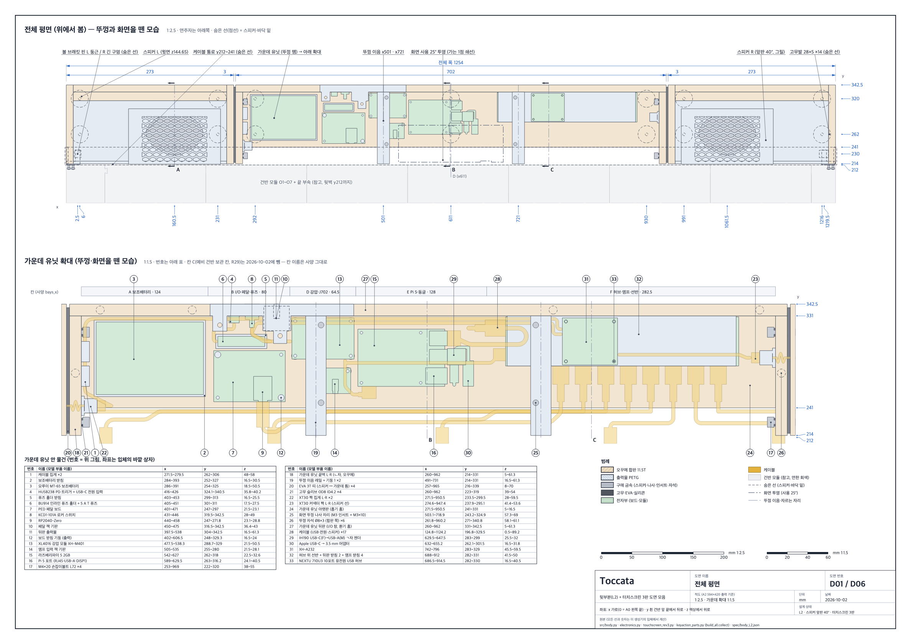</div><figcaption class="small muted">위에서 본 모습입니다. 뚜껑과 화면은 뗐습니다. 위는 전체 (1:2.5), 아래는 가운데 유닛 확대 (1:1.5)와 안 물건 번호표입니다. 점선은 스피커와 바닥 밑에 숨은 것 (케이블 통로, 고무발, 볼 핀)입니다. A·B·C·D는 다른 도면이 자르는 자리입니다.</figcaption></figure><figure class="sheet csheet rsheet" id="rd2"><div class="cap"><span><b>D02 · 스피커 단면</b></span><span class="zbar" role="group" aria-label="확대"><button type="button" data-z="1" aria-pressed="true">맞춤</button><button type="button" data-z="2">2배</button><button type="button" data-z="3">3배</button><a class="mono" href="rear/D02_speaker_section.svg" target="_blank" rel="noopener">크게 보기 (SVG) ↗</a> · <a class="mono" href="rear/D02_speaker_section.png" target="_blank" rel="noopener">PNG ↗</a></span></div><div class="dwimg"></div><figcaption class="small muted">왼쪽 스피커를 유닛 가운데에서 자른 단면입니다 (1:1). 40° 앞판, 판, 유닛, 그릴, 케이블 통로가 보입니다. 확대 A (5:1)는 27° 소리 길이 모듈 뒤 윗모서리 위로 지나가는 여유를 보여 줍니다. 안 부피와 Qtc 계산은 아래 글에 있습니다.</figcaption></figure><figure class="sheet csheet rsheet" id="rd3"><div class="cap"><span><b>D03 · 가운데 유닛 단면 2개</b></span><span class="zbar" role="group" aria-label="확대"><button type="button" data-z="1" aria-pressed="true">맞춤</button><button type="button" data-z="2">2배</button><button type="button" data-z="3">3배</button><a class="mono" href="rear/D03_centre_sections.svg" target="_blank" rel="noopener">크게 보기 (SVG) ↗</a> · <a class="mono" href="rear/D03_centre_sections.png" target="_blank" rel="noopener">PNG ↗</a></span></div><div class="dwimg">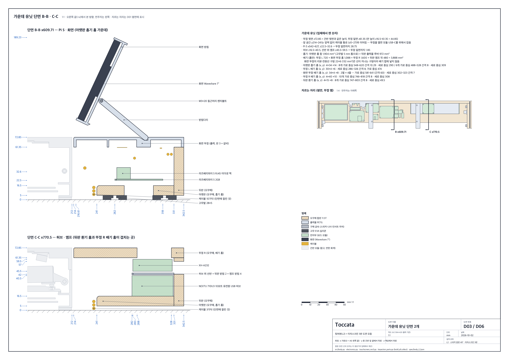</div><figcaption class="small muted">가운데 유닛을 두 곳에서 자른 단면입니다 (1:1). B-B는 Pi 5와 화면, C-C는 허브와 앰프를 지납니다. 뚜껑 높이, 안 높이, 흡기·배기 홈의 크기와 넓이를 적었습니다.</figcaption></figure><figure class="sheet csheet rsheet" id="rd4"><div class="cap"><span><b>D04 · 뒷면 입면 - I/O 판</b></span><span class="zbar" role="group" aria-label="확대"><button type="button" data-z="1" aria-pressed="true">맞춤</button><button type="button" data-z="2">2배</button><button type="button" data-z="3">3배</button><a class="mono" href="rear/D04_rear_elevation.svg" target="_blank" rel="noopener">크게 보기 (SVG) ↗</a> · <a class="mono" href="rear/D04_rear_elevation.png" target="_blank" rel="noopener">PNG ↗</a></span></div><div class="dwimg">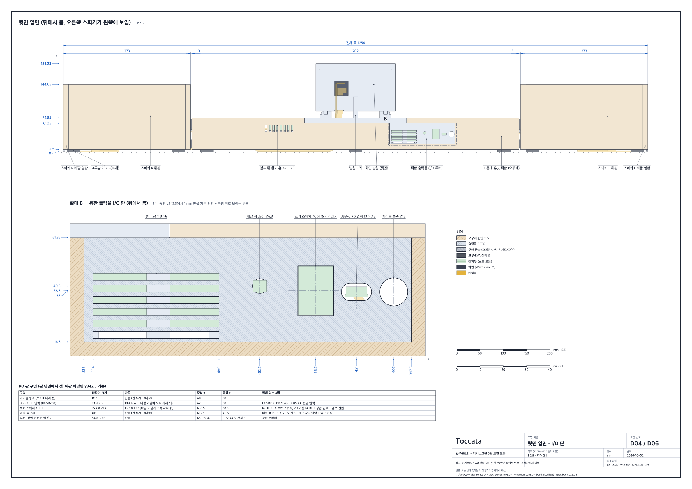</div><figcaption class="small muted">뒤에서 본 모습 (1:2.5)과 I/O 판 확대 (2:1)입니다. 케이블 통과 구멍, USB-C 전원 입력, 로커 스위치, 페달 잭, 루버의 크기와 중심을 표로 정리했습니다.</figcaption></figure><figure class="sheet csheet rsheet" id="rd5"><div class="cap"><span><b>D05 · 터치스크린 (사용 25° / 뒤꿈치 22° / 접은 상태)</b></span><span class="zbar" role="group" aria-label="확대"><button type="button" data-z="1" aria-pressed="true">맞춤</button><button type="button" data-z="2">2배</button><button type="button" data-z="3">3배</button><a class="mono" href="rear/D05_touchscreen.svg" target="_blank" rel="noopener">크게 보기 (SVG) ↗</a> · <a class="mono" href="rear/D05_touchscreen.png" target="_blank" rel="noopener">PNG ↗</a></span></div><div class="dwimg"></div><figcaption class="small muted">터치스크린 3판 옆 단면입니다 (1:1). 쓰는 자세 25°, 받침다리를 넣고 뺄 때의 뒤꿈치 22°, 접은 운반 상태입니다. 경첩 축, 가장 앞·가장 높은 점, 접은 높이, 모듈 쪽 지킴선을 적었습니다.</figcaption></figure><figure class="sheet csheet rsheet" id="rd6"><div class="cap"><span><b>D06 · 합판 재단도 (400 × 1200 한 장)</b></span><span class="zbar" role="group" aria-label="확대"><button type="button" data-z="1" aria-pressed="true">맞춤</button><button type="button" data-z="2">2배</button><button type="button" data-z="3">3배</button><a class="mono" href="rear/D06_plywood_cuts.svg" target="_blank" rel="noopener">크게 보기 (SVG) ↗</a> · <a class="mono" href="rear/D06_plywood_cuts.png" target="_blank" rel="noopener">PNG ↗</a></span></div><div class="dwimg">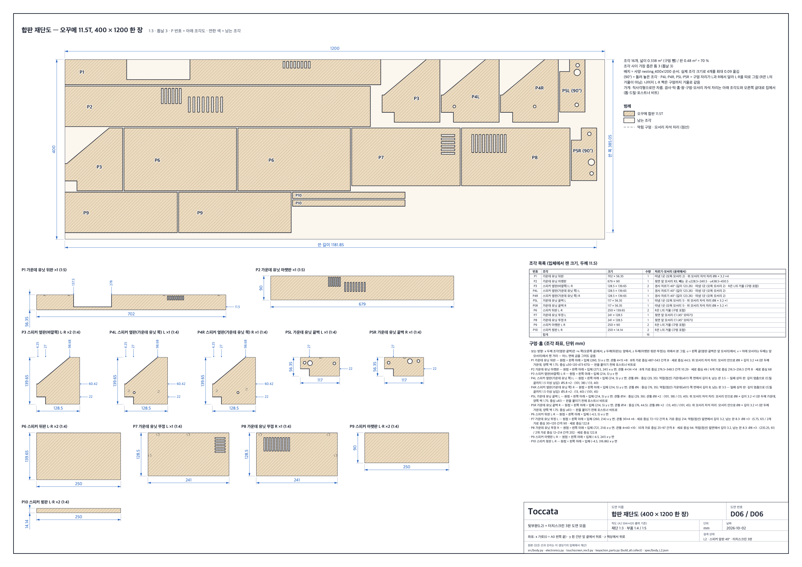</div><figcaption class="small muted">오꾸메 11.5T 400 × 1200 한 장에 합판 조각을 모두 배치했습니다 (1:3). 아래는 조각별 도면 (1:4·1:5)과 경사 자르기·따냄·구멍 표입니다. 가게에서는 직사각형으로만 자르고 나머지는 집에서 다듬습니다.</figcaption></figure><h3>렌더 (같은 모델)</h3><div class="rgrid"><figure class="rcard"><a href="rear/R01_front.png" target="_blank" rel="noopener"></a><figcaption class="small muted">R01 · 앞 3/4 (쓰는 상태)</figcaption></figure><figure class="rcard"><a href="rear/R02_rear_left.png" target="_blank" rel="noopener"></a><figcaption class="small muted">R02 · 뒤 왼쪽 3/4</figcaption></figure><figure class="rcard"><a href="rear/R03_folded.png" target="_blank" rel="noopener">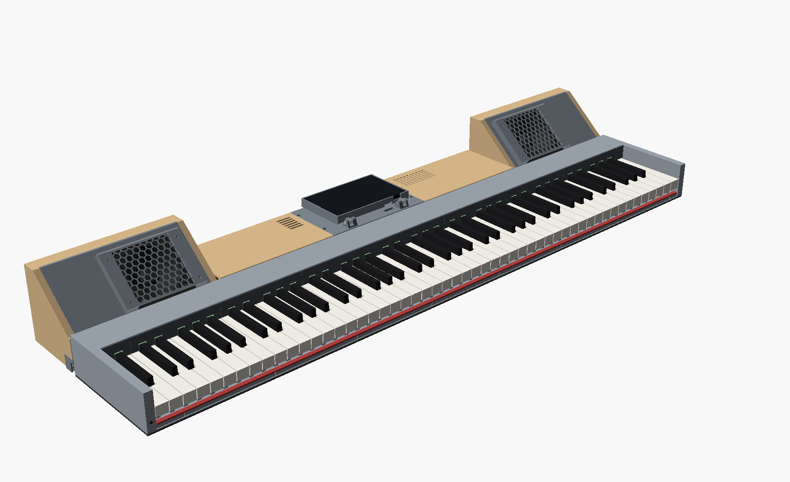</a><figcaption class="small muted">R03 · 화면을 접은 운반 상태 (선택 부품인 화면 덮개는 빼고 그림)</figcaption></figure></div><p class="small muted">원본: hardware/mechanical/cad/src/drawings.py → hardware/mechanical/cad/drawings/, renders/. 좌표: x 가로(0 = A0 왼쪽 끝), y 흰 건반 앞 끝에서 뒤로, z 책상에서 위로, 단위 mm.</p></section></main>
<footer><div class="wrap">모든 수치는 설계 모델과 독립 검증에서 나왔습니다. 원본: docs/01-hardware-design.md(v4 확정본), hardware/mechanical(sound-requirements.md · key-action-v4 · cad · touchscreen/rev3), hardware/pcb(개정 C), hardware/bom. 실제 구매 목록: 최종 재료 페이지 9CJ3HwhbhoodCAui94g28n.</div></footer>
<script>(function(){const pages=[...document.querySelectorAll('.page')];const links=[...document.querySelectorAll('nav.tabs a')];
function show(){let raw=(location.hash||'#summary').slice(1);let id=raw.toLowerCase(),anchor=null;
if(!document.getElementById('p-'+id)){const el=document.getElementById(raw);const pg=el&&el.closest('.page');if(pg){id=pg.id.slice(2);anchor=el}else id='summary';}
pages.forEach(p=>{p.hidden=(p.id!=='p-'+id)});links.forEach(a=>{if(a.dataset.to===id)a.setAttribute('aria-current','page');else a.removeAttribute('aria-current');});
if(anchor)anchor.scrollIntoView();else window.scrollTo(0,0);}
window.addEventListener('hashchange',show);show();})();</script>
<script>
(function(){
  document.addEventListener('click',function(e){
    var b=e.target.closest('.zbar button'); if(!b) return;
    var f=b.closest('.csheet'); var z=b.dataset.z;
    f.classList.remove('z2','z3'); if(z!=='1') f.classList.add('z'+z);
    f.querySelectorAll('.zbar button').forEach(function(x){x.setAttribute('aria-pressed', x===b?'true':'false');});
  });
})();

(function(){
  function setH(){ var n=document.querySelector('nav.tabs'); if(n) document.documentElement.style.setProperty('--navh', n.offsetHeight+'px'); }
  window.addEventListener('resize', setH); setH();
})();

(function(){
  // 10 뒷부분 도면: 2배 = PNG 2000 px, 3배 = the sheet SVG at 3000 px (vector, sharp); 맞춤 = PNG
  document.addEventListener('click', function(e){
    var b = e.target.closest('#p-rear .zbar button'); if(!b) return;
    var img = b.closest('.rsheet').querySelector('.dwimg img'); if(!img) return;
    var want = b.dataset.z === '3' ? img.dataset.svg : img.dataset.png;
    if (want && img.getAttribute('src') !== want) img.setAttribute('src', want);
  });
})();
</script>
<script>/* 09 CAD 모델 — three.js viewer for cad/toccata.glb (one mesh per part, node name = part id) + cad/parts.json.
   Loads only when the tab is first shown. Model coordinates are the design's (x across, y away from the player,
   z up, mm); the scene root turns them to three's y-up: (x, y, z) -> (x, z, -y). */
(function () {
  var sec = document.getElementById('p-cad');
  if (!sec) return;
  var started = false;
  function start() { if (started) return; started = true; boot(); }
  new MutationObserver(function () { if (!sec.hidden) start(); }).observe(sec, { attributes: true, attributeFilter: ['hidden'] });
  if (!sec.hidden) start();

  function loadScript(src) {
    return new Promise(function (res, rej) {
      var s = document.createElement('script'); s.src = src; s.onload = res;
      s.onerror = function () { rej(new Error(src)); }; document.head.appendChild(s);
    });
  }
  var msg = sec.querySelector('.load');
  function boot() {
    loadScript('https://cdnjs.cloudflare.com/ajax/libs/three.js/r128/three.min.js')
      .then(function () { return loadScript('https://cdn.jsdelivr.net/npm/three@0.128.0/examples/js/controls/OrbitControls.js'); })
      .then(function () { return loadScript('https://cdn.jsdelivr.net/npm/three@0.128.0/examples/js/loaders/GLTFLoader.js'); })
      .then(function () { return fetch('cad/parts.json').then(function (r) { if (!r.ok) throw new Error('cad/parts.json ' + r.status); return r.json(); }); })
      .then(init)
      .catch(function (e) { msg.textContent = '3D 모델을 불러오지 못했습니다 (' + e.message + '). 새로고침해 보세요.'; });
  }

  function cssVar(n) { return getComputedStyle(document.documentElement).getPropertyValue(n).trim() || '#ffffff'; }
  function M(x, y, z) { return new THREE.Vector3(x, z, -y); }          // model -> three
  var KIND = { print: '출력', bought: '구매', plywood: '합판', electronics: '전자', consumable: '소모품' };

  function init(D) {
    var stage = sec.querySelector('.stage');
    var canvas = stage.querySelector('canvas');
    var svg = stage.querySelector('svg.dims');
    var renderer = new THREE.WebGLRenderer({ canvas: canvas, antialias: true });
    renderer.setPixelRatio(Math.min(window.devicePixelRatio || 1, 2));
    renderer.localClippingEnabled = true;
    var scene = new THREE.Scene();
    function setBg() { scene.background = new THREE.Color(cssVar('--card')); req(); }
    scene.add(new THREE.HemisphereLight(0xffffff, 0x8a8f99, 0.85));
    var sun = new THREE.DirectionalLight(0xffffff, 0.75); sun.position.set(-600, 1400, 900); scene.add(sun);
    var fill = new THREE.DirectionalLight(0xffffff, 0.35); fill.position.set(900, 500, -800); scene.add(fill);
    var camera = new THREE.PerspectiveCamera(35, 1, 2, 20000);
    var controls = new THREE.OrbitControls(camera, canvas);
    controls.enableDamping = false; controls.screenSpacePanning = true;
    controls.addEventListener('change', req);
    var root = new THREE.Group(); scene.add(root);
    var clip = new THREE.Plane(new THREE.Vector3(-1, 0, 0), 1e6);   // keeps x < constant
    var meshes = {}, byGroup = {}, info = {};
    D.parts.forEach(function (p) { info[p.id] = p; });

    var pending = false;
    function req() { if (!pending) { pending = true; requestAnimationFrame(frame); } }
    function frame() { pending = false; resize(); renderer.render(scene, camera); drawDims(); }
    function resize() {
      var w = stage.clientWidth, h = stage.clientHeight;
      if (canvas.width !== Math.floor(w * renderer.getPixelRatio()) || canvas.height !== Math.floor(h * renderer.getPixelRatio())) {
        renderer.setSize(w, h, false); camera.aspect = w / h; camera.updateProjectionMatrix();
      }
    }
    window.addEventListener('resize', req);
    try { matchMedia('(prefers-color-scheme: dark)').addEventListener('change', setBg); } catch (e) {}
    new MutationObserver(setBg).observe(document.documentElement, { attributes: true, attributeFilter: ['data-theme'] });
    setBg();

    msg.textContent = '3D 모델을 불러오는 중… (약 9 MB)';
    function onGltf(g) {
      var obj = g.scene;
      obj.rotation.x = -Math.PI / 2;                   // z-up model -> y-up scene (x, y, z) -> (x, z, -y)
      root.add(obj);
      obj.traverse(function (o) {
        if (!o.isMesh) return;
        var id = o.name;
        var p = info[id];
        if (!p) { var par = o.parent; while (par && !info[par.name]) par = par.parent; if (par) { id = par.name; p = info[id]; } }
        o.userData.id = id;
        o.material = o.material.clone();
        o.material.side = THREE.DoubleSide;
        o.material.clippingPlanes = [clip];
        o.material.metalness = 0; o.material.roughness = 0.8;
        meshes[id] = o;
        if (p) { (byGroup[p.g] = byGroup[p.g] || []).push(o); }
      });
      msg.hidden = true;
      buildUi();
      preset('all');
    }
    // the model ships as base64 text (the artifact host does not serve .glb); decode, then parse the GLB
    fetch('cad/toccata.glb.b64.txt').then(function (r) {
      if (!r.ok) throw new Error('cad/toccata.glb.b64.txt ' + r.status);
      return r.text();
    }).then(function (t) {
      msg.textContent = '3D 모델을 푸는 중…';
      var bin = atob(t.trim()), n = bin.length, buf = new Uint8Array(n);
      for (var i = 0; i < n; i++) buf[i] = bin.charCodeAt(i);
      new THREE.GLTFLoader().parse(buf.buffer, '', onGltf, function (err) { msg.textContent = '3D 모델을 읽지 못했습니다: ' + (err && err.message || err); });
    }).catch(function (err) { msg.textContent = '3D 모델을 불러오지 못했습니다: ' + (err && err.message || err); });

    // ---------------- visibility (kinds × groups)
    var kindOn = { print: true, bought: true, plywood: true, electronics: true, consumable: true };
    var groupOn = {};
    D.groups.forEach(function (g, i) { groupOn[i] = true; });
    function applyVis() {
      Object.keys(meshes).forEach(function (id) {
        var p = info[id]; if (!p) return;
        meshes[id].visible = kindOn[p.k] && groupOn[p.g] && !hiddenIds[id];
      });
      req();
    }
    var hiddenIds = {};

    // ---------------- selection
    var sel = null, selMat = null;
    var infoBox = sec.querySelector('.info');
    function select(id) {
      if (sel && meshes[sel]) { meshes[sel].material.emissive.setHex(0x000000); }
      sel = id;
      if (!id) { infoBox.innerHTML = '<p class="empty">부품을 누르면 이름·크기·출력 파일이 여기에 나옵니다.</p>'; req(); return; }
      var m = meshes[id]; if (m) m.material.emissive.setHex(0x2a4d8f);
      var p = info[id]; if (!p) { sel = null; req(); return; } var b = p.b;
      var h = '<span class="kd ' + p.k + '">' + (KIND[p.k] || p.k) + '</span><span class="kd">' + esc(D.groups[p.g]) + '</span>' +
        '<h4>' + esc(p.n) + '</h4><dl>' +
        '<dt>크기</dt><dd class="mono">' + f1(b[3] - b[0]) + ' × ' + f1(b[4] - b[1]) + ' × ' + f1(b[5] - b[2]) + ' mm</dd>' +
        '<dt>위치</dt><dd class="mono">x ' + f1(b[0]) + '~' + f1(b[3]) + '<br>y ' + f1(b[1]) + '~' + f1(b[4]) + '<br>z ' + f1(b[2]) + '~' + f1(b[5]) + '</dd>';
      if (p.f) h += '<dt>출력 파일</dt><dd class="mono">' + esc(p.f) + '</dd>';
      if (p.m) h += '<dt>재료</dt><dd>' + esc(p.m) + '</dd>';
      if (p.pn) h += '<dt>출력</dt><dd>' + esc(p.pn) + '</dd>';
      if (p.nt) h += '<dt>메모</dt><dd>' + esc(p.nt) + '</dd>';
      h += '<dt>id</dt><dd class="mono">' + esc(id) + '</dd></dl>';
      if (p.d && p.d.length) h += '<ul class="dl">' + p.d.map(function (d) { return '<li><b class="mono">' + esc(d[1]) + '</b> ' + esc(d[0]) + '</li>'; }).join('') + '</ul>';
      h += '<div class="gtools" style="margin-top:8px"><button type="button" data-act="hide">이 부품 숨기기</button><button type="button" data-act="focus">가까이 보기</button></div>';
      infoBox.innerHTML = h;
      req();
    }
    infoBox.addEventListener('click', function (e) {
      var a = e.target.getAttribute && e.target.getAttribute('data-act'); if (!a || !sel) return;
      if (a === 'hide') { hiddenIds[sel] = true; applyVis(); select(null); }
      if (a === 'focus') { var b = info[sel].b; frameBox(b, 1.6); }
    });
    function esc(s) { return String(s).replace(/[&<>"]/g, function (c) { return { '&': '&amp;', '<': '&lt;', '>': '&gt;', '"': '&quot;' }[c]; }); }
    function f1(v) { return (Math.round(v * 10) / 10).toString(); }
    var ray = new THREE.Raycaster(), down = null;
    canvas.addEventListener('pointerdown', function (e) { down = [e.clientX, e.clientY]; });
    canvas.addEventListener('pointerup', function (e) {
      if (!down || Math.hypot(e.clientX - down[0], e.clientY - down[1]) > 5) return;
      var r = canvas.getBoundingClientRect();
      var v = new THREE.Vector2((e.clientX - r.left) / r.width * 2 - 1, -(e.clientY - r.top) / r.height * 2 + 1);
      ray.setFromCamera(v, camera);
      var hits = ray.intersectObjects(Object.keys(meshes).map(function (k) { return meshes[k]; }).filter(function (m) { return m.visible; }), false);
      hits = hits.filter(function (h) { return clip.distanceToPoint(h.point) >= 0; });
      select(hits.length ? hits[0].object.userData.id : null);
    });

    // ---------------- camera presets
    function frameBox(b, k) {
      var c = M((b[0] + b[3]) / 2, (b[1] + b[4]) / 2, (b[2] + b[5]) / 2);
      var r = Math.max(b[3] - b[0], b[4] - b[1], b[5] - b[2]) * (k || 1.2);
      var dir = camera.position.clone().sub(controls.target).normalize();
      controls.target.copy(c); camera.position.copy(c.clone().add(dir.multiplyScalar(r))); controls.update(); req();
    }
    function look(eye, tgt) { camera.position.copy(M(eye[0], eye[1], eye[2])); controls.target.copy(M(tgt[0], tgt[1], tgt[2])); controls.update(); req(); }
    var lidIds = D.lids || [];
    function preset(k) {
      lidIds.forEach(function (id) { delete hiddenIds[id]; });
      setSection(null);
      var v = (D.views || {})[k];                     // L2: presets come from parts.json (gen_viewer.l2_views)
      if (v) {
        if (v.lids === false) lidIds.forEach(function (id) { hiddenIds[id] = true; });
        if (v.section != null) setSection(v.section);
        look(v.eye, v.tgt);
      }
      else if (k === 'all') look([-260, -900, 760], [611, 225, 40]);
      else if (k === 'module') look([500, -170, 260], [622, 110, 30]);
      else if (k === 'rear') { lidIds.forEach(function (id) { hiddenIds[id] = true; }); look([611, 90, 620], [611, 350, 40]); }
      else if (k === 'section') { setSection(D.section_x); look([D.section_x + 330, 108, 60], [D.section_x, 108, 32]); }
      else if (k === 'front') look([611, -1500, 300], [611, 205, 80]);
      applyVis();
      sec.querySelectorAll('[data-preset]').forEach(function (b) { b.setAttribute('aria-pressed', b.getAttribute('data-preset') === k ? 'true' : 'false'); });
    }

    // ---------------- section plane (keeps x < value)
    var secIn = sec.querySelector('#cadSec'), secOut = sec.querySelector('#cadSecOut'), secOn = sec.querySelector('#cadSecOn');
    function setSection(x) {
      if (x == null) { clip.constant = 1e6; secOn.checked = false; secOut.textContent = '끔'; }
      else { clip.constant = x; secIn.value = x; secOn.checked = true; secOut.textContent = 'x ' + (+x).toFixed(1); }
      req();
    }
    secIn.addEventListener('input', function () { setSection(+secIn.value); });
    secOn.addEventListener('change', function () { setSection(secOn.checked ? +secIn.value : null); });

    // ---------------- dimension overlay
    var dimsOn = false;
    var dimBtn = sec.querySelector('#cadDims');
    dimBtn.addEventListener('click', function () { dimsOn = !dimsOn; dimBtn.setAttribute('aria-pressed', dimsOn ? 'true' : 'false'); req(); });
    function proj(p) {
      var v = M(p[0], p[1], p[2]).project(camera);
      return [(v.x + 1) / 2 * stage.clientWidth, (1 - v.y) / 2 * stage.clientHeight, v.z];
    }
    function drawDims() {
      if (!dimsOn) { svg.innerHTML = ''; return; }
      var out = '';
      D.dims.forEach(function (d) {
        var a = proj(d.a), b = proj(d.b);
        if (a[2] > 1 || b[2] > 1) return;
        if (d.ea) { var e0 = proj(d.ea), e1 = proj(d.eb); if (e0[2] <= 1 && e1[2] <= 1) out += '<line class="ext" x1="' + e0[0] + '" y1="' + e0[1] + '" x2="' + a[0] + '" y2="' + a[1] + '"/><line class="ext" x1="' + e1[0] + '" y1="' + e1[1] + '" x2="' + b[0] + '" y2="' + b[1] + '"/>'; }
        out += '<line x1="' + a[0] + '" y1="' + a[1] + '" x2="' + b[0] + '" y2="' + b[1] + '"/>';
        var ang = Math.atan2(b[1] - a[1], b[0] - a[0]);
        [[a, ang + Math.PI], [b, ang]].forEach(function (q) {
          var p = q[0], t = q[1], s = 7;
          out += '<line x1="' + p[0] + '" y1="' + p[1] + '" x2="' + (p[0] - s * Math.cos(t - 0.4)) + '" y2="' + (p[1] - s * Math.sin(t - 0.4)) + '"/>' +
                 '<line x1="' + p[0] + '" y1="' + p[1] + '" x2="' + (p[0] - s * Math.cos(t + 0.4)) + '" y2="' + (p[1] - s * Math.sin(t + 0.4)) + '"/>';
        });
        out += '<text x="' + (a[0] + b[0]) / 2 + '" y="' + ((a[1] + b[1]) / 2 - 6) + '" text-anchor="middle">' + esc(d.t) + '</text>';
      });
      svg.innerHTML = out;
    }

    // ---------------- UI
    function buildUi() {
      sec.querySelectorAll('[data-preset]').forEach(function (b) { b.addEventListener('click', function () { preset(b.getAttribute('data-preset')); }); });
      sec.querySelectorAll('[data-kind]').forEach(function (b) {
        b.addEventListener('click', function () {
          var k = b.getAttribute('data-kind'); kindOn[k] = !kindOn[k];
          b.setAttribute('aria-pressed', kindOn[k] ? 'true' : 'false'); applyVis();
        });
      });
      var list = sec.querySelector('.glist');
      list.innerHTML = D.groups.map(function (g, i) {
        return '<label><input type="checkbox" id="cadg' + i + '" data-g="' + i + '" checked><span>' + esc(g) + '</span><em>' + (byGroup[i] ? byGroup[i].length : 0) + '</em></label>';
      }).join('');
      list.addEventListener('change', function (e) { var i = e.target.getAttribute('data-g'); if (i == null) return; groupOn[i] = e.target.checked; applyVis(); });
      sec.querySelector('[data-gall]').addEventListener('click', function () { setAllGroups(true); });
      sec.querySelector('[data-gnone]').addEventListener('click', function () { setAllGroups(false); });
      sec.querySelector('[data-gshow]').addEventListener('click', function () { hiddenIds = {}; applyVis(); });
      select(null);
    }
    function setAllGroups(on) {
      D.groups.forEach(function (g, i) { groupOn[i] = on; var c = sec.querySelector('#cadg' + i); if (c) c.checked = on; });
      applyVis();
    }
  }
})();
</script>
